| ベン・トー 11 サバの味噌煮弁当【極み】２９０円 | |
| アサウラ | |
| 集英社 (2014) | |

ベン・トー 11
サバの味噌煮弁当【極み】２９０円
アサウラ
この本は縦書きでレイアウトされています。
また、ご覧になる機種により、表示の差が認められることがあります。
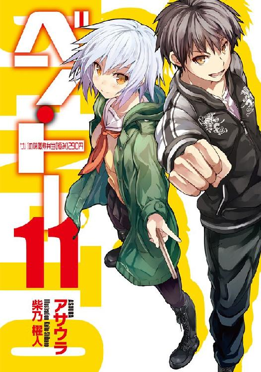
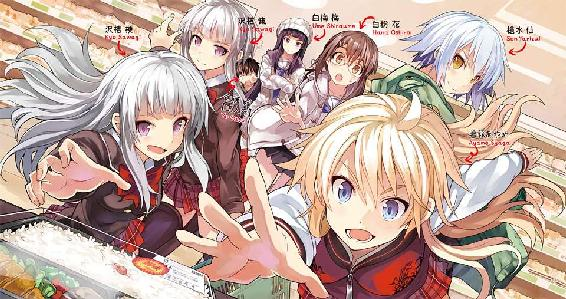
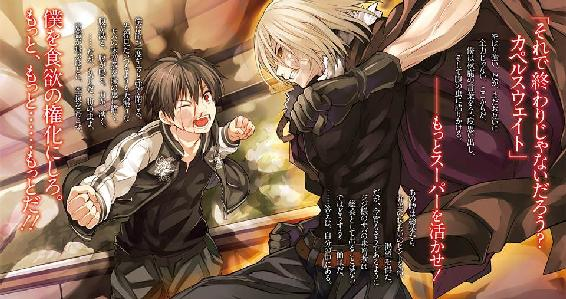
主要登場人物
佐藤 洋（さとう・よう）
烏田高校一年。体力とバカには自信がある。ゲームはセガ派。二つ名は《カペルスウェイト》。
著莪 あやめ（しゃが・あやめ）
丸富大学付属高校一年。佐藤洋と同じ生年月日の従姉。イタリア人の母を持つハーフ。ゲームはセガ派。二つ名は《湖の麗人》。
槍水 仙（やりずい・せん）
烏田高校二年。ハーフプライサー同好会会長。二つ名は《氷結の魔女》。
白粉 花（おしろい・はな）
烏田高校一年。小説執筆が趣味な女の子。実は一部ネットでは名が知られた存在だったりする。二つ名は《幽霊》。
白梅 梅（しらうめ・うめ）
烏田高校一年でありながら生徒会会長を担う。白粉をとても大事に想っている。暴力的な一面を見せることも。
沢桔姉妹（さわぎ・しまい）
丸富大学付属高校二年の双子の姉妹。やや残念な姉の梗と良くできた妹の鏡。それぞれ生徒会長と副会長を担っている。二つ名は《オルトロス》。
二階堂 連（にかいどう・れん）
丸富大学二年、かつて庶民経済研究部の諜報組織《ガブリエル・ラチェット》の頭目だった男。現在は一匹の狼としてスーパーを駆けている。
金城 優（かねしろ・ゆう）
烏田高校三年。最強と謳われる存在。二つ名は《魔導士》。
松葉 菊（まつば・きく）
元最強の狼にして、現在は半額神となった女。既婚。現役時代の二つ名は《女帝》。
毛玉（けだま）
半額弁当争奪戦の情報通。観察者に止まらず、場合によっては手を加えたりもする。実は執筆業を生業としているが......それはまた別のお話。
木和田 輝（きわだ・てる）
全てが謎の人物。突発的に登場することが多いのだが、最近シリアスな場面では控えるようになった。
イラスト／柴乃櫂人
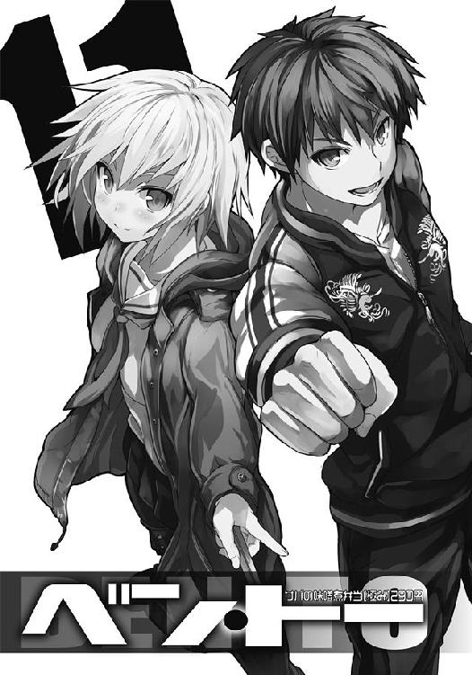
１章 犬の群れ
「......金城先輩......私は......」
槍水仙
０
ここ最近何かがおかしい、と白粉花は感じていた。その原因を作っているのは......間違いなく、佐藤洋だろう。そのことを意識しながら放課後、白粉はいつものように部室の扉を開く。
近隣スーパーの位置やそこの半値印証時刻が記入された巨大な地図が貼られた壁と半額シールが幾層も重なって貼られたその対面。それらに挟まれる形で広い部室の中央に鎮座する巨大な円卓。その上に人型の影を落とす、大きな窓の前に立つ《氷結の魔女》こと槍水仙。
彼女は片肘を手で押さえるようにして、白粉に背中を見せながら立っていた。
「ん？ 白粉か、今日は遅かったな」
槍水はわざとワイルドに見えるよう尖らせた髪先を揺らし、振り返った。
そのキリリとした目も、最近はどことはなしに鈍って見える。
「掃除の後に担任の先生から、プリント作るの手伝ってくれって言われて。えぁっと......佐藤さん、今日も遅いですね」
「きっとアイツも掃除当番なんだろう。......それより、どうだ、ちょっと遊ばないか」
月桂冠という特別な半額シールが保存されているフォルダや文房具、割り箸や果物ナイフなどの様々なアイテムが納まっている棚から、槍水はトランプを取り出した。
その黒いストッキングに収まれたしなやかな足を組んで、窓際の席に槍水が座ると慣れた手つきでカードをシャッフル。その隣に白粉も鞄を持って座った。
「最近、佐藤さん、部活に来る時間遅くなりましたよね」
「ん、そうだな。年度末も近いし、忙しいんだろう」
まただ、と白粉は思う。佐藤は以前ならば授業が終わり次第そそくさと部室に現れていたのに、最近は不自然なまでに遅くなっている。そしてそれを槍水との会話に持ち出すと、それとなく彼女は流してしまうのだ。毎日掃除当番なわけがないのは、誰にだってわかるはずなのに。
次佐藤に会った時に、自分が問えばいいのかもしれない。でも、どうして部室に遅れるようになったのかを自分が佐藤に問うのはおこがましい気がして、白粉には難しく感じてしまう。
だからそれとなく槍水に促してみるのだが、彼女はそれを汲み取らない。いや、汲み取った上で汲み取らなかったことにしているように感じられた。
白粉はそれとなく外していた眼鏡を装着する。
眼鏡をかけるのは勉強時、読書時、執筆時......そして、何かしらを見極める時のみだ。たとえば佐藤がパンツ一丁でいようものなら、そのボディの隅々――それこそすね毛の長さや縮れ具合の観察のために眼鏡は欠かせない。細やかな観察がその後の執筆で活きてくる。
眼鏡越しに見る槍水はどこか、弱腰だ。......逃げ腰、といってもいいのかもしれない。
半値印証時刻の彼女――氷結の魔女としての彼女ならば絶対に見せることのない憂い顔は、どこかいじける子供のように見えた。女の憂いた表情には艶が出るというのが定説だが、彼女にはそれがないように見える。同性だからだろうか？ いや、そんな主観を入れて観察などしない。観察時の自分の感性は極めてフラットだと、白粉は自負している。だから......。
「......あっ」
「ん？ どうした、白粉？」
い、いえ何でもないです......と、白粉は誤魔化しつつ、眼鏡を外した。
槍水を見ているはずが、気が付くと昔の自分を見ているような気がして、思わず声が出た。
大人びている一つ上のキリリとカッコイイ先輩が、自分なんかと重なった......？ 何故？
部の空気がおかしいのは佐藤が原因なのは間違いない。だが、それに意識を取られ過ぎていて、実は槍水もまた何かがおかしかったのかもしれない。
自分の観察力の低さに、白粉は歯がみする気分で槍水からカードを受け取った。
いじめられ続けた過去から、いつも人の視線から逃げるように、ひっそりと生きてきた。
気が付くと人の視線を敏感に感じ取れるようになり、それと同時に人の顔色を窺うクセがついていた。それが皮肉にも結果的に狼、そしてモノカキとしての観察力を高めることに繋がっていたのだが、今回ばかりは役に立っていなかったことが不思議と悔しかった。
――きっと......。白粉は槍水とトランプをしながら思う。きっと槍水の変化を見逃していたのは、彼女の心情を読み取ろうとする気持ちが自分になかったせいだ。
白粉にとって世界の大半は自分を怯えさせるものでしかない。だが、槍水はすでにその類ではない、安心出来る身内のような存在だという認識になっていたのだろう。
佐藤も同様なのだが、彼の場合は観察対象だからすぐに変化に気が付けたのだ。
「どうした白粉、浮かない顔だな。そんなに手札が悪いのか？」
そう言う槍水は少しだけいつもの雰囲気に戻りつつある。
白粉は、いえ、と笑いつつも、もどかしさを噛みしめた。彼女の変化に気づけず、そして二人がおかしくなっているのに何も出来ないでいる自分の無能さに。
いつも困ったことがあったら助けてくれた二人。様々なインスピレーションを与えてくれる佐藤洋はもちろんのこと、自分ごときに当たり前に接し続けてくれている槍水仙......。
白粉は考え、思う。二人のために、自分は何が出来るのだろう。そして、もう何も出来ない自分でいたくはない......と。
○
一年前のように、その扉の前に立つと緊張に鼓動が高鳴った。静電気を警戒するように恐る恐るドアノブに手を掛け、扉を開く。
「あ、佐藤さん。遅かったですね」
そこはＨＰ同好会の部室。夕暮れの赤い太陽の光で染められた部室には白粉と、そして「お？」という様子で手に持っていたカードから顔を上げて、そっと微笑む槍水先輩。
僕、佐藤洋も、同じように笑顔で返すのだけれど、それにはどこかしらに安堵の意味合いが含まれているのを他人事のように感じた。......白粉がいてくれたからだ。
「佐藤、今日も遅かったな」
「すみません、先輩。ちょっと......他クラスなんですけど、同じ寮の友達と教室で喋ってて」
嘘ではない。電車などであと少し姿勢を低くしたら対面に座った女性のスカートの中――黄金郷が垣間見えるのではないか、という甘い誘惑は実際に見えるか否かを問わず男にとってはロマンを覚えるに値するものだが、その一方で、短いスカートで足がやや開き気味......即ちもはや対面に座った人に限り絶賛公開中といった状況だというのに、左右の太ももの圧倒的な肉の扉によって完全ガードされている様子は何一つロマンがない、この差は何なのか？ そんな、人類史上におけるとてつもない難題に高段位桜桃少年団の神田君、蔵田君、矢部君らと共に立ち向かっていたのは事実である。ちなみに〝見えるかもしれない〟という希望こそが僕らにロマンを与えてくれるが、肉壁の前ではその希望の光すら遮られてしまうからではないか？ という仮説に辿り着いた段階で僕は離脱して、こちらの部室へとやってきていた。
ただ、遅れた理由は彼らとそんな話をして、他クラスの女子生徒たちにドン引きされるのを良しとしたからではない。......白粉が、部室に行くのを待っていたのだ。
バレンタインデーの夜以来、僕は槍水先輩と二人っきりになるのを避けていた。あの、先輩が《魔導士》こと金城優に、夜の公園でチョコを渡そうとしたその光景を見て以来......。
別に、普通に渡そうとしていたのなら、きっと僕は――その強弱はともかく――嫉妬心を覚えたぐらいで終わったのかもしれない。でも二人っきりで僕と夕餉を食べ、一緒に帰って......その後に、夜の公園で金城優に気持ちを渡しに走った彼女の姿は、僕にとっては酷く痛いものだった。そして渡そうとしたのも、僕が貰った彼女の妹である茉莉花と先輩の共同のそれではなく、明らかに槍水仙という一人の女性としてのものであったこと、そして金城が受け取らなかったことで涙を流した彼女の悲痛な姿をのぞき見てしまったこと......それらの嫉妬心や罪悪感、そしてその贈り物が自分の物だと勘違いしていた己のバカさ加減が、今のもやもやとした僕の気持ちを生み、二人っきりになることを避けさせる原因となっていた。
もし、二人っきりになったらその時のことについて触れてしまうかもしれない。いや、そうでなくともそれについて考えないわけにはいかなくなる。それが......嫌だった。
尋ねればあの夜のことについて先輩は語ってくれるかもしれない......けれど、そうされた時に逃げ道が見つけられなくなりそうで、現実を突き付けられてしまいそうで......怖くて、僕は何も訊くことが出来ないでいた。先輩が、誰を好いているのか。誰を好いてきたのか。それをはっきりと聞いてしまえば、僕は......。
怯えるが故に僕の様子はそれまでとは変わり、先輩は訝しく思い、白粉は何らかを察して......部の空気はどんどんおかしくなっていく。そして先輩が明らかにあの夜以来覇気を失っているのに、僕も白粉もあえて触れないでいるというのも、それに拍車を掛けていた。
そんな状態で二人っきりになるのは辛く、僕は白粉が部室に向かうに十分な時間を潰した上でなくては、ここの扉を開く勇気が持てないでいた。
「どうした、佐藤。ボーッと突っ立っているな、お前も席に着け」
先輩に誘われ、僕もまた窓際の席に着き、トランプに交じる。
僕らは大富豪で遊ぶ。全員が何かを察しながらもあえてそれに触れないで、かつそれもまたお互いに察し合ってしまっているという......あの夜以来当たり前になりつつある浮き足立つような、心の底から楽しめない微妙なゲーム。
それが続くにつれ、日は落ち、いつしか部室内も夜の色に染められていく。
「......ん？ おっと、もうすぐアブラ神の半値印証時刻だな。そろそろトランプは終わりにするか。今夜は、どうする？」
先輩はカードをまとめると、足を組み直して僕らに尋ねる。
「えぁっと......その、じゃ、あたし、行っていいですか？」
「ん、いいぞ、白粉。それじゃ私は......そうだな、たまには少し離れた店にでも行ってみるかな。最近どうも負けが続いているし、気分を変えないと。佐藤はジジ様の店か？」
「......じゃ、僕も白粉と一緒にアブラ神の店に行ってみようかと」
槍水先輩がどの店に向かうのかはわからないけれど、白粉が早い半値印証時刻を有するアブラ神の店に行くとなると、その後に彼女と二人っきりになる時間が長くなりそうな予感がして......僕は、また、逃げた。
「そうか。最近は白粉が調子いい代わりに佐藤、お前の勝率が下がっているんだ。頑張れ」
「それを言うなら先輩もじゃないですか」
先輩は一瞬たじろいだ顔をするものの、すぐに不満げな顔でペチッと僕の額を指で弾いた。
僕は黒い犬が描かれたスカジャンを羽織り、純白のコートを纏った白粉と共に部室を出る。
一人残り、窓の外を見やって物悲しげな表情をする槍水先輩の姿を、僕は部室の扉が閉まるまで見つめ......そして、ひっそりと思うのだ。
きっと、僕は......自分で思っていたよりも、ずっと彼女のことが好きだったのだろう、と。
弾かれた額が、どこか以前よりも痛く感じる。
１
――チンコ。このわずか三文字が宿す魂の熱量は果たして何に由来するものなのだろう。そして、烏田高校男子寮前の民家のブロック塀にスプレーで殴り書きされたそのメッセージに込められた書き手の想いとは何なのだろうか。
どう考えても住処の真ん前という身近過ぎるエリアにこの手のラクガキをする猛者はさすがに寮内にはいないと思うのだけれど、その民家の家主様がラクガキを消さないと通報するぞと喚き散らす素敵なツルッパゲだったことと、全寮生による大抽選会の結果、僕が見事これの清掃作業に大抜擢されるというユニークな展開の果てに、授業が終わるなりすぐさま帰宅し、こうして〝チンコ〟の文字と相対している......という誰もが夢見るロマンチックな有様が今、僕の置かれている状況だった。
しかしながらこの文字......前に立った人間の丁度腹部ぐらいの高さに、黒いスプレーで、一文字当たり約四〇×四五センチサイズで書かれた、それ。チの文字が一番低く、コの文字にいくにつれて位置が高くなっているのはイントネーションの指定なのだろうか。
そして最後の文字はコでなければならなかったのか？ ポでは決して許されない理由が？ 何故カタカナ？ 何故ここに......？ このダ・ヴィンチ・コードならぬチンコ・コード......いや、チンコードは考えれば考えるほど謎が深まり行く。
浅はかな連中ならば単なるバカのラクガキだと一蹴してしまうものなのかもしれない。だが、僕のような高尚な人間からするとこれは何かしらのメッセージだと感じていた。
そう、僕のようなＤＣのかの名作『ジェットセットラジオ』をしこたま遊んだ人間からすると、もはやこのラクガキ......いや、グラフィティにはある種の魂が宿っているのをはっきりと感じることが出来る。
ちなみに『ジェットセットラジオ』について触れておくと、近未来のトーキョーにて補助動力付きのインラインスケートを装着した若者たちが、海賊ラジオでノリノリの音楽を聴きながら街を疾走し、ラクガキによって縄張りを主張しあう......という爽快感溢れるポップなストリート系アクションゲームである。
あのゲームにおいて街に書き残されたグラフィティは若者たちのソウルであり、主張なのだ。それを考えるとツルッパゲのオッサンの塀にラクガキした犯人も何らかの主張を有し、ソウルを込め、この場所にてチンコの文字を書き残したに違いない。決してチンポでもティンコでもなく、あくまでチンコであり、後半は右上に跳ねるようにして描く必要があったのだろう。
だからだろうか。誰もがこのラクガキを見る。視線が引っ張られる。熱き魂の熱量が人の意識を引き寄せている。たった三文字だ。しかも特にこれといった凝った描き方をしているのではないのに、何故こうも見る者の心を掴むのか。
いや、わかっている。その単語そのものに恐らく人々が認識している以上の力があるということを。試しに人混みの中でこの単語を呟いてみるといい。一斉に誰もが発言者を見やり、驚いた表情をすることだろう。それはつまり、この言葉そのものに何らかの力があるということに違いなく、他の言葉のそれをはるかに上回る〝何か〟を宿しているのだ。
そして言葉の力について語るにはやはり偉大なる日本のＳＦ作家、神林長平先生の作品について触れるべきなのだろうが、そうするとチンコの文字を前に一時間以上仁王立ちしている今の僕の状況を遥かに凌ぐほどの時間と体力を要するので、今回は割愛しよう。
――チンコ。唱えてみればはっきりとわかる不思議な言葉。――チンコ。神秘なる泌尿器を示す言葉。それをあえてこのシンプルながら独特なグラフィティにしてこの場に残した......その意味は何なのか。僕は考える。感受性を上げるために頭の中で名曲揃いの『ジェットセットラジオ』のＢＧＭを思い出すに任せて再生しつつ、ゲーム内で主人公がしていたノリのいいダンスを再現しながら、チンコの文字を前に僕は必死になって考えた。
歌姫にして天使である初音ミクさんが降臨する以前の、リズムゲームを得意としないオールドタイプのセガ派である僕では正直きちんと再現出来てはいないのかもしれないが......そんなもの構うものか。たとえその塀が烏田高校の通学路上にあり、帰宅していく生徒たちが大勢いたのだとしても気にしなかった。何故なら今僕は時を経て、このメッセージを書き残した相手と対話しているだけであって、人に見せているものではないのだ。何より当時一緒に再現しようと特訓した従姉の著莪あやめよりはいくらかマシなはずだし。自慢じゃないが著莪にリズム系のゲームで負けたことがない。お互いに超低レベルなどんぐりの背比べだけれど......。
ヘイ、このメッセージを残したユー。お前は何をここに残したんだい？ お前は誰にそのソウルを伝えようとしているんだ？ 教えてくれ、この僕に。お前の気持ちをきっと理解出来るから。さぁ話そうじゃないか。語り合おうじゃないか。グラフィティを通した魂の触れ合いさ。僕たちの間に時間の隔たりなんて意味はない。あるのは自分っていうソウルの塊、残すのはそのソウルの輝き。それは永遠なんだ。さぁ、話そう、語り合おう。そうさ、僕とお前は――。
「変態ですか？」
「Ｓｏ！ 熱きソウルを有した変態なのさ！ チンコ、チンコ、その生命の根源に乗せたお前のホットなソウ......」
その冷徹なまでの軽蔑を含んだ声が何であるのか、それを理解するまでに数秒を必要とした。そして全てを察し、汗だくになって踊っていた僕は、振り動かしていた両手を掲げたまま止め......二月の後半である薄暗い空を見上げたまま、しばし固まった。頬を伝う汗が顎先から滴る。
僕はダンスにホットになっていた体に酸素を供給しようとぜぇぜぇ言っている己の口を意志の力で閉じ、そっと、声のした方を見やる。
そこには男子寮前ではまず見ることのない人がいた。白いニーソックスを履き、烏田高校の制服の上に薄手の白いダウンコートを羽織り、頭にはコートと白いふわふわのニット帽を乗せた黒髪。お尻の辺りで白いリボンでまとめられたそれは真っ直ぐに艶やかで長く、白いコートなどとの色の対比がとても美しい。そして彫刻のように繊細で整った顔で、腐敗した生ゴミを見やるような目で僕を射貫くのは......そう、腕を組まれている白梅梅様です。
「学路の途中で卑猥なラクガキを前にブツブツとわけのわからないことを呟きながら怪しげな祈祷を捧げている男子生徒がいる、と、生徒会ではなく、わたしの方に直接連絡があったんです。......わかりますか、この意味が」
「......とりあえず、祈祷じゃなくてさ、ストリート系のダンスなんだけど......」
まぁある意味でキトウに関連はしているのだけれど。そういえばここのツルッパゲの家主、怒り狂うと血管が浮かび上がってピクピクするもんだから、もう後ろ姿とかが完全に放送禁止状態だって一時、話題だったなぁ。
それはそうと白梅がキトウだなんて単語を口にするのはとても新鮮で、良い意味で卑猥さを感じさせて実に味わい深い。白粉では何万回言ったところでこうはいかないだろう。
「しばらく見ていたのですが、祈祷でしたよ。それも邪教の類の。......まぁそれはどうでもいいんです。佐藤君がどこで何をしていようとわたしの知ったことではありません。......が、〝佐藤君がおかしなことをしている〟とクラスメイトからわたしに直接連絡が来るのは不愉快極まるのですが......どういうことだと思います、これ」
ははーん、さてはバレンタインデーに白梅が公然と僕にチョコを渡したもんだからガチで僕らが男女の関係だと信じている奴らがいる、ってことなのだろう。あまり悪い気はしないな。
僕は照れたような顔で頬を指でポリポリとやると、白梅の眉根が寄り、深い皺が生まれる。
「......怒っていいですか？」
「ハハッ！ よせよ、梅。公衆の面前でするようなことじゃな――」
白梅様の手が素早く僕の頭を掴むと、そのまま塀に叩きつけるという......この恥ずかしがり屋なツンデレめ、コイツゥ、と微笑ましくなる一撃をかましてくれました。えぇ、チンコのグラフィティの横に、メイド・イン・佐藤の傷が塀に深く刻まれたのです。
数秒にわたる失神の後、僕はこのグラフィティと、それを消すことになった理由、そして結果的に一時間の相対の後にさらに三〇分ほども踊っていたらしい事実について経緯を話した。
「その『ジェットセットラジオ』は現実のインラインスケートのようにジャンプから着地した後も慣性が働いたりとやや操作が難しいところもあるのだけれど、そうであるからこそ、その操作をマスターしてトーキョーを自由自在に三次元的に滑走するのはとても爽快感がある。これはその後に同じ開発会社のスマイルビットさん、あ、これはね、当時のセガは今では再統一されたけど、分社化されてたんだよ、うん。でね？ そこで製作されたＸＢＯＸのソフト『ガンヴァルキリー』でも同様で、即ちプレイヤーの成長がゲーム性......いや、この場合は〝ゲームの面白さ〟や〝プレイの気持ち良さ〟にダイレクトに反映されるという――」
「つまり、要点をまとめると、佐藤君が落書きしたわけでもなければ、恐らく寮の生徒でもない、というわけですね？」
「うん、そう、だからね。ユーザフレンドリィ及びユーザビリティという都合の良い言葉によって難易度の低さ、操作性のシンプルさを求めすぎた結果、ゲーム本来の〝楽しさ〟を見失い、プレイは単調かつ淡白で、映像は派手だけど、ただボタンを押しているだけでしかないっていうソフトが市場に溢れ、ゲーマーをうんざりさせたことが二〇〇〇年初頭からの国内市場縮小を加速させた要因だったと僕は思うんだけれど、『ジェットセットラジオ』や『ガンヴァルキリー』はそれらに対するある種の先制攻撃的なアンチテーゼであって――」
「もう十分です。わかりました」
「うん、ただね、一応注意してほしいのは単にメーカーの怠慢からそうなったわけではなく、新たなユーザーを獲得するためにそれまでゲームをしていなかった層を取り込もうとした結果、〝誰でも簡単操作でこのド派手な技が！〟とか〝複雑な操作なしでロボットを操縦！〟みたいなのが増えていったことに留意してほしい。つまりは努力と善意の結果ではあるんだよ。でもやっぱりゲームってのは〝誰でも同じことが出来る〟っていうのは、コアな層からするとつまらなく感じるもので、自分なりのスタイルで、自分なりの試行錯誤を繰り返し、自分なりに〝試練〟を越えることに喜びが......うん、この辺は登山とかにたとえるといいかもしれない。老若男女、誰でも散歩気分で行ける山も悪くないけど、やっぱり険しい山に登った時の方が楽しいし、やり遂げた時の喜びは......あ、ちょっと白梅、まだ話は......」
はぁ、と白梅はやるせなさを吐き捨てると、そっと僕の胸ぐらに手を伸ばしてくる。
「最初の三〇秒より先の説明、聞くだけ無駄でしたね。まだ何かあるのかと黙っていた自分が悔しくもあり、恥ずかしくもあります。......怒っていいですか？」
「白梅、自分のミスを他人に押しつけるのは良くな......あ、いや、その、ちょ、ちょっと待って。せめて最後まで語るだけ語らせて！」
「......あとどのくらいですか？」
「何とか一時間以内でまとめてみせ――ぐほっ!!」
掴まれた胸ぐらを引き寄せられると同時に僕の鳩尾に尋常ならざる膝蹴りが叩き込まれ、そのまま僕は塀へ強烈に投げつけられた。何故だ、僕はただ『ジェットセットラジオから見る近代ゲーム市場』という論説を語りたかっただけなのに、何故こうもお仕置きされるのだろう。
あ、ちなみにあくまで僕、佐藤洋の個人的な見解であって、必ずしも世間一般の認識じゃないってことだけは伝えておかないと。
地面に伏したままでその言葉を口にしようとしたのだけれど、白梅は見上げる僕にパンチラチャンスもくれずに、さっさとチンコ塀の家の中へと消えていってしまうのだった。
しばらくするとあのツルッパゲのオッサンのわめき声と淡々とそれに対抗する白梅の声が聞こえ始めたので、僕はこれをＢＧＭに塀のラクガキを見上げた。
ヘイ、ラクガキよ。不思議なものだね。こうして君と長い時間向かい合っていると何だか君が他人には思えなくなってくるよ。生まれはどこぞの悪ガキのイタズラなのかもしれない。けれど、こうしてこの場に宿り、僕と出会ったことで君は君なりの価値を持ち、そして語り合うことで僕らのソウルは解け合って......そう、言うなればお前はもはや僕の一部で......あっ！
お待たせしました。そうサラリと言って、白梅は後ろ髪を払いながら戻ってくる。
「清掃はもういいそうです。きちんとお話しして佐藤君をはじめ、烏田高校男子寮の方が行う必要がないことをしっかりと理解していただきましたので」
もはや人語よりも動物的なボディランゲージの方が意思の疎通が図れるのではないかと寮内で言われていたキトウ親父をどうやって説き伏せたのか少々気になるものの、それより僕は彼女に告げなければならないことがあった。
僕は地面から立ち上がると、砂埃を払い、そしてそっと微笑んで白梅の細い肩に手を掛ける。
「ありがとう、梅。僕のために、手間を取らせたね。感謝しているよ」
「別に佐藤君のためじゃありません。ただ......」
白梅は僕の手を埃でも払うようにしてのけるのだが、その仕草に僕は笑ってしまう。
「ハハッ、この照れ屋さんめ、ツンデレな君もかわい――」
「佐藤君、怒ってもいいですよね？ というか、わかっててやってますよね？」
「......本当に申し訳ありません。調子こいてました」
何だかんだでこの一年延々と怒られ続けた僕だから感じるのだけれど、最近の白梅はすぐに謝れば割と見逃してくれることが増えた気がする。......多分、怒ること自体面倒になってきているのかもしれない。そう考えると......何故だろう、ちょっと寂しいものがあるな。
「......はぁ。わかればいいんです。......佐藤君にここで延々と祈祷されてわたしに連絡が来るのも嫌でしたし、何より......ちょっと白粉さんが最近元気ないので、お話を聞かせてもらおうかと思っていたので。......部活、ちょっと問題を抱えているようですね」
白梅の言葉に、僕は息が詰まる。軽く腕を組む白梅が冷めた目で眺めてくる。特に返答を求めるわけでもなく、ただ静かに、クールに彼女は僕の言葉を待ち続けていて......その、何だ。
「あの、さ。白梅、おっさんを説得してくれたのは嬉しいんだ。凄く嬉しい。それに僕も白梅と話をしたいんだけれど......やっぱり、僕、ここのラクガキを消すよ」
「......何故です？」
「一度やるって言って引き受けた仕事だからね、最後までやり遂げたいんだ。ほら、もう寮母さんが洗剤とかいろいろ用意してくれたしさ。......ま、社会奉仕ってことで」
僕はさっきまで路上に放置プレイだった用具類を手に取ると、バケツに入ったスポンジ、恐らく寮母さんがテレビの通販で買ったであろうヤシだかココナッツだかの天然由来成分が入った白い洗剤ボトルを白梅に見せた。
白梅は数秒僕の目を見つめた後、ため息をするように形の整った鼻から大きく息を吐くと、腕組みを解き、袖をまくり始めた。
「用具、貸してください。さっさと終わらせますよ」
白梅は僕の手からスポンジと洗剤を取ると、説明書きを一読するなり白いそれを塀にぶっかけ、さっさと一人で始めてしまう。....................................そう、全て僕の予想通りに。
あのラクガキはもうただのラクガキではない。長時間の魂の触れ合いの結果、もはやそのラクガキは僕の一部......否、僕そのものだと言っても過言ではない。
言うなれば......そう、アレはもはや〝僕のチンコ〟だ!! そこに白梅が......あぁ！ あのさっきまで高圧的に腕組みをし、僕を冷めた目で見ていたあの白梅の手が伸びていく!!
――そしてついに......タッチ！ 僕のチンコに、タッチ！ 白梅の手がチンコタッチ!!
高さの関係で膝を曲げ、うやうやしさすら漂わせながら白梅梅が......僕のチンコを、黒いチンコをシュッシュシュッシュとこすり上げてくれるわけですよ!! 普段は僕なんかを夏場の三角コーナーにたまる生ゴミ程度にしか相手にしてくれない白梅様が、パンチラサービスどころか暴力しか与えてくれない白梅梅が、先月に誕生日迎えてようやく一六歳になったばかりの生徒会長であるマイハニーが、僕の......僕の黒いチンコにご奉仕で、シュッシュシュッシュ!!
おいおいジョニー、画面はともかく、字面にすると凄いぜ、コレ......。
あぁ、何だ!? この雄叫びを上げたくなるような興奮はッ!!
白梅はこちらの変態的な視線に気づくわけもなく、何もわからずにシュッシュシュッシュ！ 彼女の良心につけ込んだことで添加される罪悪感というスパイスが興奮にさらなる拍車をかける!! この卑猥にして割と女性にドン引きされるであろう最低ながら最高のプレイ......!! ラクガキの先端部である〝チ〟の文字をこする彼女の細く長くしなやかな指先に白いトロッとした洗剤が付着する光景など、もはやモザイクが......というか、字面ですらモザイクが必要になる気配がビンビンだぜっ!! あぁっ、ヤシの木由来の天然油脂成分配合で良かった......！ 素手でも安心のお肌に優しい白くてトロッとした洗剤で本当に良かった......!!
最近はフィクション含め、エロに対する様々なものへの規制が厳しくなってきている。この流れは日本中のエロ人が立ち向かったとしても変えるのは難しいかもしれない。
だが、僕はあえて言いたい。いや、今だからこそあえて言おう。
僕らは立ち上がり、努力し、何とかしてその流れを止めてみせる。だが、それでもなお来るというのなら......僕は胸を張り、堂々と言い放とう。――来るなら来い、相手になってやる。
実際の加害者を放置し、被害者をないがしろにし、手っ取り早く取り締まりやすそうなところを絞り上げ、仕事をした気になっている貴様らに対し、僕は引かない。むしろ踏み込んでやる。貴様らが押しつけた規制の穴を貫き、さらなるエロスを追求し、合法でありながら違法のそれを上回るエロスを世界に示してやる！
だから、僕は言おう。来るなら来い、相手になってやる!!
......そうだ、その際には今の黒いチンコをシュッシュシュッシュする白梅の姿をイメージポスターにしよう。塀の汚れを落としているだけの、むしろ公共心に溢れた健全な青少年のあるべき姿のそれを全国に......僕のチンコとご奉仕する白梅の姿を大勢の人に......ハァハァ。
ムッ、どこぞから視線を感じるぞ!? ......おっと、そうか、ここが男子寮前だってのをすっかり忘れていたぜ。
寮を見やれば窓からこちらを窺う複数の人影。部屋の位置からするに、すでに帰宅していた高段位桜桃少年団の面々......そして、現寮長といったところか。寮長に至ってはカーテンの隙間からカメラレンズのみを出しているあたりがやり手だな。あとでコピーさせてもらおう。
フフッ......しかし、何だな。彼らも恐らく僕同様に魂の高ぶりを感じているのだろうが......僕に勝る興奮を得ることは出来てはいまい。何せこのチンコはもはや僕のものであり、かつ、何だかんだとこの一年もの間付き合ってきた白梅という人となりの知識が僕により一層の快感を与えてくれている。そう、例の〝知り合いのエロほどエロいものはない法則〟である。
「佐藤君、何ボーッとしているんですか。バケツで水を汲んできてください」
僕は大急ぎでバケツに水を汲んでくると、白梅の隣で〝コ〟をこすり始める。
「白粉さんから話は聞いています。......最近、佐藤さんはおかしい、と」
安心して、僕は以前からだよハニー。君の社会奉仕の姿に強烈な興奮を覚えているようなおかしい人間さ。でもね、それでも構わないんだ。自分を抑え込んだ人生なんて何が楽しい？
「......槍水さんと何があったんです？」
......白梅の言葉に、僕の性的興奮に満ちあふれていた頭が冷水を浴びせられたがごとく冷めていくのを感じた。白梅があっという間に〝チ〟の字を消し去ってしまったせいかもしれない。
「白粉さんの見立てではバレンタインデーの前後から同好会の空気はおかしくなった、と。さらに佐藤君も槍水さんも半額弁当の奪取率が極端に落ちているそうですね。佐藤君は普段から勝率に波があるからともかくとしても、槍水さんの方は明らかにおかしい、と白粉さんは言っていました。......これはどういうことです？」
塀をこすりながら白梅は横目で僕を見てくる。それまで彼女の顔を見やっていた僕は耐えられず、目の前の〝コ〟の字へ視線を逃がす。
「プライベートな話だというのはわかりますが、白粉さんが動揺していますので、失礼を承知でお伺いします。......お二人の間で何かあった、ということでしょうか？」
「いや、そんな......別に先輩との間で何かあったわけじゃないよ」
「本当に？ てっきり佐藤君が槍水さんに告白してフラれたものかと思っていたのですが」
「......いや、告白はしていないんだけどね」
それだったら、きっとまだマシだったような気がする。確かに槍水先輩は美人だし、いつも優しくて、無邪気にエロを振りまいたり、妙に子供っぽいところや、そのくせ背伸びするように先輩としての威厳を守ろうとするところとか......僕はたまらなく好きだった。
幾度となく彼女を女性として意識したことこそあれ、同好会という枠があったことでこちらが何をするでもなく、毎日のように一緒に遊び、戦い、食事をして......ずっと側にいてくれた。だから、曖昧な好意を抱いたまま、先輩後輩の関係で安心し、そして満足していた。無理をすることもなく、何とはなしに続いていく安穏とした関係が心地良かった......。
それが......あの夜の彼女の涙を見て、彼女がフラれたのを見て......それで、初めて自分の中にあった気持ちを意識した。だから......女性として好きだと明確に自覚するより前にフラれたような、そんな気分......というのが今の僕の有様かもしれない。
今まで幾度となく広部さんに告白しては跳ね返され、その度に地獄に堕ちるように凹んでいたのだけれど......今にして思うと、広部さんのこちらの心を一刀両断するようなフリ方は、その場では辛くとも、後を引くことのないすっきりとしたものだったのだと、わかる。
綺麗な言葉を連ねてまどろっこしくて要領を得ないセリフを吐いたりもせず、おかしな未練を斬り捨てるようなザックリとした拒絶というのは、浅い気遣いよりも深く優しかった。
それに、告白してダメだった後もサバサバとそれまで通りで、告白する前と同じ関係を続けてくれたことも、こちらの立ち直りを早くしてくれたような気がする。
......まぁ、そんな彼女だからこそ、何度でもアタックしたくなるのだけれど。
ふと気が付くと、僕は俯き、無言のまま佇んでいた。慌てて塀を見やればすでにラクガキは洗い消され、バケツの水で手を洗った白梅が腕組みをしたまま僕の言葉をじっと黙って待っていてくれていた。
「......あ、ごめん。ちょっと自分と対話しててさ」
ははは......と、乾いた笑いで頭を掻く。すると手についていた白濁液こと洗剤が顔に降りかかり、大変嬉しくないエロ状況に......。
僕は慌てて顔を袖で拭う。......普通、こういう卑猥なサービスシーンは女性が――。
と、その時、僕のスマホが震える。メールだ。手に取ってみれば『そういうのはそっちの生意気そうな黒髪ロングがやるもんだろ！ 殺すぞ!!』という何とも共感できる文面が寮長から送られてきました。あと、続々と高段位桜桃少年団の皆々からもほぼ同一の魂の叫びが......。
「......わたしなんかには話してはいただけませんか。まぁ、いいんですけどね」
「あぁいや......別に話さないってわけじゃないけど、まだ自分の中ではっきりと整理つけたわけでもなかったから......時間をくれれば......」
白梅は踵を返すものの、チラリと冷めた目で僕を振り返る。
「相談に乗りたくはありませんが、ご協力出来ることがあれば言ってください。場合によっては手を貸さないでもないですから」
ははーん、さては梅、お前ついにデレ期だな？ ならば話は早い。愛犬を失ったことで出来た心の穴は新しい犬でしか埋めることが出来ないというように、女性問題はやはり女性に埋めてもらうのが一番だ。つまり、白梅には是非とも僕のマイワイ――。
「それ以上気色悪いこと言うと本気で怒りますよ？」
「何!? 何故僕の心の声が......！ 僕の心を――きさま！ 見ているなッ！」
「普通に気持ち悪くニヤニヤしながらブツブツ呟いていたじゃないですか」
......あれぇ？ ってことはさっきの自分との対話も僕は口に出していたりしたのか？ でも、白梅は〝話してはいただけませんか〟と言っていたから、さすがに口にはしていない......？
「協力を申し出たのは白粉さんのためです。佐藤君のためじゃないです。あなたや槍水さんが元気にならないと白粉さんも悩んだままですから。......ですから、何か出来ることがあれば協力はします。そこに他意はありません」
それだけ言い残すと、白梅はさっさと二月の冷たい風の中を歩き去っていってしまう。
彼女の優しさが嬉しいような、きっぱりと僕のためじゃないと言われたのが寂しいような......。でも、白粉のためとはいえ、僕を元気づけようとしてくれる人がいる。それだけで何だか嬉しくてたまらない。むず痒くて、ほんのりと温かくて......照れるように微笑んでしまう。
「......ありがとう、白梅。君のおかげでちょっと、元気になれた気がするよ」
君の言葉、優しさ......そして、僕の黒いチンコをシュッシュシュッシュした姿にね！
白梅が一度足を止め、首だけで振り返り、興味なさそうな目で僕を見やると......彼女はフッと小さく笑った。
「ならまたいつもみたいにバカをやっててください。その方が佐藤君には似合っていますよ」
そしてまた視線を前に戻し、凜とした足取りで彼女は去っていく。
......な、何だよ、白梅の奴。今のとか、ガチで僕を落としに来たんじゃないのか？ この一年の厳しいお叱りがあったせいか、ちょっと優しくされるだけでこうも僕のハートを刺激しやがるのか......。出会うタイミングや状況によっては完全に、その、アレだ。白梅パパと画策して僕が一八歳になる二年後には彼女を無理やりにでもワイフに迎え入れるところだぜ？
......まぁそれはともかくとしても、いい加減元気出さないとな。白梅の言葉に甘えるわけじゃないけれど、僕は一人じゃないんだ。助けてくれる仲間がいる。だからいつまでもうじうじしていてはいけない。白粉が気にしているように、他の人にまで心配をかけてしまうのだから。
まぁ考えようによっては告白してフラれずに済んだと思えば、ホラ、何かお得感があるしね！ さらに言えば......傷心の女性は落としやすいと物の本にはあるわけでさ！ ......うん、僕、今結構最低なこと言ったな......。
と、ともかく今まで通りの僕でいよう。きっと、それがいいんだ。
また、僕のスマホが震えた。メールだ。そこには僕を励ますかのような仲間たちからの温かい言葉が......そう、『お前には失望した。何故黒髪ロングに白濁液をぶっかけないんだ......クソが！』という心通じ合った仲間たちからの熱いメッセージだった。
僕は一人じゃない。志を同じくする心強い仲間がこんなにもたくさんいる。それが僕にはたまらなく......その、何だ。お前ら空気読めよ。
２
昨日、白梅から言われたからというわけではないけれど、僕はその日、授業が終わるなりすぐに部室に向かった。いつも通り、今まで通りに。
「お？ 何だ、佐藤、今日は随分早いな」
珍しく一番に部室に来た僕は、ちょっと驚き顔をする槍水先輩を迎え入れた。
「たまたま連続で何だかんだと忙しかっただけですからね。......それより先輩、もうすぐ白粉も来るでしょうし、何かしません？」
「ん、そうだな。......よし、今日は久しぶりにガッツリやるとするか」
はいっ、と僕が元気に言うとカバンを棚に置く先輩はニッコリと笑ってくれた。バレンタインデーの夜に、一緒に夕餉を摂った時以来のその姿に、僕もまた笑顔で応じる。
ちょっとだけ胸が苦しく感じたけれど......それは、気にしないでいられる程度だ。
「そうそう、先輩聞いてくださいよ。最近何だか白梅が優しくてですね、昨日は掃除を手伝ってくれたり、今日も何だか......」
軽いセクハラトークをしたら、いつもならグーパンチが飛んでくるのに今日は「気持ち悪いこと言っていると......怒りますよ？」という凄みを含めて警告するにとどめてくれた......という話をしようとしたものの、出だしがセクハラトークなのは先輩にはさすがにどうかと思い、僕は慌てて言葉を切ってしまった。
「ん、どうした佐藤？ 今日、白梅がどうした？」
いやぁ昨日は（洗剤の力が）凄かったね、ありがとう白梅。おかげでスッキリしたよ（塀が）。あんなにも激しくシュッシュシュッシュと僕の黒いチン――と言ったところで凄まじい睨みを喰らい、言葉に詰まったんだけれど......うーん、仮にこの内容を先輩にぶつけてみたら果たしてどんなリアクションをしてくれるんだろう。多分意味を理解せずに「ん？ どういうことだ？」と首を傾げて......あぁ、無垢なものにそれとなく〝汚れ〟を振りかけるというこの背徳行為が生み出す罪悪感......これが何とも素敵な興奮をもたらして......ハァハァ。
「何にせよ白梅と打ち解けたのは良いことだ。私が節分の時に気を利かせたかいがあったかな」
フフン、と先輩は得意げに笑った。
「......あ、佐藤さん、来てたんですね」
気配なく扉の隙間から顔を覗かせ、僕らの会話を打ち切らせたのは......白粉だ。
小柄な彼女はどこかホッとしたような様子で、後ろに束ねた髪を犬の尻尾のように揺らしながら室内に入ってくると、先輩のと並べるようにしてカバンを置いた。
......白梅の言う通り、白粉は白粉でやっぱり僕らのことで悩んでいたのかもしれない。
「よし、三人揃ったし。......そうだな、まずは大富豪でもするか」
はいっ、と僕と白粉の声がハモる。そして円卓の窓側の席に、先輩を中心に三人が座った。今まで通りに、いつも通りに。
そして三人で遊んだゲームは、当たり前のように、楽しかった。
「おっと、しまった。もうこんな時間か。何だか今日は白熱して、少しやりすぎたな。佐藤、白粉、どうする？」
先輩に言われ、手札から窓の外を見やれば真っ暗だ。時刻はすでに一八時半を過ぎていた。
「えぁっと、それじゃあたしアブラ神のところに......しようかな」
白粉が小動物みたいなくりくりとした瞳を横目で僕に向けてくる。
「先輩はどうします？」
「ん、そうだな。ジジ様の店にでも行くとするか。......佐藤は？ 一緒に行くか？」
お供します、と即答すると白粉が目を見開き、眼鏡を装着すると同時にメモ帳を取り出した。
「サト......サイトウ、一緒にイクか？ お供します！ ......そして混じり合う二人の嬌声、シンクロする快感、発射される二発の......たった一言の遣り取りで二人の一体感、肉体の相性がより強調され、読み手に関係性を強力に伝えることが......なるほどなるほど――あぅ！」
......楽しく遊んでいたってのに、どうしてこいつはそれを破壊したがるのか。
僕はいまだメモ帳にペンを走らせる白粉の後ろ髪をもう一度引っ張っておいた。
時間も時間だったのでアブラ神の所に行く白粉をさっさと部室から追い出してしまうと、先輩はカードを片付け、代わりにチェスを円卓の上に用意した。
「二人っきりだからな。あと一時間、一戦しよう」
......二人っきり、か。何だかこそばゆくなる言葉だ。
人気の失せた、夜の部室棟最上階に、僕と彼女の二人っきり。今まで当たり前のようなシチュエーションだったけれど、意識してみると、それって結構特別なことだよなぁ。
対局開始。相変わらず容赦のない先輩の攻撃を僕が受けるという形でゲームが進行していく。
「うん、調子がいい。今日はうまい弁当が食べられるような気がする」
「今まで、先輩、調子悪かったですもんね」
お前もな、と先輩は頬杖を突いたまま、もう一方の手で僕の額をペチっと指で弾いた。
彼女は淡々と駒を動かし、僕を追い詰めていくのだけれど......急にその手を止めたと思ったら、上目遣いで僕を見るようにして、「なぁ、佐藤」と口にした。
「......この一週間ぐらいの間、どうしたんだ。来るのは遅いし、来たら来たでどこかよそよそしい。そして半額弁当奪取率は酷い状況だった。......何かあったのか？」
......うっ......ぶっ込んできたな。でもね、先輩。何かあったのは、あなたの方でしょう？
僕は俯き、苦笑しながら心の中だけで言った。
「その、何だ。......何か悩みがあるなら、相談に乗るぞ。先輩なんだ、そういうのはもっと......頼ってくれていいんだぞ？」
言葉こそ年長者のようなのに、それを言う上目遣いの彼女の姿や、無理して気丈さを見せようとする口調、円卓の下で不安を示すようにキュッと力を入れて固くしている組まれた足......まるで怯えている小さな女の子のよう。
......そんな槍水先輩のアンバランスなところも、僕は、好きだった。
そう、先輩のことが、僕は本当に割と、結構......好きなのだ。ずっと側にいてくれるものとどこかで思っていたから状況を変えかねない告白なんていうことをせずに、当たり前の日常の中にその好意を埋め込んできてしまっていた。それが金城との遣り取り、そして彼女の涙を見た今になって慌ててその気持ちを意識したところで......どうしようもない。何より、誰かに追い立てられなければ意識出来ない弱々しい気持ちを、彼女に告げることは失礼な気がした。
だから、僕は言うんだ。気持ちの全てを胸の奥底に押し鎮め、白梅に言われたように、バカみたいに、いつも通りな僕――佐藤洋として。爽やかに、当たり前に、クールで、ナイスガイに、そしてちょっとしたロマンチックさを醸し出すような、卓越した台詞で――。
「じゃあ先輩、僕と結婚して温かな家庭を築いてください。茉莉花みたいなカワイイ娘を三人作って、お風呂に入ってると全員から〝将来はパパのお嫁さんになるの！〟と言わ――」
――怖いッ!! 自分が怖い!! いやいやちょっと待てって！ おいッ、言うまいとした僕の気持ちの全てが駄々漏れどころか、アクセル吹かしてフライアウェイしていったぞ!? 何だよ茉莉花みたいな三姉妹って!? ガチな幸せ家族計画じゃないか!! そりゃ茉莉花似のっていうか槍水先輩と僕の愛の結晶である美人三姉妹からお嫁さんになりたいとか言われようものなら、史上稀に見る幸せを噛みしめることになるのだろうけれど、それをいまだ大人の階段を探し求めて旅をする流浪の十代が口にすることの哀れさ、気色悪さといったらなかなかのものだぞ!?
真夏の東京もビックリの汗が全身から噴き出した僕は、恐る恐る先輩を見やる。
告白どころかプロポーズ以上の言葉を奇襲的に放たれた槍水先輩は俯き加減に顔を赤らめていて......アレ？ これ、まさかの成功？ あれじゃね？ 三姉妹を作るとなると早い方がいいから早速この場で子作りしましょうか、みたいな......。
いやまぁないってのはさすがにわかってるんだけどさ......。ほら、よく見ると先輩の眉根が寄り、皺が出来て......。顔が赤いのは照れじゃなくて怒りの方っていうね......。
「佐藤！ 私はまじめな話をしていたんだぞ、それなのにそんな冗談で......まったく！」
先輩は頬杖をやめ、腕を組むとフンッとそっぽを向いてしまう。
......うん、ただの茶化しだと思ったようだ。
ある意味嬉しい誤解であり、同時にまじめに受け取ってもらえなかった＝そういう対象と思われていない、ということの証明に思えて寂しくもあり......。
「もういい。知らんぞ。せっかく人が相談に乗ってやろうと思ってたのに」
「す、すみません、先輩。......でも、本当に大丈夫ですよ。いつもみたいにこうして遊んでいれば、それで......」
本心と願望をほんのり混ぜ込んだ言葉を並べ、僕は平謝りするものの、しばらく先輩はチェスの駒に手を付けず、そっぽを向いたままだった。
一〇分ぐらい僕の平謝りが続いた後、先輩が時計に目をやり、仕方ないというように腕組みを解いて頬杖突きつつ、駒に手を伸ばす。
「......時間がないからな。さっさと勝負を決めてしまうぞ」
コツコツ、と駒が動く音だけが響く部室。僕はチラリチラリと駒に手を伸ばす際に先輩の顔を覗き見る。彼女は盤面から視線を動かさないものの、そこに怒りの色はない。
......許してもらえたようだ。僕がホッとしたと同時に、まるでその隙を突くかのように先輩は怒濤の勢いで攻め立ててくる。何とか均衡を保っていた盤面が一気に劣勢に。
......先輩、相変わらず勝負事に容赦ないなぁ。そんなことを思いつつたじたじになっていると、なぁ佐藤、と唐突に話しかけられ、僕は甲高い声で、はいぃ!? と言ってしまう。大人気ドラマの長期シリーズ、今では映画も定期的に公開される大ヒット作品『バディ』の主人公みたいだった。あれ、何気に結構面白いし、再放送も頻繁にやっているからついつい見ちゃうんだよね。白粉が〝面白いから、是非見てください。......えぇ〟と言って勧めてくれた理由がよくわかる。......最後の〝......えぇ〟の部分が若干未だに気にはなっているのだけれど......。
「......知らん、とは言ったが......本当に悩みがあるんなら、言ってくれてもいいんだぞ？」
先輩は盤面を見ながら、独り言のように言った。
僕はただ、静かに「はい」と応じた。
それだけで、いろんなものが十分な気がして、何となく満たされた気もする。
これでいいじゃないか、そう思えた。
今までに不満があったわけじゃない。満足していたのだ。だから......いいじゃないか。
駒の音だけが響く部室。二人の間の沈黙が、不思議と心地よかった。
......うん、このまま良い雰囲気でいってしまうとむず痒くていけない。茶化してしまおう。
僕はそう思い定め、ネタを捜す。......そうだ、シリアスな雰囲気を出しながら相談があると告げるも、実は単にチェスで〝待った〟をかけるだけという、ちょっとベタな恋愛もののような――まずい、先輩の手が早いぞ!? 待ったをかける前にチェックメイトをされかねん！
「よし、これで......」
「先輩、実は相だ......あ、ちょっ――！」
プランが駄々崩れになりながらも僕は何とか待ったをかけようと、駒を持っていた先輩の手を反射的に掴んだ。彼女の細い手を包むように。
彼女の黒水晶のような瞳が僕を見る。
二人っきりの静かな暗い部室、手を触れ合わせたまま、見つめ合って息を呑む。
それに、僕はどこか既視感を覚えた。
......そう、思い出した。いつの間にかじゃない。きっと、初めて彼女と夕餉を囲んだ、あの夜から......。そして今と同じように、彼女の手を掴んだあの時から、僕は――。
「......なんだ、〝待った〟か？」
あの時と同じ言葉を口にした先輩を前に......僕は苦笑し、首を振って、彼女の手を放す。
僕は、負けた。
一九時四八分。二月後半の冷たい微風吹く中、スカジャンの僕とモッズコートを羽織った槍水先輩は煌々とライトアップされた看板を見上げていた。ジジ様の店だ。
「この看板を初めて見上げてから、そろそろ一年かぁ」
「あぁそうだな。過ぎてみればあっという間だった。......あの頃の《犬》でしかなかったお前や白粉が懐かしいな」
......まぁ、今でも僕の二つ名は《カペルスウェイト》という犬の名ですけどね。
僕らは肩を並べ、自動ドアの前に立った。センサーが反応し、僕らをこの世ならざる世界へと招き入れてくれる。
二月の冷たい世界から、温かくも温くはない空気が溢れるその店内へ、僕らは足を踏み出した。その瞬間に店内に走るざわめき。
僕はともかく、この店を縄張りとする名うての狼、氷結の魔女の入店に、店内の狼たちは動揺せざるを得ないのだ。
僕は店内の様子を肌の感覚で探る。......ん？ 妙に多い？ 十数人はい......る。
「......ほぅ。珍しいな。最近手合わせしていなかったが......まぁ、いいだろう」
先輩は顔を歪ませつつも、口元には笑みを浮かべて店内を見やっていた。
その時になって店内に漂う普段とは違う感覚の正体が、僕にもわかった。奴らが、いる。
烏田高校ラグビー部こと――《アラシ》だ。
先輩は分厚い靴底のブーツで硬い足音を響かせ、歩を進めていく。僕もまた彼女にくっついていくようにして青果コーナーへ。美しい緑、赤、黄......生命力を表すかのような野菜、果物の色合いを見て心を鎮めつつも、店内の詳細を把握しようと気を張った。
先輩と僕の登場で荒れている空気。アラシの存在......それらを除外して探っていくと、今店内にいる狼は八匹、といったところか。その中でも警戒するべき相手は、茶髪こと《シーリーコート》、坊主、顎髭......あとは一応ウルフヘアことウっちゃんも入れておくか。
僕と先輩は狼、そしてアラシの連中からの視線を浴びつつ店内を歩み行く。アラシからのそれは先輩の存在のおかげか、余裕をかますものと強く警戒しているものの半々といったところ。
アラシと戦った経験は数える程だけど、真っ当に勝てたと思えたのは魔導士が参戦したことで、他の狼たちが一斉に立ち向かった時ぐらいなものだ。あとは蹴散らされるのが普通だった。
だが、今回は槍水先輩がいる。それによって勝機が見えてくるかもしれない。
「......ふむ。こんな日に限って、コレが出てくるのか」
総菜・弁当コーナーにさしかかるなり、先輩が苦々しく漏らした。何のことかと思って僕も弁当コーナーを見やってみれば......自然と眉根が寄る。
......この店人気の『サバの味噌煮弁当』だ。それも味噌をまとったそのサバのなんと肉厚なことか！ 他に弁当は三つあり、『目玉焼きのせハンバーグ弁当』『山菜おこわの幕の内弁当』『天丼』といったスタンダートなラインナップで、十分な魅力を見る者に放ってくるのだが、ジジ様のサバの味噌煮と比べるとさすがに第二、第三候補になってしまう。
恐らくこの感想は僕だけではなく、他の狼やアラシも同様のはずで、誰しもが狙うだろう。しかも、いくらこの店が国産のものより大きくて脂がのるとされるノルウェー産のサバを使用しているのだとしても、普段のそれより今回のサバの肉厚感はかなりいい感じ......これは月桂冠に昇る可能性があるはずだ。
「......先輩、どうします？」
「訊く必要があるのか、佐藤？ ......味噌煮を狙う。お前も狙え」
「え？ でも、ＨＰ同好会は......」
ＨＰ同好会の数少ない掟の一つに、同好会員同士で同じ弁当を奪い合ってはならないとするものがある。
「そうじゃない。対アラシ戦になる以上、かなり場は荒れることだろう。普通にやっていては狙った獲物はおろか、弁当そのものに手が届かない恐れもある。......つまり、私も狙うが佐藤も狙え。チャンスがあれば構わず獲りに行け。ただし、奪い合いはしない」
先輩は僕の顔を見、そして頷く。その視線にはどこかしらに信頼を感じることが出来た。嬉しさと共に僕は頷き返す。......かつては犬と呼ばれ、一時は《豚》として白粉共々駆逐された僕が、今は氷結の魔女と共に戦える。その喜びは、僕に気合いを入れさせた。
あぁ、でも、ダメだな。余所事に気を取られていては。この場は腹の虫こそが最大の力を持つ戦いの野。人間的な感情はそれがポジティブなものであれ、邪魔となるのだ。
僕は先輩の背中に付き従いながら、己の腹の虫と対話を始める。最近食べていなかったサバ。それもあのサバの味噌煮だ。食べたいよな。食べたくないはずがないよな。そうだろう？ 思い出せ、あのしっかり煮込んでありながら、ふっくらと柔らかな身に溜め込んであるサバの脂を。それと混ざることで濃厚この上ないとろみを有した甘い味噌の煮汁、臭みを消す生姜と骨をも柔らかくする梅干しの存在......。そして、それらが渾然一体となって生まれた、あのぶったまげるほどの味を。槍水先輩と二人で初めて食べたあの味を......。僕や白粉の勝利を信じ、夕餉を食べずに部室で一人待っていてくれた彼女と食べた、あの味を......。
今夜も、彼女と食べよう。最近は心配かけっぱなしだった白粉も一緒に。
三人で、笑い合って、あのサバの味噌煮を......。
先輩と共に僕は島棚のお菓子コーナーに陣取り、低カロリーかつのり納豆味とオリーブオイルガーリック味という和洋二つのバリエーションを最近増やしたお菓子、『ソイカラ』を見つめて仁王立ちしたまま、深呼吸した。腹の虫が活性化していく。
敵は強大。それだけでなく狼たちも油断出来るほどの連中ではない。
だが、そうであるが故に心強い。同様の空腹を抱き、敵であり、仲間である狼たちと共にこのスーパーを駆け抜けよう。恐れるものは、何もない。
「フフン。何だ、佐藤。やる気は十分だな。......アラシ相手とはいえ、期待できそうだ。私も負けてはいられないな」
先輩が腕を組み、俯くようにして瞼を閉じた。腹の虫との対話に入ったのだろう。
あ、佐藤く――と、落ち着く場所を探してうろうろしていたウっちゃんが何となく僕らの方へやってくるものの、その足は途中で止まり、そして呼びかけた僕の名もまた途中で消えた。
槍水先輩の気迫。それが爆発的に溢れ、店内の雰囲気をたった一人で、たった一瞬にして支配した。隣にいた僕はよろめき、ウっちゃんは目を見開いて固まるほどの、それ。
微妙に離れたポジションに陣取ったウっちゃんは冷や汗を流しつつ、僕にちょいちょいと手招きをする。僕は先輩が集中しているのを確認してから、それとなく彼女の方へ。
「何か、凄いね。ちょっとビックリしちゃった」
ウっちゃんは黄色いジャケットのポケットに両手を差し込み、そのまま犬が伸びをするように腕をぐーっと伸ばした。先輩の気迫に当てられた体をリラックスさせようとしているようだ。
「先輩と戦うのって、初めてじゃないよね？」
「うん。......でも、ここまで覇気を発したのは初めてだよ。......アラシに出くわしたらもう半額弁当は諦めろって聞いてるんだけど、何だか勝てそうな気がしてきた。他の狼も三割引きで諦めたりしてないし」
ジジ様の店はこの辺り一帯では最も遅い時間に半額になる、いわゆる最終半値印証時刻を有する店であるから、ここで逃すともはや半額弁当の奪取は不可能だ。だからというのもあるのだろうが、茶髪たちをはじめとしたこの店に集いし狼たちは軟弱な連中じゃない。それは一年もの間戦ってきた僕が一番わかっているし、何より......最近はほとんど出くわさなかったアラシ相手に成長した自分がどこまで戦えるのか、それを確かめてみたい気持ちがあるんじゃないだろうか。僕と茶髪に至っては二つ名を手に入れているのだ。
一年前から僕はどれだけ成長できたのか。それを確かめるのに槍水先輩という心強いバックアップがいるこんな恵まれた場はそうありはしない。
僕は顔の前に手を上げると、それを強く握り締める。アラシを前にどれだけやれるのか。それを試そうという気、そしてヤバイ状況を好ましく感じる己の成長が、どこか嬉しく感じた。
ん？ と、僕は視線を感じて、ウっちゃんを見やる。
「......以前から佐藤くんも結構やるとは思ってたけど......あっ......」
僕もまたウっちゃんと同じようにとある気配を感じ、視線を店の奥へ。店内最奥のスタッフルームから紫色のジャンパーを羽織った好々爺といった趣の男性――ジジ様が現れ、一礼。
いよいよか......そう思ったものの、視界の隅に顔を歪ませているウっちゃんの顔が入る。
彼女もジジ様の登場に緊張しているのかと思えば......その視線が向かっていたのは、いつの間にか店内最奥ではなく、エントランス方向だった。
ジジ様は最初に飲料水やらパンやらの陳列を直してから総菜・弁当コーナーに向かうので少々時間がある。その隙に僕は気を高めつつも、青い顔をするウっちゃんの視線の先を見やる。
するとそこには丁度開きゆく自動ドア。冷たい夜風と共に何かが店内に入り込んでくる。それは......圧倒的なまでの圧迫感だった。アラシの重苦しさ、先輩の全てを斬る氷の剣のような覇気......それらを簡単に潰し、押し流さんとする凄まじい津波のような、それ。
ウっちゃんと僕を切っ掛けに店内の狼たちもそれに勘づき、顔を上げ、集中していた気をざわつかせた。槍水先輩さえも、ハッとして顔をエントランスへと向ける。
「嘘......そんな、こんな気迫......」
青い顔でウっちゃんが後退りし、陳列棚にぶつかって危うく転倒しかかったので、僕は反射的に彼女の意外なほど細い肩に腕を回す。ウっちゃんが自然と僕に身を寄せてきて......何というか、女の子な匂いが僕の鼻をくすぐる。先輩のように香水を使っているわけではないのだろうけれど、そのウルフヘアからはふんわりと柔らかで優しい、素朴な石鹸の香りが......。
ムッいかん、腹の虫が弱まる。そうは思ったもののウっちゃんが半ば腰を抜かしたような状態なので放すわけにもいかず、彼女の体を感じながら、僕は今一度エントランスを見やった。
大勢の視線を浴びつつ現れたのは......おい、嘘だろ......信じられない。
この空気を作ったのが奴だというのか。バカな......。
「ジョ......ジョニー......だと」
青ざめるウっちゃんと愕然とする僕の視線の先では、自動ドアから身を滑り込ませるガタイの良い男の姿。ジャージの上にダウンジャケットを纏っているが故にさらに着膨れて見え、カゴを持つ腕などもはや巨木のような......ジョニーだ。
信じられなかった。奴とは幾度となく拳を交えたが、こんな肌をヤスリで削られるような覇気を発したことはなかったはず。......何故だ？
俯き加減だった彼が顔を上げ、見つめていた僕らと目が合った。その瞬間、やや青ざめていたような彼の顔色はすぐさま赤へ。そして......妙なことが起こった。
ジョニーが肩を怒らせながら僕らへ真っ直ぐ歩んでくる際には、彼の気迫があった。店を襲った気迫とは、別に、あった。
「え？ なに、ど、どういう......こと......？」
ウっちゃんも僕と同じことを感じたようだが、その不可解さはジョニーへの警戒心を高めさせたようだ。ウっちゃんは一人で立つものの、僕の後ろに隠れるようにして、迫り来るジョニーの視線から逃げた。
「......よぅ、変態。これは、どういうことだ？ てめぇ、オレがいない間に......その、アレだお前......オ、オレの......マイスゥイートハニーに何を......」
怒り心頭といった様子で顔を赤くしていたジョニーは、徐々に声量を落として実質的に僕にしか聞こえない程度に言うと、顔色を違う意味で赤くした。
「どういうことだって、それはこっちのセリフだぞ、ジョニー。これは、この気迫は......いや、その前にマイスゥイートハニーって、お前、自分の中でウっちゃんのことをそんな名で......」
「ち、違......そ、それはホラ、アレだ、オレの甘いハチミツにお前が手を出したという意味で、その......なっ何すんだこの野郎!?」
......ジョニーって丸富のはずだけど、あんまオツム良くないんだろうな。最後逆ギレかよ。
「今日は何て日だ。こんな......こんな時に限って......」
悪態をつくジョニーはウっちゃんを経由して店内に散らばるアラシを見やり、それからエントランスを振り返った。
「......来るぞ」
ジョニーの呟きに僕もまたそちらを見やる。そこに何があるのか、何が訪れようとしているのか......僕は目よりも先に肌で感じ、それを理解した。
「......フン。役者は揃っていた、か」
地を這うかのごとく低い声を発する、一八〇を越える長身痩躯の黒いロングコートを羽織った男。そいつは革の手袋を装着しつつ、店内に足を踏み入れた。彼から発せられる覇気は先程まで店内にあったレベルをはるかに超え、アラシはもちろん狼たちのそれさえも抑え込む。
懐かしくもおぞましきその圧倒的な存在感を放つのは......魔導士。金城優。僕を潰すと先輩に告げた、最強の狼。
僕の目は自然と槍水先輩の姿を求めていた。彼女は組んでいた腕をダラリと下ろし、青い顔で魔導士を見つめ......そして、魔導士もまた彼女を哀れみの籠もった視線で見返していた。
「アラシが邪魔だが、まぁいい。今宵の場としては十分な整いだ。久々に......楽しめそうだ」
さらなる覇気を発し、独り言のように魔導士は呟くものの、どこかそれは槍水先輩に向けられているように僕には感じられた。
肌が痛い。喉が締まるようだ。アラシがいる中での同じ狼だというのに、彼からは明らかな敵対の意志を感じる。店内の軽やかなＢＧＭとのギャップが、それを一層際立たせていた。
一瞬にして全てを掌握したかのような魔導士の覇気。だが、それに唯一対抗する者がいた。まるで豪雨の中で熾した焚き火のように、すぐに押し潰されてしまいそうだが、その明るさは存在感を有して、僕らの意識を引いた。
「......ぶち殺してやるぜ、このオレが......」
そう、その名はジョニー......いや待てよお前、その戦意というか殺意、明らかに僕に向いてるじゃん。......ん？ あぁ、そういうことか。
僕はジョニーの弱気な少年がカッターを手にいじめっ子に立ち向かわんとするかのような憎しみの視線を受けて一瞬たじろぐも、その原因が魔導士の気迫に当てられたウっちゃんが僕の腕を抱きしめるようにして掴んでいたことだと、ようやく理解した。
「......何、アレ。あんなに......あれが、魔導士っていう最強の......」
ウっちゃんの体はかすかに震えていた。無理もない。僕らでさえ今の魔導士には震えそうだというのに......経験が浅い彼女にしてみたらいきなり化け物が現れたようなものだろう。
ジョニーの殺気を受け、ウっちゃんを見て......僕は逆に落ち着きを取り戻す。
ジョニーの殺気はここが当たり前の日常であることを思い出させてくれ、ウっちゃんの姿は......気迫に押された自分を客観視させてくれた。
敵は味方でもある。それを今一度意識する。強い敵は、強い味方。そう考え、僕は体にまとわりついていた怯えを払い、スカジャンのポケットに両手を入れて、深呼吸した。そして口元に笑みを作る。不敵に。
何も変わらない。いつもと同じだ。アラシがいても魔導士がいても、あの夜の出来事があろうがなかろうが。ここはスーパー。狩り場にして日常生活の基盤たる場。何も特別じゃない。
空腹を意識しろ。腹の虫に語りかけろ。弁当はそこにある。半値印証時刻は目前だ。
怯えるな、震えるな、笑って戦い、そして勝てばいい。いつものように、当たり前に。
弁当コーナーを一瞥した魔導士が踵を返し、僕らが佇む通路を歩いてくる。
彼を見やる。彼も僕を見ていた。どこか、優しそうな笑みで。
「それでいい。......あと一年、早くお前が現れていればな」
口内に消えてしまいかねないほどの小さな声で魔導士は言い、僕の背後を通り過ぎていった。
店内の空気が微妙に変化する。ジジ様が半額シールを貼り始めたようだ。その直後に店内がざわつく。......見なくてもわかった。月桂冠が降臨したのだろう。
そしてそれに合わせるように......いや、僕と同調するようにして茶髪の気迫が大きくなる。それに背を押されるようにして坊主と顎髭も踏ん張りを見せ始めた。......これなら、戦える。
ジジ様がスタッフルームへ向かって歩いていくのを目にしていると、ウっちゃんがクイクイっとスカジャンを摘まんで引っ張ってきた。
「す、凄いね、佐藤くん......あんなのと......」
「昔、一緒に戦ったからね。......まぁ、知らない相手じゃないんだ。それより、始まるよ」
慌てて瞼を閉じて腹の虫に語りかけるウっちゃんをよそに、僕は槍水先輩を見やった。
彼女は......ダメかもしれない。あの夜の時のように震え、怯え、まるで怒られている子供のように俯いているばかりで、気迫は完全に失せていた。
視線に気付いたのか、先輩の顔がこちらに向きそうになったので、それとなく僕は顔を逸らした。今、彼女の目を見たら......きっと心が乱れる。
アラシが邪魔だ。どうにかしなければならないだろう。だが、同時にあの夜の言葉を信じるならば......魔導士は、僕を狙ってくるかもしれない。警戒が必要だ。
とはいえ、月桂冠がある以上最後は全ての狼が敵となるのは間違いないのだろうけれど。
......何だよ。二月も後半だってのに、いつの間にか汗が出てきやがった。
額のそれを袖で拭う。口元に笑みがあるのを直接触って確かめる。大丈夫。...僕は、戦える。
ジジ様がスタッフルームの扉の前で踵を返し、店内に向かって一礼。そして、その観音開きの扉の奥へ姿を納める。......扉が閉まる。音が、鳴る。戦いの狼煙が、今、上がった。
辺り一帯から大砲を撃ち放ったかのような衝撃と音。二〇を越える狼とアラシの踏切音。ウっちゃんも怯えを払いきれていないが、走りだす。そして僕は......とりあえず殴りかかってきたジョニーの拳をかわしておく。その拳は腹の虫の加護がなく、異様に遅かった。僕はそんなジョニーを鼻で笑い、そして怒り顔の彼の肩に足をかけ、そこから天井へ向かって飛び上がる。
天井に着地、下を見やる。店内にバラけていたアラシが弁当コーナー前で固まり、連携を取り始めていた。その動きを読んでいたであろう茶髪、顎髭、坊主の三人が弁当に走らずにそれらを分断しようと奮闘し始める。彼らの動き、そして人数もあることで乱戦は広く展開した。
前線に加わろう。僕は狙いを付け、天井を蹴った。
視界の端で槍水先輩が佇んでいるのが見える。彼女は......やはり、戦わないつもりなのか。
僕は最前線付近に降下するも、着地したのは床ではなく、アラシの肩。ラグビー部だけあって、ガタイが良くて助かる。僕は着地した奴の頭を蹴り飛ばし、すぐさま顎髭と取っ組み合いになっていたアラシへ。そいつへ跳び蹴りするようにしてこちらも頭を攻撃。その直後、顎髭はいい具合に力の入った掌底でそいつを吹っ飛ばした。
床に着地した僕の肩をポンと叩く顎髭。その手にはどこか「やるな、助かった」という賞賛と感謝を感じる。思わず笑みが出た。次だ。そう告げる顎髭もまた不敵に微笑んでいた。
彼の手が今度はグッと軽くある方向に向かって僕の肩を押す。その先には茶髪と坊主が背中を合わせ、アラシに囲まれている姿が。
別のアラシへ向かっていく顎髭に、僕は「おぅ」とだけ告げ、地を蹴った。アラシと奮闘する他の狼たちの姿を尻目に、明らかに目を付けられている茶髪たちのもとへ。彼女らを囲むのは三人。僕はその中で一番の巨漢のアラシに背後から殴りかかろうとするのだが......気配を勘づかれたのか、素早く振り返られ、拳を腕で弾かれてしまう。そしてお返しとばかりに来るのが丸太のような足による右の下段蹴りだ。
これは受けても押されるな。僕はその場でジャンプしてかわそうとするものの、奴の下段蹴りが止まり......僕は誘われたのだとわかった。これは、フェイクだ。出されていた右足は素早く地に落ち、そこを支点にして腰の捻りを加えた奴の左拳が空中の僕へ打ち放たれる。
これは喰らうとどこまで吹っ飛ぶかわからない。受ける際にどこまで衝撃を減らせる......？
そう覚悟した時、奴のバランスが崩れる。茶髪が他のアラシの妨害を受けながらもこちらに足を伸ばし、巨漢アラシの膝裏をつま先で突いたのだ。
茶髪はそれで倒れ込み、囲まれていた他のアラシに覆い被さられるようにして襲われ始める。
助けに来たというのに、助けられてしまった。しかもかなりの無茶をさせてまで。僕は苦笑したくなる気分を堪え、体勢を崩しながら、なおも放ってきた巨漢アラシの拳を見る。狙いが雑に、そしてパワーがいくらか弱まっているのを見て取った僕は両手を前に出し、拳が外へ向くよう、横へいなすがごとくに受け流す。それにより空中の僕の体は奴の太い腕に沿うように回転。向こうが大きく踏み込んできていたので、回転する僕との間合いは一気に狭まった。
奴の拳を受け流して得たエネルギーを体の回転にし、その回転の力を僕は後ろ回し蹴りに変換する。僕の右足の踵が、アラシの顎に――入る。だが、浅い。間合いが近すぎてトップスピードにあった踵というよりは足首に当たってしまった。
拳を放った体勢で踏ん張るアラシのボディに密着する距離に身を置いた僕は、動きを止めることなくそのまま奴の鳩尾に両手を這わせる。そして、奴の股ぐらの間に足を差し入れるようにして大きく踏み込み、今出せるありったけの力を込め、両手で掌底を放った。
０距離からのそれはまさに打つというよりは押すといったもの。
茶髪の上に乗りかかっていたアラシもろとも、巨漢アラシを吹っ飛ばす。
茶髪が倒れたまま、顔と片手を上げた。口元には、やはり彼女も笑みがある。
掌底を放ち切った僕はすぐさま走り、その手を掴むと同時に引っ張り上げるようにして彼女を立たせる。動きを止めず、そのまま二人で坊主が戦っていたアラシを左右から挟むようにして蹴りつけ、そこを坊主が掌底を放って吹き飛ばした。
「よしっ、いけるぞ！」
アラシが一〇人ってことは、恐らくフルメンバーではないのだろうが、それでも一年前のようなこちらを圧倒するものではない。何より僕ら一人一人の成長と日々の戦いで築いた関係があれば......もはや恐れるべき相手ではなくなっている。
「......この人数のアラシなら撥ね除けられるようになったか。......だが」
低い声。そして乱戦の中であろうともハッとして視線を向けてしまうほどの気迫。魔導士。彼が、コートの裾を揺らして、歩いてくる。
「クソ、これに魔導士が加わるってのか！ えぇい、やるぞ!! 佐川は行け！」
今宵のアラシのリーダー格らしき男が喚くと、立っていたアラシが二手に分かれた。四人の狼が魔導士へ。残りの比較的小柄な佐川と呼ばれたアラシが弁当――サバの味噌煮へ走り込む。
どちらに行くべきか。一瞬の逡巡の後、僕は僕を潰そうという魔導士の言葉を思い出し、弁当へ向かった。一方茶髪と坊主は魔導士の援護へ。
佐川、弁当コーナー前最前線に走り込む。
すでにアラシは敵ではないとしてそこで殴り合いを演じていた狼二匹がハッとして迫り来る佐川に気付き、これを止めようとする。だが、二人の間を走り抜けられた。
佐川の手が弁当へ伸びる。その時、彼の後頭部にカゴが迫った。猛烈な速度で飛来したそれは見事に直撃し、佐川はつんのめるようにして転倒。彼は受け身を取りつつも、体を陳列棚の下方へぶつけた。そこに空中のカゴを受け止めつつ、ウっちゃんが走り込む。
倒れた体勢のままで何とか弁当を取ろうと陳列棚の上へ腕を伸ばす佐川に、ウっちゃんがスライディングでトドメを刺す。そしてウっちゃんもまた立ち上がると同時に弁当へ手を――。
ここでようやく僕もまた最前線に到着。ウっちゃんを僕の間合いに捉えた。弁当に意識を向ける彼女の項を掴――いや、掴まれた。僕の伸ばした腕に沿うように、革手袋を付けた手が伸び、ウっちゃんの項を掴むと同時に後ろへ引っ張る。――魔導士だ！
僕は背後を見やる。四体のアラシは倒れ、そして......茶髪たちは、宙を舞っていた。
「何を驚く。アラシが敵ではなくなった瞬間、狼はただの敵だ。敵は味方、味方は敵だ」
コートをはためかせ、ウっちゃんを引っ張り倒す魔導士は微笑みながら言い放った。
僕が驚いたのはそこじゃない。それは、わかっている。きっと茶髪も坊主もわかっていたはずだ。僕が驚いたのは......早すぎる、ということだ。アラシも茶髪たちも倒した上で、駆けつけるにはいくら何でも早すぎる。彼女らはもちろん、アラシだって木偶の坊じゃない。四人いたってことは連携も取ったはず。それを薙ぎ払ってここまで一瞬で走り込んだというのか。
ウっちゃんが仰向けに床に引っ張り倒され後頭部を激しくぶつけ、手にしていたカゴが僕と魔導士の間を漂った。
カゴ。その編み目の向こうから僕を見据える魔導士。視界の端にはこちらに走り込んでくる狼たち、そしてその反対方向には......半額弁当。
「俺は、今はもうＨＰ部じゃない。その意味することが、わかるな？」
以前よりも幾らかやせ細った魔導士の笑みが深まる。
僕を見る目、それは......獲物を見つけた獣の目。――来る。
「退け、佐藤！ お前の勝てる人じゃない!!」
槍水先輩の声が聞こえた時、僕はその言葉に反発するようにして〝退く〟という選択肢を捨てた。歯を喰い縛る。魔導士の目を見る。頭に蘇るのは《大厄の闘牛士》こと秋鹿雅との約束。いまだ意味するところは理解していない。だが、やるべきことはわかっている。
退かないとした僕の気持ちを汲み取ったのか、魔導士が重心を落とす。掌底。――速い！
僕は受ける覚悟を決める。だが最強とされる男の攻撃だ。何が起こってもおかしくはない。
これまで幾人もの度肝を抜く技を有した名うてと戦ってきた経験が、僕に警戒を促す。
空中を漂っていたカゴを素早く取る。《オルトロス》のマネをするように、縁を両手で持ち、底を魔導士へ向けて押し出した。掌底のパワーがピークに達する直前にその手に当て、勢いを殺した。......はずだった。カゴの縁が僕の両手の平に喰い込む。魔導士、カゴの底と密着している掌底を強引に押し込んでくる。
全ては一瞬。僕もまた重心を落として対抗する。カゴを持つ腕を伸ばす。踏ん張る。雄叫びが喉を震わせる。僕の、そして魔導士の床の上を滑る靴の裏から煙が上がる。
そうして、距離が開き、お互いに腕を伸ばしきった状態で止まった。
「いいぞ、佐藤。まずまずだ」
重量級かと思うほどの攻撃、何とか凌いだ。......だが、これが最強か？ ......そんなわけがないだろう。これならただ力が強いだけだ。これなら秋鹿の方がはるかに――。
カゴが弾かれ、空中を舞う。そして魔導士が距離を詰めてきた。一瞬受けの体勢を取ろうとするものの......やめた。相手の出方がわからない。ならば、あえて打って出るべきだ。
何もかもわからないままで相手のペースに飲まれれば、完全にやられる。
――飲み込まれるぐらいなら、飲み込んでやる。
体を捻りつつ、右足を大きく前へ。何か技を繰り出そうとしていた魔導士の間合いを崩すと共に、居合いのような横一文字の手刀を放つ。魔導士、下がってこれをかわす。そこへさらに放った手刀に体を引っ張らせるようにして、体の捻りを加えた左の上段蹴り。魔導士、しゃがみ、そして首を捻ってギリギリでかわす。
「烏頭先輩を思い出すな。あの人との戦いから学ぶことがあ――」
余裕を含む魔導士の言葉に、僕は密かにほくそ笑んだ。僕の攻撃は、まだ、終わっていない。
手刀、左上段蹴り......そして、その蹴りに身を任せ、いささか強引に右の後ろ回し蹴りへとさらに技を繋ぐ。目を見張る魔導士の側頭部に踵を叩き――受けられたか！
腕で受けられるも咄嗟なそれは完璧ではなく、そのまましゃがんでいた魔導士の体を押し倒す。彼は床に倒れるも勢いを殺さず素早く転がって体勢を立て直した。その様子から僕の攻撃が押した、というよりはあえて自ら転がってダメージを減らしたのだとわかる。
「三段か。まぁまぁだ。現役時代の烏頭先輩ならさらにもう一、二段重ねてきただろうが、お前なら十分だろう。......よし、では次はこちらからだ」
魔導士が間合いを詰め、蹴りを繰り出した。先ほどの力のそれを考えるにヘタなことをするとパワーで押されるかもしれない。
かわすか、しっかり受けるか。先ほどの攻撃で体勢を崩していた僕は後者を選ぶ。
重心を落として横殴りのそれを腕で受け――られない!?
受けた、と思った。並々ならぬ力が込められた蹴りではあったが、それだけの蹴り。そもそもの基礎体力に加え、月桂冠が出たことで腹の虫の加護も普段より強い今の僕なら問題なく受けられたはずだ。それなのに、魔導士の足は僕の防御を弾き飛ばし、脇腹に喰い込んだ。
目を見開き、アレ？ と思わず呟いた僕の視界に、魔導士の次なる攻撃が映る。拳。脇腹のダメージが全身に波紋のように広がる今は避けられない。僕は受けようと防御を取る。さすがに吹っ飛ばされるだろう。だが、こちらに走り込んできているジョニーや、足下で立ち上がろうとしているウっちゃん、そして他の狼たちがこちらに向かってきている以上すぐに持っていかれはしないはず。僕が再び最前線に戻ってくるだけの時間は......。
「......え？」
僕はまた不思議な体験をしていた。防御したはずの腕が弾かれ、魔導士の拳が物の見事に僕の頬に打ち込まれたのだ。しかもそれは......重い。
視界がブレる。脳が揺れる。体が、引っ張られる。僕は冗談みたいに、吹っ飛んだ。
「まだまだだな、佐藤。それとも、俺の技を槍水から教えられていないのか？ ......いや、教えられたところでどうこう出来るものじゃないだろうが......フン」
吹っ飛んでいる最中の僕に、魔導士の声は不思議と近くに聞こえた。
それもそのはずだ。そう思った。揺れる視界の中、手が届きそうな距離で、空中から追撃を仕掛けてくる彼の姿があるのに気が付いた時に。
僕は彼の空中からの踵落としを受け、床に激しく叩き落とされ、跳ね上がった。だが、まだ――。
そう思った僕の体に何かが来る。拳。魔導士の追撃。避けられない。受けるしか、間に合――だが、空中だ。吹っ飛ばされはしてもダメージは少ない、復帰はまだ狙え――。
頭の中に様々な選択肢とその先にある可能性が錯綜する。そんな中、耳に響く低い声。
「お前は強めに潰しておかないとな」
床からバウンドして浮いていた僕の左腕をガッチリと掴み、攻撃のエネルギーを逃がしようがない状態にした上で、魔導士はもう一方の腕で僕の腹に拳を叩き込んだ。
体を突き破りそうなそれに、僕は――。
●
槍水はただ、震えて全てを見ているしかなかった。魔導士が、金城優がスーパーを蹂躙するその光景をただ、ひたすらに。後輩の佐藤が薙ぎ払われ、さらに追撃を受けたというのに動けなかった。普段なら助けに入っただろう。だが......。
弁当コーナー前に立つのは、ただ一人のみ。魔導士、金城優。佐藤を倒した後、他の全ての狼たちを薙ぎ払い......二〇ほどの屍の中にただ一人立っている。
「......終わりか。どうする、仙。来れるか？」
島棚の前にいる槍水は無意識に弁当コーナーから、一歩、下がった。
魔導士は哀れむような目で槍水を見ると、首を振り、死屍累々となった場を歩む。その足を、ウルフヘアの少女が呻きながら掴むものの、止めることはできなかった。
金城は、悠々と月桂冠を手に取る。
彼は床に横たわる者たちを見ることもなく、ただ真っ直ぐに槍水を......いや、その後ろにあるレジを見やって槍水に向かってくる。視線は合っていなかった。
側に来られた時、息が詰まった。そしてすれ違いざま、彼の手が槍水の頭に置かれると、目が潤んだ。ずっとこうしてほしかったのに、それは思い出のそれとは何もかもが違う。温もりも何もない。ただただ、重苦しさしか与えてくれない。
「仙、お前はどこまで俺を失望させれば気が済むんだ？ ......今のお前は負け犬ですらない、ただの臆病者だ。いい加減覚悟を決めろ。いつまで逃げ続ける？」
金城の手の重みが消え、足音が遠ざかっていく。槍水の視界が歪む。涙。だが、こぼすまいとして俯いていた顔を上げた時......倒れながらもこちらを見ていた佐藤と目が合った。
意識があるのかないのかわからない。だが、薄く開いた彼の目は......まるで、犬が己を捨てる飼い主を見るような、そんな目で......。
「......金城先輩......私は......」
「女としてのお前などいらない。狼としてのお前が欲しい。何度も言ったはずだ。次はお前だ。そして......最後だ。お前が最強の枕詞を受け継ぐか、俺が持ち去るか。二つに一つ。選べるのはお前だけだ、氷結の魔女。俺の期待をこれ以上裏切るな」
レジを抜ける金城の声に、槍水はたまらず顔を覆ってその場にしゃがみ込む。
そして、後輩が見ている前で、彼女は子供のようにむせび泣いた。
○
ＨＰ同好会の部室には、酷く重い空気が満ちていた。僕と目元を赤く腫らした槍水先輩は他の弁当の争奪戦に参加することもなく、かといって総菜やどん兵衛やソイジョイ、カロリーメイトの類を買うこともなく......無言のままに、帰ってきた。彼女に体を支えられている間も、そして今も......僕と彼女の間には沈黙しか流れていない。
そんな僕らの様子に、眼鏡をかけている白粉はおろおろとするばかり。どことなく、彼女のその様子は〝旅行に行く準備をしている家族を見ている犬〟といった様子だ。
普段と違う雰囲気に浮き足立って、情報を収集しようと耳を欹て目を見開くも、結局何が起こっているかわからず不安がっている......そんな、感じ。
槍水先輩に促されて白粉は奪取してきた弁当を温めたものの......僕らの夕餉がないがために彼女も食べるに食べられないようだ。
「......気にするな、白粉。食べてくれ」
「えぁっと......は、はい。わかりました。......い、いただきます......」
窓際の席に座る槍水先輩から一つ空けた席に白粉は腰掛けると、先輩やその対面の出入り口近くの席に座っている僕の顔を上目遣いで見やりつつ、弁当の蓋を開いた。
うまそうな匂いが溢れるも、不思議とそれで僕の腹は鳴らなかった。食欲も、ない。ただ白粉が用意してくれた麦茶の入ったグラスを傾け、口を潤すだけで他に何か欲しいとは思わない。
槍水先輩も同様のようで、背もたれに体重を預け、空に浮かぶ欠けた月を見やるばかり。
「あ、あの......ジジ様のお店で......何かあったんですか......？」
白粉は口の中に弁当を押し込むようにして食べつつ、言った。それに先輩は答えようとはせず、まるで聞こえないというように空を見上げ続ける。だから......僕もまた、言った。
「先輩、魔導士が言った言葉って......どういう意味なんですか？」
「......何のことだ......？」
先輩は僕らに視線を合わせず、あまりに不自然に白を切ろうとしたので、僕は今一度彼女の名を強く呼び、こちらに向かせる。先輩のいつもはキリッとした黒水晶のような瞳は、まるで怒られている子供のように弱々しく潤んでいた。
「先輩、魔導士が言ったのはどういう意味なんですか。先輩が逃げるって......そして、女としてのお前はいらない、狼としてのお前が欲しい、ってのは――」
やめてくれ、と言う先輩の怯えるような、懇願するような顔に、僕はそれ以上言葉を続けられなかった。
「......お願いです。話してください。先輩、あなたとあの人の間に何があったのか」
「......断る。これはその......プライベートな話で......」
「それがスーパーでの争奪戦に関係してくるなら......僕にも聞く権利があるはずです」
それは......と、歯切れの悪い先輩の物言いに、段々と苛ついてくる自分を感じる。苛つくな、と客観的に思うものの、苛ついてしまう己を止められない。だからなのか。今まであえてわかっていてもわからないでいた、考えないようにしていたことを、僕は口にする。
「......バレンタインの夜の遣り取りと、関係あるんですね？ 先輩」
「ど、どうして、それを......!?」
先輩が円卓に手を突き、椅子を後ろに倒す勢いで立ち上がった。目をまん丸く見開き、僕の顔を見てくる。
僕は俯き、あの日彼女を追いかけた罪悪感から顔を背けるように、言い訳を繕う。
「すみません、あの後......その、偶然見かけてしまって」
驚き固まる先輩と、罪悪感に縛られる僕。二人の間を重苦しい沈黙が流れるも、それを打ち破ったのは、ゴクッと音を立てて弁当を強引に腹に収めた白粉だった。
「えぁっと......何があったんですか？」
しばしの沈黙の果てに槍水先輩は椅子を直して、頭を抱えるようにして円卓に両肘を突いた。
「私が、金城先輩に......チョコ渡そうとして拒絶されただけだ。去年と同じように、今年も」
顔を伏せたまま、らしくもない自虐的な声で先輩は漏らすように言った。
「口に出してみると、どうということはないような気がしてくるな。......フンッ。そうだ、私が、ただ......」
「金城さんにフラれたけれど、今でも好きでいる......というのはわかるんですけど、それとスーパーのとどういう......？」
槍水先輩が驚き、目を見開いて、潤んだ瞳を白粉に向ける。
「え？ あ、いや、だって......前々からずっと、そうなのかなって思ってましたけど......ち、違いました？」
驚きに固まる槍水先輩と慌てる白粉の二人を見ながら、僕は内心苦笑した。そりゃそうだろう。気付くよな、普通。......だからこそ、僕が出来るだけそれを考えないようにしていたのだってのも、はっきりわかった。
まるで見なければ、意識しなければ、それはそうじゃなくなるんじゃないか、いや、初めからそうじゃなかったんじゃないか。無意識に、子供のように、ひたすらに、そう考えていたのだと思い知らされる。そしてそう思うってことは、やっぱり僕は――あぁ、ダメだな。
「......そうか。......そうだ。白粉、お前の......その......言う通りだ」
先輩は少し乱れた髪のまま、強がりながら言った。顔を赤らめつつも、目には恥ずかしさと悔しさを湛えたまま。
「ずっと......金城先輩のことが、好きだった。あの人がＨＰ部を去った後も、ずっと......」
わかっていたのだとしても......彼女のその言葉は、酷く重苦しく僕には聞こえた。
今度は僕が頭を抱えたくなるほどに。
●
全ての発端は金城優にスカウトされた二年前に遡るのだと、槍水仙は佐藤と白粉に語った。
右も左もわからないままに半値印証時刻にスーパーを彷徨い、半額弁当、そして狼と呼ばれる存在を槍水が知った日だ。それこそ一年前の佐藤や白粉同様に、半額弁当に不用意に手を出してしまったがために狼たちに襲われてしまったのだという。ただ、運が良かったのは半値印証時刻開始直後であったがために豚というよりは単なる犬として薙ぎ払われかかったのだ。さらに言えば圧倒的な力でもって場を支配した金城をはじめとしたＨＰ部の面々が早々に決着を付けたことで立てなくなるようなこともなかった。
翌日も、あの場で何が起こったのかを確かめるために槍水がスーパーに向かい、金城たちと再び出会い......そして、薙ぎ払われた。
「今にして考えてみると、あれは入部試験のようなものだったのかもしれない。手前味噌だが、才能と立ち向かってくる性根の強さを確かめるために試された、そんな気がする」
夕餉に誘われ、その時に不満も述べた。何故半額になった弁当を買いに来ただけで何も知らない自分が襲われねばならないのか、と。
――お前は自らの足で戦場を訪れながら、自分は無関係だ、一般人だと喚いていれば弾が飛んでこないとでも思っているのか？
そう言い返され、槍水はカロリーメイトを頬張りつつ反論しようとした。だが、丁度その少し前に、日本人カップルが中東の戦闘地域の最前線に何も知らずに訪れて保護された話を授業で教師が話していたのを思い出し、出かかった言葉を槍水はソイジョイと共に飲み込んだ。その当事者たちは国内はもとより、世界中の笑い者になっていたのだ。
半額弁当争奪戦はスポーツのように公平ではない。ただひたすらに本気で戦う場。どこかにルールブックがあり、解説者がおり、初心者に優しくしてくれるのがマナーなどといった生ぬるいものではないのだ。生きるか死ぬか、飢えるか喰うか、二つに一つの狩りの場だ。
そんな場にすぐ惹かれたかと言えば嘘になる。
当時の槍水はそういうものか、とわかっただけだ。だが、そこに生きるＨＰ部の面々に、そして彼らから味見させてもらった半額弁当の味には心掴まれた。
「そして私はＨＰ部に入った。そして......金城先輩が最強に近づくにつれて、《腰巾着》などと呼ばれていた私もまた成長し......そして......うん。先輩のことを......好きになって、それで......烏頭みことが、私に......」
それを助けるために、金城は〝部員同士で争うなかれ〟という部の掟の束縛から逃れるために退部し、烏頭を退け、槍水を守った。そして、部の崩壊が始まったのだった。
「切っ掛けは烏頭......。だが、部を崩壊させたのは......やはり金城先輩自身だったと、今ならわかる。あの人は、敵を求めていたんだ。戦術的に穴のある《サラマンダー》とは違う本当の意味での最強に楯突く、二番手、もしくは自分をも越える真の最強を......」
そう言って槍水はため息と共に席を立ち、片手を肘にやりながら、月を見上げる。
満ち欠けこそすれ、月はいつ見上げても変わらない。それがどこか槍水には羨ましく思えた。
●
夜風は今夜もまた震えそうになるぐらいに冷たい。だが、金城優はあえて公園で食べることを選んだ。やはり半額弁当、それも月桂冠であるのなら月の下で食べたいというのが狼としての心情だった。
公園の片隅にあるベンチに腰掛け、スーパーでガッツリと温めた弁当は膝の上に置くと火傷しそうなほどに熱い。......これが、いい。ただでさえ少々頼りない薄い弁当容器が膝という不安定な土台の上でグラつくことすら、味わい深いというものだろう。
金城は割り箸を取ると手を合わせた。――いただきます。しっかりとした言葉で今宵の糧への感謝と、食事の始まりを宣言する。たった一人の、絶対の勝者の証である夕餉である。
蓋を開けば溢れ出る濃厚な味噌の香り。ジジ様のサバの味噌煮、月桂冠。ゴマのかかったご飯、その脇に載るピンクの柴漬け、玉子焼きとカマボコのコンビ、ほうれん草のゴマ和え、そして里芋、コンニャク、ニンジン、ゴボウから成る少量の煮物。付け合わせは時折変わるものの、サバの味噌煮だけは変わらない。ノルウェー産のでっぷりとした身のそれ。日本産のものより幾分大きく脂の量も多いとされている。その分少々大味だという話だが、塩焼きやしめ鯖といった調理法ならともかく、煮込むことで脂が抜け落ちることを考慮し、さらにジジ様秘伝の濃密な味付けを踏まえれば、ノルウェー産以外に選択肢はないと思えた。
「いや、案外あの人なら日本産なら日本産なりのあっさりとした煮込み汁を用意するかな？ ......それはそれで食べてみたいものだ」
金城は箸をサバへ向けた。やはり最初はこれにいかねばなるまい。
煮込まれてもなお、破れもしなければ輝きを失いもしない皮を喰い手に見せる、そのサバ。そこへ少々無骨さを思わせる割り箸の先を突き刺した。思わず笑みがこぼれる柔らかさ。身を箸に乗せれば、ほっくりかつ、しっとりとした身の断面が顔を見せる。
金城はそれを今一度弁当容器に溜まっている煮汁にちょんちょんと浸け、それから頬張った。
口内に豊かに広がる甘みの強い味噌。追いかけてくるサバの脂、旨味。
......柔らかく、まったり濃厚。唾液が絞り出される。金城の箸は素早くご飯に伸び、黒のゴマのアクセントを乗せた白い飯を口へ。咀嚼し、幸福感と共に腹に落とす頃には味噌とサバのこってりさを拭うかのように、生姜の風味が口内をそよぎ始めていた。
重いのに、後味は決して重くはない。そしてそうであるが故に一口が次の一口を誘う。
ジジ様のサバの味噌煮、相変わらずイイ出来だ。
「......月桂冠は伊達ではないな。だが......」
まだ、もの足りない。少なくとも去年より以前に食べていたサバの味噌煮を越えてはいない。あれは悲鳴を上げたくなるほど、そして失神しかねないほどにうまかったのを、覚えている。
思い出は美化されるものだが、そうだとしても味覚までをも意識で変化するようなことはない......と、金城は自負していた。
何かが足りない。あと少し、もう少し。
ただ、そのわずかなそれが入ることで半額弁当は一つの次元を超えた存在になるのだが......金城はそれをここしばらく得ていなかった。
――勝利の一味だ。
争奪戦には勝った。それも圧倒的に。アラシを破り、カペルスウェイトやシーリーコートを打破し、平均的に腕を上げてきたジジ様の店の狼たち、その全てを薙ぎ払って得た勝利。
......だが、そんなもの、最強の狼である彼にとっては勝利にはならなかった。
全ては当たり前の結果である。枝に下がるリンゴが熟れて地に落ちたとて、そこに感動はない。勝利の一味は決して生まれはしないのだ。
今、金城こと魔導士は山の頂にいた。たった一人しか立つことの許されない、最強という名の頂に、ただ一人佇んでいる。......そこに、友と呼べる敵はいない。
「登ってこい、仙。お前は......お前だけは来られるはずだ。他のＨＰ部メンバーが追い求めてもなお、辿り着けなかったこの場所まで。《アーサー》の誕生から連綿と受け継がれ続けた、この頂へ......」
彼女が登ってきた時、自分はきっと最後の、そして本当の、半額弁当を食べられるはずだ。
そんな祈りのような期待を胸に、金城は空を見上げる。
彼女もまた、今、同じ空を見ている、そんな気がした。
○
魔導士は敵を求めている。自分と対等以上にやり合える真の宿敵の存在を。
かつて神童と呼ばれた天才が見出した、己が全力をかけて挑戦するに値するとした半額弁当争奪戦ではあったが、すでに彼はその頂上に到達してしまっていた。そこには誰もいない。技を競える相手も、笑い合うように拳を叩きつけ合えるそんな相手など、どこにもいない。そこにあるのは、退屈。あらかじめ勝ちの決まった半額弁当争奪戦では、勝利の一味は生まれない。
即ち、狼にとって何よりの報酬である最高にうまい半額弁当を、彼は真の意味で食べることが出来ないでいる。
魔導士は様々な敵を見出してはこれを降し続けてきた。しかし、そのどれもが実力不足。持てる知力、体力、そして腹の虫の全力を出し切っての、死に物狂いの戦いを出来ないでいる。
そんな彼が偶発的に見出したのが、同じ部の仲間たちだった。烏頭から槍水先輩を守るために部を離れた際、烏頭――《ウルフズペイン》の強さに興奮を覚えた。
強い敵はもはやいないが、強い仲間ならいたのだ。半額弁当争奪戦の場にあって、敵は味方であり、そして味方もまた敵なのだと、そこで魔導士は思い出したのである。
それ故に、魔導士は部に戻らず、〝部員同士で争うなかれ〟という掟の拘束を受けることなく、かつての仲間たちと戦いを始めた。
金城の苦悩を知っていた仲間たちは、あえてそれに立ち向かうも、誰もが打ち破られるに終始し、全国に名を轟かせていた当時のＨＰ部の猛者たちもまた、敗北と空腹の惨めさを思い出し、今一度一匹の狼として己を鍛え上げるために、そして金城に追いすがるために部を離れ、仲間を強敵とし、互いの技を極め合う戦いを始めたのだ。
その結果、部は抜け殻となり、頑なに最後まで残ったのは槍水先輩がただ一人。
彼女は何としてでも部を存続させ、元の形に戻そうと奔走するも全ては徒労に終わってしまう。それどころか、彼女をも、かつての仲間たちは狙ってきた。
自分が烏頭に狙われ、その助けを金城に求めてしまったことが全ての切っ掛け。その自責の念を抱きながら、彼女はかつての仲間を返り討ちにしていった。
そして気が付けば、先輩たちは己の限界を察し、実質的に引退して古狼となり、氷結の魔女は唯一魔導士に対抗出来る真の強者であるという噂の一人歩きが始まったのだ。
金城もまた、狼としてルーキーだった時代から少女が魔女に至るまで育て上げた自負があったのだろう。全ての敵を薙ぎ払った後、もはや彼女以外に敵はいないとして勝負を挑んだ。
だが、槍水先輩は、この時逃げたのだ。勝てる相手ではないと言い残して。
そして、彼と拳を合わせたことは今に至るも一度としてないのだという。
深夜といって差し支えのない時間に至るまで、槍水先輩はゆっくりと、重々しく、言いにくそうにして......語ってくれた。
最初は月を見上げていた彼女も、今は窓際の席に着き、円卓に両肘をついて、頭を抱えるようにして俯いていた。隣の席に移っていた白粉がそっと白いハンカチを差し出す。
「えぁっと、あ、使ってください。漂白剤で洗ってありますし、まだ使っていませんから」
槍水先輩は俯いたままハンカチを受け取ると、目元を拭う。そしてしばらくは彼女の鼻を啜る音がしばし聞こえるだけの沈黙が、場を支配していた。
「......ともかく、それが全てだ。金城先輩はそれで私を狙っている」
全てではない、そんな気がした。明らかに重要なところが一つ、ぽっかりと抜け落ちている。それを先輩はわかっているのに、隠している。そして、僕は......無意識にそれが何であるのか、全てを察しているのに、あえてそれを意識に昇らないようにしている。
そんな女々しい自分が、嫌だった。
「えぁっと......その、一つ、わからないんですけど......槍水先輩は、その......戦わないんですか？ 先輩は強いですし、それに......別に負けちゃっても、また次のチャンスで......」
「私は、勝てない」
先輩は、断言した。はっきりと、自信すら感じるほどに。
今まで僕や白粉の中では絶対に近い存在であった先輩が、勝てない、と言ったのだ。
さすがに僕らは驚き、そして何とも言えない嫌な空気が辺りに漂った。
「......一年、一番近くで見てきたんだ。私がどれだけ力を付け、経験を重ねようがあの人には届かない。あの人の尋常ならざる腹の虫の加護の力だけなら何とかなるかもしれない。だが......あの人の持つ能力だけは、私では打破出来ない」
「いや、その......ですから、その、えぁっと......別に負けちゃっても、いいじゃないですか。別に死ぬわけじゃないですし、またそれで対策を練って......」
ダンッと、先輩はハンカチを握り締めた手を拳に固めて円卓を叩いた。
「それが出来ないんだ！ もし私が負けたら......その瞬間に金城先輩はこの半額弁当争奪戦の世界に見切りを付け、去っていくだろう。......読み終わった物語に、価値などない！」
涙し、怒りを持て余し、それで〝自分は弱い〟と口にする先輩の姿は見ていられなかった。
......だからなのか......僕は意識するより先に言葉を紡ぐ――紡いでしまった。
自ら終わりを告げるように。
「......先輩が、魔導士を半額弁当争奪戦の世界にいてほしいって願うのは、部を存続させようというのと......同じ理由からですか？」
先輩はハッとして顔を上げ、僕を見る。白粉は僕らの顔を交互に見やった後、今までの会話の流れを思い出すように、円卓の上に視線を落とす。だが、わからないだろう。僕と違って彼女は、あの夜の公園での二人の遣り取りを見ていないのだ。
「......どういう、意味だ。佐藤」
「槍水先輩は......魔導士の、金城優のことが......好きなんですよね？」
彼女は目を丸くして、固まった。代わり白粉が顔を上げ、思わずというように言葉を紡ぐ。
「そうか。彼を半額弁当争奪戦の世界にいさせること、部を存続させることは、即ち両方とも槍水先輩との〝繋がり〟。そう考えれば、さっきの話でモヤッとしていた部分が全て......」
考えてみれば槍水先輩と魔導士の繋がりは、少なくとも僕の知る限り、半額弁当しかないのだ。二人を繋いだ争奪戦、そして二人の時間を紡いだＨＰ部とこの部室......どちらもまた先輩にとって、大切な人との〝繋がり〟そのものだ。
だから部を維持しようと奔走し、そして彼が去っていかないように、半額弁当争奪戦に見切りが付けられないように、実質的に最強に近いほどの強さを得ながらもあえて戦わずに逃げ続けていたのだ。そう考えれば全てに納得がいく。
あの夜の魔導士の言葉からするに、あのバレンタインデーの夜以外の時も含め、きっと先輩の恋心は一度とて報われはしなかったのだろう。それでも、なお、彼女は......。
僕の予想を肯定するように先輩は沈黙し、そして視線を円卓に落とすようにして......頷いた。
「......いつか、全てが元通りになることを......祈っていた。月明かりの中で、あの人の隣で、一緒にまた、半額弁当を......」
......わかっていたんだ。全部、わかっていた。いつの間にか、気が付くと......わかっていた。
でも、それでも......どこかでその考えが単なる妄想なんじゃないか、誤っているんじゃないか、そう頭のどこかで祈るように期待していて、それがはっきりと自覚させなかった。
......いや、違うかな。はっきりと僕が先輩のことが好きだと自覚しないでいたから、だから......それほど気にしないでいた、ということかもしれない。
でも今は、全てわかった。自覚した。僕は先輩が好きだったし、先輩は魔導士が好きなのだ。そしてそう考えてみれば......僕が彼女を好きになった最初の切っ掛けからして、きっと......。
まるで全てがドミノ倒しのように、一つの牌が倒れたことで次々に牌が倒れていく。そして現れてくる真実の姿。合点のいく、理由......一年前から、ずっと、そうだったのだという事実。
僕は己の馬鹿さ加減に、そして込み上げてくる恥ずかしさに思わず苦笑いをしてしまった。それは静かな深夜の部室ではあまりに明瞭に響いた。
......佐藤？ と、先輩は顔を上げ、白粉もまた不審なものを見るような顔で僕を見てくる。
「先輩、一年前のあの日......初めて僕が月桂冠の『サバの味噌煮弁当』を獲ってきた日......いえ、それ以外の日もずっと先輩が部室に居続けたのって......金城優が戻ってくるのを祈って待っていたからなんですね」
もしくは、彼との思い出に縋るために。
どちらにせよ、初めてこの部室で自分の獲った弁当を先輩と二人で食べた最初の夜......彼女は僕を待っていてくれたのだと喜んだことは痛々しい勘違いでしかなかったのだ。
そして、食後に初めて彼女の手を掴んだあの瞬間すらも、彼女は金城優という憧れの人を想っていたのだろう。だからこそ、たった二人っきりの深夜の部室でチェスをしていたというのに、僕は彼女をどこか遠くに感じたのだ。すぐ近くにいるのに決して手が届かない、どこか遠くへ行ってしまうのを感じて......僕は、思わず手を伸ばした。手を、握った。
その瞬間から、きっと僕の心は広部さん以外で、初めて、人を好きになったのだ。
ぼんやりと、どこか無自覚で、彼女の心が他の人に向いているのだと知るその瞬間まで曖昧なままでいた、そんな無様で淡い恋心を抱いたのだ。
彼女は初めから自分なんて見ていなかったというのに、同好会に勧誘したのも結局は部を維持するための手段でしかなかったのかもしれないのに、そんなこと微塵も考えず......いつものように愚直に、投げられたフリスビーを追いかける犬のように......ただただ追いかけてきた。
ずっと自分のためだと思っていたことが、本当は他人のためだった......それだけだ。
先輩はハッとした顔をし、何か言おうとするも、その言葉が出るより先に僕は席を立った。
「もう０時になりますから、帰りましょう。先輩、白粉」
そして、僕は一人、さっさと鞄を持って部室を後にした。背中で閉まる扉の向こうからかすかに先輩の声が聞こえた気がしたが、何を言っているのかはわからなかった。
......でも、階段を降り始めた時に聞こえた彼女の泣き声だけは、はっきりと聞こえた。
きちんと告白してフラれたら良かったな。そんなことを思いながら、僕は階段を降りていく。
僕の目尻からも雫が垂れていた。それは顎へ伝わり、そして、落ちた。
３
佐藤が部室に来なくなった。彼が出ていった後の部室で涙を流していた槍水も、今は暗鬱とした顔をして円卓を前に俯くばかり。
そんな彼女に、何を言っていいのか、白粉花にはわからなかった。
いつものようにノートＰＣを開くも、原稿が進みはしない。筋肉刑事、過去最大の事件にしてクライマックスに突入しているというのに、だ。
サト......サイトウを庇って傷を負った筋肉刑事ことガントウは意識不明の重体、さらにはそのまま目覚めることなく昏睡状態が続き、マッチョの命である筋肉が衰えていく。このままではガントウが死んでしまう。筋肉が脂肪へと変わっていく......その衰弱の様にサイトウは死に物狂いの捜査の果てにたった一人で武装テロ組織との戦いへと己を駆り立てていく。
そんな放っておいてもいくらでも執筆が進みそうなプロットを書き上げたというのに、キーボードを叩く白粉の指は苦しくなるほどに重かった。
翌日も、そして土日を挟んだ次の月曜日も......佐藤は現れない。
さすがに耐えきれなくなった白粉は、ついに意を決して動くことにした。
昼休み、白粉は席を立つと隣のクラスへと向かう。
昼休みは学校内で一番生徒が校内を動き回り、ざわつく時間。ここなら自分がこそこそ動いても大丈夫だろうと思いつつ、廊下に出たまでは良かったのだが......やはり、白粉からすると一人で他のクラスに入るというのは大きな難関で、緊張は大きい。まるで一人でお洒落なショップに入ろうとするかのようだ。自分なんかが入っていい場所じゃない、入ったら周りからクスクスと笑われるのではないか、ツイッター等で「今店内に変なの入ってきたｗｗｗ」などと書かれたりするのではないか、そんな不安が白粉の頭を占め、胸を締め上げる。
「......大丈夫、ただの隣のクラスってだけだし、梅ちゃんもいる。何より一人で服屋さんに入るのに比べたら......！」
白粉は最近では休日にノートＰＣを持ってカフェで原稿を書くことを覚えたものの、いまだに一人で服を買いに行く勇気だけは持てていない。現状の限界は比較的入りやすいユニグロの店内を徘徊するだけである。購入しようと考えるだけで脂汗が顎を滴り、震えが来る。
当然試着など出来ようはずもない。自分が袖を通したものなど、他の人が嫌がるに決まっている。店に迷惑がかかる。店員が嫌な目で見てくる。そう、決まっている。
――そういうのに比べたら隣のクラスに入ることぐらい......！
白粉は勇気を振り絞って佐藤がいるであろうクラスに足を踏み入れた。
曇り空のせいか、教室内はやや暗いが、それに反するように生徒たちは授業から解放されて楽しげに過ごしている。そんな中に、彼はいた。隣の席に座っている眼鏡をかけて太った男と一緒に昼食としてソイジョイのピーナッツ味を頬張っていた。
飲み物に豆乳というのも悪くない。良質な蛋白質の摂取はマッチョへの第一歩だ。
「あら、白粉さん、どうしたんです？ ......あ、ひょっとして迎えに来てくれたんですか？」
佐藤の後ろの席に座って教科書類をしまっていた白梅が驚き、そしてすぐさま柔和な笑みを浮かべて立ち上がり、白粉の前に立った。いつも彼女がお弁当を持って白粉のところへ来て昼食を食べるのだが、よくよく考えてみると一年も経つのにその逆はいまだになかった。
「今用意しちゃいますからね。少しだけ待っていてください」
「あ、うん。あのね、梅ちゃん。......先に、ちょっと、佐藤さんに」
佐藤君に？ と、白梅は寸前までの上機嫌な笑みを消し、怪訝な顔を浮かべる。そんな彼女に申し訳なく思いつつも、勇気を振り絞ってこのクラスに来た目的は果たさなくては。
気まずそうな顔をしていた佐藤の前に、あの、と白粉は立つ。さすがにそうなると、クラス中からそれとなく視線を向けられた。他クラスのチビなキモい女子がいきなりやってきて、男子生徒の前にテンパりつつ立って話しかけたという事実......注目は浴びて当然、覚悟の上。白粉は胸の内でそう呟き、全身の毛穴から吹き出し始めた脂汗が止まるよう、祈った。
「ぶ......部室、来ないんですか？」
「......う、うん。何となく、気まずくてさ」
白粉とて、あの夜の遣り取りの場にいたのだ。わからないでもない。
きっと佐藤からすると槍水に裏切られたように感じているはずだ。槍水にそんな気はなかったにしても、思い違いや曖昧な状況が佐藤にそう感じさせるには十分で......悪い意味でそうなるように、状況が整ってしまっていた。
それの責任が誰にあるのかと言われても、白粉にはわからない。はっきりしなかった槍水か、それとも同様にはっきりと彼女への気持ちを伝えていなかった佐藤なのか。多分、両方にそれぞれ問題はあっても、誰が悪いとは言えはしないだろう。
佐藤が槍水を好いていたというのは正直、白粉にとっては驚きであると共に残念ではある。
彼には男を喰い荒らしてほしかったし、出来ることなら二階堂辺りとイケナイ関係になりつつも「昨夜のはちょっとした誤りで......なかったことにしよう」と口にしながらもその夜の快楽と心満たされた愉悦を忘れられずダメだと思いつつも再び肌を合わせてしまう......といった展開が理想的だったし、出来ることなら超有名なハッテン場の一つである上野駅一三番ホームのトイレで王として君臨したりする展開も実にアツいのだが......それはそれとして、だ。
誰が悪いかはわからない。でも、はっきりとわかっていることもある。
今、自分がただの傍観者でいることだけは、間違いなく悪いことだ。
一年、一緒にやってきた。やってきてくれた、そんな大切な二人のために、何もしないでいることは絶対的な悪なのだ。
だから周りからの視線を浴びつつも、白粉は彼の机に手を突き、懇願するようにして言う。
「あの......おこがましいっていうのは重々わかっています。でも......その、槍水先輩ときちんと話した方が......いい......と、思います」
特に、あの佐藤が部室を出ていった時に、恐らく、彼が聞き逃したであろう槍水の言葉は絶対に救いになるはずだ。しかしそれを自分の口から言うのは間違っている気がするし、そうしてしまうと偽善で固められた嘘だと捉えられかねない。
......少なくとも自分ならそう思うはずだし......何より、自分なんかの口から言えばきっと槍水の言葉――気持ちは汚れてしまう。意味が変わってくるかもしれない。白粉は、そう思った。
だから佐藤には一度しっかり槍水と話してほしい。槍水にも同様のことを告げたが、彼女は「......もういい」と心が折れてしまっていた。
何とか二人を......。しかしどちらにも話せと強く言えない。そんな弱気な自分が嫌になる。
白粉は瞼をギュッと閉じて、溢れそうになる悔し涙を押しとどめた。
瞼を開くと、涙で歪む視界の中、佐藤は何故か怯えている。自分にそこまでの迫力があるとは思えず、白粉は首を捻った。気のせいか、彼の視線も心なしか白粉の顔というよりはその上に向かっているような気がした。
「ま、まぁともかく、さ。......うん、頭じゃわかってるんだ。悪いのは、バカだったのは、僕なんだって。先輩は悪くないって。でも......」
「ち、違います！ 佐藤さんが悪いわけじゃ......！」
その時、何だかふてぶてしくもかわいらしい声がクラスに響いた。
「どけどけぇ、一年坊主共、三年目前の二年生様のお通りだぞ！」
白粉がそちらを見やれば、白粉よりも小柄な、おでこの目立つ、つり目で生意気な少年のような顔をした女子生徒と、それとは対照的に髪をバックルでアップにまとめたおっとり顔の女子生徒の二人がズンズンとふんぞり返ってクラスに入ってきた。
確か小さい方が木之下桃、おっとり顔の方が紫華蔓......どちらも槍水の友人だったはずだ、と白粉は思い出した。
「ようようよう佐藤洋、どの面下げて登校してんだよぅ！」
「ちょっと桃、何かラップみたいになってるＹＯ！ ......ごめん、ちょっと調子乗ってたね、私。うん、反省してる......うん。ごめん......うん」
桃の冷たい視線を浴びて蔓はしょんぼりとした顔で俯いた。
ともかくだ！ と、桃は白粉を脇へ押しやり、佐藤の前に立ち、机に拳を叩きつけた。
力が弱いらしく、ポコっという間の抜けた音がする。
「佐藤、お前ッ、桃たちの大切な友達......仙に手を出したな!?」
ざわっ、とした。白粉が、ではない。教室全体が、だ。
「仙の奴がここんところずっと元気がなくて、どうしたのかと問い詰めたらお前が原因らしいじゃないか！」
「いや、あの桃先輩、いろいろと誤解を招く言い方になって......」
「桃言うな！ 木之下先輩だ、一年坊主めが！」
「は、はい。で、確かに悪いのは僕だとは思うんですが、木之下先輩の言い方は......その」
「洋君、そういう言い訳がましいのは良くないよ。一度謝ろ？ 洋君がどんな酷いことしたのかわからないけれど、誠意込めて謝罪すれば、きっと......」
「あの、ですからね、紫華先輩も......その、不特定多数の人々に誤解が......」
ん？ と、桃が白粉の顔を見やった。するとすぐさまキッと佐藤に視線を向け、再び机に拳を叩きつけた。
「......こんなちっこいのまで......貴様、一体何人の女を泣かせれば気が済むんだ!? プレイボーイのつもりか!? イタリア人か!? 桃の彼氏ほどのナイスガイでもないクセに!!」
再びクラス中がざわっとし、さすがに佐藤も椅子を立ち、中腰のままで桃たちを宥めようとするが、桃は激昂して喚き散らし、蔓はまずは一人一人謝ろうと執拗に勧める......という有様だった。多分二人とも方向性は違えど人の話を聞くタイプではないのだろう。
女性陣に囲まれ四苦八苦する佐藤に「さ〜とぉ〜」と明るく、男の声がかけられた。白粉がそちらを見やれば、ガリガリに痩せた丸坊主の男と、眼鏡をかけた小太りと、やや太り気味ながら目に知的さと殺意を宿す男たちが最高の笑顔で教室を覗き込んでいた。
「佐藤、今夜地下室な！」
「神田君、ちょっと待て！ いろいろと誤解が！」
佐藤が呼び止めようとするものの男たちはさっさと立ち去っていってしまう。
佐藤は追いかけようとするも、すぐさま桃に制服を掴まれて椅子に戻された。逃げるなチキン野郎！ という言葉と共に。
「うわぁ......酷い、最低だ」
先程の男たち同様に、教室内を覗く女子生徒がそう言い残してさっさと去っていく。一瞬誰かわからなかったが、最近よくスーパーで見かける狼だと「待ってウっちゃん、誤解だよ！」という佐藤の言葉であれがウルフヘアだと白粉にもわかった。スーパーでは毛がやや逆立っているような感じなのに、学校ではどこかしらおとなしい感じがして、別人の印象だった。
「佐藤洋、貴様いったい何人の女に手を出そうってんだ!?」
「洋君、ダメだよ！ そんなにアレもコレもだなんて。そういうことしているからいろんな人を傷つけるんだよ？ ね？ だからさ、まずは......」
もはや無数の言葉と視線を浴びせられる佐藤は全てを諦めたかのように椅子に座り、机で肘を突いて頭を抱えた。何故か彼と一緒に昼食を摂っていた太って眼鏡をかけた男が、ハァハァと興奮していたが、白粉にはそれがどうしてなのか、わからなかった。
日が暮れた。気持ちはずっと暗いまま。今日に至ってはいつも天使か女神のように優しく微笑んでくれる白梅でさえ、どこか機嫌が悪そうだったので、白粉の気持ちを一層重くしていた。
部室に来ても同じだった。槍水は精気のない顔で机に突っ伏しているばかりで、白粉は彼女に帰るよう勧めたが、それすらも耳に入っていないようだった。
今までなら、逃げていた。適当な言い訳を並べ立てて部室に来ないところだ。だが、それは卑怯だと、白粉は思っていた。今までなら自分ごときは卑怯でもいい、卑屈であって構わない、所詮自分はその程度の人間だ......そう思っていた。
今は、違う。たとえ辛くとも、槍水か佐藤、そのどちらかには付き添っていようと決めた。
何も出来ない自分でいたくはなかった。少なくとも彼らに対してだけは......。自分がしてもらった多くのこと、そのいくらかだけでも返したい。......いや、返さねばならない。
「......そろそろ、アブラ神の半値印証時刻ですね。......あの、槍水先輩？」
今にも降りだしそうな黒い空。その雲は星も月も隠してしまっていたので、さすがに今日の部室は照明が付けられていた。そのせいもあってか、机に突っ伏している槍水の肌の白さが克明に表れていて、白粉には辛かった。どちらかといえば白粉のように不健康に青白いというよりは、普段の槍水は健康的な肌艶をしているのだ。化粧で多少誤魔化しているようだが、明らかに生気が薄く、やつれているように見えた。
槍水は白粉の顔を見ることなく、突っ伏したまま、垂れ流すように声を漏らした。
「行くのか、白粉？ ......そうか、それなら悪いがソイジョイを頼む。最近食欲がなくてな」
「......もしかして、ずっとそうなんですか？」
「夜だけな。昼は、ちゃんと食べている。最近は私に元気がないからと言って蔓が手作りの弁当を作ってきてくれたりもするんだ」
みんな気にしている。だが、きっと彼女の友人たちではどうにも出来ないだろう。
......そう考えるに、この状況を変えられるのはやはり、自分しかいない、そう思った。
白粉はある種の決心をしながら部室を後にした。そして夜道を一人歩きながら、ふと、自分がどうしてこんなにも変わったのかと疑問に思う。
中学までのなよなよとした自分から、明らかに何かが変わった。家族や白梅以外の人と喋れるようになった、自分の意見を言えるようになった、一人で行動を起こせるようになった......誰かのために動こうと決心出来る強さを持った。その変化は、何故？
「......作り上げた作品は著者自身を表現した結果であると同時に著者に最も強力に影響を与えるモノである......か」
誰の言葉だったか忘れたが、白粉は呟いていた。
作り手を原材料として作品は出来る。だが、同時にその作品は作り手に強く影響を与える。卵が先か鶏が先かの話になるが、そう考えると白粉には何となく納得出来るものがある。
そう、筋肉刑事だ。それまでの学園ものやミステリ系の作品ではなく、今白粉が書いているのは熱き男――いや、熱き漢の物語。恐らくその影響を受けているのだ。そしてその影響を受けたが故に作品は回を重ねるごとに熱くなっていった。
そんな筋肉刑事を書こうとした切っ掛けは半額弁当争奪戦であり、スーパーでの戦いであり......そして何より、佐藤洋と槍水仙という二人との出会いだった。特に佐藤洋に関していえば、筋肉刑事の主なネタの仕入れ先としてこれ以上ないほどに協力してもらった。
そこまで考えた時、白粉は悩ましい気持ちのままながらも、どこか温かで、柔らかな気分になる。自分にとって二人がどれだけ大きな存在だったのか、それがよくわかり、自分の決心が固くなったのを感じる。
動こう。行き詰まってしまっている状況を変えるために、二人のために。自分に出来ることをしよう。誰も幸せにならないこの結末を自分が書き直してやるのだ。
白粉は今一度強く決心すると共にアブラ神のスーパー、その自動ドアを抜けた。その瞬間、突き刺さるような荒々しい空気が白粉の肌を叩く。全身に鳥肌が立ち、冷や汗が溢れ出す。
見るまでもなく、白粉は瞬時に感じ取った。店内に溢れる怯え、恐怖、弱々しくも立ち向かわんとする覚悟......それらの中にある圧倒的なまでの存在感。畏怖と呼ぶに相応しい気配。
「......魔導士......」
白粉は呟きながら歩を進める。白いダッフルコートを揺らし、やや俯き加減に、しかし目は行く先を見据えて。慌てふためくような狼たちの気配に倣うことなく、かといって魔導士の気配に立ち向かうわけでもなく、当たり前に、一匹の狼としての気迫を発し、明るく楽しげな店内のＢＧＭに意識を集中し、日常のそれだと自分に言い聞かせながら歩み行く。
彼の存在感に、失いそうになる食欲を一生懸命に抱きしめながら、総菜・弁当コーナーを確認。今宵の弁当は四つ。食欲はなくはないが、どうしてか、どれか一つに狙いを定めることが出来ず......白粉は歯噛みしながら、缶詰コーナーの島棚の前に陣取った。
このままではまずい。そう思いつつも、白粉は自分の食欲を、腹の虫の加護を何が邪魔しているのかを分析する。......恐らく、佐藤と槍水への気持ちが重く、意識の中心になってしまっているが故だろう。半額弁当争奪戦においては、その覚悟は邪魔だ。熱量だけを維持し、食欲に直結しない他は心の奥底に沈めなくては。
白粉は瞼を閉じて意識を集中しようとしたが、それを邪魔するように軽い声が自分の名を呼んだ。《幽霊》と。見やれば、冗談みたいなアフロヘアにサングラスという相変わらずおかしな格好の情報屋、《毛玉》だった。
「いろいろ噂は聞いているぜ。大変そうだな、そっちは。......魔女は、やはりダメか？ ......あぁいや、魔導士に立ち向かえるのかって話さ。お前さん、ひょっとして代理か？」
あれこれと訊いてくる毛玉だったが、彼の言葉から察するに、どうやら彼は以前から魔導士とは頻繁に情報交換しているようだった。
「いえ......。というか、今、最強の枕詞なんてどうでも......」
「どうでもいいってわけにはいかないんじゃねぇのか？ 何せ、アーサーの時代から受け継がれてきたそれを、魔導士の奴は海外に持っていっちまいかねないんだ。そして国外には日本式スーパーなんてありはしない以上、誰もその枕詞を受け継ぐことが出来なくなる」
金城は高校卒業と共に日本を離れ、外国の大学に行くことは白粉も知っている。つまり、タイムアップだ。
「どうせ終わりになるんなら、槍水には玉砕覚悟で魔導士に立ち向かってほしいんだがな。有耶無耶なままで終わるのが一番ギャラリーとしちゃつまんねぇ」
人の気も知らないで。白粉は毛玉の言葉に普段はあまり覚えることのない苛立ちを抱いた。
恐らく槍水は有耶無耶なままで終わらせたいのだ。実際にはどうかわからないものの、槍水は勝てないと言った。もし挑んで負ければ金城は半額弁当争奪戦というものに興味を失い、彼と槍水との繋がりが消失することになる。だから槍水はあえて勝負を付けずにタイムアップを狙っている。......そうすれば、少なくとも彼の心に自分の存在をとどめておいてもらえるから。
白粉は、槍水の気持ちがわかる気がした。元気を失いだした槍水に、どこか自分を見ているような気分を抱いた理由も、今ならわかる。
彼女は怖くて震えている。怯えているのだ。それでも必死に好きになった人との繋がりに縋っている。その姿が、昔の自分にどこか似ていたのだろう。
彼女も人間だ。どんなに強く、凜とした姿を見せていても......彼女は、自分と変わらない普通の弱い女の子なのだ。
「あの......槍水先輩は、金城さんのことを......それは、わかるんです。......でも、金城さんは槍水先輩のことを本当に何も想っていないんですか？」
少しでも想う気持ちがあるのなら、きっとこんな酷い仕打ちはしないはずだ。答えはわかっている。それでも、白粉は訊いた。ありえないと思いながらも、希望に縋りたかった。
「どうかな。だが......嫌いな奴を一年かけて育て上げねぇだろ」
「え!? でも、だったら、どうして......？」
「実際、付き合ってはいなかったようだが、仲は良かったさ。......魔導士が《女帝》を打ち倒し、最強の名を手に入れるまではな。......あの時から段々とおかしくなっていたんだろう」
毛玉の言葉に、白粉の頭の奥底で何かが計算を始める。そして......もしかしたら、と白粉は何かを見つけた気がした。
「それって......つまり......」
「金城優は生まれながらの天才だ。比喩的表現じゃなく、知能指数がズバ抜けているから、オレらとは感覚が違うんだろうが......まぁ、半額弁当争奪戦に集中し過ぎているんだろう。アイツにとっちゃ、一番が半額弁当で、それ以外は些末な問題さ。......だが、だからこそ......強い。ただひたすらに、純粋に、狼として駆け抜けた男だ」
白粉には毛玉の言葉の後半はすでに耳に入っていなかった。彼の言葉を全面的に信じるのはさすがに危ないかもしれないが、それでも......可能性を見出した。
店内の空気が変化する。アブラ神がスタッフルームから出てきたのだろう。
――賭けるには、悪くない。
白粉は天井を見上げ、深呼吸する。今回ばかりは白梅にも他の誰にも助けを求めることは出来ない。自分一人で行う賭けだ。そして自分が失敗すれば、もう、終わりだ。代わりに動ける人は誰もいないだろう。
自分がこんな小説の主人公のような行動を取れるのか、正直自信がなかった。自分の作品のキャラにならいくらでもやらせられる。だが、自分が、このダメで、卑屈で、汚らしい自分ごときが出来るのか。......わからない。だが......挑戦することは自分にだって出来るはずだ!!
「......おい、どうした。随分やる気を見せちゃいるが......それ、腹の虫じゃねぇだろ」
毛玉が苦笑する。白粉もまた、目の前のヤングコーンの缶詰を見ながら口元に笑みを浮かべた。そして、懐から眼鏡ケースを取り出すと、装着する。世界がクリアになった。
「今夜の争奪戦は、捨てます」
白粉が言ったと同時に、スタッフルームの扉の閉まる音が響く。狼たちの床を蹴る音が響く。そして、白粉は......一人、勝つための戦いを始めた。
●
雨が、降りだしていた。雲の色が濃かったせいで、嫌な予感はしていたが、かなりの土砂降りになってしまっている。
「......白粉、傘を持っていっただろうか」
槍水は部室の円卓から顔を上げると、大きな窓の前に立つ。
雷。近い。辺りが光り、窓が震えるほどの衝撃が走った。槍水がか細い悲鳴を上げて、その場にしゃがみこむ。瞼を開ける。......暗い。停電だ。
槍水は尻餅を付き、震える手でスマホの明かりをつけ......それでようやく一息つく。
スマホの光を見ながら、今の自分の姿を佐藤たちに見られなくて良かったな、とどこか安心するも、その直後にまた槍水の胸に津波のような辛さが襲ってくる。
何馬鹿なことを、自分のせいで傷つけ、去っていった後輩のことを......いや、今更弱くて無様な本当の自分を見せてしまった以上、見栄を張る意味が......。
槍水は自虐的な言葉を胸の内で並べ立てながら立ち上がる。窓に、己の姿が映っていた。やつれ、生気のない顔、弱々しい雰囲気......まるで一年前の部が崩壊した直後の自分のようだ。
「......いや、同じなんだな。あの頃から私は何も変わってない。そしてまた壊してしまった」
槍水は唇を噛みしめるようにして俯くも、部室の扉が開く音にすぐさま顔を上げる。反射的に窓に身を寄せ、スマホのライトを扉に向けた。
そこには小さなレジ袋を持った、ずぶ濡れの白粉がいた。
「......白粉。あ、待て、今タオルを......！」
槍水は慌てて棚からバスタオルを取り出すと、入り口で立っている白粉の首にかける。思わず、槍水は呻いた。雨に濡れた、というよりは水に浸かったかのような濡れ具合だ。ダッフルコートはもちろん、下着まで冷たい雨が染み、まとめていた髪も解け、雫を垂らしていた。
慌てて槍水は白粉の体を拭く。そこで、槍水はおかしなことに気が付いた。雨はこんなにも冷たいのに、彼女は震えもしていない。タオル越しにでも彼女の体が熱いのがわかる。
槍水は手を止め、白粉の目を見る。そこに勉強時か執筆時ぐらいにしかかけない眼鏡。
槍水先輩、と白粉ははっきりとした声で言う。
眼鏡のレンズの向こうにあったのは、槍水が息を呑むほどの、覚悟を宿した獣の目。
「槍水先輩......大丈夫です。もう......大丈夫です。だから......約束、してください」
そうして白粉は槍水には意味のよくわからないことを言った。槍水が背負っている重荷を消すことが出来たら......という到底不可能なことを口にしたのだ。
ですから......と、彼女は続ける。覚悟と自信、そして槍水が唖然とするほどの気迫を込めて。
「魔導士は、あたしが倒します」
○
白粉の覚悟から数時間後、佐藤のスマホに彼女からのメールが届いていた。
『佐藤さん。もう少しだけ、待っていてください。あたしが、必ずやってみせます。だから......あと少しだけ待っていてください』
......が、その夜、烏田高校男子寮の地下室にて盛大に行われた異端審問会の関係で、佐藤がそれを見るのは翌朝になってからだった。
４
――勝てる。白粉はほぼ確信した。魔導士の何があそこまでの強者たらしめているのかはわからなかったが......勝てる。それを為せる能力が己にあることを、白粉は自負した。
そうだ、勝てばいい。勝てば、きっと全てがうまくいく。白粉は意識的にそう信じ、勝つことだけに意識を向け、夜の街を歩いていた。
昨日の大雨の名残を持つ、まばらな雲を浮かべる夜の空を見やりつつ、白粉は確かなる足取りでアブラ神の店からジジ様の店へ向かった。昨日と同様にアブラ神の店に魔導士が現れるかと期待したが、二日連続はさすがになかったようだ。
ぶつかるなら早ければ早いだけいい。それだけ槍水や佐藤の苦しみを減らせることになる。
出来れば今夜にでも決着を付けたいが、古狼のような彼がいつ、どの店に現れるかは皆目分からないのが辛いところだ。
「フフン......いったい、何をそんなに熱くなっているのです、幽霊？ 実にらしくない」
背後から話しかけられたが、白粉は驚きもせずに振り返った。足音と気配でアブラ神の店からつけられていたのはわかっていたし、気にしている余裕も今の白粉にはなかった。
ロングコートにサングラスを掛けたガタイの良い筋肉質の男――《退魔師》だ。最近は何者かに狙われ、身の危険を感じてあまり外出しなくなっている、と風の噂で聞いていた。
白粉がそのことについて触れると、彼は彼我の距離を詰めながら笑った。
「残された時間の少ない魔導士がついに動きだした。さすがにそうなれば、引き籠もっているわけにもいきませんからね。危険は覚悟の上なのです。......毛玉からいろいろ話は聞いていますよ、幽霊。ＨＰ部は......いえ、同好会はまた崩壊ですか。壊しますねぇ、あの二人は。あぁ、今〝あの二人〟と言ったのは魔導士と魔女のことですよ？ わかりますか？」
説明過多というより、退魔師はそもそもが話し好きなのだろう。少々うざったらしく感じた。
「壊しません。ＨＰ同好会は継続されます。......あたしが、いますから」
どういう意味です？ と窺ってくる退魔師の視線を受けつつ、白粉は自分の口から出た物語の主人公のようなセリフに、内心照れた。執筆中に筆に合わせて呟くことはあっても、まさか自分がこんなセリフを人に向かって言うことになるというのは驚きだった。
何かが変わりつつある。変えないために、何かが、変わっていく。
「ほぅ？ ......私が見るに、いえ、状況やあなたの今の纏う雰囲気から分析するに......倒しに行くのでしょう、かの最強を。それはＨＰ部、失礼、同好会に所属する者としてはある種の宿命と言っても過言ではないかもしれません。ただ、私がわからないのは......まぁ無理だとは思いますが、それを為したところでどうなるというのです？」
白粉は俯き、そして「失礼します」の声と共に踵を返した。彼に説明する義理はない。佐藤と槍水のことも、そして槍水に昨夜交わさせた約束のことも......。
今にして思うと、別に槍水と約束をする必要はなかったような気はする。単にあの時、佐藤が去っていった時の槍水の言葉をちゃんと本人に告げてほしい......ただ、それだけなのだから。
だが、全てを諦めて朽ちるのを待つかのような槍水の背を押すには、約束をさせるしかなかった。もし、槍水が負わされたもの――最強への挑戦という重荷を取り去ることが出来たのなら、その時は......と。
ちょっとした心理的な駆け引きだった。何々をしてくれ、と言ったところで単なる要請でしかなく、強制力を有しはしない。だが、何々をするからお前は何々をしてくれ、となると〝義務〟が発生する。やらざるを得ないとする強い心理プレッシャーを与えることが出来るのだ。それが不可能に近いことを成し遂げるのと引き替えとなれば......絶対的な力を持つだろう。
だから......勝つのだ。勝ちに行くのだ。その勝利は、魔導士から奪い取る半額弁当は、佐藤と槍水二人を救うことになるはずなのだから。
歩み行く白粉の背後から退魔師が距離を詰めも離れもせずに、ついてくる。
「あなたがどうやって部を守ろうとしているのかは知りませんが、断言しましょう。......あなたは魔導士には勝てませんよ。どう勝とうとしているのか、当てましょうか？ 魔導士の能力を分析しきれていない......いえ、もしかしたら実体を掴んでいるのかもしれませんが、それでも打破する術までは見出してはいない......それ故に、あなたは魔導士と戦わずに勝つことを狙っている、違いますか？」
言い当てられ、白粉は思わず歩調が乱れた。バレないように、慌てて平静を装ったが、ダメだったようだ。背中に向けられている視線に笑いが混じったのを、白粉は敏感に感じ取った。
「ぶつからなければどんな技であろうとも意味を為さない、というアイディアは悪くないとは思いますがね。それにあなたの身軽さ、場を瞬時に読む能力は確かに見事です。ですが......フフン、それで勝てるのはサラマンダー程度、魔導士には通じない。彼が最強たる所以はただ〝強い〟だけではない」
退魔師が足を速め、白粉に追いつき、肩を並べて歩きだす。
「強さだけに特化した結果が、サラマンダーです。確かに強いが相性の悪い相手に特定の戦術を採られれば負けることもしばしば。......しかし魔導士はそうではない。彼は、強く、そして......負けない。魔女にも受け継がれたＨＰ部伝統の柔軟性から為る粘り強さ、素早く状況に応じる能力......それが実に厄介なのですよ」
白粉は歩きながら隣の大きな男を見上げた。自然と、口元に笑みが浮かんだのを感じる。そして、それを見た退魔師は少しばかり驚いた顔をした。
「......それを聞いた上で、なおも勝てる、とお思いですか？」
はい、と白粉ははっきりと言った。
自分をかつて分析した退魔師の言葉は、今の白粉には自信に繋がった。
彼でさえそう思っているということは、魔導士は間違いなくそう思っている、ということだ。
「フフン、面白い。私が認めた幽霊、そして私が越えんとする魔導士......そして鍛え上げたこの私......主役が勢揃いする今宵は実に素晴らしいものになるでしょう」
彼は続ける。今宵、魔導士はジジ様の店だと毛玉から聞いている、と。
●
「おっ、来たな。......ハハッ、同伴入店とは、あの二人まさか組みやがったか？」
ジジ様のスーパー店内にて、そのエントランスを見やっていた毛玉が笑った。隣に立つ金城も見やれば、退魔師と......白粉花だ。二人は店内に毅然として足を踏み入れ、青果コーナーでアボガドを見やっていた金城を、覚悟を決めた目で見てくる。
「......いや、組んでいる気配はないな。二人が共に、俺を越えようとしているようだ」
覚悟を込めた二人の視線は、悪くない。心地良さすら感じる。きっと二人は全力を叩きつけてくることだろう。すでに店内にいる一〇匹の狼は金城の気配に押されてしまっているが、あの二人だけはきっと楽しませてくれるに違いない。
しかしわからないのは彼女らの視線に込められた自信だった。退魔師の方は以前から自意識過剰だったので気にならないが、白粉の方がわからない。自分で観察した結果、そして毛玉から仕入れた情報を合わせて考えるに白粉はそういう目をするタイプではなかったはずだ。
......ということは、本気で勝てると思っている、ということだろうか。白粉花、幽霊なる狼の能力程度で、だ。もしかしたら浅はかにも対サラマンダー戦で有効な、戦わずに弁当を狙いに行く、という手段で最強の狼たる自分を打倒しうるとでも考えているのか。
ただの二つ名持ちの狼だというのなら、気にはしなかっただろう。ただの世間を知らぬ未熟者、と一蹴したはずだ。だが、幽霊は同好会に成り下がったとはいえ、ＨＰ部の末裔。自分が見込んだ槍水が見出した才能の持ち主である。何か仕掛けてくる可能性は十分にあった。
金城は微笑みそうになるのを堪えつつ肌で店内の白粉を探る。彼女は魔導士の背後を歩み行くと、そのまま店内外周を回り、最奥にある総菜・弁当コーナーへ向かっていったようだ。
ＨＰ部に代々伝えられる動きにして、争奪戦前の狼としてオーソドックスな動きである。
その後適当なポイントで半値印証時刻を待つのが普通だが......白粉は止まらなかった。むしろ店内を素早く動き回り始める。落ち着きがない、というよりは意図的に動いている気配である。まるで虫、それも食品関係を扱う場所では忌み嫌われる黒いあの虫のように素早く動き、かと思えばピタリと止まり、そしてまた素早く動く。まるで何かを探るように。
「......一応訊くが、毛玉、幽霊の情報に誤りはないんだろうな？」
「オレの情報が信じられないか？ ......どうした、不安か？」
動きが妙だ、と口にしたところで白粉が再び金城の前に現れた。
制服の上に白いダッフルコートを羽織り、後ろ髪を纏めた彼女は......眼鏡をかけていた。入店時には裸眼だったのを、金城は思い出す。
金城は見つめ返す。眼鏡の向こうにある彼女の瞳、そこにあるのは覚悟、決意、そして自信。怯えがない。恐怖がない。ただただ敵に立ち向かわんとする強い想いのみ。
金城が槍水に求めた瞳が、そこにはあった。
「......果たして仙の代わりがお前に務まるのか、幽霊」
誰にも聞こえぬほどの小さな声で、金城は一人呟き、革の手袋を装着する。
――そして、半値印証時刻が始まった。
最強の狼がいるということで、四匹の狼が先制奪取を狙って走っていくも、今宵残っていた弁当はわずかに二つのみ。互いの足を引っ張り合ったがために弁当に手を出せた者もなく、通常通りに乱戦が形成された。
「......フフン！ 行きますよ、魔導士!!」
金城が乱戦の中央へ到達すると、弁当コーナーを背にして立ち塞がる影が現れる。退魔師。戦って楽しい相手ではなく、その人間性と相まって正直面倒な相手だった。
一気に吹っ飛ばしてやろうと金城は彼に接近すると共に重心を落として掌底を放つも、退魔師は中腰で全身に力を漲らせ、体中の筋肉を膨張させて、腹で受け止めてみせた。
「腕を上げたな、退魔師。見事な全身防御だ」
以前は同様の状況であればそれなりにダメージを与えられたが、今では完全に防ぎ切れるようだ。試しに蹴りを打ち込んでみたが、こちらにもやはりビクともしない。
まさに全身防御、絶対的な防御の技だ。......しかしながら、と魔導士はやや呆れる。
防御している間は身動きが取れないという問題点はどうにかならなかったのだろうか。
金城は呆れつつ、全身防御の態勢でいる退魔師を無視してその脇を抜ける素振りを見せる。
「なっ!? ま、待て、魔導士！ どこへ......ぐあっ!!」
金城に追いすがろうとした退魔師は慌てて防御を解くも、その瞬間を狙って金城は瞬時に掌底を放った。速度を重視したがためにかなり軽い技になったが、それは退魔師の腹部に突き刺さるように決まり、彼を弁当陳列棚方向へ吹っ飛ばす。最初に先制奪取を狙っていた二匹の狼がそれにぶつかり、巻き込まれ、悲鳴を上げつつ彼らは陳列棚の下部へぶつかっていた。
「お前はまじめにバカだな、相変わらず」
恐らくあの全身防御は対魔導士戦のために極めてきたのだろう。確かに、あれをされると少々面倒だ。が、相手をしてやる義理がない以上、放っておけばいいのだ。前に立ち塞がれば、避ければいい。サラマンダーとまったく同じミスをしている上、サラマンダーほどにアクティブさがないという体たらくである。やはり大したことはない、期待すべきは幽霊のみだ。
だが、もう、終わりだろう。今宵はぶつかれなかった。何せ、あとは退魔師を吹っ飛ばしたことで生まれた乱戦を貫く弁当陳列棚への道を駆ければ勝ちなのだ。
そう金城が確信し、掌底からダッシュに体勢を移行させつつ、陳列棚方向、そして弁当を見やった時......彼の全身から冷や汗が吹き出した。
白い影が、金城の前にあった。それも陳列棚の前。手が、陳列棚の弁当に伸びかけている。
何が起こっているのか、わからなかった。掌底で道を作ったのはたった今。一秒に満たぬ過去。それなのに幽霊はすでにその道を駆け抜けていたのだ。湧き起こる〝何故？〟という疑問を押し殺し、金城はプライオリティを疑問の解決よりも、弁当奪取阻止に向ける。
掌底を放った直後ながら、技が浅く、重心を落としきっていなかったのが幸運だった。
金城は知らず知らずのうちに雄叫びを上げる。重心を上げると共に、近くでカゴを使っていた狼の手からそれを奪い取り、素早く、そしてありったけの力で幽霊の背へ投げつけた。
金城は投擲した直後に、転倒。しかしそうなりながらも彼はカゴの行く先、白い影――幽霊の背を見やる。敗北の匂いをかすかに感じながら。
幽霊の手、そしてその指先が弁当容器の側面に触れたその時......彼女は、諦めた。空中に浮いていた幽霊は陳列棚下方を蹴りつけ、弁当陳列棚から離れるように、空中へ高くエスケープ。その靴底をかすめるようにしてカゴは陳列棚にぶつかり、争奪戦上空に跳ね戻る。
――凌いだ。金城の心の奥底に最初に浮かんだ感想が、それだった。続けて、今のは幽霊が弁当を獲ろうと思えば獲れた、が、獲った直後にカゴを喰らい、陳列棚の上へ落ちてしまいかねない、もしくは獲った弁当を床に落としかねないと彼女が判断し、自主的に勝利を手放した......その可能性が頭に浮かんだ。恐らく、それで間違いないだろう。
最強の枕詞を持つ狼を相手にする以上、強引な手段で勝利をもぎ取ろうとする輩がいないわけではない。だが、幽霊はそれをせず、あくまでスマートに......いや、完全さをもって打ち勝とうというのか。その自信があるということなのか。
金城は青果コーナーで見た彼女の瞳を思い出す。あの、嬉しくなるような視線。実に挑戦的。勝利を本気で狙わんとする、あの目。そして......今の、肌に粟が立つほどの敗北の気配......。
金城は微笑む。胸の奥底から滲み出る楽しさを噛みしめるように。
だが、まだだ。単なる偶然かもしれない。奇跡的な、一回限りの奇襲かもしれない。
金城は笑みを噛み殺し、再び争奪戦、そしてエスケープした幽霊に意識を向ける。
彼女は乱戦の外にて着地。ずれた眼鏡を直しつつ、再び乱戦に突入せんと走る。
金城は陳列棚へ続く道が消え、陳列棚前で退魔師が復帰しつつあるのを見て、乱戦の中にあの男がいるのならば当面奪取する者が現れないことを確信。彼は幽霊へ、向かった。
「......幽霊、見せてみろ。お前の力を！」
幽霊、空中へ飛翔。狼たちの肩に飛び乗るようにして、乱戦の上空を舞った。
金城、腹の虫の加護を足へ充満させ、そして、ありったけの力で飛び上がった。肩から肩へ移動していた幽霊に向かって、アッパー。
だが、拳の風圧に木の葉が押されたかのようにひらりと彼女はかわしてみせる。一切、魔導士に触れることもなく、眉間に皺を寄せつつ、眼鏡の向こうの目を閉じたまま。
......なに？ と、妙な違和感を覚えつつも、金城はそのまま高く飛び上がり、遂には天井に到達。ギリギリで身を捻り、足から天井に着地し、すぐさまそこを蹴る。
天井を蹴った脚力、体を引く重力...それらを味方に付けた金城の拳が宙に浮く幽霊を狙う。
幽霊は床と平行になるように、まるで空中に見えないベッドがあり、そこに横たわるようにしていた。彼女は瞼を閉じ、開いた右手の平で口元を隠し、指先は眼鏡の真ん中のパーツを押さえ、左腕は腹部に巻き付けるようにしてそっと置いてあった。
まるで金城の、この腹の虫の加護が籠もりきった拳を受け入れようとしているかのようだ。退魔師のような防御への技を持たぬ狼ならば痛いでは済まぬそれを、受け入れるというのか。
金城は自らの拳に若干の迷いが生まれかかるのを感じつつも......幽霊を信じた。
彼女を見出した槍水を、そしてそんな槍水を見出した自分の目を。
金城、全ての力を拳に集める。そして、それを幽霊に叩きつけ――。
「ばッ――」
馬鹿な、その言葉が出かかるも間に合うほど悠長な時間はなかった。――幽霊が、消えた。
物理的に姿を消したというのではない、金城の視線の先、拳の先から消えてみせた。翼を持たぬ人間が、空中に浮かんだ、その状況から。
何が起こっているのか、金城にはわからない。ただ、目に見えていたのは幽霊が背の方から床に向かって落ちていく中、唐突に横合いから蹴りが放たれ、それを喰らって彼女は吹っ飛んだのだ。それはいい。問題は......その蹴りを放った巨漢の狼は違う狼を見ていた、ということだった。以前に当たった双子のカゴ使い、オルトロスのように以心伝心のコンビならばともかく、特に何の繋がりもなさそうな狼とノールックコンビネーションを決めてみせたのだ。
ただ、幽霊を蹴り飛ばした後に巨漢が何やら驚いた顔をしていたのが、金城にはわからない。
しかも巨漢はそれまで激しく殴り合っていた狼の攻撃を喰らい、吹っ飛んでしまう。
先程の蹴りは、ひょっとして彼女を助けるためでなく、ただの目前の狼への攻撃だった...？
考えている間に金城の拳は床に到達。幽霊が消えた瞬間に力を抜いたが、それでもなお激しい衝撃を生み、店を揺らす。店内中の狼たちが反射的に金城を見やった。......幽霊、以外。
彼女は、すでに駆けていた。金城の攻撃が生んだ衝撃によって一瞬静止した乱戦の中を、当たり前に、まるで木々をギリギリで避けて走り行く森林を駆ける獣のように......。
小柄な彼女、空中浮遊、巨漢の意図しないタイミングでの蹴り、床を叩く金城の右手、静止した乱戦、すでに駆けていた幽霊......この状況は、何だ......？
彼女の能力は、瞬時に場を読む、というものではないのか。それに彼女の小柄な体格と俊敏さを合わせたのが彼女の力では？ それらでこの状況が為せるのか。どう活用すれば、こうなるのか。そもそも誰も彼もが金城を見ている一瞬の隙をついて、陳列棚へ駆け抜けるという心理的空白をここまで見事に突けるものなのか。仮に全てを読んでいたとしても......あまりにも、彼女の行動が速すぎる。これは、まるで――。
ある考えに至った時、まさか、と金城は思った。そんなことが可能なのか。
それは狼の能力といった類とはもはや別物ではないか。だが、もし、そうなら......今まで出会ったことのない、まったく新しくもおぞましい力。金城は愕然とした。
そんな彼の驚く表情、そしてその視線の向かう先に他の狼たちも気付いた。誰も彼もが慌てて陳列棚に向かう。最前線にいた狼たちが彼女を止めようと拳や蹴りを繰り出す。その中には退魔師の姿もあった。だが、その時にはすでに彼女は回避行動......いや、違う、と金城は読む。
「狙いはお前だ退魔師!! 全身防御!!」
金城は腹の底からの怒声を張り上げた。それに対し、まじめにバカな退魔師は、反射的に言われるがまま繰り出しかけていた中段の蹴りをキャンセルして腰を落とし、体を固めた。
幽霊は彼の目前で軽く飛び上がり、見えない段差に足を掛けるかのようにして足を振り上げていたが......当然そこには何もない。スカる。そしてバランスを崩した彼女は舌打ちを一つ漏らし、退魔師の体に肩から衝突。小柄なその体は筋肉の塊に簡単に弾かれ、尻餅をついた。
金城は笑いだしたくなる衝動を覚えながら戦闘を再開する。
幽霊もまた、体勢を立て直し、一度乱戦の外へエスケープするも、すぐさま仕掛けてくる。
「いいぞ、幽霊。......これは面白い。見事だ。本当に、本当にそんなおぞましき技を......。どこまでお前の能力が達しているのか、存分に見せてみろ！」
幽霊こと白粉花は場を瞬時に、そして的確に読み、その身を滑り込ませて弁当を狙う。
退魔師が分析し、毛玉が教えてくれたそれが彼女の能力――ではない。
恐らく、それらは能力の一部に過ぎない。
よくよく考えてみればあの最初の接触時、アッパーを仕掛けた瞬間こそが、顕著だった。
あそこでもう少しばかり彼女が余裕を見せていれば、真実には辿り着けなかっただろう。
幽霊、坊主頭が二匹の狼に囲まれているそのど真ん中に飛び込む。普通ならば攻防を展開する彼らにぶつかるか、坊主の援護だと思われ、攻撃を受けることだろう。だが、彼女は......。
坊主の派手さはないが堅実に研鑽して行き着いた技によって二匹の狼が殴り飛ばされ......一瞬前まで彼らの姿があった場所へ当たり前のように彼女は着地し、駆けていく。躊躇いのない足取りで。倒れる狼たちの体にぶつかることもなく、坊主からの攻撃を受けることもなく......。
見事だった。実に、冗談のような、素晴らしい能力だった。
「......仙、お前は随分と面白い才能を見つけていたんだな。凄いぞ、コイツは」
幽霊こと白粉花が読んでいるのは〝場〟ではない。
彼女が読んでいるのは――〝未来〟だ。
●
白粉は人の視線を避けるようにして生きてきた。小学生時代、クラス中からいじめられて以来、ずっとだ。白梅に助けてもらってからもなお、その時代に染みついた生き方を消すことは出来ていなかった。そんな自分が嫌だと思っていても、それ以外の生き方を選択出来るほどに強くない......いや、弱いからこそ、そういうものなのだと諦め、下を向いて歩いてきた。
でも、今はそれで良かったのだと......少なくとも今この瞬間だけは、そういう生き方をしてきて、良かったと白粉ははっきりと思っていた。
人の視線が怖い。人の笑みが恐ろしい。世界の全てが自分を虐げる存在のようにしか感じられない。だからこそ、白粉はそれを察する敏感さを手に入れていたし、孤独を創作活動に没頭することで紛らわせていた。
それが、こんなところで意味を持つ......それは、白粉自身驚きであり、そして幸運だった。
これまでの自分の嫌っていたこと全てが、今、力となっている。
白粉は閉じていた瞼を開く。普段は裸眼でいるためにボヤけた世界、だが、今はクリア。
全てがはっきりと見えている。未来さえも。
白粉の最大にして最強の能力は状況判断でもなければ、小柄さを活かした俊敏さでもない。
彼女の真の能力は〝未来予測〟だ。
予言といった曖昧なものではない。極めて現実的な、計算の結果である。
元々は退魔師が読んだように、状況を瞬時に読み取り、的確に判断・行動をすることで戦闘を行うことなく弁当へ到達する技術だった。東北の地で相まみえた《ギリー・ドゥー》のように気配を完全に消失させられる能力はないが、その代わり人の視線を肌で感じられるが故に攻撃を避けることに関しては比類ない力を持っている。
それらを、さらに、そして大きく発展させたのが今の白粉の状態だった。
状況を、人の視線を、そして......彼らの意志すらも白粉は瞬時に読み取り、それを頭の中で掛け合わせ、その後の展開を極めて高度にシミュレートすることでその先の未来を予測する。
強いて言えば、ＣＧ映像などを作る際に用いられる物理演算エンジンに近かった。
今までどれだけ人の気持ちを、意志を読み取って、相手を不快にさせないようにしようと努力したか白粉自身わからない。そのどれもが失敗し、人を余計に不快にさせてしまった。
だから、避けた。だから、逃げてきた。
だが、今、それを逆にした。人の視線を気にして避けるだけだったそれを、逆に積極的に読み取ったのだ。そのために眼鏡をかけたままで戦い、そして腹の虫の加護で思考能力に強力なブーストをかけて初めて為せる神業にして白粉の真の能力。
怖いと思っていた人の視線や意志から逃げるのではなく、踏ん張り、そして立ち向かおうと決めた白粉の覚悟が、彼女を狼として次なるステップに押し進めたのだった。
人は複雑な思考をしているから、外から全てを読み取ることなど出来はしない。......が、争奪戦という場においてはかなりの制限が入る。普通の人の思考を平面に水を垂らしたものだとすれば、争奪戦という場においては平面ではなく半額弁当という一点に向かう溝に流す水だ。
それ故に普段のそれと比べると劇的なまでに動きが読みやすかった。これには魔導士とて例外ではないのを、前回の争奪戦で白粉は確認している。
視線、筋肉の動き、場の状況、それぞれの個性......それらを白粉の小さな頭の中で掛け合わせれば自ずと未来は描かれる。これをもってすれば魔導士と直接戦うことなく、いや、戦ったとしてもなお、半額弁当に到達出来るはずだ。
その未来はまだ予測出来ていないが、しかし、いずれ読み続ければ見えてくることだろう。
その自信はあった。何故なら、自分が負ける未来もまた、いまだ見えていないのだ。
「......行ける」
目の前にはスーパーの店内があり、そして一〇を越える狼たちが織りなす乱戦がある。
そして、彼女の頭の中にはその少しばかり先の光景が、あった。
白粉がいるのは乱戦の中。陳列棚はまだ、遠い。そこへ到達可能な道筋は瞬時に複数見えるが......それは〝今〟ある道に過ぎない。白粉の頭の中の光景では、そのうちのほとんどが一秒後の乱戦の形成変化で消失している。陳列棚、そして半額弁当へ辿り着ける道筋はわずかに二本。だが、白粉の頭の中――少し先の光景ではこれから生まれ出でる道筋は五本もある。
白粉はその内の一本を駆けることにした。そう決めた途端に頭の中の光景が大きく変化する。
行動による世界への影響――バタフライ・エフェクトだ。未来を読んだ白粉自身の行動によって、予測した未来が流動的に変わり行く。その都度計算を繰り返し、己の行動を調整した。
頭が重い。体が熱い。目眩を覚える。未来予測に対する負荷を感じながらも、白粉は駆ける。
行く先には激しくぶつかる二匹の狼たちの姿。白粉は止まらずそこへ駆けていけば、目前で狼たちが互いに拳を放ってクロスカウンターを決め合った。よろめく二匹、その間を白粉は霊体が壁を通り抜けるように、一切の抵抗なく突破。そこで一瞬ブレーキ、真上に軽くジャンプ。白粉に勘づいた、クロスカウンターの片割れが放った蹴りが来る。飛び上がっていた白粉は当然かわし、同時に見ることもなくその繰り出された足先を蹴るようにして飛び上がり、一気に陳列棚前、最前線へ。
――獲れる。白粉の頭は、己の手が弁当の一つを奪取する未来を予測する。
しかしそれは複数ある未来の一つに過ぎない。
白粉が読めるのは約二秒先だけ。一秒弱ならほぼ完璧な未来を予測出来るが、その先は不確定要素が多く、頭に浮かぶ未来は無数に枝分かれする。それでも可能性が一番高いと思われるものを信じて白粉は行動しているが、彼女が奪取するであろう未来はそれではなかった。
一か八かそれに賭けても良かったが、この乱戦の中心にいるのは最強の狼。無理は出来ない。
そう判断した時、白粉は目を見開いた。
「お前の読む未来に、俺の敗北はあるか？」
地を這うような低い声。魔導士。上空。白粉の未来予測の中には、一つとしてこの最前線間近の上空で奴と接触するものは描かれていなかった。
そして、彼からの視線もいまだ、白粉に向けられていないのを肌で読む。
だが、声が......近い......何故？ 白粉は疑問を有したまま声の方角を見やる。
頭上に魔導士の姿。ロングコートをはためかし、白粉に背を見せていた。
白粉、一度魔導士の存在を思考の外へ置き、迫っていた最前線の床へ着地するための体勢に入る。そこでは、ずっと最前線にて踏ん張っていた退魔師が白粉を撃退しようと拳を繰り出してくるので、これを両手でいなしつつ、床へ降りる。そこに魔導士も、落ちてくる。
彼は頭から床に落ち、嫌な音を響かせた。
呆気に取られる白粉、そして退魔師との間で魔導士が素早く立ち上がると、眉間に一筋の血を垂らしながら、楽しげな笑みを浮かべる。その頬には強烈な蹴りを喰らったかのような、跡。
それを見て、白粉はわかった。自分の未来予測能力を、この男は察してしまっている、と。そしてその対抗策をもすでに見出してもいるのだと。
「勝てるか、俺に。幽霊！」
白粉は予想を確かめるために、手を伸ばせば弁当に到達しそうな距離にいながらにして、あえて魔導士に攻撃を仕掛けた。拳。彼にしたら児戯に等しい攻撃だろう。だが、奴はそれを避けも防御もせず、喰らった。鳩尾だ。いくら白粉の体格とはいえ、腹の虫の加護を受けている攻撃は十分に男一人ダウンさせられるだけの力を持っているのに、彼は甘んじて受け入れた。
――ダメだ、完全に読まれきっている。
白粉は愕然とした。自分の全力をたった数十秒で打破されたのだ。
魔導士は鳩尾への拳を喰らってよろめき、さらにはすぐ脇の退魔師が繰り出してくる両手を固めて振り下ろした一撃すらも、肩に喰らって押し潰されるようにして転倒した。
「ふはっ！ ふははははははは!! どうやら最強の狼もここまでのようですね！ 私の分析能力を持ってさえすればこのザマですよ!! 次なる最強はこの私、退魔師なのです!!」
魔導士を叩き伏せたと思っているのか、退魔師は絶頂を迎えんばかりに笑った。
その一方で、白粉は顎から垂れるほどの冷や汗を一瞬にして吹き出す。
彼女にはわかっていた。彼は、自分を倒すためにあえて理にかなわない行動を取り始めたのだ、と。白粉が頭に描いている未来予測を潰すために、〝本来ありえない要素〟を意図的かつ強引に場にぶち込んできたのだ。
時計の歯車のように、無数の要素が精密に噛み合い、互いに影響し合って描かれるのが、未来。それを白粉は読んでいたのに、その緻密な構造の中にちょっとしたイレギュラーを差し込まれれば全てが崩れる。多少のことならば些細な誤差として修正可能だ。
だが、最強の狼が真っ正面からでは雑魚でしかない白粉の攻撃を喰らい、大振りでかわしやすい退魔師の一撃をも喰らってしまえば些細な誤差では済まない。全てが、塗り替えられる。
そもそも白粉の予測ではこのタイミングで魔導士は最前線にいないはずだったのだ。恐らく乱戦外周で適当な狼と戦い、そいつの攻撃をあえて喰らうことで彼女の予測を上回ったのだ。
あえて最強とする己を敗北に向かわせることで、白粉を打破し、勝利を掴もうとしている。
それは白粉の計算には含まれていない彼の勝利への恐るべき執念だった。
「読めるか、勝てるか、幽霊。......最強のこの俺を！」
膝と手を突きながら、魔導士は声を上げる。その声には圧倒的なまでの自信と喜色。
傍から見れば敗北寸前の狼でしかない彼が言うべき台詞ではないが、白粉には脅威だった。
白粉は一度頭の中に描いていた未来を全て捨て、場を視界や肌で瞬時に再度読み取り、そこに魔導士の今の状態を含めて再計算する。
未来が無数に枝分かれしてうまく予測出来ない。だが、まだ――。
「魔導士、何を錯乱しているのです！ あなたを越えるのはこの私で――」
魔導士、両手両膝を突いた状態から退魔師へ攻撃を仕掛ける。蟹挟みのように長い両足で退魔師の膝を挟み込み、全身を回転させるようにして奴を転倒させる。それと同時に彼は足を離し、床に掌底を放ってその反動で素早く立ち上がった。
白粉は、退いた。陳列棚前にいるというのに、今彼女を邪魔する者は手の届く範囲では誰もいないが、それでも乱戦の外へエスケープ。弁当へ手を伸ばしたくなる甘い誘惑はあったが、それを掴み取る直前に魔導士の攻撃が来るのは恐らく間違いはないはずだった。
また、自分が退いたとしても、魔導士が膝をついたことで勢いづき、奪取を狙った狼たちが一気に押し寄せてきているので、すぐには獲られないという判断もあった。
白粉の頭にはいまだ明確な未来は描かれていない。だが、はっきりとわかっていることがある。
――今のままでは、勝てない。
二秒先の未来を読むだけではまだ足りない。最強は越えられない。その、さらに先を――。先の先を読まなければ......最強は越えられない。
挫けそうになる気持ちが胸に溢れる。だが、それを押しのけて、熱いものが込み上げてくる。
「まだだ。まだ、あたしはいける。もう一歩、あと一歩！ 半額弁当へ、勝利へ、最強のその先へ......!! 先輩と佐藤さんのためにも......!!」
白粉は目を見開く。全身が燃えるように熱くなる。腹の虫の加護が、増す。
その時、白粉は全力という名の限界を越え、その先へと足を踏み出した。
「......お前はよく頑張った。見事だと言っていい。正直俺の予想をはるかに上回っていた。ＨＰ部のメンバーとして相応しいだけの実力を有していたが......ここまでだ」
白粉が自分の能力を読まれたと察してから幾ばくか。状態は悪化の一途だった。これまで見たことがないほどに魔導士は狼たちの攻撃を喰らい、深いダメージを負っているのは誰の目からも明かだった。頭からの血筋をそのままに、膝を突きつつも彼はなおも笑みを見せ、そして乱戦の中から白粉を見ていた。
白粉もまた最強の狼を乱戦の外から、彼と同じように膝を突きながら見やっている。
もう、限界を超えていた。白粉は約二秒の未来予測を、さらに腹の虫の加護のブーストをかつてないほどにかけて三秒強まで予測範囲を拡張した。それも魔導士の〝あり得ない行動〟をも計算した上で、だ。白粉の未来予測は場にいる全ての要素を計算するため、言うなればその場にいる狼の思考を全て一つの頭で再現しなくてはならない。それだけでも強大な負荷で、腹の虫の加護と普段から創作活動で思考実験を繰り返し続けて鍛えられた白粉の脳だから可能としていたが......それが三秒先となるとさすがに稼働限界を超える。
ネズミ算式に増えていく枝分かれした未来、その全ての狼たちの思考と行動、さらに言えばそこに白粉自身が行動した場合の影響を踏まえた状況を同時計算するのだから当然だった。
だが、白粉はひたすらにそれを続け、戦った。頭は重いを通り越して破裂しそうな頭痛となり、全身は火のように熱くなり、呼吸と鼓動は全力疾走したように乱れ、脂汗が止めどなく顎を滴り、攻撃を受けたわけでもないのに鼻血が噴き出していた。
白粉は血を白いコートの袖で拭いながらも、それでも見続けた。魔導士の目を。そして、未来を。そこに勝利が、そして仲間たちの笑顔があると信じて。
「......限界は当に超えているのだろう。もう終われ。お前との戦いは楽しかったが......まだ、幾らか足りない」
魔導士が不可解ながらも狼たちに殴られ、蹴られを繰り返した結果、誰もが最強越えという幻に踊らされ、死力を尽くして乱戦を繰り返した結果、いまだ戦闘不能になったものはおらず、開始時のままの......いや、全員が必死になっているが故の激しい乱戦が維持されている。
この中を突破して、半額弁当に......勝利に到達出来るのか。白粉は自問自答するように計算を繰り返す。そして......ついに淡い道筋が見えた時、最後の力の全てをそこに賭けた。
白粉、スーパーを疾駆する。滴る血も汗も全て忘れ、ただひたすらに邁進する。弁当のため、勝利のため、そして......槍水仙と佐藤洋らと共に過ごせる、またあの当たり前の放課後を取り戻すために。
狼たちを左右にかわしつつ乱戦に突入。中央で膝を突いていた魔導士の前へ。彼が立ち上がるも接触前に白粉はバックジャンプ。乱戦外周にいた狼の肩に飛び乗り、そこから大きく、高く飛ぶ。天井に到達はしないが、魔導士の間合いを、上空から弧を描くようにして避けた。
自らの行動による影響が大きい。未来予測が激しく乱れるも、その都度白粉は再計算する。
三秒先までの未来。そこには、かすかな勝利が、今もなお、ある。
世界がグルグルと回りだしそうなほどの目眩。
白粉は瞼を閉じた。役に立たない視界より、自分の計算を信じる。
瞼を閉じたまま、着地。そこは狼の肩。予測通り。そこを蹴り、最前線へ。退魔師が気付いて撃墜しようとしてくるはず。だが、その手段までははっきりと読めない。
白粉は瞼を開き、それまでの予測をリセットし、再度場を読み取り、新たな計算を始める。
迫り来たパワフルな退魔師の拳。白粉はこれを片手で弾くようにするものの、反作用で空中の彼女の方が弾かれる。予測通りに。最前線に到達したばかりの坊主の体にぶつかりつつ、着地。そのままフェイクで陳列棚上の弁当を狙って手を伸ばす。ここで魔導士が来る......はずだ。
「どれだけ逃げようとも、避けて通れないものもある」
奴の声。近い。上空に飛び上がり、天井経由で迫り来る魔導士を白粉は見る。
全て、予測通りだ。ここからが、賭けだった。
「それが俺だ。今宵の勝利、俺を倒さずに弁当が喰えると思うな、幽霊！」
魔導士の声を聞き、自意識過剰な退魔師が自分を狙っていると勘違いして全身防御の態勢を取る。白粉は弁当へ伸ばしていた手を引き、陳列棚下方を蹴りつけ、退魔師の丸太のように太い足にしがみつく。彼の全身防御を魔導士からの攻撃の楯とした。
退魔師の胸に金城の攻撃が叩き込まれる。退魔師が雄叫びを上げる。吹っ飛ばされかかるも、白粉の体重を加味したが故にギリギリで受け止めきった。
退魔師の全身防御とて、魔導士の全力であろう一撃は辛かったのか、彼は緊張を解くも、よろめいた。金城、陳列棚に密着するようにして退魔師の目前に着地。
そして......彼らの間に白粉は身を滑り込ませた。
白粉は頭の中の予測を捨てる。そして今、自分の半径二メートルのみに全力を投入し、最大速度で計算。脳と心臓が悲鳴を上げ、鼻血が勢い良く噴き出すのも構わず、白粉は己の頭と体を動かす。
「お前は、十分に素晴らしかった。......だが」
魔導士が白粉を見ている。退魔師は魔導士を見ている。そして白粉は――未来を見ていた。
勝利を。半額弁当を手にする光景を。そして、またあの部室で、笑顔で、槍水仙と佐藤洋らと共に笑いながら食事をする自分の姿を。
白粉、雄叫びを上げる。魔導士に仕掛ける。それと同時に退魔師もまた太い雄叫びを上げ、死力でもって仕掛けていく。退魔師の目にはもはや小柄な、そして未だ真の能力の何たるかに気づけていない白粉など見えてはいない。つまり、実質的に二対一かつ、白粉は背後の退魔師がどう攻撃するのかを全て読み切っているがために実質的に一心同体のそれに近かった。
退魔師の右の拳が放たれ、それを魔導士が左腕で受ければ、白粉は防御した左腕の脇を狙って拳を放っていく。それだけではなく退魔師の蹴りがあると読めば白粉はあえて弁当に手を出す素振りを見せて魔導士が防ぎかかるように――防御を取る余裕を消させるように動いた。
退魔師は今おかしな気分を味わっていることだろう。己の手数が明らかに増えたかのようであり、また不自然なぐらいに自分の攻撃が決まり、魔導士を追い詰めている感覚があるはずだ。
四本の腕と足が織りなす高速かつ絶妙な怒濤の連携攻撃は魔導士を明らかに追い詰めていく。
白粉の未来予測の中では、決着が近づいてきている。
二秒後、陳列棚前での攻防に介入、もしくはその隙に弁当を狙わんとする他の狼たちが一斉に押し寄せてくる。それを察し、嫌った魔導士は勝負を付けるために仕掛けてくるはずだった。
それを自分が凌げるかどうか。白粉の最後の賭けがそれだった。かわして弁当に手を出す道はもはや見えはしない。どの未来でも必ず魔導士の一撃は受け止める必要があった。
もしそれを受け切れたら......勝てる。
攻防が続く中、白粉の予測通りに他の狼たちが殺到し始める。それを素早く察した金城が腹に気合いを入れ、退魔師の拳を顔面で甘んじて受けつつも彼は白粉を見てくる。
――そして、奴の、最強の狼からの拳が来る。
魔導士の右のストレート。普通ならかわせる。だが、背後には密着するようにして退魔師の大きな体。横手には弁当陳列棚。それとは反対方向に逃げれば弁当を奪取する未来をも手放してしまう。だから、受けるのだ。白粉は小さく飛び上がり、防御の態勢を取った。
魔導士の攻撃を受け止められれば、その勢いに押されて退魔師の硬い体にぶつかり......そして、その際の反動を利用して弁当を奪取出来る。それが、唯一見えた勝利へのか細い道。
頭も体も限界だ。ここで勝てなければ、もう、無理だ。
受ければ、勝ち。夕餉が、また、あの時間を取り戻せる。
白粉は限界を超えている腹の虫をさらに叱咤し、その加護を引き出して体に巡らせる。
魔導士の拳。白粉は両手を顔面の前で交差させるようにして受ける。そこに、衝撃が走った。
「......あっ......」
強い衝撃だった。強力な拳だ。ただ、それだけのはず。
だが......白粉の腕は弾かれ、さらにそのまま拳は突き進み、白粉の頬を捉えた。
革手袋のギュギュッという音を聞きながら白粉の頭は予測する。――敗北を。
「お前は、十分に素晴らしかった。......だが、強い狼ではない。それが敗因だ」
白粉は吹っ飛んだ。退魔師の体にぶつかり、彼をも押し飛ばすようにして乱戦の外へ。
眼鏡が吹っ飛び、飛び散る血がその軌跡を描く。
床に落ち、跳ね、そのまま店内外周であり、角を作っている精肉コーナーの陳列棚に凄まじい音を立てて後頭部が叩きつけられる。そこから、血が噴き出した。
――今、何が......？ 何かがおかしい。最初に白粉が考えたのはそれだった。何がおかしいのかはわからない。
だが、一つはっきりとわかっていることがある。......自分は、ダメだった。
やっぱり、所詮自分程度では、槍水も佐藤も、そして自分自身さえも救えない......。
ずり落ちるように床に伏して頬を床につけた白粉の、ぼやける視界の中では争奪戦が終わりを迎えようとしていた。魔導士が本来の力でもって狼たちを降していくのが見えている。
「......ご......ごめんなさい。あたしじゃ......勝てなかった......佐藤さ......せんぱ......」
魔導士が一〇匹もの狼を薙ぎ払い、半額弁当を手にするのと同時に、白粉は意識が消失する。
両目からこぼれた彼女の涙が、血と共に床に染みを作っていた。
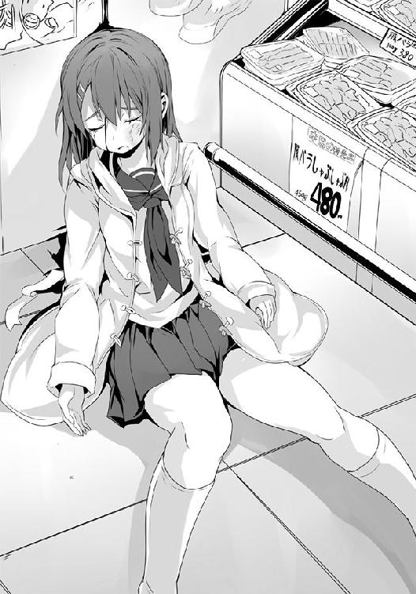
○
どこかでＳＳが起動していた。ヴォ〜〜ィ〜ンイーン〜！ というあの夢とＳＦ感溢れる起動音。そう、それは無限の可能性を感じさせるものだった。
それは当時の、ゲームカートリッジという箱を捨て、ＣＤ―ＲＯＭになったゲームメディアの変化がもたらした劇的な技術革新......それらのイメージもあるのだろうが、それ以上にあの無数の名作、そして迷作の数々がもたらしたイメージが強いのかもしれない。というのも当時はＣＤという安価なメディアに切り替わったことで、安くソフトを販売出来るようになったがために玉石混合の有様であったこと、さらにそれらの出来をチェックする体制がゆるゆるであったためにとんでもないソフトがポンポンと現れていたことに由来するのだろう。その顕著な例が、著莪が大好きな『デスクリムゾン』のようなバグだらけのソフトだったりするわけである。だが、敷居が下がったことで今までゲームを作っていなかった会社も多く参入したがため、それまでにはなかった斬新な発想がふんだんに注がれた隠れた名作というのも多かった。だからこそ、知らないゲーム、今は検索してもほとんど情報が出てこない会社のソフトがあったりすると、心が躍る。まさに宝箱を空ける感覚だ。
この薄い円盤の中にどんな物語があるのか、どんな奇想天外なプログラムが組まれているのか......ある種自由な創作活動を可能としたからこその面白さ。それがあの時代には溢れていた。
......そんな、親父からの言い伝えを聞いていた僕にとって、ヴォ〜〜ィ〜ンイーン〜！ の音は宝島を目指して出航する船の汽笛のようなものであり、男の子としては心躍らせざるを得ないものがあるわけだけれど......ふと、そういえば先日気まぐれにスマホの着信音をＳＳの起動音に変えたのを思い出し、僕はハッとして瞼を開いた。
暗い自室。とはいえ、デジタル時計やテレビの主電源が入っていることを知らせるＬＥＤ、さらにはＳＳの起動音を連呼してどんだけ僕を誘っているんだ、このスキモノな淫乱マシーンめ......と思わず考えてしまうスマホの発する明かりで、部屋の中は何となく見て取れる。
僕はベッドの上から頭を掻きながら起き上がり、スマホを手に取った。
モニターに表示されていた着信相手の名に、思わず固まる。白梅だ。
しかも今は０時を回っている。彼女が、こんな時間に......？
『佐藤君？ ......白梅です。今、よろしいですか？』
いつもとは違う、彼女の声質。普段のそれが研ぎ澄まされた日本刀、それも打ち刀だとすれば、今の彼女は野太刀のような重さを含んでいるように感じられた。
すでに寝ていたとはいえ、白梅の声にはっきりと覚醒した僕は、大丈夫だ、と応じる。
『その......出来れば直接会ってお話ししたいのですが、いかがですか？』
......ドクンッと、己の鼓動が大きく鳴った。
「わかったよ、白梅。どこに行けばいい？」
白梅は丁度彼女の家と僕の寮との中間ぐらいにある公園を指定した。
......なるほどな、あそこなら悪くない。
電話を切るなり、僕は颯爽とベッドから飛び降り戦闘態勢を整える。四〇秒で支度しな！ という有名なアニメのセリフがあり、それを見た子供たちは「それはあまりに短い」と感想を抱くのが大半らしいけれど、僕のような普段から常にそういう事態を想定し、言うなれば戦闘態勢を崩さず生きているプロにとって四〇秒などゆとりすら感じる猶予だ。
プロには三〇秒あれば十分だった。ベッドを飛び降りるのとほぼ同時にスウェットを脱ぎ捨て、パンツすらも鮮やかなストリップ・テクで部屋の中に舞い上げ、生まれたままの素顔の佐藤洋を自室に降臨させる。そのまま新しいパンツに履き替え、ジーンズにシャツにと洗い立てのものをチョイスして身に纏い、手の感覚だけで軽く整髪剤を頭に纏わせ尋常ならざる速度でセットを終える。この時点で二〇秒。あと一〇秒は......著莪の乱入及び室内捜索に対抗するために部屋の隅々の信じられないような所に隠してある僕の生活資金をかき集め、財布に装填。
......うむ、これだけあれば不測の事態を考慮しても十分だろう。
あとは......アレをどうするかだな。そう、男女の間にあるエチケット的な、その......アレだよ。安全を約束する、アレね。うん、やっぱりその......必要なんじゃないのかな。だって、ほら......深夜に女の子から呼び出しっていうのは、即ち『好きです→抱いて！』という流れに他ならないわけで、その時によくあるエロ作品みたいに手ぶらで行って、いきなりとなると......ほら、現実はいろいろ危ないしね。
......そういえば、矢部君が確か『こ、これを財布の中に入れておけばお金が貯まるっていうジンクスがあってさ』という、非モテな奴が財布の中にラバー的なアレを忍ばせているのを人に見られた時に必ず言う言葉をまんま口にしていたな。
「......奪い取ってから行くとするか」
人が購入し、そいつが普段から持ち歩いているアイテムだってのが若干嫌な感じがするが、背に腹は代えられない。
じゃ、矢部ルームへ夜襲に行こう。僕はそう決めて、ジャスト三〇秒で自室の扉に手を伸ばし......そして、異変に気が付いた。
第六感がこれを開けてはならないと告げている。開ければ、終わりだと。
僕はノブから手を離し、代わりに扉に耳を当てる。廊下から人の気配、そして声が聞こえた。
――なんだ、夜中に。騒々しい。――わからん、だが、内本と矢部が......。――どうした、内本君。――い、今部屋で寝ようと思っていたら、どこからか〝白梅〟という言葉が聞こえたんだ。そう、かの白梅様のお名前だよ！ ――矢部は？ ――今、かすかに......ほんのかすかになんだが、若い女の声がした。テレビとかじゃなく、携帯とかのスピーカーでの生な声が......この寮内からだ。――ほぅ？
奴らは化け物か!? いや内本君はまだいい、僕が〝白梅〟という単語を口にした。だが、矢部君の奴、部屋が隣でもないのに僕のスマホから漏れた白梅の声に反応したってのか!?
――白梅、若い女の声......か。――このおっぱい博士蔵田様が言うまでもないようだな、神田。――あぁ。内本君の変態は折り紙付き、矢部も先日の異端審問官以来、感覚の鋭敏化は凄まじいものがある。故に二人の発言は信用するに足り、それら二つを掛け合わせるに......おい、矢部、地下室への扉を開けておけ。――ウンババッ！ ――ふふん、最近は忙しいな、神田よ。――そうだな、蔵田。よし、他のメンバーにも動員をかけろ、佐藤を捕縛し、連行する。
「......この扉を開けたら終わりだな。やむを得ない」
時間に遅れるよりは、エチケット的に許されるはずだ。僕はそう自分を納得させると、矢部君に夜襲を仕掛けるのをやめ、室内に置いてあったボロいスニーカーを手に取り、窓を開けた。
――佐藤ルームのピッキングを開始......クリア。よし、総員装面！ 突入準備!!
神田君のかけ声に背を押されるようにして、僕は自室の窓から夜空の下へと躍り出た。そこは二階。だが、下は柔らかい草むらだ。基礎体力に加え、今マイスゥイートハニー白梅のもとへ馳せ参じんとする僕にとってはもはやその程度、さしたる問題はなかった。
僕が自由落下を始めたと同時に自室には紙袋を被った男たちが「ＧＯ！」のかけ声と共に怒濤の勢いで流れ込んできたが、全ては後の祭りである。
ゾンビ映画よろしくのエキサイティングな脱出劇を展開した僕は、そのまま寮の敷地を離れ、白梅との約束の場所へと向かったのだった。
二月も半ばを過ぎたとはいえ、春の気配はいまだ遠い深夜。さすがに吐息が白くなることはないものの、なかなかに冷える。僕は〝寒いね→ホテル行こう〟という素晴らしいコンボ技を考えつつ、約束された公園の中へと足を踏み入れた。
いっそ間を省いて〝寒いね→子供の名前はイサオにしないか？ そう、元セガ社長の大川功氏から名前をいただいてさ〟まで言ってもいいかもな、とか考えていると公園の外灯の下にコートを羽織った白梅の姿を見つけた。僕はキリッとしつつも、出来るだけ爽やかな笑みを浮かべて近づく。そして、声をかけようと思った時......思わず息を呑んだ。
白梅の憂いを含む表情。赤く腫れた目。それは大人っぽい彼女に婀娜っぽさを否応なしに纏わせる。そして今の彼女はすっぴんなのはもちろん、いまだ乾いておらず、夜風に当たって冷たく重くなっている長く艶やかな髪という有様で......明らかな風呂上がりというやつだ。
コイツ、抱かれる準備万端じゃないかッ！
......最近いろいろとあったけれど、アレだな。世の中はうまくバランスが取れているのだな。
辛いことの後には幸せがあるんだ。だからこそ、人はどんなに辛い時だって明日への希望を忘れてはいけないんだ。生きよう。......たとえ、このあと寮に戻れば地下室へ連れていかれるのは確実だとしても、その分の幸せを今宵、僕は......。
言葉を交わすより先に押し倒してしまいかねない衝動を覚えながらも、僕は冷静に白梅に「やぁ」と微笑んで声を掛けた。
「何を......笑っているんです？」
いつものようなキレがありつつ、人を見下すような目ではなく、小さな子が説教する大人に強がって反抗するような、上目遣いで白梅は僕を見てくる。その違いに僕は思わずたじろいだ。
「白粉さんが......倒れました」
「......え？ あ、うん。執筆に気合い入れすぎたとか？」
今のところ怒られる要素がないことに安心し、ヘラヘラと笑って言ってみたのだけれど......。
「酷く衰弱し、高熱を出していて、槍水さんから連絡を受けたわたしが付き添って病院に急患として運びました。......それで、先ほどご両親が到着なされたので、おいとましまして」
笑みが固まったのが、自分でわかる。白梅の言葉に全てがあるような気はしているのに、そこから状況が何もわからなかった。何故衰弱し、何故高熱を出し、何故槍水先輩が......？
「今夜、白粉さんはスーパーで戦っていたそうです。......魔導士を倒すために」
「ちょっ、え？ そんなバカな。アイツに魔導士を倒せるわけが......たまたまスーパーでぶつかった、とかじゃなくて？」
「......槍水さんに言ったそうです。魔導士は自分が倒す、と。そして、そうすればまた佐藤君と共に、三人で夕食を囲める、と」
僕は反射的にスマホの入っているポケットに手を当てた。そういえば白粉からおかしなメールが届いていたのを今になって思い出したのだ。単にまたおかしな作品を書いていて、その関連の何かだとばかり......。だが白梅の言葉を合わせて考えるに何かが繋がっていくのを感じる。
「白粉さんはほとんど意識もないのに、ずっと謝っていました。槍水さんと、あなたに。そして自分はやっぱりダメなんだと、ずっと、悔しそうに......」
白梅がそっと一歩、僕に近づく。僕は言いようのない圧迫感を覚え、一歩、下がった。
「ＨＰ同好会が今どうなっているのか、白粉さんから以前から聞いていましたし、槍水さんにも先ほど問いただしました。......佐藤君、あなた、何やっているんです？ 何ヘラヘラ笑っているんです？ どうして、何もしていないんです？」
白梅がまた一歩近づく。彼女は白粉をボロボロにされたことで、僕を責めているのだろう。それはわかっているはずなのに......彼女の言葉はそれ以上に僕の心をナイフで抉るようだった。
何もせず、ただあの部室から逃げただけの僕を責め立てている......そう感じた。
「以前も言いましたが、わたしは狼でもなければ半額弁当などというものに何ら価値は見出せません。だから、わからない。門外漢です。......でも、こんなことになった以上は何もしないではいられない。......でも、出来ない」
白梅の目尻から涙が零れたのを見た瞬間、後ろに下がりかけていた足が止まる。
これ以上下がるのは、ダメだと、僕の心の中で誰かが言った気がした。
「白粉さんは今もきっと槍水さんやあなたに謝っています。そして自分の非力を嘆いています。......わたしは初めて会った時から、そんな捨てられている子猫のような彼女を守りたかった。今もそうです。何でもしてあげようと思いました。......でも、出来ない。わたしには何も」
責めるような、白梅の潤む瞳。それは僕に向けられているのか、それとも......彼女自身にか。
「わたしは、白粉さんが好きです。大好きです。......わかりますか、この悔しさが。大好きな人の苦しみを、どうすることも出来ない。何もしてあげられない。そして......わたしはまた、佐藤君に頼ろうとしている。白粉さんの望みを、そして彼女をこうした原因をわたしではどうすることも出来ないんですよ」
「白梅、それって......うっ」
白梅が僕の胸ぐらを掴む。それも両手で。お仕置きが来るかと思い、僕は全身を硬直させるも......攻撃は、来なかった。平手も拳も、蹴りも、ない。
ただ胸ぐらを掴まれたまま、彼女が俯いただけ。そして涙声で、呻くように、言葉を続ける。
「白粉さんが望んでいるのは、きっとＨＰ同好会の、部室での時間なんです。あなたや、槍水さんとの時間です。わたしにはそれをあげられない。金城優という人間を刺し殺したとしても、きっとそれは......何の解決にもならない」
刺し殺すとか、微妙に生々しいな......。
「だから、今一度......わたしは佐藤君にお願いします。......わたしを、助けてください」
白梅が僕の胸ぐらを掴んだまま、顔を上げる。涙を流しつつ、真っ直ぐに僕を間近で見つめ、屈辱も何もかもを内側に押しとどめて。
「助けるといっても......どうすれば......。僕は、もう......」
作り笑いでＨＰ同好会に戻ったところで、きっと上っ面の気持ち悪い時間になるだけだろう。それこそ誰も救えないはずだ。それを白梅に告げても、彼女は間近で僕を見つめたままだった。
「魔導士を、倒してください。佐藤君の手で」
「......倒す？ 僕が......」
「白粉さんが槍水さんと〝何か〟を約束したのだと聞いています。槍水さんが背負わされた重荷を消すことが出来たら果たされる約束だそうです。だから、白粉さんは戦いに行った。それがなんであるのかは槍水さんに幾ら問いただしても答えてくれませんでした。......でも、それを為せばＨＰ同好会はきっと元に戻るのだと、白粉さんは確信していたようです」
「槍水先輩の重荷って......魔導士を倒すってことか。それで、確かに、槍水先輩は救える。そういうこと......？」
「わたしには、わかりません。でも、それが白粉さんの望んだことであり、そして白粉さんを叩きのめした相手を、己が最強だとする舞台で負かすことには意味があります。それに......佐藤君はフラれたのだとしても、槍水さんが好きなんですよね？」
僕は、白梅から視線を逸らして、躊躇いがちに頷いた。
「ならば、間違いなく意味はあるはずです。ＨＰ同好会が元に戻るかどうかはわかりません。ですが......あなたが好きな人の苦痛を取り除くことにはなるはずです」
白梅は僕の胸ぐらから手を放し、両手で僕の両頬を包むように掴む。そして僕の顔を自分の顔と相対させた。そこにある彼女の瞳には苦しさや悔しさだけではない、覚悟の色。
「全員が幸せになる方法なんてきっとないんです。......ですが、自分が愛した人を笑顔にさせることだけならば......出来るはずです。わたしたちでも」
白梅の言葉に僕は、息を呑んだ。
自分が幸せにならなくとも、いい。自分が好きな人を笑顔に出来るのならば......悔しさを覚えるほどの彼女のその覚悟。
こんなふうに人を好きになれたら......。そんな、憧れそうになる彼女の気持ち。
......僕に、出来るだろうか。
「魔導士を倒してください。あなたがそれを為すためなら、わたしはどんな協力でもします」
「......最強を打倒する、か。僕はすでに負けているし、あの槍水先輩ですら勝てなかった相手。普通には無理だ」
ですが！ と、声を荒らげる白梅の手を僕は払い、一度深呼吸した。
「......でも、立ち向かうことを忘れたらセガファンじゃないよな......」
どんなに無謀なことであっても挑戦することの価値、その素晴らしさを、僕らはあの会社から教えられた。そして不可能は可能に出来るのだ、とも。
それなのに......僕は逃げ続けていた。だからだろうか、あの夜以来、ずっとモヤモヤしていたのは、そのせいか。きちんと槍水先輩に好きだとも伝えられず、きちんとフラれもせず、ただ逃げていたから......。
そこに何があるわけでもないのに、時間が全てを有耶無耶にするのをどこかで期待していたのかもしれない。
不意に僕の脳裏に部室で項垂れて、元気のない最近の槍水先輩の姿が思い浮かぶ。
そして、それ以前の......いつも一緒にあった彼女の笑顔もまた。
あれを取り戻せるのならば......たとえ、その横に僕がいなくとも......。
ダメな男の自己満足かも知れない。多分そうだろう。きっと、そうなんだ。でも、それでもいいじゃないか。真希乃に言われたように、僕は、男の子だから。
だから、好きな女の子のために一生懸命になって、何が悪い。
そうだ、僕は昔、彼女に向かってはっきりと言ったのだ。
――もし先輩が目の前で泣いていたのなら......脇をくすぐってでも笑わせてみせますよ。
今が、その時なのだろうか。いや、遅すぎたぐらいか。
あの公園で彼女の涙を見た時に、すぐに何かしらの行動を取るべきだったんだ。
今の白梅のように、悔しかろうが何だろうが、相手のためを思って行動するべきだったんだ。それがきっと――。
僕はいつの間にか閉じていた瞼を開き、今一度白梅の見とれるような瞳を見つめる。
彼女の瞳にあるのは固く、鋭利で、そして全てを捨てでも目的を達しようとする鉄の意志。
そこに映る自分の顔を見つめ、そして、それに向かって僕は頷いた。
「今からでも、間に合わせてみるか。......うん。白梅、決めたよ」
もう、おふざけの時間は終わりにしよう。全力で走る時間が来たんだ。
誰も行ったことのない最強のその先へ向かって。セガがゲーム業界の未来を切り開き続けたように、道無き道をひたすらに駆ける。そんな時間が、やってきたのだ。
僕は空を見上げた。月が、出ていた。
「魔導士は、僕が倒す」
２章 友と呼べる敵
「......さぁ、行きましょう、スーパーへ！」
オルトロス
......瞼を閉じればあの人気のない公園で、白梅と二人で見上げた月を思い出す。最強を越える、そして不可能を可能にすると宣言した、あの夜を。
「......何故かな。普通、覚悟を決めたら特に理由もないけれど急に強くなったりするのがセオリーのはずなんだけどな......」
いやぁ、何というか、負ける負ける。もう最後に（笑）が付いちゃうレベルで連戦連敗ですよ、奥さん......。シーリーコートはおろか、ジョニーにまでマジでぶっ飛ばされた時は若干挑戦を決意した直後なのに引退を考えるレベルだったもの......。
「佐藤君、それはどういうことです？ 話が違いませんか？ アレだけの啖呵を切ったのに、その体たらく......怒りますよ？」
昼休みの教室で、ここ二日間の戦況を白梅に報告したところ第一声がコレだもの。いつの間にか〝協力〟が〝強要〟に変わっているんだもの。そりゃ黄金の夢を持つジョルノ・ジョバァーナでさえも気が付くと〝質問〟が〝拷問〟に変わっていたとわかったら脂汗流すわ。
この辺、詳しくは『ジョジョの奇妙な冒険』の第五部の冒頭を読んでいただきたい。
「いや、別に負けようと思って負けているわけじゃないし......ちょっとブランクがあったとはいえ......。何か、勝てないんだよなぁ」
僕は白梅の非難と侮蔑の色が浮かぶ瞳を見ていられなくて、視線を逸らす。するとこちらを見ていたらしいクラスメイトと目が合うものの、そいつらはサッと慌てて顔を背けやがった。
別に僕と白梅が喋っているのが珍しいわけじゃないだろうけれど、今までと違って僕が椅子を後ろへ、つまり白梅の方に向けて座っている、ってのが大きいのだろう。男女が一つの机を挟んで向かい合って座り、同じ机で昼食を食べている――まぁ僕のはソイジョイ（ピーナッツ味）だけど――だなんて、ホラ、アレだよ、もう完全にカップルなわけだよ。何より白梅には佐藤の嫁説が真しやかに囁かれている昨今だから、もう完全にそうにしか見えないはずだ。
白粉が学校に来ていないため、こうなったわけだけれど......こういう時の周りの視線ってのは悪くない。誰から見ても高嶺の花である白梅を彼女にしたようで、ちょっと優越感がある。
「もうすぐ三月ですよ、そうなれば三年生は卒業......魔導士は卒業次第すぐに国外の大学に行くという話は聞いています。そうなれば、もう、白粉さんの願いを叶えられなくなるんです。わかっていますよね？ ふざけているんですか？ それとも今までのわたしへの仕返しのつもりでわざと手を抜いているんですか？」
......いや、そういうわけじゃないんだけどなぁ。
「どうにかしてください。体調を整え、敵を倒す策や手段を見出してください。わたしも今、半額弁当争奪戦及び魔導士、そしてＨＰ部について調べていますから。......いいですね？」
僕は頷くのだけれど......でも、どうしたもんかなぁ。こういう不調の時は槍水先輩を頼りにしていたけれど......さすがに、今は無理だ。それ以外となると魔導士か......でも、それこそ無理というかバカだ。後は《ガンコナー》こと師匠・山乃守喨とか、サラリーマンのレッドとか、《大厄の闘牛士》こと秋鹿雅とか......うーん、何かあんまり連絡取りたくないっていうか、後者二人になると連絡先知らないしなぁ。でも、言っている場合じゃないか。
僕はスマホを取り出し、白梅の視線を受けつつ師匠をコール。
だが、出てきたのは女の声。その耳に滑り込んでくる声を僕は知っていた。烏頭だ。
「......何で出てるんですか？」
『ん？ おかしくないよ。......アイツ......うちのメイドカフェの......店員に、手......出そうとしたから......。だから、休職させて......マグロ漁船......放り込んだの。携帯持たせておくと......漁船からでも何かしそうだから......預かってる。自分の番号なら......覚えてるでしょ？ だから、私にしか電話出来ないように、したの......』
......いろいろ怖ぇよ......。烏頭の話によると赤道直下辺りで働いているそうで、もうそろそろ日本に戻ってくるらしいが、実際いつになるかははっきりしないそうだ。
『どうしたの、洋。......アイツに、何か......用？』
僕はため息と共に、藁にも縋る気持ちで自分が今不調で悩んでいると告げた。すると向こうは『復帰したんだ。......早かったね』と、まるで全てを知っていたかのようなことを言いだし、僕の度肝を抜いた。
『毛玉......うちの常連だから』
......何やってんだあのアフロ。あ、でも師匠と仲良さそうだったし、その関係かな。
『不調の理由？ 知らない。洋に優しくして、私に......利点ある？ 仙に......訊いたら？』
そう言って烏頭はクスクスと小さく笑うのだけれど......この人、絶対全部知っていて、その上で言っているな......。相変わらず嫌みな人だ。
『花と同じように......優君を倒そうとしているの？ それで、仙の重荷を代わりに背負うんでしょう......？ 言っておくけど......無理、だよ。優君......強いから。......誰よりも』
「......でも戦ってみて、手が届かない相手じゃないって気はしたんだ。秋鹿と同じぐらいだ。なのに......攻撃を喰らった瞬間、明らかに何かがおかしかった。あの人には何かがある」
また電話の向こうで小さく笑う声。癪に障る、声。だが、彼女が何かヒントをくれるような気がして、僕は電話を切らずにおとなしく聞いていた。向こうもこちらが耐えているのを察したのか、しばらくすると、やれやれ、という様子で言葉を与えてくれる。
『喨が言っていたけど......優君には何もない。......だから、強い』
「あの攻撃に小細工はないっていうのか？ あんなに――」
烏頭は僕の言葉を無視して喋り続ける。
『......我慢した洋にプレゼント。......優君自身の言葉。自分を倒せる可能性があるのは、サラマンダーを除けばカート使いかカゴ使いぐらいだって......。はい、おしまい。それじゃね』
そうして電話は一方的に切れた。喋り過ぎたと烏頭自身思ったのか、最後はやや早口で、あっさりだった。......あの人、嫌みなとこむっちゃあるけど、案外に優しかったりするのかな......？ あっ......そもそも師匠と付き合っている時点で、大らかな心がないと無理ってもんか。
それにしても、彼女からのプレゼント、恐らく嘘じゃないのだろうけれど......どういう意味だろう。勝てるのがカート使い、カゴ使いぐらいというのは......？
つまりは武具使いということなんだろう。それって間合いを広げる意味か、それとも彼我の間にワンクッション挟むためか。烏頭の平手対策とかなら大きな利点がありそうな気がするのだけれど魔導士もその類の何かを持っている、ということなのか。
けれど、彼の攻撃は確かに何かがおかしかったものの、特殊な効果があるようなものではなかったはずだ。
「カゴ使いとカート使い......。カートって、《大猪》の他には《パッドフット》がいたか」
そう呟いた時......何かが、僕の頭に引っかかった。都会の人混みの中を歩いていたら地元の知り合いによく似た奴とすれ違ったような、そんな気分。もしくは、全然関係ない二人が、別の場所で同じセリフを口にしたかのような......あり得ないというところで何かが顔を出し、何かと何かが繋がりつつあるような、そんな感じ。
いくら考えてみても結局その正体はわからず、僕は白旗を上げるように大きくため息をして、椅子の背もたれに体重を預けた。
「良い考えは浮かびませんか？」
対面に座っていた白梅は僕が電話している時はもちろん、電話を切ってから一人考えている間も、彼女は言葉や鋭い視線を向けてくることはなく、黙々とお弁当を食べていたようだ。実際今も瞼を閉じて口元をハンカチで拭いているだけで、先程までの脅迫めいた雰囲気がない。
......ほほぅ、まるで仕事の邪魔をしないように気遣う、一歩下がった良妻のようではないか。
「いや、ダメだな。ヒントは貰えたみたいだけど、答えはさすがに......。別の線からアプローチしてみようと思う。もしかしたら、それで何かが見えるかも」
さして良い頭ではない僕一人では対魔導士戦のプランを見つけるには無理がある。
だが、代わりに素晴らしい考えは浮かんでいた。
カート使いの知り合いはいないが、カゴ使いなら......頼りになる友が、仲間がいる。
オルトロスだ。ベテランにして名うての狼の彼女らなら、僕に何かを与えてくれる気がするし、何より今の不調の原因を教えてくれるんじゃないだろうか。
僕は自信を持ってそう告げると、白梅がようやく優しげな目をしてくれた。
「それは良かったです。......では、ご褒美です」
そう言って白梅は自分の弁当箱に残っていたプチトマトのヘタをつまんで、僕の前に差し出してくれる。僕は手で受け取ろうと一瞬考えるものの......手渡しするにしては、白梅の差し出したプチトマトは僕の顔に近かった。......えーっと......これって、い、いいのかな？
僕は恐る恐る、白梅様の手から直接プチトマトをいただく覚悟を決める。
口を開け、首を伸ばす。すると白梅の手もそっと僕の口にトマトを入れてくれた。そして、前歯と唇でトマトを保持するように閉じると白梅はそっと引っ張る。
......プチッと音を立ててヘタが取れる瞬間、白梅の細くて長い、弁当とかも自分で作っているらしいのに、荒れた様子がこれっぽっちもない指先にかすかに唇が触れた。
指先に、ほんのちょっと。それなのに......な、何故だろう、スゲー動揺する。
興奮といえばそうなのだろうけれど、何か、違う。何かが違う。照れというか、恥ずかしさというか、何だか心を擽られたような......。それは手で直接食べさせて貰ったからなのか、それとも唇が指先に触れてしまったからなのか、それとも......相手が白梅だからなのか。
あ、ありがとう。と僕は恥ずかしいほどに上ずった声で言うも、口にプチトマトが入っているせいだからだと、嘘をついた。......自分の心の中だけで。
「佐藤君、争奪戦に備えてお昼ご飯はそのソイジョイというのでもいいと思いますが......少々ビタミンが足りないと思いますよ」
完全食品だと思われていたソイジョイである、そんなバカな!? と思わず声が出た。
だけれどよくよく考えてみれば同じ大塚食品さんから出ている〝栄養調整食品〟のカロリーメイトはともかく、ソイジョイは何気にジャンルが〝菓子〟だったりするため、栄養豊富かつ低ＧＩ、たくさんの食物繊維、腹持ちの良さ等々の優れた要素を持ちつつも完全食品というわけではないのだろう。特に今現在僕が食べているピーナッツ味ともなれば、通常ドライフルーツが使われる他の味と比べると、なるほど、確かにビタミン類が少ないのがうかがえる。
......ピーナッツはピーナッツで栄養は豊富だろうし、美味しいんだけどね。穀物が持つ自然な甘みや旨味がギュッと一つになったようなこのソイジョイは僕が今一番好きな味だった。
「カロリーを押さえるのはいいですが、ビタミン類は摂っておいた方がいいですよ。一緒に野菜ジュースやフルーツを入れたヨーグルトなどを食べるといいと思います」
「......うん、今度から意識してみる」
僕の唇が触れたことを特に気にする様子もなく、白梅は当たり前のように弁当容器を片付けながら言った。僕はまるで小さな子供になったように......ん？
――ほぅ、よっぽど奴は地下がお好みらしい。――今宵も異端審問カーニバルというわけか。――盛り上がってきたな。帰りにプチトマト、大量に買っておこうぜ。
「ぐぉおん！ まただ、またマイブラザー佐藤のせいで、席を立てない!! 昼休みが終わる前にトイレに行こうと思ったのに、こ、これじゃぁあぁ!!」
廊下からの囁き声はもちろん、すぐ近くの席で内本君が机を抱きかかえるようにして喚いているのを聞き、僕はうんざりした気分で残りのソイジョイを口に放り込んだ。
「あれ、佐藤じゃん？ 何してんの、今日って何か一緒に遊ぶ約束してたっけ」
そんな声と共に現れたのは、従姉の著莪あやめ。彼女は僕のと色違いの赤いスカジャンを丸富の制服の上に羽織り、その豊かな金髪と勉強道具を入れたリュックサックを揺らしながら歩いてくる。その足を止める者は、さすがにいない。ただ、一人苦しげに呻く男はいたけれど。
「くっ......お、おのれぇぃヒロシめぇ......」
当然のように丸富大学附属高校のスプリガンこと警備員のツルッパゲのオッちゃんである。
両手を拳に固め、前屈みになって全身の筋肉を膨張させ警備員の制服をピチピチに張らせている彼は、怒りの力でスーパーサイヤ人になることはないだろうが、界王拳四倍ぐらいなら発動しかねないオーラを纏いつつも何も出来ずにいた。それもそのはずで、実は僕、丸富の校門の前にいるのだ。そう、僕が学校の敷地から二メートルほどの所で立っている以上、彼は何も出来ない。短い鎖に繋がれた番犬のようなものである。
......あ、今気付いたけれどオッちゃんは界王拳よりダメージを受けて怒りに震えるドラゴンボールのナッパの方が近いかもしれない。ツルッパゲ的な意味で。
そんな彼に対し、僕は得意げに微笑みつつ胸元を広げるという、『ギャング・スター』に憧れるジョルノ・ジョバァーナの代表的なジョジョ立ちをかれこれ五〇分ほど続けているわけなのだけれど、著莪も来たことなので、一度やめようかな。僕らが校門の所で睨み合いを続けているから例によって一般生徒がわざわざ他の場所から帰っているのも、何か悪いし。
彼女は丁度校門、敷地の内外の境界線に立つと僕とオッちゃんを交互に見やった。
「なに、ナッパとジョルノ？ 佐藤、作品は合わせた方がいいんじゃね？」
著莪に尤もなことを言われ、少し反省するも、彼女は僕の後ろに立ってジョルノのスタンド、ゴールド・エクスペリエンスのジョジョ立ちをして合わせてくれるので、そのまま数分続行。
みんなもジョジョ立ちをしている人を見かけたら、そのポーズに合わせたジョジョ立ちで応えてあげよう。お互いに幸せな気分になることは請け合いだ。
一頻りジョジョ立ちの〝合わせ〟をした後、ポージングを元気玉のそれに変えてみる。
ただ、ジョジョ立ちの特徴的かつエレガントなそれと違って、ドラゴンボールのそれはコスチュームか、光の玉的な何かがないとちょっと伝わらないんだよなぁ。あ、待てよ、今丁度夕日が......そうだ、見ようによっては太陽が元気玉に見えるかも！
「んで、佐藤は今日どうしたの？」
「実は沢桔姉妹の方にちょっと用事があってさ」
「妹の方はもう彼氏出来ちゃったんだし......じゃあ狙いは姉の方？」
僕も狼として復帰して驚いたのだけれど、狼たちの間で鏡と二階堂とが付き合っていると噂になっていた。何でも姉の梗が行く先々で自分のことのようにベラベラと喋っているそうなのだけれど......通常誰それが付き合っているなどという下世話な話はスーパーで話題になることはほとんどない。が、彼らの場合はさすがに別だった。付き合い始めたことが、ではなく、付き合っているはずなのにスーパーでは共闘もせずにガチで殴り合いをしていることが、だ。
男女の関係としてはどうかと思うものの、恋仲でもスーパーというフィールドにおいては一匹の獣たらんとするその姿はまさに狼として理想的であり、また本来在るべき姿に他ならない......として、誰もが賞賛していたのを、僕は何とも微妙な気持ちで聞いていた。
......だって、沢桔姉妹からバレンタインデーにチョコもらってんだもん、僕......。
愛犬を失った悲しみは新しい犬でしか埋められないというが、今の傷心なうな僕を癒すのはやはり沢桔姉妹を豪華絢爛にワンセットで大人の階段を――。
「はいはいそこで下卑た顔で姉妹をワンセットで美味しく以下略とか考えないの」
「しいししてなないぁよんそおそんなんいやらしいことととなんて!!」
「慌てすぎだっつぅの。何年一緒にいると思ってんだよ、わかるって。あと、せめてそういう時は三部のラストでＤＩＯ様が時を止められた時の『なっなにイイ〜〜ッ！』か念写された時の『きさま！ 見ているなッ！』とかで誤魔化せよな」
著莪は鼻で笑うと、元気玉スタイルで僕の無防備な鳩尾に軽く拳を打ち込んだ。
「なんやてぇ......ということは、やはりヒロシはワイの夢の一つと同じものを抱いておったんか......そうはさせへんでぇ......豪華絢爛な大人の階段を昇るんはワイ一人で十分なんや......ヒロシの介入する余地なんかは絶対にないんや、ワイ一人で二人と共に天国へ......」
うーん、著莪よりもオッちゃんの方が的確に僕の心情を代弁してるな......とか、思っていたものの......気のせいか、今のオッちゃんの言葉には何か気が付いてはいけない情報がひっそりあったような気がしたのは、僕だけだろうか......？
......そう、気付いてはいけない、気付いたところで誰も幸せにならない......そんな四十手前と思しき見事なボディをしたオッちゃんの深淵なる秘密に関する何かの気がしたけれど......僕は、あえて考えないようにした。
そう、十代という青少年の僕と、人生経験豊かであるはずのオッちゃんとが同じ夢を抱いていたりしたこととか、絶対に考えないようにしよう。うん、ダメ、絶対。たとえ憎むべき敵であろうとも、一人の男として触れてはいけないと僕の中で何かが囁いている。
「っつぅかなんや......鏡ちゃんに手を出しおったバカがおるんか......きっと無理やり弱味を握られて......ワイが助けたるさかい、相手を特定して川に沈めて......傷つけられた鏡ちゃんをお姉さんと二人で身も心も慰めたるんや......まずはこのヒロシを追い払ってから......」
......うん、二階堂の奴、死んだな。あいつが死んだら僕が警察に匿名の情報提供を行い、オッちゃんが逮捕された後で鏡を......ムッ、著莪がまた呆れたような目でこちらを見ている!?
僕はまた心が読まれているような気がして、慌てて取り繕った。
「え〜っと、その......いや、違うんだよ。別に手を出そうとか狙っているとかじゃなくて、単にカゴ使いのベテランとして相談したいことがあってさ。......魔導士と戦うためにさ」
呆れた目をしていた著莪は、一瞬驚いた顔をするものの、すぐさまそれを打ち消し、顎を引き、まるで睨むような目で僕を見てきた。
「......あぁ、佐藤が魔導士と再戦する気らしいって話は噂で聞いたけど......マジだったんだ。それって......仙が――」
著莪が言葉を続けようとしたものの、「ガサッ」という何かが落ちる音が不意に聞こえ、彼女は言葉を切って音の方を見やった。僕もまたそれに倣えば、オッちゃんの後方に......愕然として目を見開いている沢桔梗。そしてその足下には手放された鞄が転がっていた。
オッちゃんも僕らも、何だ？ とか思って彼女を見やっていると、校舎の方から二階堂に手を出された哀れな被害者――鏡が「姉さん！」と声を上げつつ走ってくる。
彼女は姉に追いつくと正面に回り、鞄を拾い上げて汚れを払い、いまだ目を見開く姉の肩からずれ落ちかかっているお揃いの、ベージュ色のカーディガンを母親のように直してあげた。
すると、梗はガシッと妹の両肩を掴み、わなわなと震える唇を開く。
「ね、ねぇ、鏡......わ、わたくし、弄ばれてしまいましたわ......佐藤さんにわたくしの清純な、乙女の心を弄ばれてしまいましたわ！ せめて最後までわたくしを騙してくださればいいものを......この青い果実を思わせる体に指一本触れることもなく心だけを弄ぶだなんて！」
「姉さん、清純な乙女はそういう下品なこと言いませんよ。というか、何でそういうふうに考えてしまったんですか」
「だって......佐藤さんからのメールが......」
「文面のままに受け取るべきですとお昼に言ったじゃないですか。どうして単なる待ち合わせを恋文と間違えるんです？ 行間読みすぎですよ」
確か僕が書いて彼女に送ったのには、争奪戦でのカゴについて話がしたい、会いたい......みたいなことを書いただけだったはずだけれど......？
「そんな......だって、〝会いたい〟とあったんですのよ？ 〝会いたい〟即ち〝愛鯛〟の淫語、いえ、隠語！ つまり佐藤さんからのメールには〝愛してる、お前はまな板の上の鯛だ、オレが美味しくいただいてやるぜ......クックックッ〟という秘密の暗号、即ち『サトウ・コード』に他なりませんわ!!」
......姉さん、と鏡は無念さを滲ませた目で空を見あげた。
「行間読みすぎというか、もはや創造の域に達しているじゃないですか。何ですか、最後の悪役っぽい笑いは」
「そんな失敬な！ まるでわたくしが妄想垂れ流しのイタい人みたいな言い方はやめてほしいですわ！ わたくしだって最初は〝愛体〟で〝愛してる、お前の体を〟か〝愛している、どんな体位が好みだい？〟という二つの可能性を考慮したものの、佐藤さん独自のユーモアが足りないとして〝愛鯛〟に辿り着いたんですのよ!? 創造、妄想、その類ではないいんですの！」
「......諺では、まな板の上にいるのは鯛ではなく、鯉です......姉さん。そもそも何でそういう方向に物事を考えてしまうんですか」
「だ、だって......同じ遺伝子を持つ妹に二階堂さんという素敵な殿方が......そうなればわたくしにもそれ相応の展開が待ち受けているのが妥当では......？」
「ないですよ、そんな展開」
「ひ、酷いですわ鏡！ 恋仲の殿方もいない処女臭垂れ流しの姉を見下すような......そんな、あなたはいつからそんなふうになってしまったんですの!?」
「姉さん、ここ、学校ですよ。やめてください。......それに、私と二階堂さんは......まだ、その......きちんとしたお返事は......。姉さんが所構わず言いふらすから、余計に......」
いつも疲れたような顔をしている鏡が、この時ばかりはほんのりと頬に朱の色を昇らせ、視線を地面に落とした。
沢桔姉妹があーだこーだやっている間に、僕はスマホを取り出してみる。梗からの返信には『わかりました。お受けさせていただきます。本日の放課後、肛門にてお待ちください』とあって......おいおいジョニー、どうするよ、いきなりこんなマニアックな、最初はロマンチックに行くのがサトウ・スタイルなんだが、いきなりこんな大人の階段も嫌いじゃないぜ？ ......とか思いつつ午後の授業の間ニヤニヤしていたのだけれど......梗はその上を行きやがったか。
僕は微妙な敗北感を覚えながら、アレだな、アクセル踏む人間同士って案外噛み合わないものなのかもしれないな、とか思いつつ、「鏡も佐藤さんも酷いですわー！」と妹の肩を前後に激しく揺らしている梗を見やった。
「でさ、佐藤。魔導士戦に備えるのに、何でオルトロスなわけ？」
「うん。烏頭みことからヒントを貰ったんだ。魔導士を倒せる可能性があるのは、カゴ使いをはじめとした武具を扱う狼だって」
著莪はポリポリと頭を指先で掻くと、ふーん、と何かを考えるような様子だった。
「そうなんだ？ アタシもこの間戦ったけどさ、別にカゴ使い云々関係ない気がしたけどなぁ。確かに強かったよ......でも、あと何回か戦えば一回ぐらい勝てそうな気がしたけど」
僕は驚いて沢桔姉妹から著莪に目をやる。彼女は特に何か意図があるわけでもなく、当たり前のようにとんでもないことを口にしていた。
僕は信じられず、魔導士の何かおかしな攻撃があっただろ、と尋ねるのだが......。
「あったかなぁ？ 当たり前に受けて、殴ってって感じだったけど。だってアタシ普通に受けて、その後、カウンターで何発かアイツの顔面に叩き込んでるよ？」
どういうことだ？ 著莪が見栄を張っているだけってわけじゃなさそうだけど......。
だが、そんな僕の混乱する思考を断ち切ったのは......タタタタタタという軽やかな足音と、ドゥルンドルゥンドルルルルルル！ というエンジン音だった。
見やれば......いつの間にか姿を消していた警備員のオッちゃんが校庭の隅にある詰め所から出てくるところであり、その手にはチェーンソーが......。
「ワイの梗ちゃんを傷つけた佐藤は許さ......いや、ワイも大人や。大人の対処の仕方をせんとなぁ。......さぁて日課の雑草刈りでもしようかのぅ！ このパワフルな特製芝刈り機で......もちろん校庭内だけやが、たまに手が滑って敷地外に飛んでいく事故があるやも知れんのぉ!!」
悪役よろしくのセリフを僕に聞こえるぐらいの声量で放つオッちゃん......だが、真に恐るべきは彼ではなく、タタタタタという小さく、軽やかな足音の方だと、僕の本能はすぐに悟った。
「あ〜、やっぱり洋くんだぁ〜！ 来てたんだねぇ〜！」
縞模様のニーソと同柄のマフラー、それに純白のふわふわとしたポンチョに猫耳帽子を身につけた小柄な女の子が、僕らを目指して走ってきているのだ。
チェーンソーを持ったオッちゃんと喚き続ける沢桔梗とうんざり顔の妹、そこに介入する最高のスパイスこと井ノ上あせびちゃん。果たしてこれからどういう展開が待ち受けるのか――。
「ひょっとしてこれからどこかに遊びに行くのぉ〜？ だったらあっちも......あっ！」
――今更、語るまでもない。
●
自宅ガレージで金城優は愛車のメンテナンスの仕上げとして、車体全体を磨いていた。
知り合いのツテを頼り、通常のそれよりも騒音が少ないようカスタムを施したそれは彼にとって数少ないお気に入りの物。しかし、もう幾ばくもなく人手に渡る予定になっていた。
もったいないとは思うが、仕方なかった。日本を離れる以上、愛車をガレージに眠らせていても仕方ない。何より今彼が住んでいる家自体売り払うのだ。日本に自宅を持たないのにバイクだけ所有しておくというのもおかしな話である。両親はアメリカ、彼はヨーロッパに行くとなると、家族でまた一緒に暮らすにしてもわざわざ日本ということもないだろう。
「そうか、佐藤がまた......動き出したか」
金城は愛車を磨き終えると、真新しいタオルを取って両手を拭った。
「調子はあんまり良くねぇみたいだけどな。一晩で複数店舗回り、さらには朝方近くに半値印証時刻になる二四時間スーパーにまで足を伸ばしていたみたいだが、そこも全敗っつぅ有様らしい。......ＨＰ同好会のあのちっこいのをお前が痛め付けたせいだったりな」
「幽霊は自分の限界を超えた力までをも見事に引き出し、俺に立ち向かってきた。それ相応に相手をしなければ負けていたさ。......こちらもボロボロになったしな。お互い様の、良い勝負をしただけだ。......あの後に喰った弁当は久々に感動を催すほど、うまかった」
ガレージの天井に取り付けられている黄色い電球の明かりは、床に金城とバイクの歪んだシルエットを描いていたが、さらにもう一つ影を生んでいた。ひょろりと細長いものの、その先端だけ膨らんでいるまるで梵天のような、それ。毛玉だった。
「ふーん。......いやなに、丸富の校門の前でオルトロスや金髪の従姉と大騒ぎしていたらしいんだが......ひょっとして、と思ってよ」
金城は陰からその毛玉に視線を移す。コートに、アフロ、そして銀面のサングラスと共に顔に張り付く薄っぺらい笑み。
「どういう意味だ？」
「お前を倒せるのは武具使いだけ、とか以前ＨＰ部の誰かが言っていたような気がしてな。ひょっとしたら佐藤もそれを知って......と思ったんだが、興味ないのか？」
毛玉の言う〝ひょっとしたら〟は確かにあるだろう。実際、ＨＰ部の面々の幾人かはそれを認識していたし、金城自身から伝えた記憶もある。佐藤がかつてのメンバーの誰かに接触して、情報提供を受けたとすれば納得がいく行動だ。
だが、それに対して興味はなかった。二つ名を有するまでに達する武具使いの技は一朝一夕でマスター出来るものではない。日々戦い続ける中で切磋琢磨した技でなければ意味を為しはしないのだ。だから、どうでもいい。それより、と金城は気になっていたことを思い出す。
「毛玉、知っている限りでいいんだが、佐藤の従姉、湖の麗人について訊きたい」
「わかっているさ。シーリーコート程じゃないにせよ、いいおっぱいしてるもんな。気になるのも......なに違う？ 冗談だ、わかってる。......確か、それほど特徴的な何かがあるわけじゃないはずだぜ。強いて言えば、同じ狼と複数回戦うことで段々とその相手に対して慣れていく、というか、攻略法を見つけていく感じだな。そのせいで今じゃオルトロスとさえもそこそこにやり合っている。親類の佐藤なんか同じ場に居合わせれば、まず間違いなく麗人の手玉だ。退魔師と同じスタイルと言えるかもな。奴は頭で考えて結論まで行こうとするが、麗人の方は実際に何度も戦って試行錯誤の末に攻略法へ辿り着くって感じか......それがどうした？」
「......以前戦った際に、少しおかしな感じがしたのさ。大したことじゃないとは思うんだが」
何かしらの能力持ちなのかもしれないと、金城は密かに考えていた。そうでなければあそこまで自分を苦戦させられるとは思えない。最後は純粋な実力で叩き伏したが、金城の能力はさほど意味を為していなかったのだ。
「単なる相性の問題じゃないのか？ 元々二つ名も公園で寝ていたところから付けられた狼だぜ、気にするほどじゃないだろ」
相性、全てはそれに尽きるのかもしれない。強い弱いではなく、店、戦う相手との相性の良し悪しが勝敗を左右することは往々にしてあるものである。
だが、そういったある種の運任せ、もしくは絶対に太刀打ちできない苦手な相手を作らないがために、ＨＰ部メンバーは伝統的に柔軟性を重要視してきた歴史がある。
極端な弱点を持たず、敵、店、様々な状況に対応可能な戦法と能力を部員たちは身につけるが、金城や槍水は特にそれの顕著な例だろう。それでもやはり、金城が武具使いをいささか苦手とするように、多少の相性が出るのは仕方のないことだった。
湖の麗人というのが、たまたま根本的に相性の悪い相手だった......というだけなのだろうか。最後の最後に来て、そんな相手と出くわすものだろうか。本当は彼女が自分と同じタイプの能力を有しているのではないか。金城が気になっていたのはそこだった。
「気にしすぎだぜ、多分な。......それよりお前が気にするべきは他にあるだろう」
「......俺に何をさせたい、毛玉」
「別に。ただ、このまま氷結の魔女と戦わずに姿を消そうってのは、さすがにねぇな、と思ってるだけさ。最強の称号を持ったままっていうのも気にかかる」
アーサーを起源に、騎士と呼ばれた時代から連綿と受け継がれ続けた最強という枕詞。
時代によっては関西や東北に持っていかれたこともあったが、大抵は関東周辺、それもアーサーが眠るこの地こそが最も長く最強の狼の所在地としてあり続けている。
だが、さすがに海外にまで持っていかれたという話はない。
「放っておいても恐らくは最強を名乗る狼が勝手に出てくることだろう。だが......それじゃ本当に最強であるかには常に疑問符が付く。最強とはその前の世代の最強を越えてこそ、得られる称号でなければならない。......魔導士よ、違うか？」
仮に数年後に最強の狼として周りから認められる者が現れたとしても、金城という打ち破られることのなかった最強の存在と果たしてどちらが強いのか。その疑問は決して消えることはないだろう。だが......。
「毛玉、お前が気に懸けて俺の家まで来たのはそうじゃないんだろう。お前は、単に俺を使って状況を面白おかしくしたいだけだ」
毛玉は否定も肯定もせずに笑い、サングラスを掛け直した。もしかしたらコイツは最強の狼の世代交代を見たいだけなのかもしれない、金城はそう思った。
「何にせよ、佐藤では無理だ。悪くはない。だが、未熟に過ぎる」
「......となれば、当然お前を越えられる可能性を持つのは、やはり......？」
金城はサングラスを挟んで毛玉の目を見やった後、無言でバイクにシートをかける。
今更、お互いに、その名を口にするまでもなかった。槍水仙だ。
槍水がいるからこそ、彼はいまだこの国に止まっている。本来ならば三学期もそこそこに海外に拠点を移して大学の研究機関に入っている予定だったのだが、彼女との決着がないからこそ、無理をして転居を先延ばしにしている実状があった。
「その戦いはいつになったら見ることが出来るんだ、金城」
「......俺は仙を、そして仙もまた俺を求めてはいるのさ」
金城は毛玉の脇を抜け、ガレージを出る。
空はすでに夜のそれになり、住宅街特有の静けさに辺りは包まれていた。
「相思相愛でありながら、まみえられぬ......か。まるで彦星と織り姫だな」
そうであればどれだけ良かったことか。金城は思う。少なくともそうであるのならば一年に一度は会える機会があるのだ。だが、自分たちにはその機会がない。
金城は狼としての槍水を求めていたが、槍水は異性としての金城を求めている。彼女が腰巾着と呼ばれていた時代から、金城自身うっすらとわかっていたことだ。だが、金城優、そして槍水仙は狼なのだ。ＨＰ部という犬小屋を捨て、残された時間を精一杯駆けんとした金城に、槍水は背を向け、犬小屋の中で震えるばかり。それが金城に失望を抱かせる。
男の前に狼だった金城優と、狼の前に女だった槍水仙......二人をすれ違わせているのはそれだけだった。だからこそ全てに未熟さを残していたＨＰ部の部員の間は、狼としての覚悟も男女としての想いも重ねられた。共に戦い、共に円卓を囲い、共に食べ、そして笑い合えた。
今でもあの時間を金城は眩しく感じる。これまでの人生において、最良の時間だったと迷いなく口に出来る。だが......だからこそ、そうであったからこそ、決着を望むのだ。
金城は夜空を見あげる。月と星が見えた。
「......愛しているというのなら、俺と戦え、仙。その先にしか俺たちの未来はないんだ」
最高の教え子を、己の持てる全てで叩き伏せたその先にこそ――いや、もはやその先にしか彼が追い求める本当の半額弁当は存在しない。槍水がもし自分を好いているのなら、その望みを叶えようとしてくれてもいいはずだ。金城は自己中心的だとわかっていながらも、そう思う。
「あと......二週間か」
ガレージの中から薄ら笑いを浮かべる毛玉が呟く。
二週間、それは烏田高校の卒業式にして、半額弁当争奪戦という極めて特殊な文化を有するこの国を金城が発つまでの期限。即ち彼が狼でいられる、最後の時間だった。
○
すっ転ぶあせびちゃん、ぶつかられる警備員、地面に突き刺さるチェーンソー、千切れて超高速で空を舞う刃の付いたチェーン、オッちゃんの怒声と腕からの血飛沫、校門に突っ込んでくる通りかかりのトラック、悲鳴を上げる女性陣、ぶっ飛ばされるあせびちゃん、そして伝説へ......要約するとそんな感じだろうか。てんやわんやな出来事の果て、ようやく状況も梗の精神状態も落ち着いたのは、日がとっぷりと暮れた頃になってからだった。
......いやはやオッちゃんの血飛沫がトラックにかかって、こっちに突っ込んでくるのはさすがに想定外だったなぁ。そのオッちゃんも飛び来たチェーンを筋肉の張りで受け止めるとか、ちょっとした格闘技漫画の展開だったし、白粉だったら鼻息を荒くしていたことだろう。
さて、と梗は公園、その外灯の下にあるベンチに鏡と共に腰掛けると一息入れた。
「随分とお待たせしましたけれど本題に入りますわ。魔導士と呼ばれるかの最強を打ち砕くためにわたくしたちに協力してほしい。つまりは、そういうことでしたわね？」
僕は頷き、昼の烏頭から貰ったヒントについて説明する。
「なるほど。興味深いですわ。......でも、それらの謎について協力するのはやぶさかではありませんですけれど......一つ疑問が。何故、佐藤さんは今になって急に〝最強越え〟を？」
それは、と僕は思わず口ごもる。梗の目がどこか優しいくせに、鋭かった。
「応じるためにはこちらもそれ相応の手の内を明かすわけですけれど、協力を仰いできた佐藤さんが隠し事をしているというのはいかがなものかと思いますの」
「言っちゃえよ、佐藤。どうせ、隠してたって遅かれ早かれそのうちアタシが暴くんだから」
うーん、身内である著莪がいるからこそ、言いにくいんだけれどな......。どうしても槍水先輩に告白するより先にフラれたことについて触れないわけにはいかないし......。
女性三人の視線を浴びる中、僕は仕方なく覚悟を決める。正直同性であっても話しづらいのに、全員同年代の女の子、しかも一人は身内......ちょっとしたマゾプレイもいいところだ。
......けれど不思議なもので、話し始めると案外に言葉は連なり、気が付くと呆気ないほどあっさりと全てを語り終えていた。むしろすっきりした気分すらある。ひょっとしたら話を誰かに聞いてほしかったのかな、僕は。それともバカな自分を誰かに笑ってほしかったのかもしれない。
「わかりましたわ、佐藤さん。正直に全てをお話しいただき、嬉しく思います。......それについて触れるのはいささか野暮というものでしょうから、本題から入りましょうか」
瞼を閉じて言った梗を、鏡はどこか意外そうな顔で見ていた。僕もまた著莪のリアクションが気になり、隣に立っている彼女を横目で見やれば......彼女は何か考えるような顔で地面に視線を落としていた。普段ならこういう場合は僕をバカにするか、フラれたことを茶化して、そして慰めてくれるような感じなんだけれど......アレか、やっぱりまだ告白してない以上きちんとフラれていないから、ということなのだろうか。
「あの烏頭さんからの情報を信じるのならば......いえ、信じたとしてもいろいろと問題があるというのは、佐藤さん自身おわかりですわよね？」
「カゴなんて簡単に使いこなせるもんじゃないってのと、オルトロスも以前に魔導士にやられてる......ってこと？」
「そうですわ、著莪さん。......山乃守さんがかつて囁いた言葉通りに、あの頃のわたくしたちでは魔導士さんには達し得ませんでしたの」
山乃守喨ことガンコナー......僕がかつて金欠状態の時に世話になったんだけれど、その際に確かに彼はそのようなことを言っていた。何一つオルトロスの実力を見ることもなく、スーパーで普通に買い物をしている彼女らを見て「勝てない」と断言したのだ。それが何故なのかはわからない、でも、オルトロスはその後、予言通りに負けていた。
梗がさらに何か言おうとするものの、それを遮るようにして隣に座っている鏡が言葉を継ぐ。
「とはいえ、佐藤さんが感じた違和感というのを私たちが感じることはありませんでした。単に、その、鈍感であったという見方もできますけれど......ヒントはその辺りにあるような気がします。......魔導士の、最強たる所以の何かは」
さすがの鏡もどこか言いにくそうに、言葉を選ぶようにして口にした。
カゴ使いになくて、僕にあるもの。もしくはその逆。それは当然、カゴの有無だろう。
うーん、と僕と沢桔姉妹が頭を捻る。すると、僕の横で立っていた著莪が何やらニヤニヤと笑うので、僕ら三人は自然と彼女の顔を見やっていた。
「まぁ何にせよ、いい勝負したアタシが現状最強最有力候補って感じ？」
そこもよくわからないんだよなぁ。烏頭のヒントのどれにも当てはまっていないし、正直弱いとは思わないけれど......著莪が奴に対抗出来るだけの実力を有しているとも思えない。だが彼女が見栄を張って嘘を並べているだけということもないだろう。
ダメですわね、と梗は白旗を揚げた。
「このままでは無駄に時間を喰うだけですわ。......ということで、さらなる人員を導入いたしませんこと？ さぁ、鏡、二階堂さんをお呼びなさい」
「はい、姉さ......え？」
鏡がらしくもなく途中で固まり、ギギっと音がしそうな硬い動きで首を曲げ、姉を見やった。
「に、二階堂さん、を......？ そ、それも、わ、私が......ですか？」
「そうですわ。二階堂さんならば《ガブリエル・ラチェット》時代に魔導士の最強たる所以を調査しているはず。......恐らく、大丈夫ですわ。さぁ、鏡、お電話を。......何ですの？」
梗はさらりと言ったが、言われた方の鏡は困惑顔だ。そりゃ、さっきの話からするに告白はしたようだけれど、まだ返事を貰っていない相手に電話をかけるなんて......っていうか、二階堂の奴さっさと返事すればいいのに。
男は美人からの告白にとはとりあえずＯＫを出す生き物で、とりあえずおいしいところだけいただき......ん？ 何故だろう、今、世間一般からの好感度が下がった気がしたぞ？
鏡は散々躊躇した後、ベンチから離れた場所で電話を掛けた。それを著莪はニヤニヤと、僕はほんのりとした嫉妬を抱き、そして梗は......どこか遠くを見るような目で、見やっていた。
はたして十数分の後、バイクのエンジン音が聞こえてきて公園の前で止まった。それだけでわかる、二階堂だ。彼は公園に来るなり、落ち着かずにうろうろと歩き回っていた鏡と視線を合わせ、そしてお互いに気まずそうに顔を逸らす。嫌な感じというよりは、お互いに何と言っていいかわからないという様子で......その、何だ、リア充はくたばればいいのにね！
梗が二階堂を迎え入れるようにベンチを立つ。オルトロス、二階堂、著莪、そして僕という五人で円陣を組むみたいにして輪になり、夜の公園はいよいよ議論の場と化してきた。
梗が短く今し方の状況――気を遣われたのか、僕と先輩についての事情は省いてくれた――を説明し、ガブリエル・ラチェット時代に魔導士の情報について取得していないかを訊いた。
「残念だが力になれない。......確かにガブリエル・ラチェットは帝王、いや、遠藤忠明ことパッドフットの命により、魔導士の調査はしている。だが、それには奴直属の少数の部隊が当たっていて、オレのところにまで調査結果は回ってこなかった。......恐らく、共有化によって情報が漏れ、誰かしらに先を越されるのを警戒したんだろう」
鏡が残念そうにというか、安堵したように小さくため息をこぼした。二階堂が普通に来て、普通に情報提供してくれたからだろう。意識し過ぎて二人一緒に「「あばばばばばばばばば」」とかなる想定でもしていたのかもしれない。
あのさ連、と著莪が聞き慣れない名を口にして、誰のことか、と思うものの、それに応じたのは二階堂で......あぁ、そういえばコイツってそんな名前だったっけ？
「ということは、あの西区侵攻作戦を決行した以上、パッドフットは魔導士攻略の糸口を掴んでいた、ってこと？」
東区の狼を総動員しての西区への大規模な侵攻作戦。後から聞いたところによれば、それは壮大な陽動作戦に過ぎず、パッドフットが魔導士を倒す......即ち最強の称号を手に入れるための計画だったらしい。
「恐らくは著莪あやめ、お前の言う通りだ。禁じ手の店外乱闘に出たのは保険だろう」
「わたくしは存じ上げないのですが、彼がカートを使い始めたのはその時から......ではないですわよね？」
「あぁ、昔からだ。とはいえあの種のカゴと一体型になっている大型カートが置いてある店舗は少ないし、狼の数が多い時に最大効力を発揮するものの、そうではない時には隙が大きすぎるとして実際には素手で戦うことの方がはるかに多かった。......それでも狼でカート使いとなると、かなり希有だから印象に残りやすく、それでパッドフットの名を得た経緯がある」
誰が付けたんだか知らないが、絶妙な名だ。二階堂は最後に消え入りそうな声でそう付け加えた。何のことかと思ったが、パッドフットはジャラジャラと鎖の音を立てて旅人の後を追い掛ける化け物の名である。カートのジャラジャラとした音、それに後を追い掛けるというのは......かつての最強にしてガブリエル・ラチェットの本来の飼い主である女帝のことだろうか。
......ん？ でも、おかしいな。二階堂の言葉を信じるなら、いや、確か僕と著莪が争奪戦に介入した際に魔導士も言っていたけれど......ほぼタイマンのような状況でありながら彼はカートを使っていた。使い手である彼がその不利に気付かないはずがない。それでもあえて使用したということは......やはり、彼も魔導士の能力の何かに気が付き、攻略法として見出したのが武具を使うことだった、ということか。
魔導士を打倒せんとした連中は誰もが今の僕らのような状況を経た上でぶつかっているんだろうか。己の技を磨くだけではなく相手を分析し......分析といえば退魔師だけれど......ん？
僕の頭の中で、本気で魔導士を越えようとした男たちの顔が思い浮かぶ。
パットフット、サラマンダー、退魔師......彼らには何かしらの共通点があるように思えるんだけれど、何だろう？ うーん？
あ、そうだ、というように二階堂が著莪に顔を向けた。
「魔導士戦といえば、お前、先日の争奪戦は何だったんだ？ 魔導士自身驚いていたが......」
「アタシ？ ......あぁ、アタシが魔導士とやり合った時、アンタもいたもんね。普通に戦っただけなんだけど......アレかな、アタシの内なる才能とかじゃない？」
そう、さらにそこだ。魔導士を越えようとした三人、そこに著莪が加わるとなると急に意味がわからなくなるんだよな。たまたま、か？ 調子の良かった著莪と、調子の悪かった魔導士がぶつかったから......ということなんだろうか。それとも......。
「お話の途中ですが、そろそろスーパーに行かないと半値印証時刻が。それとも今宵はもう解散にいたしますか？」
「あら、鏡の言う通り、もうすぐ松葉さんの半値印証時刻ですわね。......では、この続きは一緒に夕餉を囲みながら、ということでいかがかしら？」
共闘はしないぞ、と二階堂と著莪が口々に言うと、梗は禍々しい目で、嬉しそうに頷いた。「......当然、ですわ。さっ、そうと決まれば早速行きましょう！ 二階堂さんと著莪さんはともかく、佐藤さんとはバレンタインデー以来ですわね！ 楽しみですわ！」
あ〜、それなんだけど......と、僕は最近自分が不調で、連戦連敗で酷い有様だということをみんなに告げた。すると梗は禍々しさを消し、どこか茶目っ気のある瞳で、僕を見る。
「それなら大丈夫ですわ。少なくとも、今宵は以前と同じように戦えるはずですもの。......さぁ、行きましょう、スーパーへ！」
僕は光を見ていた。目映い、光を。
何が起こっているのか、自分自身わからなかった。バレンタインデー以来のマっちゃんのスーパーにて、僕はオルトロスらと戦った。ぶっちゃけここ最近の僕の不調さからすると開始早々にオルトロスはおろか、二階堂あたりにさえぶっ飛ばされてもおかしくない感じだったのだけれど......今宵の僕は何かが違った。いや、以前の僕に戻っていたのだ。
誰かを踏み台にして、このスーパーの高い天井にまで跳躍することも出来たし、そこで天地を逆にして鏡と乱打戦をしたり、二階堂と組んだり、著莪に利用されたり......うん、最後のはいつも通りじゃなくてもいいんだけどな......。ともかく梗の予言のような言葉通り、僕は完全なまでに本調子に戻っていた...................................................まぁ、負けたんだけどね。
いやいや、よくよく考えてみたらさ、僕ってアレじゃん？ オルトロスと真っ当に戦って勝てたのって一回かそこらじゃん？ それも二階堂と組んでようやくっていう感じだったけれど、アイツ、著莪と組みやがったんだよね。以前から著莪、二階堂、オルトロスの四人は頻繁に戦っているらしく、著莪と二階堂が組むとオルトロスに十分に対抗出来るようで......何か癪だったので、思いっきり二階堂の邪魔をしてやったらボロボロにやられて床に倒れ、店内の白色灯を見あげているというこの有様だ。
まっ......その二階堂は二階堂で、意識がなくなるまで鏡にぶちのめされていたけれど。
僕は天井から横へ視線を向け、うつ伏せで微動だにせずに倒れている奴を見やった。
「佐藤、飯、どうすんの？ めぼしい総菜もさっきなくなったけど」
著莪が弁当を手にやってきたので、僕は後払いでどん兵衛とサラダを彼女に頼んだ。
「二階堂さん、佐藤さん、松葉さんが奥のスタッフルームを使ってもいいとのことですわよ」
レジを抜けてきた沢桔姉妹がやってくると、二人で二階堂の両脇にしゃがみ、指でツンツンとやって意識がないのを確認すると、彼をスタッフルームに引きずっていった。
僕も著莪に肩を貸してくれるように視線でお願いするものの、彼女はまだレジを抜けていないとして素っ気なく去っていってしまうのだった。
......何だよ、冷たいな。彼女を怒らせるようなこと何かしたかな？ あぁ〜......先輩とのこと、黙っていたせいだったり？ 後で二人っきりになった時にでも謝っておくべきだろうか。
僕は仕方なく痛む体を引きずるようにして、二階堂の後を追う。......普段は触れることもない従業員専用の扉を、ちょっとドキドキしながら押し開き、そこから続く薄暗い廊下を進む。通常は見ることの出来ない調理場への通路を横目にしつつ、その奥のスタッフルームへ。
小さな手洗い場、ロッカー、テーブル、そしていつぞやパンツ一丁で僕が寝かされていたソファには、今はグッタリとした二階堂が座らされていた。
懐かしいなぁ。一〇カ月ぐらい前、ここで人妻――マっちゃんのピチピチなヒップに飛びかかりそうになっていたっけ。......あの時は著莪と槍水先輩が入ってきたおかげで事なきを得たけれど、あそこで本能の赴くままに行動していたら、どうなっていたんだろうね......ハハッ！
僕もまた沢桔姉妹に促されるようにして、二階堂の隣に座った。
「では著莪さんがこちらにいらして、二階堂さんの意識が戻られたら夕餉といきましょうか」
「あ、でも梗、二階堂の分の飯って......。僕は著莪に頼んだけど......ん？」
言い切る前に、鏡は自分が持っていたレジ袋から勝ち取った半額弁当、さらにツナマヨのお握りとシーフードヌードルという、二階堂が負けた時によく食べているセットを当然のように取り出したのを見て......僕の心に嫉妬という名の熱き炎が宿った。
「まぁ鏡ったら！ いつの間にそんな二階堂さんの......すでに良妻賢母気取りですの!?」
「何故に姉さんが驚き、怒るように言っているのか......理解に苦しみます」
鏡は言って、電気ポットの中身を確認すると、再沸騰ボタンを押す。
そんな彼女の姿を僕と梗はギリギリと歯ぎしりしそうな気持ちで見やっていた。
「......と、ところで、佐藤さん、今宵の調子はいかがでした？」
鏡が僕らの視線から逃げようとしたのか、半ば強引に話を振ってきた。
僕は負けたけれど、確かに調子は良かったことを告げる。実際、惜しいところまではいったのだ。......変に二階堂の足を引っ張るという、腹の虫の加護が弱まる行いをしてしまったがために、ズタボロにされたが、そうでなければ半額弁当に手を伸ばすことは出来たはずだ。
そういえば、〝惜しい〟といえば思い出されることがある。あれは僕らが中学生の時だ。都会の学校とかだと英語の授業を外国人教師が教えていたりするそうだけれど、僕らの中学では週に一度だけ外国人教師、ニコラスがやってくるシステムになっていた。
トライリンガルの著莪ママの影響でそこそこ英語は出来る僕と喋るなり、ニコラスは「何故君はイタリアのオカマ野郎みたいな喋り方をするんだい!? ボクを誘ってるつもりかい!?」と素朴に暴言を吐くワイルドなアメリカンだったのだけれど、ある時を境に彼が姿を消したのだ。噂によると他校の未成年の男子生徒に手を出そうとしたとかいう......ひょっとしてあのオカマ野郎云々っていうのは逆に僕を誘っていたんじゃないか？ とかいうのはいまだ考えるに怖い思い出なのだけれど、そんなことはこの際どうでもいいのだ。重要なのはニコラスが国外逃亡を図ったがために、急遽代理として連れてこられたのが、どう考えてもつい先日日本にやってきましたというアメリカ人女性、クラウディアだった。実際、後で知ったところによれば母語が英語で、平日の真っ昼間に学校に来て生意気盛りのガキ共の相手をしてくれれば誰でも良いから......ということで教員が慌てて知り合いのツテを頼って連れてきただけの日本語はカタコトしか喋れない留学生だったそうな。
クラウディアはいつも長い赤毛をポニーテールにして、気にしているというそばかすが実際には彼女のチャームポイントになっている若くて活発さが垣間見える綺麗な女性で、アナタあと少しロリだったらもう漫画のキャラよ？ とか教えてあげたくなるような人だった。
頻繁にピチピチのパンツを穿くものだから当たり前に下着のラインを浮かび上がらせたりして無自覚に男子中学生の芽吹いたばかりの性欲を激しく刺激するビーナスであったりもしたのだけれど、ちょっとだけ僕の好みではなかったのでどうでもよかった。
というのも、その......名前が......ね。おぉ〜美人がやってきたな、と最初の英語の授業で思った直後だ。たまたま隣の席にいた著莪が「クラウディアって、梅宮辰夫さんの嫁の名前だよね」と浮かれる僕にカウンターをぶっ込んできやがって、それ以来もう......うん、彼女に梅宮家の面々の面影が重なり、とても一人の女性として見ることが出来なくなっていた。
しかしながら僕のような存在は極めて希有であり、他のクラスメイト、即ち当たり前の男子中学生たちといえば〝性〟という広大な海に出航したばかりの船乗りのようなもの。その心は好奇心溢れる冒険者であり、誰もが止まることを知らない猛者である。
覚えたばかりの淫猥な言葉を日常会話にさらりと混ぜ込むのが大人っぽさだと勘違いしている石岡君もいれば、このデジタル全盛期にあえて物的証拠が残りやすいエロ本という魔道書を学内で熟読するというスリルを味わわんとする危険な男、小口君とかがいたりしたのだけれど......あの革命家・三沢君が世に放った『男は皆誰もが変態である。隠すか否かの差でしかない』といった名言を持ち出すまでもなく、この傾向は彼らに限らず、全国の男子中学生全てが普遍的に有するものだと思う。実際紳士な僕とて、エロ本を見ては友人らと乳首の色について激しく議論したりもした。......女性のそれがこんなダーティな色合いなはずがない、きっとコレはより濃密な大人のエロスを求めたがために加工してあるんだ、とかいろいろ強弁した記憶もあるけれど......フッ、若かったな。いやなに、当時の......っていうか、まぁ今も似たようなもんだけれど、当時の僕にあった乳首の色の基準となっていたのって結局のところ著莪のやたらと薄い色素のそれだったわけで......何かこの手の身内話は嫌なもんだな、やめておこう。
ともかくそんな中学生の前にクラウディアという梅宮辰夫氏の嫁と同じ名を持つ若い女性が現れようものならどうなるか、想像に難くないだろう。......そう、好きになっちゃうのだ。
どうしても若い男というのは性欲と恋心は密接な関係を持っており、性的興奮を覚えることが即ち恋と勘違いしがちで、これは仕方のないものなのだ。
それにしても大したものだなと思うのは、石岡勇気その人であろう。というのも、クラウディアがやってきたのは僕らが中学二年、それも文化祭後の木枯らし舞う秋の暮れだった。
そう、石岡君はこの文化祭の際にクラスメイトの赤井ちゃんに告白したはずが、何故か小口君が全てをおいしくいただくというドラマチックな展開を経た直後だというのに、クラウディアの最初の授業があった日の帰り道「......ミス・クラウディア イズ マイエンジェル......」とか呟いて一人で歩いているのを見つけた時とか、マジで畏怖の念を抱いたものだ。その怖気をふるうキモい独り言もそうだけれど、それ以上に数日前に赤井ちゃんを奪われて三日間寝込んだ直後だというのに何ら躊躇いなく次の獲物へと意識を切り替えるあたりに、石岡君の生来のハンターとしての本能なのか、それとも繁殖行動へ衝動なのかは知らないが、とにかく彼の凄まじさを肌で感じて僕は震えていた。
つまり、だ。要点をまとめると、他の男子生徒は彼女のエロいケツにしか興味を抱いていない段階で、石岡君はすでに彼女を一人の女性として認識し、その体だけではなく心をも自分のものにしたいという領域へ誰よりも早くに至ったがために、他の男が彼女に手を出しづらい雰囲気を形成することが出来、これが実に大きなアドヴァンテージとなったのだ。
何せ石岡君は心と体が一心同体なので、あっコイツ今エロいこと考えているな、ってのが股間の膨らみを見るまでもなく彼の下卑た笑みを見るだけで幼馴染みの僕らには即座に察せられるレベルであるから、クラウディアに淡い気持ちを抱いたというのはほぼ翌日にはクラス中はもちろん、彼が所属していた『スラムダンク』から始まり『黒子のバスケ』といった人気作品のおかげで九〇年代以降一大勢力と化しているバスケ部を通して学内全域へと広がりを見せ、クラウディアに何をするにしてもまずはあの石岡君が告白、つまりアタック・オン・クラウディアして玉砕されてからにしよう、という風潮が生まれたのだ。これには罪滅ぼしか恩返しか知らないが、漁夫の利的に赤井ちゃんというかわいらしい彼女を手に入れた小口君が裏で工作していたり、いつもなら行われるであろう僕の強力な妨害工作が梅宮辰夫氏の影響により実行されなかったことで、実にスムーズかつスピーディーに事態は展開していった。ただ、すでに勘の良い人ならわかっていると思うが、これには石岡君という逸材が有する類希なる才能と輝かしい経歴がもたらした状況でもあるのだ。繰り返すようだが、股間が痒いと口にすれば五秒以内に症状から特定の性病の名を上げられるという当面必要のない無駄な知識を有する石岡君をはじめとした僕ら男子中学生が義理や人情で美女へのアタックを我慢出来るわけがないのだけれど、石岡君ならば、あの石岡勇気ならば......確実にしくじるであろうあの男なら......と誰もが安心しきっていたからこその状況でもあった。
今にして考えてみると何故あれだけ見事に状況が揃っていたのか、まるで全てがあらかじめ仕組まれていたのではないか、神様ってのは何て素敵なストーリーテラーなんだと思わず唸りたくなる。というのも、これまで広部さんをはじめとして様々な女子に告白してはフラれ続け、クラウディアが現れるちょっと前には公衆の面前で他の男に奪われるという奇跡を起こした石岡君。そしてその流れで奪った小口君という天才、行動力だけなら誰にも負けない僕、そして何となく近くにいたからみんなに勇気を与えてくれる革命家・三沢君が加わり、とどめに梅宮辰夫氏が......いや、彼はいなかったけど、とにかく強力な面々が石岡君のバックについたのだ。
石岡君以外誰もクラウディアに手出し出来ない、しないという状況が自然と形成されたと共に、人知れず強力な仲間が彼の後ろについたのだ。誰もがバカにし、敗北必至だと蔑んで笑っていたが......実は最強の布陣がすでに出来上がっていたのだった。
正直、幼年期より彼の人生を見守りつつたまに介入していた僕でさえ、この時ばかりは本当に石岡君に外国人の彼女が出来るんじゃないかと本気で考えていたぐらいだ。
しかしながら学校内の生徒が行動を起こさないにしてもクラウディアにだってプライベートがある以上、いつ他の誰かに狙われてもおかしくはない。行動は迅速を要求された。
とりあえず英語の授業の際には石岡君を立て、また彼とクラウディアの会話時間を可能な限り延ばすために僕らが他の生徒へ働きかけ......といった地道な活動を続けていたら季節は冬に差しかかかっていた。やはり気になるのはクリスマス。経験の少ないボーイならクリスマスで告白ですな？ と考えるのだろうが、無駄に知識をため込んだ僕らの作戦はそうではなかった。
クリスマスで告白するなどというのはまさに愚の骨頂、童貞臭漂いすぎて片腹痛いわ。
何故なら独り身の女性はクリスマスに向けて男を求めるものなのだ！
寂しい夜を迎えたくないとする乙女な気持ちと女としてのプライドが心と体のガードを緩めさせる......と、小口君が持ってきた漫画のエロ本にあったのだから間違いない。
つまりは冬に差し掛かった時期こそがチャンスであり、告白してクラウディアを落とし、クリスマスの夜には初体験を済ますという完璧なスケジュールを小口君と僕の間のみで素早く立案し、それを三沢君に承諾を貰って石岡君に提示。さすがにまだ数回しか顔を合わせていないと石岡君は不安を口にしたが、僕ら参謀本部はその不安を「今行動を起こさねば他にやられるぞ、性的な意味で！」と一蹴し、彼の作戦拒否を認めなかった。
まぁ長い付き合いの僕らなので適当なことを言って石岡君をやる気にさせるのは造作もないことだったのだけれど、実は割と早い段階で他の生徒から早く玉砕させろよ、オレもクラウディアとお話ししたい、という要望が参謀本部にも圧力として多数寄せられてきていたというのと、正直僕も一カ月も過ぎれば飽きが来ていたし、小口君は初めての彼女とのクリスマスのことで頭がいっぱいでさっさとケリをつけてしまいたかったのだ。
こうして作戦はついに実行されるに至ったのだ。
クラウディアに密かに放課後に体育館の裏手というベタな場所に来てもらうためのメモを作り、僕と小口君の間で告白のための英語の台本を作り上げた。しかしながら三沢君はそれでは足りぬと否定し、彼が決め台詞を付け加えて修正した内容のものを石岡君に手渡した。
この時、三沢君はやはりさすがだなと思ったのだけれど、何事もキャッチーさというのは重要だ、と彼は強く意見したのだ。そのため、愛のメッセージを伝えた後に最後の決め台詞として「I want Claudia!!」というシンプルながらこれ以上ない一文を付け加えることにした。......が、石岡君がこれに難癖を付けた。「I want 〜」ではやや表現が乱暴ではないか、横柄な言い方に聞こえ、失礼なのではないか、「I would like 〜」の方が適切ではないのか......伊達にそこそこ偏差値の高い烏田高校をこの時点ですでに目指していただけあって小賢しいことを言ったのだけれど、それは三沢君が却下してくれた。日本人とは違うのだ、強引さを感じるぐらいの真っ直ぐな気持ちの方が彼女には響くはずであり、そもそも女はそれぐらいのたくましき心を有する男に惹かれるのだ、とヒトラーも驚く見事な嘘っぱちを並べた演説をしてくれたので、納得はしてくれなかったものの、石岡君は渋々台本を受け入れてくれたのだった。
そして、当日。灰色の空の下、僕らは対クラウディア決戦のために現場近くの藪の中で最後の調整に入っていた。石岡君がきちんと僕らが作った告白の台詞を全て暗記していることを確認し、花束を用意したりと準備は万端。
不安があるとすれば当の石岡君が緊張のあまり尋常じゃない震え方をしていて、握り締めた両手とか完全に大人のオモチャじゃねぇか、という有様だったということだろうか。
――大丈夫か、石岡君？ ――お、おぉうっぱい。――おっぱい？ 大丈夫なのか、行けるか、やめるか？ ――い、イク。イクイクッ。
人間ってのは本気でヤバイ状況に陥ると過去の経験の中からランダムに記憶を引っ張り出してくるものらしく、これが走馬灯と呼ばれるものの正体らしいのだけれど、どうやら石岡君はそれを見ているようだった。とはいえ、ランダムに引っ張ってきた記憶が下ネタというのだから、彼の人生がどれだけエロで埋め尽くされていたのかよくわかるというものである。
そうこうしている間に当のクラウディアが待ち合わせ場所に現れたので、僕らは万感の思いで梅宮辰夫氏の加護があらんことを祈り、石岡勇気を出撃させたのだった。
コートを羽織り、マフラーで鼻から下を隠しているクラウディアは石岡君が現れたのを見て、状況を察したようだった。
真剣な、緊張した眼差し。手には花束。人気のない場所......もはや告白なのだと。
石岡君は予定通り、まずはこの場所に来てくれたことのお礼を震えながら言い、途中で to と from を誤って発しつつも、自分は釣りや料理が得意であると若干梅宮辰夫氏に似ているアピールをさりげなく連ね、その後、愛の言葉を重ねた。詩的に、しかし幼さとそうであるが故の真っ直ぐな気持ちをなかなかに酷い発音の英語で石岡君は詠う。
けれど、あぁ、わかっていた。薄々は誰もがそうなるのはわかっていた。クラウディアは彼の言葉を聞きながら嬉しそうに、でも、ちょっと困ったような顔をしていたのだ。三沢君は石岡君の発音が酷すぎて意味が伝わっていないのではないかと不安がっていたが、そうではない。
クラウディアは留学生とはいえ大人、石岡君は身体能力以外に見るべきところのない男子中学生。この差は、自分がいくら梅宮辰夫氏に似ているとアピールを連ねたところで決して埋められるものではなかったのだ。「いつか、アンナという娘が欲しい」とかいう台詞ではどうにもならないし、間違っても「くいしん坊！万歳がゴールだと思っている」と口にしたところで状況を一変させられるものではない。
明らかにクラウディアは断るタイミングを見計らっていて、気持ちは嬉しい、でもそれはできない、いつかあなたにピッタリな彼女が出来るわ......といった優しくも定型文的な断りの常套句を放たれるのは火を見るより明らかだった。
しかしながら......僕はこの時、藪の中からなりゆきを見守っていて脂汗が噴き出したのをはっきりと覚えている。......実は、全てが予想通りだったのだ。僕と小口君が作り上げた台本を、当初三沢君が否定したわけだが......その否定した内容のままに、事が運んでいたのだ。
そう、ここで三沢君が付け加えたあの台詞が意味を持つのだ。
それを口にすれば絶対に行ける。少なくともキスか乳を揉むぐらいまでは思い出としてやらせてくれるに違いないとチェ・ゲバラの生まれ変わりと称される彼が保証したのだ。
全てが彼の言うとおりに進んでいる以上、その先も......。僕と小口君は確信した。
僕ら同様、石岡君自身もたどたどしい英語を口にしながら、フラれるのを予想したのだろう。明らかに焦り、握り締めた両の手を再び大人のオモチャのようにウィンウィン高速振動させていたりしたけれど、かろうじて台詞の全てを口にし終えることが出来た。
本来はそこで台本は終わり。だから文章としてもキレが良く、クラウディアも終わったと思ったらしく、彼女はそっと口を開いたのだが......石岡君の最後のダメ押しが炸裂する。
全てに決着を付け、不可能を可能にするまさに決め台詞を彼は腹の底から叫んだのだ。
石岡君の声が轟いたその瞬間、全てが終わったのを、彼以外の全員が理解した。
彼は、言った。堂々たるこれまでの人生の全てを懸けて――。
――アイ・ウォント・クラミジア!!
※クラミジア：細菌の一種。日本一般においては性病を意味する場合が多い。
アイ・ラヴ・クラミジア！ アイ・ニード・クラミジア！ オー・イエス・クラミジア!! 石岡君はここが勝負だとばかりにアドリブでそれっぽい台詞を次々に放っていくのだけれど、これほどまでに見事なオウンゴールを連続で決められるエースストライカーを僕は見たことがない。まさにニュージェネレーションの到来である。
石岡君の緊張しいなところを考慮していなかったのは明らかに僕と小口君のミスだけれど、それにしてもイントネーションが似ているとはいえ愛しい人の名と性病名を混同するあたり、さすがは石岡君だ。常にこちらの予想のはるか上をいく。天才とバカの条件とは凡人が予想出来ぬ結末を生み出すことだと誰かが言っていたけれど、石岡君は限りなくそれに即していた。
クラミジア、クラミジア、オォクラミジア、君はどうしてクラミジア!? もうここまで情熱的に連呼されると性病名でさえ徐々に詩的なニュアンスを含んでいくのだから不思議である。
僕らはもう天上界で繰り広げられる神々の戦いをただ見あげているだけの地上人といった有様だったのだけれど、言われている当のクラミジア、違う、クラウディアはそうはいかない。
性病名を連呼している石岡君に向かって攻撃を仕掛けた。グーだった。パンチである。本気のそれを石岡君の顔面に放ち、倒れたところに蹴りを一撃放ってトドメを刺すという梅宮辰夫氏もビックリなコンボ技を中学生に叩き込んだのだ。
「ワタシ、クラミジアジャナイヨ!!」
我が名はクラミジアにあらず、そしてクラミジアには冒されてはいない......カタコトながら二重の意味を含めた見事な台詞を吐き捨てると、彼女は花束を捨てて去っていったのだった。
実に惜しかった。明らかに場はいける流れであったのに、何故そこでイントネーションが似ている性病名を叫んだのか。せめて名作ＲＰＧの『グランディア』だったらまだどうにでもなったのだろうが......。そんなことを口にしながら僕らは物理的に打ち拉がれている石岡君に駆け寄ったのだけれど......そこで彼は悔しげに地面を叩いて叫んだのだ。
「やっぱり I would like〜 にするべきだったんだよ!!」
――そこじゃねぇよ!! 僕ら三人は声をハモらせ喉から血が出るほど叫んだのだった。
惜しい、実に惜しい人間それが石岡く......いや、よくよく思い出してみると全然惜しいとも言えない話だったな......。
「お、おい、待て、佐藤......お前、これだけ長々と喋り、しかも夕餉の前だというのに下ネタの話をしておきながら......今更エピソードを間違えたとでも言うつもりなのか......？」
「じゃ少しあってた話ってことで。ところで二階堂ってさ、最近気付いたんだけどＴＶアニメ版のジョナサン・ジョースターの声にスンゲー似てるよね。頼むからこういう時は『なっ！ 何をするだァーッ！ ゆるさんッ！』って愛犬を蹴りつけられて怒りに震える感じで言ってくれると僕や著莪なんかは凄く嬉しい。詳しくは『ジョジョの奇妙な冒険』の一話を見てくれ」
僕が隣に座っている二階堂に力強く告げるのだけれど、彼はツンとした感じに腕を組んで僕を無視した。さっきまで意識混濁していたクセに何強がっているんだ、コイツは。
「その、私が言うのもおかしいかもしれませんが......二階堂さんの言う通りかと。食事前はそういう内容のものは。ねぇ、姉さん？」
僕らと対面のソファに座っている鏡は少々緊張した面持ちで二階堂の名を口にし、横に座っている姉に同意を求めたのだが......。
「なるほど。告白シーンの前に緊張して石岡さんが〝おっぱい〟と口にしていたところがその後の伏線となっていたのですわね？」
「あの......姉さん、私を無視しないでください。あとこの手の話を分析するのは失礼ですよ」
そうこうしているうちに僕のどん兵衛はいい具合に五分、時間差でお湯を投入した二階堂のシーフードヌードルは三分が経ち、最後に電子レンジを使っていた著莪の弁当も温め終わったということで、全員が自然と手を合わせ、言葉を重ねた。――いただきます！
僕は割り箸を割るとその先を口に挟みつつ、どん兵衛の蓋を捲り上げる。その瞬間に溢れ出す圧倒的なまでのカレーの匂い！ そう、著莪が買ってくれたのはスタンダートなどん兵衛ではなく、どん兵衛カレーうどんなのだ。これの重要なところは、お湯を投入し、五分待つのは当然のこと、食べる前にしっかりと底の方から掻き混ぜることにある。というのもカレー味はスープにとろみを持たせるための副作用として、スープの素がダマになりやすく、底に沈殿していることが多々あるのだ。だからそっと箸先で底をなぞるように......。
久々のどん兵衛カレー味、まずはやはりスープだろう。器を両手で包み、その温もりを感じることからどん兵衛の素晴らしき食事は幕が開く。持ち上げた際に揺れるスープ、その絶妙なとろみが緩やかな波を生み、表面に浮かんだ細やかな油を踊らせる。
温かさと共にカレーの匂いが濃密に僕の顔を包み込む。大きく鼻で吸い上げるそれすら、おいしい。それがカレーの魅力。当然口を付けて啜れば......あぁ、この世の至福！
少なくともこの一口目に関して言えば、同じぐらいのおいしさを持つカレーライスがあったとしても、カレーどん兵衛の方が上を行くのは間違いないだろう。日本人は欧米諸国の人々に比べてやや唾液量が少ない。それが激しい争奪戦の後ともなれば尚更だ。そんな口内へ最初に入れるのならばカレーライスよりはカレースープの方が心地良く感じるのは自明の理だった。
汁の熱さによって口、食道、そして空きっ腹へと落ちていくのがはっきりと感じられる。続けてその道を――佐藤的カレーロードを行くのは、麺だ。安定のどん兵衛のうどん。しっかりとコシがありつつも、柔らかくなったら柔らかくなったでまた別の顔を見せる旨味の濃いそれは、カレースープを纏い、咀嚼する楽しみを思わずすっ飛ばしそうになりながら、胃へと流れていく。滑らかな舌触り、滑らかな喉越し......日清食品の技術を如実に感じる。
僕の箸は止まらない。麺を手繰るとすぐさまアレを探した。カレーどん兵衛、いや、カレーヌードルにも同様のものが入ってるんだけれど......そう、ポテトだ。単に揚げたジャガイモを入れているだけだと思うのだけれど、どういうわけかそれが異常なまでにうまいのだ。
――あった。麺に絡むようにして隠れていた立方体のそれ。
大きくとも約二センチ×一センチ、厚さは五ミリ程度のこれこそが醍醐味だと言っても過言ではなく、カレーどん兵衛とカレーヌードルを食べる一番の理由がこのポテトを食べるためだと口にする人もいるほどなのだ。それぐらいの魅力がこの小さな立方体にはある。
つまんで口に放り込めば......不思議だ。何故汁に五分もの間浸かっておきながら、こうもホクホクなのか！ 表面はもちろんしっとりとしているのに、中は......あぁ、何故なんだ!?
しかもこんな指先に乗る程度のそれ一つを口にしただけで口内全体に広がる、お芋のうまさといったらない。甘味、旨味......あぁ、自分は今お芋を食べているんだなぁ、とはっきりと実感出来る。さらにいえばフライドポテトやふかし芋と違い、芋のおいしさを楽しみつつも、口がパサパサになったりもしない。そう、スープの効力だ。カレーライスのお芋でさえ、口にすると水気が欲しくなるものだけれど、カレーどん兵衛のそれは見事なバランスを保っている。
小さいながらもお芋のおいしさを実感出来るサイズ、そしてカレールーよりもゆるいスープ......さらに決して喧嘩することのないカレーとお芋の味......これほどまでに完璧なハーモニーを僕は他に知らない。
「あぁ〜......うまいなぁ。カレー味のどん兵衛ってこんなにうまかったかなぁ」
というか、何でだろう？ ここ数日の連敗した後に食べたどん兵衛よりも、数段うまい。......あれかな、スタンダートなどん兵衛よりカレー味の方が、実は僕の好みだった、という驚愕の事実があったりするのだろうか。いやいや、わかるわかる。案外に自分の好みというのはわからないもの、実はずっと貧乳好きだと思っていたものの、ふとした切っ掛けで巨乳大好きになっていた友人とかいっぱいいるもの。もちろん、その逆もね。
しかし、でも......そうなんだろうか？ そんな疑問をカレー色のスープを見つめながら考えていると、ふと、視線を感じた。『チキン南蛮弁当』を食べる梗だ。
対面のソファに座る彼女は優しげな、年上だと感じさせる大人びた眼差しを僕に向けながらチキン南蛮を口にするのだけれど......当然手元を見ていないので、タルタルソースがたっぷりと乗った鶏肉が鼻先にべちょっと......。その瞬間大人びた目は消え去り、小さな子供のように、はわわぁ、と慌てるのだけれど......いや、何というか、顔にタルタルソースが......こう、ね。......何だよ、このエロ作品みたいなノリ。
「梗、何かエロ漫画みたいじゃん。エロいエロい」
と、『特盛りチーズチキンカツカレー弁当』を食べる著莪が笑い、僕と二階堂は思わず硬直する。何も指摘がなければさらっと見て見ぬフリで流してしまうところだけれど、誰かが口にしてしまうとそれに対してリアクションをせねば、それはそれでおかしくなる。
......が、このような場合、どうリアクションしても好感度駄々滑りなのは間違いないため、混乱する男は硬直するしかないのだ。......あ、股間の話じゃないよ？
著莪の言葉で『鶏そぼろ弁当』を食べていた鏡が慌てることもなく、迅速にポケットティッシュを取り出し、姉の顔を拭う。これにはさすがの梗も顔を赤らめ、しゅんとして、疲れたような顔をした妹にされるがままになっていた。
「......あ、あぁ、ど、どういたしましょう、鏡！ わたくしったら......著莪さんの言う通り、こ、こんなベタなエロ本みたいな状態に......！ 何て破廉恥な女だと思われてしま――」
「大丈夫ですよ、姉さん。ただ顔にタルタルソースがついただけですから。......というか姉さん、そういういかがわしい知識をいつどこで仕入れるんですか。少なくともうちには――」
「あら、鏡も興味ありまして？ んもぅ、お盛んなんですから」
......はぁ、と鏡は否定すらもせずにため息を一つ。
梗の顔からねっとりとした白濁のソースが除去されると、彼女はコホンと咳払いをした。
「......佐藤さん、お驚きになったようですわね――」
「いや、そりゃ......その、うん。まぁ」
目の前でいきなりエロ漫画よろしくの展開をぶちかまされればそりゃ誰だって驚――。
「――そのどん兵衛のおいしさに！」
......ん？ と、僕は元より二階堂や著莪までが頭の上に〝？〟マークを浮かべた。
「あぁ、すみません。姉の中で今し方の出来事はなかったことになりましたので、その体でよろしくお願いいたします」
疲れた眼差しで、再び鶏そぼろ弁当を食べ始める鏡に、僕らは一様に頷いた。
「佐藤さんのお話を聞いていてすぐにわかりましたわ。きっと、連敗中はおいしいけれどそれなりでしかなかった夕餉を食べていたのだろう、と。違いまして？」
梗の言葉に僕は思わず頷く。そう、彼女の言う通り、僕は負けに負け、さらにはその後のどん兵衛さえも、不思議とどこかもの足りなさを感じていた。
それは単にあまりの惨敗続きに加え、連続で食べていたからだとばかり......。
「わたくしにはあなたが不調だった理由、そして今宵本来の力を取り戻せた理由も、全てわかっておりますわ。......先ほどのお話からするに......あなたには、戦って勝とうという気しかなかった。空腹、そして腹の虫を利用して、何とか強くあろうとした......それだけですもの。それで狼として実力を発揮出来るわけがありませんわ」
彼女の言葉を聞いていて、僕は鳥肌が立った。彼女が言わんとしていることが、わかる。そして自分がどれだけ短絡的で、愚かであったのかが。
梗が言う。箸を置き、その手を膝の上で重ね、真っ直ぐに僕を見つめて。
「佐藤さんは、半額弁当を食べる楽しみを見失っていたのですわ」
脂汗が、出た。鼓動が緊張に高鳴る。
「あなたの半額弁当には、いえ......夕餉の際にはいつも槍水さんがおられましたのね。だから、それを失ったことで、佐藤さんは勝負の先にある価値を見失っていた。目的地が判らず、さらには羅針盤も持たずに航海に出たようなもの。目の前の波を越えることにばかり集中しても......それで辿り着けるわけがないんですのよ」
勝負に囚われたということ......いや、違う。それはギリー・ドゥー戦で痛い目を見てからはそうならないようにしてきた。あれ以来、僕はいつだって戦う時は半額弁当を取るために......取ろうとした、だけだったってことか！ 対退魔師戦の際、ジョニーがウっちゃんとの食事をイメージしたことで力を強めていたけれど......僕は、その逆を......。
梗が瞼を閉じ、どこか寂しさを感じさせるような微笑みを浮かべた。
「普段から一人ならばそれでも良いのでしょう。けれど、佐藤さんはそうではない。あなたは、そういうタイプではない。......佐藤さんにとって、ＨＰ同好会が、そして槍水さんが、どれほど大きく価値のある存在であったのか......よく、わかりますわ。あなたにとって、半額弁当と槍水さんはある意味では一つだった......違いまして？」
どん兵衛を一度テーブルの上に置いた。梗の言葉が僕の喉を塞いで、食べられなかった。
「恐らく佐藤さんがたった一年足らずで現在のレベルに達したというのも彼女の存在があったから......と言っても過言ではないでしょう。槍水さんが導き、そしてあなたもまた槍水さんを目指した。......槍水仙という存在はいつだって側に在った。......それ故に佐藤さんは尋常ではないほどの速度で成長を遂げてきた」
彼女の言う通りだった。僕が狼として生きたこの一年、負けても勝ってもいつだって横に白粉と、そして槍水先輩の姿があった。負けても勝ってもおいしくて温かい夕餉があった。ＨＰ同好会の部室にはいつだって僕の居場所があり、そこでの夕餉はいつも楽しかった。
「恐らくＨＰ部というのは、本来そのための場だったのでしょう。半額弁当の良さを伝えるのはもちろんのこと、仲間と共に食べる喜びを生み出す場。そうであるからこそ、かつてのＨＰ部のメンバーは誰もが名うてへと見事に成長し、全国レベルで猛威を振るうことが出来た......わたくしはそう思いますの」
でも、今は、それがない。全てはまやかし、僕の思い込みの幻想でしかなかったと......ＨＰ同好会の部室は、僕の場所ではなく、金城優という男のためだけに存在していて、僕と白粉の存在ですら、そもそもはそれを維持し、彼の帰還を待つためのものでしかなかったという、その事実が、僕から居場所を奪い、そして夕餉の輝きを曇らせていた。
でも、勝とうと思った。白梅と約束した。魔導士を倒すと。恨みではなく、槍水先輩のために、と。彼女のため......でも、彼女との夕餉のためではなかった。
狼が、それで戦えるわけがないのに......。
僕はきっと、自分に酔っていたんだ。まるでカッコイイ傷心の戦士か何かだと自分で思い込んでいたのだ。それを梗は、少ない言葉で的確に指摘していて......だから、僕は、苦しかった。恥ずかしかった。自分がバカなガキだとたしなめられたような気分だった。
気が付くと休憩室が重苦しい空気で埋め尽くされていた。
僕と梗は箸から手を離し、鏡もまた食べるのをやめて僕を見、著莪はいつもみたいに茶化すこともなく、つまらなそうな顔をしてそっぽを向いている。
そんな中で二階堂は......彼は止めていた箸の動きを一人再開させる。わざと音を立てて、シーフードヌードルを啜った。こちらを気にするでもなく、ただ、そのヌードルの味わいの虜であるかのように啜り、お握りを貪るのだけれど......それが不思議と彼の優しさな気がして、僕はたまらず瞼を閉じる。気にするな、どうでもいいだろ、終わったことだ、まるでそんな言葉をかけられているような、そんな気がして......嬉しかった。
「かの最強の狼の有する能力が如何なるものか......実際に戦ったわたくしたちでさえわかりません。仮にそれが何であったのかを理解し、攻略法を見出したとしても、恐らく今の佐藤さんでは太刀打ち出来ないはずですわ」
「......だから、諦めろって......梗は言うのか？」
「いえ、ですが......今の佐藤さんはまるで――」
僕、著莪、二階堂もまた、梗を見る。彼女はまるで我儘を言う子供を慰めるような目で僕を見......そして.................................................................................えっと、固まった。
「......はぁ。姉さん、ですから、たとえを思い浮かんでから〝まるで〟と言ってください。アドリブで出てくるほど姉さんの比喩表現は豊かじゃないんですから」
バッと梗は妹の方に体を向け、彼女の肩を掴んだ。
「で、でも、鏡！ あの雰囲気ではどうしてもそういう流れに......それも一言で今の道に迷った子供のような佐藤さんを導くためには、的確な比喩表現がどうしても必要で......あら、ひょっとして今の〝道に迷った子供のような〟というのはぴったりなんじゃありませんこと!? ......コホン、佐藤さん、今のあなたはまるで道にまよ――」
「姉さん、先ほどすでに羅針盤云々と、似たようなことを言っていますよ。同じ意味を繰り返すのはいかがなものかと」
「きょっ、鏡ったらいつからそんな実の姉を追い詰めるような酷い子になってしまったんですの!? アレですの!? 二階堂さんという素敵な彼氏が出来た途端、女としては自分の方がはるか上をいっているとしてわたくしを見下すようになったんですの!?」
それは違ッ――と、鏡と二階堂は二人してらしくもなく焦るあまり声をハモらせ、そしてハモったとわかると二人して見つめ合い、固まった。
「あ〜らら〜、息ぴったりでお似合いだね〜」
半笑いの著莪が余計なことを言うもんだから梗は「ぅわーん!!」と子供のような悲鳴を上げて妹の肩を左右に激しく振り、鏡が慌てふためきながら弁解し、二階堂もまたそれをサポートするように「まだきちんと返事をしては......」と息を合わせるものだから、梗はどんどんと追い詰められ、最終的に目尻に涙が浮かんでくる始末で......その、何だ、僕の話どこいった？
結局、梗の錯乱状態は半額神であるマっちゃんが「うるさいけれど、どうかした？」と言って顔を出してくれるまで一頻り続いたのだった。
彼女の、冷めちゃうから話は夕餉の後にしなさいというお達しにより、涙目の梗をはじめ、僕らはおとなしく食事を進めることに。とはいえ、僕はどん兵衛一杯とサラダだけなのであっという間に食べ終えてしまい、みんなに何か味見させてほしいなアピールをすることにした。
特に著莪のチーズチキンカツカレーは大変僕の興味を惹く。味わいは若干違うとはいえ、同じカレーである以上、彼女のチーズチキンカツは僕のどん兵衛の汁とも喧嘩するまい......何より特盛りなのだ。少し多すぎるはず、っていうかどん兵衛をカレー味にしたのって自分のカレーを分けてくれることを前提としたからなのだろうと、途中で気付いたから尚更アピールするのだけれど......結局、彼女は、一口としてくれはしなかった。
......どうしてだろう。やっぱり、何か......怒ってる？
「ふーん、なるほどね〜。佐藤君の最強越えか〜。時代ね〜」
休憩室の壁に寄りかかりながら、ノンアルコールビールを飲むマっちゃんは相変わらず細い目で僕らを眺めながら言った。鏡が食事しながら状況を説明してくれたのだけれど......あのさ、僕の恋心がどんどんいろんな人に知れ渡っていくのはどうかと思うんですよね......。
「悪いけど、一応は私も半額神である以上、あなたたちに肩入れはしない。だから、金城君の能力も教えない。......けれど、一つだけ言えることがあるわ」
マっちゃんは頭のバンダナを取ると、細められていた目を開き、二階堂を見る。
「二階堂君、受けるにしても断るにしても、返事は早くしてあげなさい。十分に考えることは大事だけれど、意を決した女の子をいつまでも待たせるものじゃないわ。......いいわね」
二階堂は頷くように俯き、そして鏡もまた、どこか苦しそうな顔をして俯いていた。
マっちゃんは空になったビール缶を一度手洗い場で軽く洗うと、資源と書かれたゴミ箱に放り込んで休憩室を出ていく。これから閉店作業だという。
「......一つだけ言わせてちょうだいね。もし佐藤君が金城君を倒すというのなら、きっとそれは槍水って子だけじゃなく、金城君をも救うことになるわ。頑張りなさい。あの二人のために、そして......あなた自身のために。希望はいつだって困難の先にしかないものよ」
彼女が告げてくれた言葉、それには聞き覚えがあった。東北の地での、秋鹿の言葉だ。
別の場所で別の人間が同じことを言う。それは真実だということに他ならない。でも、意味するところはやっぱりわからない。僕は休憩室を出ていこうとする彼女に言葉の意味を訊いた。
「それを見つけ出すのも、あなたたちの仕事よ。......進みなさい。友と呼べる敵と共に」
相変わらず目を糸のように細めて微笑み、マっちゃんは休憩室を後にしたのだった。
著莪が頭をポリポリ掻きながら「え〜っとなんだっけ？」と口にするまで、沈黙がしばらく休憩室を占めていた。
「確か、僕に諦めろって？ と、梗に訊いた感じだったっけ？」
「そうですわね。つまりそれは、まる――」
「姉さんストップ。終わりなき輪廻が始まろうとしています」
「そ、そうですわね......。つまり、いえ、そうじゃありませんの。......佐藤さん、わたくしたちも狼の端くれ。最強の狼を越えたいとする気持ちは少なからずありますし、何より一度負けてそのまま引き下がるわけにはいきませんもの。ですから......佐藤さん」
梗は、哀しそうに、でも優しげに、微笑んだ。
「あなたの隣には、わたくしたちがおりますわ。これからも、ずっと......」
それは、僕が烏頭みことに追い詰められ、そして事態が僕とは関係のないところで行われ、そして終わろうとしている......それを知り、倦んでいた時にかけてくれた、梗の言葉。
優しくて、甘くて......この上なく嬉しい言葉。
「わたくしたちでは槍水さんの代わりにはならないとは思います。ですが、共に打倒魔導士を目指す狼として側にいさせてくださいまし。今し方、松葉さんがおっしゃった友と呼べる敵として。そして共に夕餉を囲む仲間として」
僕は梗から視線を逸らすことが出来ず、ただ、呆然としてしまう。そして意味もなく、梗の手がいつの間にか隣に座っている妹の手をギュッと握り締めているのを見やっていた。
何か言わなきゃと口を開こうとするのだが、声を発する前に梗はハッとしたような顔をする。
「やってしまいましたわ！ やらかしてしまいましたわ!! 今の台詞はまさにウルフズペインと戦う前に佐藤さんにかけた台詞ほぼそのまま......!! 鏡、ど、どどどうしましょう!? こいつボキャブラリー少なすぎ、ププッとか佐藤さんが心の中で思っていたりし――」
震える梗に対し、鏡はビッと自信たっぷりに親指を立てた。
「今のは大丈夫です、姉さん。むしろ同じだったことでより印象深い効果的な台詞になったと言えるでしょう」
ホントですの？ と、手を握り、妹に寄りかかるようにしながら梗が僕の方を見やる。
「いや、お願――」
「嫌と言われてしまいましたわ鏡！ わ、わたくし、もうしばらく立ち直れそうにな――!!」
「姉さん、落ち着いて。いっそいつもみたいにフリーズしててください。佐藤さん、手短にお願いします。......そろそろ疲れてきました、私が」
「梗、あの......そうじゃなくて、その......むしろ、僕の方からも、お願いする。一緒に戦ってほしい。味方として、敵として、仲間として」
梗は無反応のまま僕を見つめる。だからこそ、僕もまた真剣な眼差しで見つめ返した。
見つめ合う。狭い休憩室にいる僕と沢桔梗、そして二階堂、鏡、著莪もまた互いの心を確認し合うように、ただ無言のまま。
......梗がフリーズしているのに気付いたのは、それから数分してからだった。
●
日付が変わったというのに、梗は体の火照りが取れず、うまく寝付けなかった。
仕方なく一度ベッドから降りるとカーテン、そして大きな窓を開けてベランダへと出る。季節もあるが、それ以上に高層階の部屋ということもあって、冷たいが風が吹いていた。
風は梗の長い髪を揺らし、パジャマの隙間から入り込んで火照る肌を冷やしていく。
梗は胸に手を当て、俯き、そして己の鼓動を感じた。一瞬にして冷たくなった肌、その奥にある熱い何か、そしてさらにその奥底にある震える冷たい......何か。それが何であるのか、梗ははっきりと自覚していた。
恐怖だ。怖いのだ。どれほど振り払ったと思っても振り払えない......《ヘラクレスの棍棒》の記憶。彼に付けられた傷。そしてもうとっくに佐藤と二階堂をはじめとしたこの地の狼たちによって癒されたはずのそれ。けれどやはり、どんなに温かさや優しさで覆ってもその深く刻まれてしまった傷、その根の部分だけは消えはしなかった。
今日の夕餉時、梗は佐藤に告げた。いつでも隣には自分たちがいると。
梗はベランダの手すりを両手で掴み、俯いた。何て臆病な言葉だろう。精一杯の勇気を込めて放ったつもりだった。それなのに、自分は逃げてしまった。
本当なら、いつでも隣には自分たちがいる、ではなく、自分がいる、と告げるべきだった。
狼として、という言い訳がましいベールで覆った逃げ道のある状況であったのに、それでもはっきりとは言えなかった。鏡に助けを求めたようなものだ。
もし自分の気持ちを包み隠さず口にしたら、佐藤は受け入れてくれただろうか。それがわからず、怖くて、自然といつものように逃げ道を残してしまう。自分では決心したつもりではあったのに、どこかでまだ勝負に出られないでいる。
それはきっと自分の恋心に自信がないからだ。梗は思う。自分は佐藤洋が好きなのだ、と。でも、本当にそれは恋なのか？ 単に犬が優しくしてくれた人に尻尾を振っているだけではないのか？ そして何より......妹が二階堂に告白してしまったからではないのか？
同じぐらいに好きだった二階堂に、あの奥手でいつも後ろにいた鏡が自ら行動を起こし、先に告白した。それは喜ばしいことだ。二人がくっつけばいいとも思う。けれど、そうなったが故に自分は消去法で佐藤を選ぼうとしていないか？ その疑問が、梗の胸にはわずかにある。
傷つけられるのが怖いから、自分に優しくしてくれた人を好いているだけ。もし、そうならそれは恋とは違う、別の何かだ。甘え、と言ってもいいかもしれない。
もし、そうなら......それは、佐藤に対して嘘をつくようなもの。あまりに、失礼だ。
そして、もう一つ。梗の心を重くし、そしてはっきりと佐藤に気持ちを伝えられない理由が何かある。それがわからない――。
「眠れませんか、姉さん」
ガララという音と共に、隣の部屋の窓が開き、パジャマ姿の鏡がベランダに出てきた。
「鏡も、そのようですわね。二階堂さんのことでも考えていらしたのかしら？」
最近鏡の夜が遅いのを、梗は密かに知っていた。二階堂に告白した夜から、うまく寝付けずにいるようだ。不安か、それとも......告白したことで尚更に彼に対する気持ちが募り、夜も眠れず......ということなのかもしれない。
鏡は梗の言葉に応じず、ベランダに手を付き、遠くを見やった。
「二階堂さんは、別れ際、何と？」
「......もう少しだけ待ってほしい、と」
微笑みをもって返事をした妹に、梗もまた微笑み返す。
「なるほど、今すぐに返事をしてしまうとまるで松葉さんに言われたからやるようで嫌だし、何より鏡に申し訳ない、そう考えるに恐らくお返事は実にジャストなホワイトデーというわけですわね！ きっとプレゼントと合わせて......即ちそれはもうほぼＯＫをもらっ――！」
「姉さん！ 多分そうだろうなと思いながらも人が一生懸命考えないようにしていたんですから、やめてください！」
んもぅ、じれったいですわ。と、梗は我がことのようにもじもじと体を動かした。鏡の顔が薄暗い中でもはっきりとわかるほどに紅潮しているのが、実の妹ながらかわいらしかった。
恐らく、気持ちは受け止めてもらえると彼女もまた察している。けれど万が一......と考えるに期待が大きい分不安も大きいのだろう。そしてまだ確定じゃないことに喜びを感じてしまうことへのはしたなさを抱いているのかもしれない。
それより、と鏡はコホンと小さく咳払いをした。
「今日はいろいろな意味でハラハラしましたよ。相変わらず姉さん、どうしてそう嘘がヘタなんですか。いえ、むしろ余計なことを喋らなければいいだけですのに、あの頃の、とかヘタをすれば勘づかれましたよ」
あれはごめんなさい、梗は苦笑するように素直に謝った。
――あの頃のわたくしたちでは魔導士さんには達し得ませんでしたの。
確かに勘が良ければ気づくかもしれない。すでにオルトロスが対魔導士戦の攻略法を見出したことに。
魔導士と戦った夜。敗北と共に彼の強さの秘密の断片を掴み、そこから謎を解くに至っていた。事前に氷結の魔女と戦っていたことが幸運だった。彼とは師弟関係の彼女、もしかしたら能力に類似するものを持っているのではないか。その考えがまさに当たり、彼女の技を分析し、そして実際に味わった魔導士の技の記憶と掛け合わせることで、真実に辿り着いていた。
「しかも......その、二階堂さんまでお呼びになるのは、どうかと思います」
二階堂を呼んだのは、遅かれ早かれ佐藤が彼と接触するだろうと梗が考えていたからだ。もし彼が魔導士の何たるかを知っているのならいずれ知れる。......とはいえ、あのガブリエル・ラチェットのデータベースからするに恐らく二階堂指揮下の者が魔導士を探っているとは思えず、別班が密かに西区で活動しているとする痕跡もあったがため、彼が魔導士の秘密を知らないはずだという確信に近い予想があった。女帝ならいざ知らず、帝王と二階堂にそれほどの信頼関係はなかったのは確実だったのだから。
でも、本当は返事を貰えずに夜も眠れない妹のために、争奪戦以外の時と場所で、二階堂に会わせてやりたかった......その気持ちが一番大きかったのだけれど、梗は黙っていた。
でもきっとそのお節介も、実はバレているのだろう。そんな確信も梗は持っていた。
「......佐藤さんに、教えるんですか。魔導士の力の秘密。私は構いませんよ」
自ら見つけ出した真実の価値というのは、計り知れないものがある。言うなれば資産と言ったっていい。恐らく打倒魔導士を掲げた者たち誰もが同じだろう。だからこそ多くの狼が魔導士と戦ってはいても、誰一人として彼の能力について語る者がいないのだ。
梗はそっと、微笑んだ。
「いえ、教えませんわ。人から与えられたものに、それほどの価値はない。もし、佐藤さんが本当に最強を越えようというのなら、わたくしたちが教えていいはずはありませんもの。......彼ならば、きっと自ら答えに達しますわ」
「与えられたものではなく、勝ち取ったものを......正々堂々と戦い、胸を張れる勝利を......ということですか」
えぇ、梗は口にしつつ、また暗鬱とした気分が胸の奥底から湧き上がってくる。
それの正体を今度ははっきりと理解した。罪悪感だ。
佐藤は槍水仙を好きだと言っている。そして彼が魔導士と戦うのも、彼女のため。そこに割り込もうとしてしまった自分の姑息なやり方が、最後の最後に決心を鈍らせているのだと、梗は今、自覚した。
傷心しているのなら慰めを、癒しを与えたいとするのは決して悪いことではないはず。でも、だからといってそれをチャンスだと捉えてしまった己の腹黒さに辟易してしまう。
それに鏡が二階堂に自分の気持ちを伝えたがために、自分も......という不埒な考えがあったのも確かだった。
姑息で、狡賢い......そんなやり方はしたくなかった。
鏡が言ったように、正々堂々と胸を張れるものでなければ相手に失礼だと、梗は思っていた。
勝てれば良い、なんていうことだけは、絶対にしたくなかった。それをすれば結局あの大好きだった、そして大嫌いなヘラクレスの棍棒と同じになってしまうのだから。
狼としてはもちろん、女としても、胸を張れる勝負だけをしていたい。
......たとえ、負けるのだとしても。
「......では、やはり佐藤さんを利用するプランも捨てるわけですね」
「えぇ。最強という枕詞は甘美なもの。けれど、それを得るがために形振り構わずには戦いたくありませんわ」
去年、魔導士と戦う前にすでに想定していたプランである。それは彼の能力を知った上でもなお有効である。だが、梗はそれを捨てる覚悟だった。結果としてそうなったのだとしても、あらかじめそれを想定し、期待して戦うのは違うと思った。
「では、本当に何もせずに私たちは佐藤さんと同じスーパーに出て、一緒に食事をするだけ......ということですか」
「ヒントはあげようかと思いますの。それとなく、争奪戦の中で。彼を対魔導士戦用に徹底的に鍛え上げる......そんな楽しみがあってもいいのではないかとわたくしは思いますの。鏡、あなたのご意見は？」
「いいんじゃないですか。それに佐藤さんと一緒にいれば......恐らく魔導士といずれ出くわすでしょうし。......その時に、どうするか、それだけは決めていてくださいね、姉さん」
「それはもう、決まっていますわ」
梗は即答し、含みのある笑みを浮かべると視線を妹から夜空へと移した。欠けた月があった。
「かの最強の狼、魔導士と出くわしたのならば......その時は、全力で勝ちにいきますわよ。腹の虫が導くままに」
狼としては当然、そして姑息に走ろうとする気持ちを打ち砕くには、そうするのが何より適切だ。
ただひたすらに当たり前に戦って半額に至りし弁当を目指す。そこに嘘偽りはなく、姑息さなど微塵もない。その結果がどうなろうと、持てる力の全てで戦ったのならば......きっと後悔など生まれはしないだろう。悲しみや苦しみもあるかもしれない。けれど、やり遂げた、その達成感は必ずそこにはある。
だから、戦う。生まれてからその時まで生きてきた全てを懸けて。
梗の言葉に鏡が頷くのを視界の端で捉えた。
彼女もまた、姉に倣うようにして手すりに手を突いたまま、月を見上げる。
「勝ちましょう、姉さん。......全てに、勝ちましょう」
狼として、女として。妹の言葉に、梗はひっそり、胸の中で付け足した。
３章 群狼
「勝とう。そして、共に喰おう」
佐藤洋
０
何かが動き始めていた。明らかに何かが変わろうとしている。それを坊主は漠然と感じていた。そしてそれは彼だけでなく、日々スーパーに向かう者たちなら誰もが同様だろう。
いつものスーパー、アブラ神の店。半値印証時刻前の一九時五五分。半額神を待つ、肌のひりつくような時間。日常的に慣れ親しんでいるはずなのに、ここ最近どこか落ち着かない。まるで祭りの前のような......。いや、半値印証時刻という争奪戦の前であるがために、そうではあるのだが、それだけではないのだ。
「今日は東区の中でもかなり遠方のスーパーに行ったらしいぜ、アイツら」
キャベツを見やっていた坊主の横に、顎髭がほとんど足音もさせずに立った。
荒らし回っているな、と坊主が呟くと、顎髭は、嫌な感じはしないがな、と笑って応じる。
「まさに破竹の勢いって感じね。......でも、必ずしも勝っているわけじゃないんでしょ？」
坊主と顎髭の間にやや強引に割り込むように女が一人、ヒールの音を響かせて現れた。シーリーコートこと茶髪だ。彼女はコートの前を開けているものだから、相変わらずの巨大な胸が飛び出ていて、坊主も顎髭もいまだに目線のやり場に困る。
「たった一年か」と坊主が呟けば「されど一年だ」と顎髭が継ぎ、そして最後に「一年も二年も関係ないわ」と茶髪が総括した。
「一年あればワンコだって一人前にもなれば二つ名を手に入れ、オルトロスと共にスーパーを駆け巡れる。それを不思議に思う方が、おかしいんじゃない？」
全員が自然と口を閉じた。たった一年ほど前に豚として叩きのめした少年が、今、最強の狼に立ち向かおうとしている。その噂の出所はオルトロスのうるさい方だ。至るところで自分たちは対魔導士戦に備えて共に行動し、打倒を視野に入れているのだ、と、吹聴して回っていた。意図的なものではなく、純粋にそういう性格――話したがりなのだというのは妹の恋路の話などからして察していたので、恐らくは嘘ではないのだろう。本気で最強越えを狙っているのだ。
とはいえ、オルトロスはともかく、ツードッグスの二人――佐藤と二階堂は最初から互いに弁当を奪い合っているという不可思議な関係が他の徒党を組んでいる連中との差異だ。同じスーパーに出ているというだけで、実質的に個人で戦っている。それも、恐ろしく、激しく。
通常の半額弁当争奪戦だというのに、まるで月桂冠が出ているかのような、死に物狂いで彼ら四人は戦い続けているのだという。それに湖の麗人も時折交じってはさらに激しさを増すというのだから、坊主は噂を聞いた時に耳を疑ったほどだ。
しかし、そんな戦いをする四匹もしくは五匹はその後当たり前に共に夕餉を囲んでいるのだという。さらにいえば最近はそこに馴染みのない狼までが加わりたがるというのだ。最強越えは本気なのか、そして何故こんな戦い方をしているのか、それを訊くためだと思われたが、それとは別に、かつては猛威を振るったオルトロスらと食事をしたいという思惑もあるのだろう。坊主とて久々にゆっくり彼女らと夕餉を囲みたいとする気持ちがある。しかしながら彼女らは東区を中心に活動を続けているため、オルトロスは元よりワン公すら最近は現れない。
その理由も、何となくわかっていた。
「......来たか。今宵は......まぁ、相変わらずそうだな」
坊主は呟きながら、エントランスの方を見やった。店内の張り詰めた空気は何も変わらず、ただ一般人が入ってきただけ、という感じではあるのだが......入店してきたのは氷結の魔女だ。
彼女は化粧で誤魔化してはいるが、肌色は悪く、目にも生気はない。足取りも弱々しく、ブーツの硬い足音がどこか滑稽なほどに不釣り合いに思えるほどだった。
「あっちはあっちで気になるわね。......最近じゃ、争奪戦にも参戦しないで帰るらしいじゃない。ただスーパーに来て、見て、そしてカロリーメイトを買って帰るだけ」
「たまに戦ってもボロボロさ。オレの掌底で吹っ飛んだんだぜ、魔女の奴」
得意げというわけではなく、むしろ苦々しい顔をして顎髭がため息を吐いた。張り合いがないというよりは、かつては目指していた何かが堕ちていくのが耐えられないのだろう。
「......何かが、変わりつつあるのね。それがどういう結末に向かうのであれ、最後まで見届けられないのが残念だわ」
茶髪は関西の大学に進学するらしく、最近ではスーパーに現れる頻度も少なくなっていた。引っ越し準備でいろいろ忙しいようだ。一〇日後に迫った卒業式に出ると一度実家に戻り、すぐに関西に旅立つのだと坊主は聞いていた。
「いや、案外最後まで見られるかもしんねぇぜ？」
坊主がその声に振り向けば、青果コーナーのキャベツの山とは対面の果物類を見やっていた猫背の男の姿。毛玉だ。
「オルトロスの奴らが打倒魔導士だってんなら、アイツがこの国から消えるまでにケリを付けようとするはずだ。本当ならアイツはとっくに国外だが、奴は氷結の魔女と戦うために、烏田の卒業式までは残るつもりらしい。......つまりだ、シーリーコート、少なくともお前さんがいる間に少なくとも一応のケリはつくはずだぜ」
「珍しいわね。最近はオルトロスの方にぴったりくっついているんだとばかり思っていたわ」
「まぁな。最強越えを公言するきちんとした狼なんざ久々だし、それが強すぎたあまりに一度はスーパーから追い出されたオルトロスという名うてだってことで、今や噂の広がりは近隣どころじゃねぇ。かなり遠方まで届き、密かに最強越えを狙っていた連中が魔導士に当たる前の腕試しってんで、密かにアイツ等を追い掛け始めている始末だ。面白いぜ、ここいらじゃ見たこともない技を使う狼が集まり出してるんだ」
ひょっとしたらオルトロスたちの夕餉に加わりたいとする連中はそういう他の地からやってきた連中なのかもしれないな、と坊主は推測する。もし自分も最強越えを目指していたら......最強を越えると公言してはばからない名うてが現れ、死に物狂いで腕を磨いていると聞いたら確実に様子を見に行くだろう。そしてどこまで強いのか、どこまで魔導士を知っているのか、そして......奴を越えるにはどうしたらいいのか、それを話したいと考えるのは自然な流れだ。ある意味ではライバル、しかしまた、ある意味では共に最強越えを目指す同志なのだから。
考えるに、何だかじわりとした焦りが坊主の中に生まれた。自分も何かしなくては、という思い。さらに、彼らの状況が楽しそうで、交じりたいとする子供のような想い。
小学生、それも低学年の頃、高学年や中学生はとても大人に見え、彼らの遊びはどんなものであれ、憧れの対象だった。そこに参加したい、自分も加わりたい......彼らを見る度にそう思っていた。そんな疼きだった。
「つってもまぁ、今日は特別だ。何せ久々に体を動かすってんで出てくるらしいからな」
誰だ？ という疑問を口にするより先に、坊主は肌で答えを感じ取った。
店外にいながらにしてすでに、わかる。最強の狼が、来たのだと。
坊主たちは一様にエントランスを見やれば、当たり前のように魔導士が入店。彼は真っ直ぐに氷結の魔女のもとへ向かったが、一言二言話すだけで彼女は店の外へ逃げていった。
「あらら......こりゃオルトロスの方にくっついていた方が良かったかな」
オレたちがいるさ。顎髭が再びキャベツに視線を戻し、気合いを入れたのがわかる。茶髪も同様であり、坊主もまたそれらに引っ張られるように腹の虫に語りかける。
ワン公に後れを取るわけにはいかない。そして悪意はないのだろうが当たり前のように自分たちを雑魚扱いした毛玉に、不満がないわけではなかった。
「ん、おいおい、別にお前さん方をバカにしたわけじゃないんだ。今日佐藤たちが向かった店ってのはよ......今はアイツの縄張りなんだぜ？」
アイツ？ と坊主が振り返ってみれば、毛玉は何とも楽しげな笑みを浮かべるも、銀面のサングラスを掛け直すだけで何も言いはしなかった。
そんな坊主の視界の隅でかすかに映ったのは......入店してくる新たな狼の姿。かつては金城のパートナーにして元《ダンドーと猟犬群》リーダー犬......そして、今は一匹の狼となって戦いの野を駆けている山原の姿。
何かが動き始めていた。明らかに何かが変わろうとしている。
それを坊主ははっきりと感じ取ったのだった。
○
今宵も、月が出ていた。半額弁当には月夜は最高の環境だ。弁当がさらにうまくなる。
そんな中、僕は慣れない状況にちょっとだけ緊張していた。男と二人、夜の公園のベンチで座っているというのは様々な事態にハッテンしそうで怖――自分が怖いッ!! お、おぉぉおぉちつけ、ヨー・サトウ。僕はいつから〝夜の公園〟と〝男〟というキーワードだけでそういう連想をするようになってしまったんだ!? アレか？ やはり白粉の調教のせいか!? クソ、アイツまだ寝込んでいてここ数日ずっと学校に来ていないってのに、僕の頭の中にアイツは永久に居座り続けるつもりなのか!?
ちなみに白粉は、白梅情報によれば病院に担ぎ込まれ、入院していたら――体が弱っていたせいか知らないが――虫垂炎、いわゆる盲腸を発症してしまい、剃毛の刑に処されたそうな。......いや、薬とか腹腔鏡とかいろいろあるそうだから、必ずしも剃ったわけではないのだろうけれど。でもさ、男の子なら誰もが思うよね。白粉はともかくとしても――同年代の女子が盲腸で入院、そうなると当然......ってな感じでいろんな妄想が膨らむね！
......ふぅ。偉大なものだな。エロはどうしてこうも心を落ち着けてくれるのか。かつて僕がぶちのめした相手と二人っきりだというのに、それでも平静にさせてくれる。
僕は隣からの怪訝そうな眼差しを受けつつ、落ち着いた所作で手にしていたレジ袋から今宵の夕餉を取り出した。器を通してもはっきりと伝わってくる温かなそれは丼だ。
「しかし、お前とサシで弁当を喰うことになるとはな。......随分強くなったようじゃないか、魔女の犬。いや、今はツードッグスか、はたまたカペルスウェイトとでも呼ぶべきか？」
野性味のある声をしたそいつは、レジ袋から丼――僕と同じ弁当を取り出しながら言った。
「そのどれにせよ、犬なんだよなぁ。そっちは......パッドフットでいいのかな？」
好きに呼べ、とガタイの良いその男――元帝王ことパッドフット、遠藤忠明は鼻で笑う。一九〇を超える身長に、筋肉質な体もあって、傍から見ていると丼容器が少々小さく見えるほどだった。
すでに争奪戦を終え、お互いに半額弁当は手に入れたということもあってか、安堵のようなものはありつつも、慣れぬ相手に何となく緊張から抜け出せないでいた。
そのせいか、僕らは自然と黙ったまま弁当を食べる準備を始める。
今宵獲れた弁当は丼なのだが、少々構造がテクニカルだった。丼の蓋を開ければ、白い湯気と共に和風出汁の香りが立ち昇る。......あぁ、温かい湯気に乗る和風出汁の香りって、両腕でそっと抱き留めたくなる衝動に駆られるよなぁ。それが肌寒い夜ともなれば、尚更だ。
今宵僕と遠藤が奪取したのは『季節を先取りシリーズ 春風牛とじ丼』だ。この季節情緒漂う名前も素敵なのだけれど、僕の心を強く惹きつけたのはそのセパレート方式の器の構造だ。
実はコレ、丼の下にはご飯が、その上には別容器に汁だくの牛とじが乗っているという作り。
これが嬉しい。というのも丼もの全般にいえるけれど、弁当のような販売方式――つまり作ってから食べるまでの時間が長いシステム――をするとどうしてもご飯が汁を吸ってびちゃびちゃになってしまうもの。だからコンビニなどでは汁の量を意図的に減らしたり、汁に固めのとろみをつけたり、さらにはご飯と具材の間にビニールシートを挟んでそれほど汁を吸わないように......と様々な工夫をしているのだが、どうしても限界というものがある。その点、二段構造であれば食べる際にご飯の上に初めてかけるので、汁を吸うこともなければ......好みによってはご飯とおかずとして別々に食べるといった趣向も楽しめるわけだ。
......ま、もちろん僕はぶっかけ派だけれど。
しかし何だな、この牛とじ、やけに透明でさらさらとした汁だな。匂いも随分と上品だし......。普通牛とじというと牛丼の具材を玉子でとじたもの、またはすき焼き風なものを玉子でとじたものを指すので、その匂いは少々ヘビーというか甘みの強いものであるはずなのだけれど......どうやらこの丼はその名前からするように若干僕らの知っている牛とじとは違うようだ。
僕はまず二段構造の上の部分を持ち上げ、ぐちゃっといかないよう箸先で牛とじを押さえつつ汁をご飯の上にかけ......ん？ このご飯、何気に雑穀米か？ 色の濃いものを使っていないからわかりにくいけれど粟とかが入っているようだ。ふむふむ、手が込んでいるじゃないか。そんなことを考えながら汁を垂らし終わると最後に牛とじを滑らすようにして、ご飯の上にダイブさせる。ここでしくじると悲惨な見た目になるので慎重に、滑らかに、手早く。
......うむ、完璧だ。牛とじの上に散らされた三つ葉がはっきりと食べ手の方に向いている。
ふぅ、と一息ついてみれば、実に素晴らしい情景が僕の手の中にあるのに気が付いた。
丼容器のご飯を見事にまん丸い牛とじが覆い隠しているのだけれど、それがまた実に綺麗で......まるでお月様を手にしているようだ。月のクレーターを示すように、玉子の下の具材が表面に凹凸を生み、その上に三つ葉が散らされていて......そして、基本黄色い中にところどころに白身が現れていてどこか、朧月を思わせる風流さだった。
春風と冠した弁当だけれど、このビジュアルは秋の夜長にも合いそうだ。
ちらりと横を見れば、すでにご飯の上に移し終え、こちらを見ていた遠藤と目が合った。
お互いに微妙な気分で、いただきますの声。
やはり会話はないのだけれど......まぁ、それもそうだ。対魔導士戦を想定するのなら、同様の志を抱いて果てた狼ぐらい倒せなくては、と沢桔姉妹に勧められて、僕は遠藤とあの西区侵攻作戦の夜以来の再会を果たしたのだけれど......やっぱ気まずいよなぁ。彼の夢というか野望を打ち砕いた一人だし、それが今度は同じように魔導士を越えたいからといきなり縄張りに現れたわけで。それに僕を気遣ったのか、それとも僕以上に気まずい二階堂を気遣ったのか、月桂冠を獲得した彼女らは別の場所で地方からやってきた狼連中と一緒に飯を喰うから男二人で積もる話でもと言われ......ん？ この牛とじ、随分と玉ねぎが......。大きめカットで、淡い淡い飴色で、透き通るようで......。ともかく、口にしてみよう。
「うぉ、何だ、この玉ねぎ。スンゲー、みずみずしくて......それに、この味――」
僕の驚きに、フン、と遠藤はやや小馬鹿にしたように鼻で笑う。
「牛丼の類でも意識していたのか、お前は。......まったく、これだからＨＰ部の連中は。弁当の名前から何も感じずにいるとはな」
僕は悔しくも言い返すことが出来なかった。実際、予想を超えていたものの、言われてみれば弁当の名から察することも出来たかもしれないと今更になって気が付いた。
季節を先取り、春風牛とじ丼......まさにその名にふさわしく、この牛とじに使われている玉ねぎは、新玉ねぎだ。春先のそれは表面の皮が薄く、また水分量が多くてサイズも大きなその身は非常にみずみずしく、辛みが薄く、生のままでも甘みがあるとされる。だがその一方で、煮込み料理などに使うと形が崩れてしまい、デロデロになるので料理によっては使い分けが必要なのだけれど......これは、うまいぞ！
というのも、恐らくは電子レンジで温めることを想定してか、軽くしか煮込んでいないのだ。そのおかげで玉ねぎはクタクタになっておらず、元の甘さや素材の個性がしっかりと生きている。カットサイズも絶妙で、牛丼にあるようなおまけとしての玉ねぎではなく、しっかりとした具の一つとして......いや、もしかしたらこの丼そのものがこの新玉ねぎをメインにしたものなんじゃないのか、そう思わせるほどに堂々としたサイズ。けれど長時間煮込まなくても出汁の風味をしっかりと受け入れられるサイズでもある。
また出汁が......本当に牛丼とは別物で、甘みはほとんどないっていうか、みりんのそれぐらいなんじゃないだろうか？ とにかく上品な鰹出汁ベースだからこそ、玉ねぎの甘さが驚くほど引き立っていた。
とはいえ、薄切りの牛肉は、それはそれで当然のようにいいんだけどね。いい肉を使っているのか、薄く、さして量は入っておらず、どちらかといえば風味付け程度ではあるのだけれど、噛みしめると見事な肉の旨さが迸って、腹の虫がご飯を激しく要求する。
そのご飯もまた、先ほど気付いたように雑穀米だもんだから、噛みしめていると普段はあまり味わうことのない風味があり......それが和風出汁と実に合う。何というか雅というわけではないのだけれど、噛みしめていると日本料理本来の素朴な、僕らからすると味わう機会の減った和の当たり前の良さがさりげなく香るのだ。
もちろん、おまけ程度の薄切りの牛肉だけを頼りにご飯を進めていくわけではない。玉ねぎは確かにおいしいのだけれど、ご飯を引っ張っていくにはやや趣が違う。でも大丈夫。出汁と一体化し、全てをまとめ上げている玉子もあれば、出汁もちょっと多めなので、ある種の汁かけ飯としてサラサラと食べていける。セパレート式でもなければ、この汁だくは楽しめないだろう。
......うぉ、いいなぁ、ここで三つ葉が香るのか！ 一気に口から鼻腔にかけて緑の風が吹き抜けやがった。くぅ〜、いいぞ、これ！ ......あ、そうだ、忘れてた。
僕はすでに脇にどけていたレジ袋の中から小さなビニールパックを取り出す。それは丼の蓋の上に貼り付けられていたものなのだけれど、漬け物っぽかったので、電子レンジで温める前に外しておいたのだ。それを取り出し、丼の隅に盛りつければ......何だ、コレ？ 白ゴマがさらっとかけられた、てらてらと艶のある黒っぽくなるほどに濃ゆい飴色のような、筋ばったもの。ゴボウ、じゃないな。ふき？
「......それは〝きゃらぶき〟だ」
遠藤が弁当を喰い進めながら、教えてくれた。昔〝きゃらかーん〟というおまけ付きドリンクが売っていたけれどその関連商品かと問うと遠藤が凄まじい目で見てきて......その、何だ、親父が昔、親類の葬式で写真撮影をした際に心霊写真が撮れたぞ！ と葬式の間中、子供のように大騒ぎしたものの、そのデジカメ写真はどう見ても親父が頑張って弟（著莪パパ）の肩に腕を回しているだけの写真であり、全てが終わった後に坊さんからマンツーマンのガチ説法されている時の......そんな、悲惨な親父の気分が、今頃になって僕にはわかった気がした。
そんな、ちょっとした冗談じゃない、もちろんガチだとは思ってないんだしさ、その......ね、もっと優しくさ、ね......そうすればきっときっと世界はもっと平和に、美しく、幸せのうちに統治するだろう。とか最後ちょっとノストラダムスの大予言みたいなことを親父は口走っていたのだけれど、気が付くと僕も遠藤にまったく同じことを口走っていたのだから、遺伝ってのは恐ろしいね！
「いいか、きゃらぶきというのは、伽羅色の蕗と書く。つまり――」
お、おぅ、そうかぁ、こういうパターンの伽羅色ね！ と、僕は伽羅色という言葉を初めて聞いた事実を全力で悟らせないようにしたのだけれど、遠藤の見下すような視線を見るにバレバレだったらしい。彼は、伽羅色とは濃い茶色のことで、これは蕗を醤油ベースで甘塩っぱく煮込んだ料理であり、漬け物とは全く別物だと教えてくれる。佃煮のようなものらしい。また、一応言っておくが、と付け加えられたところによれば、さすがにまだ蕗の季節にはやや早いため、昨年のものだろうとのことだ。
僕は一つつまんで頬張ってみると......ほぅ、あっさりとまとめられた春風牛とじ丼にあって、この濃いめの味はなかなかいいアクセントになる。
この伽羅蕗なる料理のスタンダートの味がわからないけれど、佃煮の類が持つ、べっとりとした甘みはなく、塩気と蕗の気持ち良い繊維質な歯ごたえを楽しめて、丼を食べ進める途中で頬張ると実にいい。箸の速度がついつい上がってしまうほどだ。
僕らはお互いに半分ほど食べたところで、ようやく人心地がつき、自然と二人して感嘆の息を吐いてベンチの背もたれに体を預けた。
「いいな、コレ。素朴で、繊細で、でもこれでもかってぐらいに作り手がいろいろ考えて工夫しているのが凄くわかる」
「あぁ。量が少ないのが難点といえるが、あそこの弁当は基本どれもそうだ。だが、だからこそうまいと感じたままで食事を終えられ、もっと喰いたい、明日もまた......そう思える」
お前が縄張りとするのもわかる気がする、と僕が言うものの、ふと、相手は僕よりずっと年上なのだというのを今更ながらに思い出し、どうしたものかと少し考えるのだが......。
「年上も年下も関係ない。あるのは腕の上下だけだ。ＨＰ部は元より、狼ならばそうだろう。それともそんなことも教えられてないのか？」
言われてみると教えられてはいなかったけれど、二階堂をはじめ、年上年下関係なく、自然と大抵はみんながタメ語だった気がする。槍水先輩がそうだから、というのもあるけれど......。
「今のお前は狼としてこうしておれと飯を喰っているはずだ。だから、それでいい。ただの一般人としてなら、一緒に飯など喰いたくはない」
遠藤は吐き捨てるように言って、白いロングコートのポケットから魔法のように小瓶を取り出す。それを丼の上に何やら振りかけるのだけれど......一味唐辛子だ！ コイツ、まさかマイ一味を持ち歩くタイプの人間だったのか!?
僕はそれとなく遠藤の方に丼を差し出してみると、彼は嫌そうな顔をしつつも軽く振りかけてくれる。早速食べてみれば......うむ、そのままでも十分うまいが、一味が入るとまたこれはこれでいいじゃないか。味に刺激というか、締まりが出た気がする。そもそも一味と喧嘩するような素材は入ってないから、合わないわけがないのだ。
遠藤も満足げに口にし、そして、少し考えるように顎に手をやった。
「ふむ。......これはひょっとすると、胡椒もアリかもしれないな」
「何......だと......!? こんなにも和の丼に、胡椒だと!? そんなことしてみろ、お前......いや、けれど、アレ？ 意外と......？」
僕は春風牛とじ丼の味わいと胡椒の刺激を頭の中で、融合させてみる。......意外と、悪くないのではないだろうか。一味よりもスパイシーに香り、和風からやや遠ざかるものの、いいアクセントになりそうな気がしてきた。アリかナシかでいえば、まず間違いなく、アリだ。
僕は遠藤の言葉に同意するように、頷く。彼は少し満足げに頷き返してくれたが、さすがにマイ胡椒の瓶は出てこず、一味をさらに追加して箸を加速させた。
「それで、何が訊きたい？ さっきも言ったが一般人としてなら二人で会うこともないんだ」
つまり、喰い終わるまでなら......ということか。僕は少し早口に、自分が今打倒魔導士を目指していること、そしていまだ奴の強さの秘密に辿り着けてはいないことを告げ、最後にあの西区侵攻作戦の夜、ほぼタイマンという状況でありながらカートを使用したのは魔導士の力を分析した結果であったのか否か、僕は彼に問う。
「......ふん、直接奴の能力は訊かないわけか」
「訊いても教えてくれないだろ？ ......それに沢桔姉妹、オルトロスがね。あの二人は多分魔導士の力の秘密にまで辿り着いていると思うんだ。でもあえて教えようとはせず、戦いの中で何かを伝えようとしているような気がする。......それって、つまりは〝自分で答えに辿り着け〟って言われているようでさ......だから、訊かない。ヒントはもらうけど」
最初の一歩と最後の一歩だけは自分の意志と力で、と、オルトロスは無言のままに告げている、そんな気がしたのだ。僕が尊敬出来る数少ない狼の一匹である彼女らがそうだと言うのなら、僕は訊かない。多分遠藤も答えてくれはしないだろうし、何より僕自身そうするべきだというのははっきりとわかっている。
試練は自らの力で越えるからこそ面白さが、そして価値があるのだ。初プレイ前から攻略本を用意しているゆとり教育の哀れな犠牲者になる気は毛頭なかった。
「あえて技が大きく、不利になるのを前提で戦っていたのは魔導士の秘密......何らかの能力対策だと、僕は思っている。そして......何となくなんだけれど、サラマンダーと退魔師、あの二人も全然タイプは違う狼でも、どこかでパッドフット、アンタと共通する何かをもっているような気がしているんだ」
フンっと彼は笑うと丼飯を一気にかき込んだ。......コイツ、まさか僕の問いに答えずに帰る気か!? ......と思ったものの、彼は丼を空にすると最後に残されていた伽羅蕗の一つをつまんだところで箸の動きを止めた。
「こちらの応えは、イエスだ。そしてそこまでわかったのならば、もう十分に辿り着ける、とだけ言っておいてやろう。サラマンダーと退魔師か、あの連中と直接戦っているのなら......わかるはずだ。......お節介を一つくれてやると、おれだけがスタンダートな手法を採ったが、後の二人はやや特殊だ。とはいえ三者三様己のスタイルを活かそうとした結果だと思うがな」
彼は最後に残されていた伽羅蕗を頬張ったので、僕は慌てて今自分が辿り着いている全てを話すことにした。
「僕がまともに戦ったのは一度だけ。その時に感じたのは確かに強い狼だってのと......妙な違和感だった。やられる直前......いや、やられたと同時におかしな感じがした。つまりは、それこそが奴の能力だと僕は予想している」
「答えは訊かないんだろう、カペルスウェイト。自分で考えろ。何より、お前はもう答えに到達している。そして、すでにタイマンなら、おれとさほど差のない実力にまで至っている。二階堂と組めば越えていると言ってもいい。二人ならば最強に手が届くポジションにいるのは今宵おれが確認した」
「......パッドフット......あんたが、そう言ってくれるのか」
かつては憎しみと軽蔑しか抱けなかった相手、豚としか思えぬ行動をとり、さらには僕を過度に痛めつけてきた相手......けれど、実力者であった遠藤忠明ことパッドフットにそう言われ......僕は、自分自身驚くほどの衝撃にも似た嬉しさを感じた。かつての敵に認められたってのは......仲間から褒められるよりも、ずっと......こんなにも......。
僕は箸を止め、隣の大柄な男を見つめた。
「奴が国を出る前にケリをつけろ。最強の枕詞を外に持ち出させるな」
「僕を応援してくれるのか？」
オレが？ まさか、と、遠藤は悪役じみた人相の悪い微笑みを浮かべると、ゴミを纏めてレジ袋に入れ、ベンチを立った。
「おれのスタイルでは最強に届かんのは間違いない。だが、それは金城優という狼との相性の問題だ。他の奴が最強を奴から奪い獲った暁には、おれがそいつから奪い獲る。お前でもいい、二階堂とのタッグでもオルトロスでも構わん。おれはあの弁当バカのクセに早々と半額弁当争奪戦の世界に見切りを付けたりはしない。最後まで、頂点を追い、そしてそこに至りし後は、ひたすらに最強という場にあり続けるのさ」
そう言って、パッドフットは公園の出口へと向かって歩き始めた。ゴツイブーツで一歩一歩地面を踏みつけ、ロングコートの裾を揺らし――あっ、まさか、そういうことなのか......！
「パッドフット！ 魔導士もそうだけど、サラマンダーや退魔師、そしてアンタの共通点......その今時流行らないダサいロングコートってまさか......!?」
僕の言葉に、遠藤は怒りに任せるようにしてレジ袋を公園のゴミ箱に叩き込んだ。
「これはッ――ファッションだッ!!」
●
懐かしい顔と共に半額弁当を囲むのも、たまには悪くない。
金城はそんなことを思いながら割り箸を弁当に向けた。
公園のベンチに座る己の膝の上、月明かりを受けて輝いているようにさえ見えるそれは、アブラ神の『ご飯の最高のパートナーを探せ！ 相性試し詰め合わせ弁当!!』という、ちょっとしたキャンペーン企画みたいなタイトルの弁当だ。
海苔の佃煮、焼き明太子、ブリの照り焼き、少量のカレー、角煮、焼き鮭、高級感のある大きなハチミツ入り梅干し、キムチ、肉味噌、とんかつ、牛そぼろ、果ては納豆が別途セットになっている、といった、要はこれさえあればいくらでも飯が喰えるぜ！ といったご飯のお供が小分けにされて入っており、その中から自分が一番だと思うお供を探し出そうぜ！ という弁当のようだ。やや塩分過多な気もするが、わざわざ大型の四角い弁当容器を二段重ねにし、下が全てご飯という大盛り具合なので、案外に全体のバランスは良いのかもしれない。
金城がこの弁当を今宵一番に狙ったのは、ある理由からだった。恐らくアブラ神の意図とは違うのだろうが、この弁当にはかなり面白い魅力がある。それは、カップリングだ。
これだけ多種多様な食材をご飯という白いキャンバスの上で自由に組み合わせられるというのは普段ではまず出来ることではない。味も期待出来るが、それと同時にクリエイティブな楽しみ方が出来る......それが、この弁当の真の魅力だと金城は考えていた。
とりあえず梅干しを軽く箸先で潰し、その梅肉をとんかつの上へ。さらにカレーを付けてみるのもいいな、と考えていると......ズゾゾゾっとうまそうに麺を啜る音が聞こえてくる。
公園のベンチ、その隣に座っているのは、かつての相棒、かつてのダンドーと猟犬、そして今は再び狼として戦いの野に戻ってきた男......元剣道部主将、山原だった。
「そういえば、いつもお前はそれだったな」
山原が手にしているのはスタンダードのカップヌードル、そして彼の膝の上にあるのは大きな玉子焼きと桜田麩だけが入った太巻き......彼が昔から好んで食べている組み合わせだった。
カップヌードルの上げる湯気の向こうから山原が金城を見てくる。
その目は忠犬であった頃の卑屈さがなくなり、共に肩を並べ、スーパーを駆けていた時代の彼を思い出す。そんな、いい目をしていた。
「この組み合わせ......少し前からまた食べる機会が増えてさ。やっぱり、いい味だよ」
佐藤との戦いの末、彼が猟犬群を離れて狼に戻ったことは毛玉から聞いていたが、いい戻り方をしているようだ。先ほどの戦いでも悪くない腕前を見せていた。強いて言えば猟犬であった時代の名残があるようで、独りで戦うことにやや不慣れな印象があり、それをどうにかするのが彼の今後の課題だろう。
「佐藤君が君を追っているのは知っているだろ？ しかも横には元ガブリエル・ラチェットの頭目、そしてオルトロスがいる。奴らが徒党を組んで仕掛けてきたら君はどうする気だい？」
「それはない、と思っている。それで俺に勝てたとして最強の狼には成り得ないというのは、連中もわかっているだろう。それに毛玉が言うには、奴らは行動を共にしているものの、スーパーでは互いに敵として拳を交えているそうだ」
そうなのか、と山原は湯気の向こうで、どこか残念そうな......ある意味では、寂しそうとさえ思える顔をする。何故そんな顔をするのか、金城にはわからなかった。
「......いや何だ、奴らが組んで君を狙ったら、さすがにヤバイだろ。もしそうなった時は......と思ってさ」
「何だ、お前が助けてくれるのか、山原。昔のように」
「そうじゃない。コンビ程度ならともかく......佐藤がそういう戦法で来るようなら、オレがどうにかしようかなって思っただけさ。あいつが君を倒そうっていうんなら自分自身の拳でやるべきだろって言ってやろうかとね。君もその方がいいだろう。勝つにしても負けるにしても」
山原がやけに佐藤の肩を持つ......いや見下しているのか？ 徒党を組むような、かつての自分のような奴だと？ 金城はしばし考えた末に、彼が佐藤の肩を持つが故におかしな手段を執ろうとするのならば正してやろうとしているのだと、わかった。昔から面倒見の良い奴だったのを金城は思い出す。だからこそ剣道部主将そして猟犬群のボス犬として壇堂に選ばれたのだ。
「お前が心配することじゃない。そう来られたとしても対処は出来る。俺は......一人でいい」
「......そうか。君がそう言うのなら、そうなんだろう。オレの杞憂だったか。......でも、行くよ。君と佐藤君が戦う時は、最後まで見届けたい」
「佐藤だけじゃない。仙もいる」
「魔女か。しかし彼女は君とは戦わない。......わかっているんだろう？ 彼女が君を好いている間は、君とは戦わない。君と彼女を繋ぐ絆は半額弁当争奪戦ただそれのみ。だからこそ、彼女は君をその世界に繋ぎ止めておくために、そして君との繋がりを残すために逃げている」
「......だったら、勝てばいいんだ。俺をぶちのめし、まだ俺は頂点に到達していないのだと、そう言えばいい。そうしない、戦おうともしない......それが臆病者だというんだ」
「弁当争奪戦以外にも素晴らしい世界はいくらでもある。君が興味を持てば、だけれどね」
「......ないさ。何も、どこにもなかった」
「魔女の気持ちに応えてみればいい。きっと知らない世界が開ける。彼女と二人、不器用にでもごく普通に交際してみれば、きっと新しい楽しみが見つかるよ」
金城はそんな自分を想像してみる。悪くないかもしれない。以前までの二人のように同じ時間を共有し、そして一緒に食事をして笑い合う......。きっとそういう未来もあったのだ。
自分が選ぼうとすれば、今からでも。だが――。
「無理だな。......俺と仙を繋いだのは、結局スーパーであり、半額弁当だった。それを諦めることは、結局アイツとの関係をも中途半端にするだけだ」
金城の中で一番に価値のあるものだからこそ、妥協は出来ない。生まれて初めて心の底から楽しいと思えた、凄いと思った、自分の全力を懸けてもなお底に到達出来ない奥深き世界だと魅せられた。そしてＨＰ部メンバーと出会えたのもそれのおかげ、槍水仙と笑い合えたのも......。だからこそ、中途半端にはできない......したくない。
「まじめで、不器用で、そのくせ頑固で......これだから天才は。だけれど、そう言うってことは、逆に言えば君を越える狼が現れれば魔女とくっついてもいいってことかい？」
向こうはもう俺のことを嫌っているさ。そう言うものの、金城は否定しなかった。
山原の言うような未来も、悪くないかもしれない。また一緒に彼女と夕餉を囲むのは、きっと、楽しいだろう。それが半額弁当であれば――勝利の一味の入った至高のものであるのなら尚更だが......さすがにそれは高望みし過ぎか。
だが、また彼女を隣に置くというのは、悪くないことかもしれない。
「......やっぱり、佐藤が君と戦う際にスーパーに行くのはやめにするよ。行けば、きっとオレは無意識にも佐藤君に加勢しちゃうだろうから」
「どういう意味だ？」
「オレは君の元相棒だ。道を違えたとはいえ、君が幸せになるのを悪く思いはしないってことさ。......君を越える狼が現れたのなら、みんなが幸せになる。そいつは最強の栄冠を、魔女はうまくすれば想いを遂げ、そして君は......違う世界を知れる。きっと、そうなるはずだ。......だから、行かない」
「......フン、そうか。仮にそうなったとしても、どの道俺は海外だ。疎遠になる」
「距離は恋愛を邪魔する強敵だけれど、君らなら問題ないさ。少なくとも彼女は君が世界の果てに行ったとしても、待っている。君がどれほど彼女を傷つけても、彼女は君を好きでいてくれたんだ。そこまで一途であれば、きっと、関係ない。......悪くないと思う、君と彼女、頑なな者同士お似合いだよ」
悪くない。そう思う。だが......本当に、そうだろうか。仮に誰かが自分を越えたとして、果たして自分は槍水仙という人間に何かをするだろうか。むしろ――。
とはいえ、山原は自分を想ってそう言ってくれている。だから、金城は黙っていた。
「優君。君が負けるのを、心より願っているよ」
俺もさ。そう口にしつつ、金城は一度佐藤がどこまで仕上げてきているのかを確認してみようと決めた。そしてもし、負けるかもしれないと思わせるものがあるのならば――。
魔導士はハチミツ入り梅干しの身を載せたとんかつを齧る。何とも甘酸っぱい味がした。
１
どうせなら女の子がいい。そりゃノンケな男の子なら誰もがそう思うだろう。出会い頭にぶつかる相手はもちろん、電車で隣に座ってくる相手、さらにはベッドの中で目覚めた際に腕に抱いている相手......まぁ最後のは何があっても女の子でなければならないわけだけれども。
どうせなら女の子がいい。人によっては女性からしてみてもそう思うだろう。こちらの話を真摯に聞いてくれて、面白いねって、笑ってくれる相手はもちろん、ご飯を囲む相手、さらには大病を患ってしまった際の看護師さん......性差別というよりはやっぱり......ねぇ？
ところで〝どうせなら女の子がいい〟と言えば、昔、強く強くそう思ったことがあったっけ。あれは確か中学一年の冬だっただろうか。僕は退屈な日常に倦んでいて、アニメの主人公よろしく、日がな外の景色ばかり見ていた時期があった。世界は温暖化だ、テロだ、凶悪事件だ、有名タレントが生放送中に女子アナのケツ揉んでただの、様々な出来事が起こり続けているけれど、僕らの周りはどうしようもないぐらいの退屈な日常で厚く厚く覆われていて、実体なんて何もないのにゆっくりと喉を絞められるような気分にさせるほどだった。
どうして世界はこうも平和で、退屈で、鈍って見えるのか。本当にこんな世界でいいと自分以外の誰もが思っているのだろうか。その頃の僕は、誰もが中学時代に考えるような苦しみや疑問を頭の中で何度も何度も反芻させていた。
まぁ広部さんに告白してフラれた直後だった、というせいもあるのかもしれないけれど。
ともかく、この退屈を、日常を、全てをぶち壊すような事件が起きないものか。僕はいつだってそんなことを考え日々を過ごし、家と学校、そして時折著莪家を行き来するだけの日々を送っていたのだけれど......僕が望んでいた機会ってのは唐突にやってきた。
あれは〝三沢の乱〟が起こってからしばらくしたある雪の日。珍しく早く起きたこともあって、登校時に著莪の家まで彼女を迎えに行こうと家を出た時......それは起こったのだ。
灰色空からしんしんと降り続ける雪の粒。高い建物はもちろん、車もろくに通らない田舎のせいもあって、それを見あげているとまるで世界が停止しているかのように錯覚する。
徐々にまるで体が消失し、目と意識だけになり、空へと昇っていくような......そんな幻想的な気分が、僕は好きだった。実際にそれで今僕を厚く包み込んでいる退屈な日常がどうにかなるわけでもないけれど、そうしている間だけはどこか、違う世界にいるような気分になれる。
雪。白い白い雪の粒。灰色の空から生まれて舞い落ちる白い粒。どんな絵や光景よりも、美しい朧気で純粋な白。白銀。雪の、白。
......そして、見上げている空に、新たなる白が現れた。それはまさに雪のように純白で、割と高速に飛来するブリーフ＆ランニングシャツ姿のオッサンだった。
――親方！ 空からオッサンが！ 思わず某名作映画の有名な台詞を放つほどに驚いた僕ではあったが、胸には興奮の炎が宿った。そうか、きっとこの瞬間退屈な日常は終わりを告げ、世界を股に掛けた胸躍る大冒険が始まるのだと理解した。きっと『その者 白きブリーフ＆ランニングシャツをまといて白銀の野に降り立つべし』とかが古き言い伝えにあって、シワシワのババアとかが腰を抜かしながら喚いていたりするに違いない。破滅へと向かいつつある世界を救う救世主、ヨー・サトウが運命に導かれ、今、壮大な旅が――そこまで考えた時、僕は思ったのだ。どうせなら女の子がいい......と。いやね、確かに僕が求めていた大冒険が始まるかもしれないけれど、絶対それってこのブリーフ＆ランニングシャツのオッサンと一緒に旅しないといけないわけじゃない？ 血湧き肉躍る展開を経る際に互いに助け合ったり、手を握り合ったりするのはもちろん、抱きしめ合ったりすらするわけじゃん？ 広部さんぐらいの美少女とは言わないまでも、とりあえず空から落ちてくるのは乙女と呼べる相手であるべきでしょ？ それが、そこそこにいい歳したオッサンなんだもの。っていうか親父なんだもの。
どうせなら女の子がいい、むしろ女の子じゃないと嫌だ。そう思った僕は次のチャンスに期待して、あえて上空から現れた親父が路上に叩きつけられるのを黙って見ていたのだった。
「......で、それを朝から休み時間ごとに区切ってわたしに聞かせている意味は、何々です？」
そう言って僕の話を聞いているんだか聞いていないんだかわからない白梅は、淡々とお弁当を食べていく。ちょっと怒っているのかな？ 予定していた話を続けるかどうかで迷った僕は、助けを求めるようにお昼休みで賑やかなクラスを見回すのだけれど......当然、僕に助け船を出してくれる救世主なんていやしなかった。
「うん、ちなみに何で親父が落ちてきたかっていうと、久々に大粒の雪が降ったってんでテンション上がっちゃって屋根の上に昇って一人で遊んでいたらしいんだよね。んで、激しいアクションの末に足を滑らせて......ってことらしかったんだ。うん」
......くそ、怒られそうな気配に急かされたせいで、話の最後が尻すぼみになってしまったぞ。
当初の予定ではこの先もう一回盛り上がりがあって、そこでドッカンドッカン白梅の爆笑を誘い、そのままの流れでベッドインするという奇跡のコンボが決まるはずだったのに......！
僕はこれで話は終わりだというように左手に持っていたソイジョイ（ピーナッツ味）を齧り、さらには右手に持った箸を可愛らしい容器に向ける。白梅が用意してくれたそれは、食べる直前に『ソイカラ』を砕いてかけるという変わり種のシーザーサラダだった。
手の平に載るような容器に収まっているのは手で千切ったロメインレタス、パプリカの千切り、そしてプチトマトが三つ。そこにシーザーサラダ用のドレッシングをかけ、ラグビーボール状にぷっくりと膨らんだソイカラを軽く砕いて振りかけたもので、これがいい食感を生んでいた。シャキシャキとしたロメインレタスの歯ごたえに、パリッとした薄く軽やかな食感。そこにまったりと絡むチーズ香るドレッシング......。しかもこのサラダを白梅が僕のために作ってきてくれたというのだから、なおおいしい。凄く嬉しい。
朝早くに起きて、冷たい水で洗ったロメインレタスを彼女の長い指で一つ一つ千切っては容器に詰めてくれたのだと思うと......ゆっくり味わって食べないとな、と改めて思う。
......まぁ、僕の食生活だといずれ体調を崩すからといきなり用意してくれるようになったものの......あんまりお腹を膨らませると争奪戦時に腹の虫の加護が弱くなるってんで、サラダ以外には何もくれないあたりがちょっと寂しいけれど、それでも、女の子が自分のために手料理を振る舞ってくれるというのはこの上なく嬉しいものである。
そんな気持ちで白梅を見ていると、彼女の瞼が開き、冷めた瞳が現れる。視線が合う。
何か？ という言葉に突き動かされて僕は慌てて目を逸らして口の中のサラダを飲み込んだ。
「あ、いや、手作りのサラダっておいしなぁって、嬉しいなぁって思ってただけで」
てへへ、と僕はらしくもなく照れつつプチトマトを摘まんで口に入れた。
「それは良かったです。ちなみにそれ、父が作ったんですよ」
コンチクショウが!! 僕はあの白梅パパの優しげな笑みを思い浮かべつつ、悔しさに涙が出そうになった。あぁ言われてみれば白梅パパって女性的というか、少女漫画に出てくる男みたいな感じだったから、手料理とかもやるんだろうさ！ だからって、だからって......僕のサラダまで手作りするなんて、何て酷いんだ!! クソォウ！ 何かサラダが青臭いだけの食べ物に感じてきやがった!! どうせなら女の子がいいと僕は――!!
「父の趣味の家庭菜園で獲れたものなんです。そのプチトマト」
「え!? じゃ、じゃあこのサラダ自体はやっぱり白梅が......？」
「そうですけど、何か？」
ヒューッ!! 何て甘みのあるサラダなんだッ！ 口の中で大地の恵みと女性特有の母性的な温かみすらも感じられるぜ!!
「それより朝から延々と休み時間の度に続いたその話は、本当にそれで終わりなんですか？」
「え？ あ、そういえば本題を忘れてたよ。いやね、昨日からずっと考えていたわけなんだけれど......あ、昨日ってのは朝にも言ってたけど、遠藤忠明と一緒に夕飯を食べて――」
あのパッドフットと共に春風牛とじ丼を喰ってからというもの、彼の言葉も参考にして朝方近くまで考えてみたら、ようやく打倒魔導士の何かが見えてきた気がするのだ。
まだ魔導士の能力はわからない、だが、最強を打ち倒さんとした連中の思惑の方は推察出来た。何故僕がパッドフット、サラマンダー、退魔師の三人に共通の何かを感じたのか、そしてそれが何であるのか、はっきりと。
答えに辿り着いた瞬間、思わずガッツポーズを取り、「ッシャオラァー！」とか腹の底から思わず叫びつつ半裸で寮内を走り回ったあげく、朝から寮母さんと一戦かましたりしたのだけれど、ともかく、ようやく、ついに、そこに至った。そしてそれをすぐにでも誰かに伝えたかったのだけれど......オルトロスだとちょっと鼻息荒くして電話するのは恥ずかしい。向こうはきっと知っている。それに気付いていないふりをして電話をかけ、僕の言葉に同調してくれるのも......ちょっと、ね。大人が子供に「すごいねー」って言うような、あんな感じになりそうだったから、やめた。
著莪は多分朝方に電話を掛けても出ないか、速攻で切られるかだろうし......ってんで、最終的に行き着いたのが二階堂だった。奴ならド深夜と早朝の間ぐらいの時間であってもまじめにこちらの話を聞いてくれるだろうし、話の内容にも強い興味を示してくれるのは間違いない。
――だが！ しかし！ それにしても！ ――だッ!! せっかくの大発見、最初に告げるのは......どうせなら女の子がいい。そう思ったのだ。
「......ということで白梅、君に白羽の矢が立ったわけだよ。僕らの状況を理解し、そして話を理解してくれるかわいい女の子というと、ぶっちゃけもう君しか......」
思いがけず言ってしまったものの......面と向かってかわいい女の子と相手を称するのはなかなかに、ハズイな......。
「それで、何が判明したんですか？」
うん、実はね、と、僕は狼に語るように、ごく普通に口にしていく。白梅にはここ一年の出来事をすでに一通り話してあるのに加え、もう今では半額弁当争奪戦関係の知識は相応に持っているので問題はなかった。
「パッドフット、サラマンダー、退魔師......この中でパッドフットだけがやや特殊とはいえ、ある意味では同じなんだ。退魔師が顕著で、サラマンダーはちょっとわかりにくい......むしろ、逆だと思わせるスタイルだったことが真実をわかりにくくしていたんだ」
「報告では結論を先にしてください。時間がもったいないですから」
「......話ってのはさ、何事も順序があってさ......。たとえばスンゲー面白いお話があったって、喋りがヘタな人がやると「あ、そうですか」ということなんだけど、逆につまらない話でもうまい人が喋れば感動大作にもなったりするわけでさ」
明らかに面倒臭そうな目で白梅は僕を見てくるのだけれど......。
「わかりました。ではしばらく聞き流しているので、結論に至りましたら教えてください」
「......わかったよ。んじゃ本題。聞いて驚け......実はパッドフット、サラマンダー、退魔師......この三人は、〝受け〟だったんだよ!!」
ババーンと犯人がわかった探偵のようにして言い放った僕は、胸を張った。恐らくこれを聞いた多くの人間は「なん......だと......」と驚愕して目を見開き固まるのは間違いないだろう。
ほら、ご覧！ 白梅なんて汚らわしいものを見るような目で僕を......あれぇ？
予定と喰い違っているのを感じていると、僕のスマホが震えた。
白梅の視線から逃げるようにして出てみれば......白粉だ。
『いやぁ佐藤さん、あたし、ずっともしかしたらそっちなんじゃないかと思ってたんですよ！ やたらアグレッシブな、攻撃的な雰囲気を持つ漢の方が〝受け〟ってのはやっぱりいいですよね！ 強気受け、誘い受け、何にせよゴツイ体した漢のケツが蹂躙されるがままに喘ぐってのはある種のカタルシスがモリモリで――!!』
「いや、待て。いきなり何を......」
『今ですね、ベッドの上でうつらうつらしていたら脳裏にパッドフット、サラマンダー、退魔師の三人は〝受け〟であると神の啓示がありましてね!? 何だかその啓示の言葉が佐藤さんの声に似ていたような気がしたんですよ!!』
......怖いよ、コイツ。
僕とコイツはひょっとしてテレパシーか何かで繋がっていたりするんだろうか。
『それでですね、佐藤さ......神の啓示が続けるんですよ！ その三人にこれから俺のビッグキャノンで受けの喜びをたっぷりと味わわせてやんぜ！ このサトウ様直々に肉の悦びを――』
僕は電話を切って、ポケットに放り込んだ。すぐさまかかってくるものの、面倒なのでそのままで放置することにした。
「......それで、受け、というのはどういうことですか？」
当たり前のように続きを促されたので、僕は昨夜考えたことを白梅に告げていく。
例の三人は三者三様のやり方で魔導士を越えようとした結果、三人とも実は同じスタンスに辿り着いていたのだ。つまりは、受け。退魔師の全身防御はまさにその最たるものだし、サラマンダーも腹の虫の加護を暴走状態にまで引き出して強大なパワーを得ていたけれど注目すべきは攻撃を実質的に無視することが出来ていたという点だ。パッドフットはカートというロングリーチの武器を用いることで魔導士からの攻撃そのものを遠ざけようとしたし、防御の際は楯として使用することで、魔導士の攻撃を直接喰らうことを避けていたのだ。
「つまり、これから考えるに魔導士の攻撃は喰らわなければいいんだよ!!」
「なるほど、佐藤君はバカなんですね」
「うん!! ......うん？」
何かノリで思いっきり頷いてしまったけれど、今のは否定するべきところだったな。
「負けなければ勝てる、と言っているように聞こえますよ、今の。もしくは野球で打たれなければ負けないというようにも」
「でも、真理じゃないかな......と」
「ですが、まぁ、そこからわかることもあります。先行奪取型、戦闘回避型ではなく、あくまで三人ともが攻撃を受ける前提で己のスタイルを決めていた、と見ていいでしょう」
「そのどちらも俊敏さとかが必要で、パッドフットや退魔師のように図体がデカいと選択出来ないってのもあるだろうけどね。何よりそれらは環境に左右されやすいから、逆に最強という枕詞を奪うには少々キツイという気がする。魔導士に勝てても他の狼相手では必ずしも勝てるとは限らない」
白粉がそうだけれど、彼女はあくまで場を読む能力に長けているだけで、実質的な戦闘能力は優秀とは言えない。だから道を見つけて走ることは出来ても、道を切り開く能力はなく、場合によってはどうにも出来ない、という事態が度々あったのを僕は覚えている。
立派なスタイルだとは思うけれど、その出たとこ勝負なスタイルでは敗北知らずの最強に到達するのは難しいように思える。禊萩真希乃のように、戦闘回避能力がそのまま攻撃の補助的能力として転用可能なスタイルならば、また違うとは思うけれど。
「そして、受けても大丈夫であるところを見ると、魔導士の攻撃自体には烏頭みことさんの毒のような、特殊効力もなければ、山木柚子さんのような攻撃からのクローといった技の展開があるわけでもない、ということでしょうね」
僕は白梅の言葉に、自分の過去の経験を合わせて考えてみるのだけれど、どう考えても魔導士はスタンダートな狼のスタイルにしか考えられず、思わず呻く。ただ、純粋に強い。狼として当たり前のスタイルで、そのままひたすら平均的に強くしたような......。極端な話、魔導士の戦い方が誰に似ているかといえば、坊主や顎髭の二人なんかにも近いと言えるし、僕もまた......あぁ、でも僕の場合は最初に教えを受けたのが魔導士だからっていう関係もあるか。
となるとあとは......。
「強いて言えば......槍水先輩か」
お弁当を空にした白梅が、容器を片付けながら僕を上目遣いで見てくる。
「戦闘スタイルの類似点が多い狼、ですね。腰巾着と呼ばれていた彼女、そして尊敬し、異性としても憧れていたのならば......狼として彼をお手本にするのは自然です。......こうなると、魔導士の能力は槍水さんに尋ねるのが一番の近道な気がしますけれど......難しい、というより、したくないんですね、佐藤さんは。......わかりますよ、それは本末転倒な気がする、ということでしょう？ ですが、ある意味では槍水さんこそが魔導士の敗北を望んでいる。ならば力を合わせるべきではないですか？」
「......うん。でもそれは何というか......よくわからないんだけれど、違う気がするんだ」
白梅はため息を吐き、「男の意地ですか」と、失笑するように首を振った。
「ですが、それでいいと思います。正々堂々と、ぶちのめしてこそ、かの狼を完璧に敗北たらしめることが出来る。姑息な手段を使えば勝つことだけは出来る、それこそ西区侵攻作戦時にパッドフットが行ったように、店外での攻撃を加えるのが一番ですからね。......ですが、それではわたしたちの勝利とは成り得ない」
僕が頷けば白梅は困ったような表情を浮かべ、弁当容器を巾着に収め、キュッと紐を縛った。
「何かアイディアがありますか？」
「......ないわけじゃないんだ。でも......」
一応考えてはいたことはある。ただ、それは恐らく、引き返せない一歩になるはずだった。
●
独りだった。誰もいない部室は、こんなにも苦しいものなのか。
槍水は窓際の席に座り、大きな円卓に突っ伏しながら同じことを延々と考える。
「顔が......痛い......」
同じ体勢で居続けたせいか、顔はもちろん、背中や腰も痛い。
席を立って、背を伸ばすと共に、夕暮れの空を大きな窓から見やった。
もうすぐ日が落ちる。夜になる。半値印証時刻が迫ってくる。以前までは今や遅しと腹の虫と共にそれを待っていたのに、今ではそれは槍水にとって嫌な時間になりつつあった。
心が重くなる。痛くなる。冷たい水に沈んでいくような、嫌な気分だった。
沈み行く太陽を見ていられなくて、槍水は振り返る。広い部室に、誰も座っていない円卓、たった独りの自分だけの影......。槍水は泣きたい衝動に駆られるも、必死にそれを堪えた。
一年前と同じだ。ＨＰ部が崩壊してからのたった独りでみんなを待ち続けた......あの時と、何も変わっていない。また同じことを繰り返し、部をダメにしてしまった。全て自分のせいだ。
どこで、何を、どうしたら......良かったのだろう。後悔の念ばかりが押し寄せる。
「もう、嫌だ......先輩、佐藤、白粉......私は、もう......」
もっと割り切って生きていけたらと何度思ったことか。だが、自分はそういう人間じゃない。本当は集団を遠巻きに憧れながら眺めるような、教室の隅でおとなしくしているような人間だ。けれど、自分の手を引く桃がいた、自分にお節介をしてくれる蔓がいた、自分に憧れてくれる妹がいた......そして、半額弁当争奪戦という世界があった。それが、自分を変えたのだ。
子供っぽいと言われ続けた自分から脱皮するように髪型を変え、ブーツを履き、化粧を覚え、カッコつけることを知り、戦うことを学んだ。そして、人を好きになる、ということもまた。
でも、結局何も変われていなかった。ずっとあの時のまま......。そして一番大きな変化だった誰かを好きになるということが何よりの重しとなって苦しめている。
もう、どうしていいのかがわからない。佐藤が部室を出ていってから、ずっとこうだ。白粉がいなくなってからはさらに、自己嫌悪が強まった。
せめて、今、誰かが側にいてくれたらどれだけ楽だろう。その相手に自分の気持ちを全て打ち明けられたら......。でも、誰もいない。広い部室には自分一人。たった独り。孤独だけが当たり前のように居座っている。
「......こんなの......もう......。先輩、金城先輩......やっぱり、私には......無理だ。先輩のようには、こんなの抱えて、戦えない......」
槍水は円卓に両腕を突き、俯いた。涙が目頭に溜まり、雫になりかけた......その時だった。
部室の扉が開く。ノックはない。つまり、部員......もしくは、元部員。
槍水は目元を拭う。顔が自然と綻んでいた。
○
まるで自分の首を絞めるように、僕はＨＰ同好会の部室のドアノブを回す。
あの夜に飛び出して以来のそれはかなりの覚悟を必要としたのだけれど、帰りのＨＲの際に、ぐだぐだ言ってないでさっさと行ってきてください、と冷たく言われた際の白梅の使えない部下を見るようなドライ過ぎる眼差しを思い出し、それを心の支え......というか、背中に向けられた銃口だと思って、僕は扉を開けた。......スターリングラード戦のソ連兵か、僕は......。
鍵は開いていた。白粉はいまだ病院で（恐らくは）剃毛の刑に処されたままなので学校にはいない。つまり、中に、彼女がいるということだ。
扉を開けば黄色い夕日が目に飛び込んでくる。その中に、人影が一つ。目を凝らせば、それは窓を見やって右手を左腕の肘に当てるようにして、こちらに背を向けている姿だとわかる。
ゴツイブーツにスラリと伸びる黒いストッキングに包まれた足、烏田高校の冬服にスクールベスト。そして、肩口までのそれをあえてワイルドに見えるように整えられた髪。槍水先輩。そんなに長く離れていたわけじゃないのに、壁に貼られた近隣の地図も、半額シールが幾重にも貼られた対面の壁も、様々なものが詰まっている棚も、円卓も、椅子も、窓も、部室に漂う彼女の香水のわずかな香りも......何もかもが息詰まるほどに懐かしかった。
「......佐藤か。久しぶりだな」
少しだけ、以前と違うような、風邪でもひいているのか、やや鼻声の彼女は窓の外を見やりながら言った。
「はい、お久しぶりです。......とりあえず、その......先日は、急に部室を出ていってしまって、その......すみませんでした」
「いい。気にしていないからお前も気にするな。......それよりどうだ、オセロでもしないか」
あの、先輩......と僕が要件を切りだそうとするのだけれど、彼女はさっさと棚からオセロ盤を取り出してしまったので、僕は仕方なく......いつものように、そして、本当はずっとこれを望んでいたくせに、どこか居心地悪く、窓際の彼女の隣の席に座った。
アレだな......やっぱり、その......顔が見られないな。何か、気まずい。
ゲームはお互いに無言のままで、たまに「んー......」と声を出すぐらいで、淡々と進んでいく。僕の負け。そして再び駒を配置し直してのゲームもまた、僕の負け。無言のまま。ずっと。
そうして、やっと喋ったかと思えば、「次は将棋にしよう」という彼女の言葉。よく聞いた言葉。当たり前の、言葉。でも、二人の間にある空気はどうしたって当たり前じゃない。変えようがない。だから、やっぱり無言。
オセロ盤がしまわれ、代わりに現れる将棋盤。配置される駒。僕の先手。駒が盤に打たれる乾いた音。後手の彼女。様になっている彼女の指先。半値印象時刻では人をやすやすと吹き飛ばすとは思えぬ、綺麗なそれ。乾いた音。僕の手番。乾いた音。そして、また先輩の綺麗な指先が僕の視界に入る......全ては彼女のこの指先、そしてその手を握った時から始まったのを思い出す。
一年前のあの時、漠然としかわからなかったけれど、今ならはっきりとわかる。
あの時の先輩は僕と二人っきりだったけれど、心は魔導士の方を向いていた。
だから、遠くに......いや、遠ざかっていくのを感じた。それを嫌だと、僕を見てほしいと、無意識に感じていたんだと思う。だから、手を伸ばし、掴んだんだ。僕を見て、と。
そんな、子供のような自己主張だったんだと、今ならわかる。
それを理解した時、僕は己が将棋盤と彼女の指にしか目をやっていないのがあまりに失礼な気がした。こちらの気持ちを伝えたいのに、自分が目を逸らしていては、いけない。
そう思い、苦しさを堪え、僕は震えそうになる足に力を入れて彼女の、槍水先輩の顔を見た。
細い顎に手をやり、考えている先輩。彼女は僕の視線に気が付き、俯いていた顔を上げ、僕と視線を交わらせた。何だか随分と久しぶりな気のするそれ。黒水晶のような、深みのある彼女の瞳。そして......そこにはキリッとした鋭さはなく、泣きはらしたような赤みと慌てて拭ったがために崩れたような化粧の跡だけがあった。
「......なんだ、どうした、佐藤？」
「先輩、目元、結構......その、アレですよ。化粧とかが......」
先輩はハッとすると、僕に背を向け、慌てた様子でスマホを取り出して手鏡アプリ（ビデオ通話用カメラを用いて自分の顔を表示し、鏡のように使用出来る）を起動。
背を向けているものだから、僕には彼女の肩越しにそのスマホのモニターが見えてしまい、確認した途端に顔が赤らむのを目撃してしまう。
「す、少し待っててくれ。すぐ戻る」
先輩は鞄の中から化粧ポーチを取り出すと顔を押さえるようにして部室を出ていった。
あの感じだと目元をゴシゴシとこすったのだろうか。目元が赤くなっていたのはそれで化粧が目に......？ それとも......。
「......ひょっとして、泣いていたのかな。この部室で、独りで」
耳を澄ましてみても、階下のトイレに行くために階段を降りる先輩の足音ぐらいしか聞こえない。しばらくするとかすかに扉の開閉音が聞こえ......その後、何も聞こえなくなった。
強いて言えば遠くから聞こえる運動部のかけ声や、吹奏楽部のヘタクソなメロディライン。
つまりは、今のこの状態こそ、先輩がここ数日味わっていたもの。
人気のなさが痛いほどに迫ってくる。遠くからかすかに聞こえてくる運動部のそれは逆に寂しさを強調しているようで......何だか、嫌な気分になる。
それでもきっと、彼女はアパートに帰ったりせずに一人でここにいたのだろう。金城優が来るかもしれないから、と、待ち続けたのだろう。
クリスマスの夜。僕は先輩に言った。独りにさせない、と。でも......いや、だからこそ、か。
僕は席を立つと自分の鞄から一枚の紙を取り出して、かなり以前の記憶を頼りながら部室の棚を漁る。別に場所を移すようなものでもないから......記憶が確かならば......うん、ないな。あれぇ？ こっちだったかな？
あれやこれややっている間に、僕は棚のフォルダ類が収まるエリアにまで手を伸ばす。
自然と手に取ったのは月桂冠フォルダ。別にこれを探していたわけではないのだけれど......何となく、開いてしまう。一杯になれば大事に保管庫と書かれたダンボール箱に納め、棚にはまた別のフォルダを用意する手はずになっているので、僕が手に取ったフォルダはまだ一、二年しか使っていないものだった。だが、その表紙の裏、つまりは一ページ目には黄ばみ、隅は萎れたようになってひび割れを起こしている、酷く古い紙が貼り付けてあった。軽く見ても十数年......ヘタをするとそれ以上の年月を経ているであろうそれには、書き手の逞しさすら伝わってくる力強い筆文字で、部の掟が書かれていた。
そのいくつかには筆で横線が引かれ、廃止されたのだと知れる。
「......連綿と受け継がれしもの、か」
最強の枕詞のように......。僕は胸で呟き、フォルダを棚へと戻した。
そんな寄り道をしていたせいか、何とかそれを見つけられた時にはかなりの時間を経過してしまっていた。
僕が制服の内ポケットに入れていた書類を取り出した時、部室の扉が開いてしまう。
「すまない、遅くなった。......ん？ 何だ、それは？」
キリッとした目つき......というよりは若干優しさというか、柔らかさが残る目つきなものの、化粧はいつも通りになった先輩は僕の手元を見やって眉間に皺を寄せた。そしてまたハッとした顔をすると、僕の手から書類の方を奪い取る。
「退部届け......？ さ、佐藤どういうことだ。何で......どうして辞める必要があるんだ!?」
僕は思わず手にしていた理事長と同じ名の顧問のハンコを床に落としながら、すみません、と一言述べるしかなかった。
「せ、せっかく、今日、今、ここで仲直り出来ると......そう思っていたのに、それなのに、どうして......何でだ、佐藤!!」
先輩は退部届けを床に投げ捨てると、僕の胸ぐらを両手で掴んでくる。
そしてそのまま僕を壁に押しつけるように迫るのだけれど......。
「そんなに私が嫌いか!? どうしてそんなに怒っているんだ!? い、いったい、どうして......オルトロスたちとは一緒にスーパーに行っているんだろう!? どうして、お前は......佐藤!!」
整えたばかりの目元に、彼女は涙を浮かべながら、僕を見上げていた。
額をこちらに押しつけるようにして、俯く。
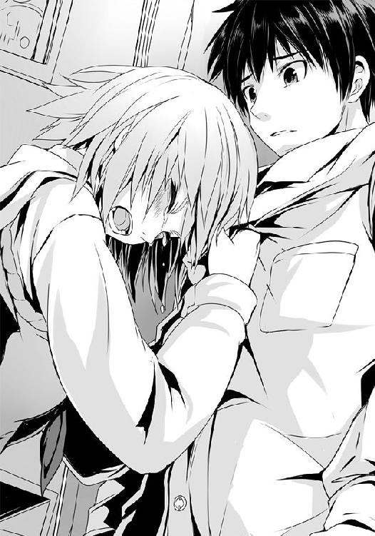
「何とか言え！」
どうしてこうなったんだろう。彼女が泣いているのなら、脇を擽ってでも笑わせると、そう言ったのに......どうして、逆のことばかりしているんだろう。
僕は先輩の細い肩に手を置いた。
「先輩......お願いがあります。僕と戦ってください。一匹の狼として」
「......何が、目的だ」
「先輩の苦しみを......涙を止めるために」
教えてもらうんじゃなく、戦いの中から己の拳で学ぶ。
僕の考えた作戦はそれだった。槍水先輩と戦えば、きっと何かが見えてくる、そう思ったのだ。ただ、これには部の、同好会の掟がどうしても邪魔なのだ。......だから、辞める。
勝負はもちろん、勝つ。そうすることで正式に自分が魔導士へ――最強への挑戦権を手に入れられるはずだと僕は感じてもいた。たとえ、そうすることで一時的に先輩の繋がりが薄れるかもしれないけれど、それでも......。
「だったらここにいろ！ 私と一緒にいればいい!! 言っていることとやっていることが違うだろう!!」
かすれるほどの声を出す彼女を僕はたまらず......抱きしめた。
申し訳なさが、心から溢れ落ちそうになるのを堪え、ただ、抱きしめる。
細くて、柔らかい体。抱きしめればわかる彼女の小柄さ。香る、すっきりとした甘みも嫌みのない、カルバンクラインのエタニティ。
「先輩、お願いです。戦いたいんです。僕との勝負、受けてください。......勝ちますから。魔導士にも。それで......」
先輩が僕の胸を突き飛ばすようにして、押した。
僕の腕は簡単に解かれ、彼女との距離が出来てしまう。
魔導士が去る前に、戦い、活路を見出したい。そのためには一日でも早く先輩と戦いたかった。恐らく先輩の強さは魔導士と同種のもの、もしくは何かしらで類似するもの。けれど、この一年どれだけ近くにいてもわからなかった。ならばもう、実際に戦ってみるしかないのだ。
そしてそれは......きっと、先輩を酷く傷つけることになるのだろう。今のような状態になるのも、うっすらとは想定していた。でも、やるしかなかった。これも彼女の......ため......。
便利な言葉だと、自分自身思う。
本当に彼女のためだろうか。彼女の涙を止めたくてしているのに、それが逆に彼女を泣かせることになっているのに。本当にこれしかなかったのか。彼女のためと言いながら結局は自分の都合のいいように彼女を傷つけているだけじゃないのか。そんな疑問と自問が脳裏を過る。
震えそうになる膝。額を床にこすりつけるようにして謝ってしまいたい衝動。でも、僕は、己の心を抑え込む。そして退部届けを目線で探す。......先輩のブーツの下だった。
先輩、と僕は今一度呼びかけ、彼女を見る。そして、見なければ良かった、と思った。
槍水先輩の目が、言っていた。――嘘つき、裏切り者、と。悲しみと怒りと苦しみとが混ざり合って絶望のような色になり、敵視と呼べる視線を放っていた。
先輩の目尻から涙が零れるも、目は鋭く僕を睨み続ける。
「僕は、槍水先輩と戦いたいんです」
「......お前も、金城先輩も......みんな、勝手だ......」
「先輩、僕は――」
「わかってる！ 勝手なのは私も一緒なんだろう!? 烏頭に言われた。私は面倒で、臆病で、甘えたがりで、虫酸が走るクソガキだと。......もういい、わかってる。わかってるんだ！」
地団駄を踏むように、先輩が足に力を入れた。退部届けが破れていくのがわかるが......恐らくそれを先輩は気付いていないようだ。ただひたすらに、僕の顔を見ていた。
「......先輩、白梅がいろいろと調べたんです。ＨＰ同好会、いや、ＨＰ部って、この学校が出来た当初からあったとても古い部活なんですよね」
狼――当時は半額弁当を求めし者たちは騎士と呼ばれていた時代、かの最強の名を有した最初の存在、アーサーの名が生まれるより前、最初のＨＰ部は弱者の、犬の集まりだった。
今もなお受け継がれている理念そのままに、如何にして半額弁当を奪取するのかを研究、実践するためのものであったものの、その実体は実質的にダンドーと猟犬群のそれに近く、集団戦術によっての奪取を基本としていた。けれど、ある一人の騎士がその戦術を否定し、単独で戦うことを選択した。そして彼に賛同した騎士たちは、部室にあった円卓から《円卓の騎士》と称され、集団戦に異を唱えた最初のＨＰ部部員の男は、その後に最初の最強の枕詞、そしてアーサーの二つ名を手に入れるに至った。
「......ですが、この際に本来であれば部の方針も変わるはずなのに、いくつか残ってしまったものがある。......それが、部員同士で争うなかれ、という掟。これは集団戦を基本とするが故のものですよね？ 何十年もの間、実質的に形骸化しながらも何故か残り続けていた......」
いや、残した意味はある。と槍水先輩は呻くように口を開く。
「......昔、金城先輩が去った後に部に残る古い資料を調べたことがある。部員同士で争えなければ最低でも部員総数よりも多い弁当が必要になる。つまり、必然的に複数店舗に部員を分散せざるを得ず、それが結果的に部員による集団戦を防ぐことに繋がる、とメモ書きがあった」
なるほど、と僕は思わず頷いた。
「ある意味では、アーサーも金城先輩も同じだ。群れでいることに飽きたんだ。弱者とて経験を積むことで強くなる。結果、強力な力を手に入れた猛者が群れていては成長過程の者たちでは勝負にならない。......彼らは、ギリギリの真剣勝負を望んだんだ。勝利の一味のため、勝負の面白さのために」
「でも、ＨＰ部を消すことはなかった。......これってオルトロスが言っていましたけど、ＨＰ部そのものが、仲間と共に夕餉を囲むためのものではなかったのか、仲間との幸せな夕餉をイメージすることで腹の虫に力を加算させるための......。つまりは、そういうことなんですね」
「狼、いや、騎士を強くするための最初のステップとして......この部室という場は有効に働く。そしていくら集団戦を捨てたとしても、皆が集まり、食卓を囲める場を捨てることは出来なかったんだ。......金城先輩以外はな」
白梅によれば、このアーサーが一線を退き、最強の名を他に明け渡した際、彼に敬意を払う者たちによって騎士の呼称をやめようという運動があったそうだ。野球で言うところの永久欠番のようなものだろう。代わりに用いられるようになったのが、二代目の最強の出身地である中国地方及び関西の一部地域で使われていた狼という呼称であり、これが今に至るも使用され続け、半額弁当争奪戦におけるスタンダードな呼称になったのだという。
そうした経緯があったために狼の二つ名には今もなお騎士、そしてアーサーにちなんでケルト神話から引用されることが多いのだと、納得のいく理由が白梅の話には付け加えられていた。
会ったこともない原初の最強、アーサーという男と半額弁当争奪戦、そして僕自身をいつの間にか胸の内で重ね始めているのを感じる。
別に自分が最強、という意味ではなく......全てはここから始まったのだ、ということを、だ。
この部室で、この円卓を囲みし者たちが、全ての始まりを作った。
半額弁当争奪戦自体は元々自然発生したものなのだろうけれど、そこにまつわるあらゆるものが、ここから生まれ全国に広がっていった。
僕の狼としての生き方もまた、全てはこの部室に足を踏み入れた時に始まり、今という刻に至るまで進んできた。
ならば、終わらせるのもこの部室だというのが、いいじゃないか。
「先輩、僕は......ＨＰ同好会を辞めます。退部届けに顧問のハンコを押させてください」
「......辞めて、どうする」
「先輩と戦い、魔導士を倒します」
あなたのために。
僕は胸の内で、そう自分勝手で、押しつけがましさすら感じる言葉を付け足した。
先輩は俯き、折角直したばかりの化粧をグチャグチャにするように、乱暴に目元をこすった。
「......それとも先輩、その掟を取り払って戦ってくれますか」
「代々の部長、今は会長だが、その役職に就く者には掟を含めた全てのシステムを改める権限が与えられている。古いそれに従うばかりでは、時代の先端にあり続けるスーパーマーケットの変化に対応出来ない、と。......だが、しない。私は、仲間とは戦いたくない......戦えない」
ふと、僕はそれなら何故槍水先輩を守るために、烏頭を叩こうとした魔導士はその掟を捨てなかったのか......と疑問に思うものの、少し考えればすぐにわかった。
そうしてしまうと烏頭の槍水先輩への攻撃に正当性を与えてしまうからだ。だから魔導士は何もせずに部長の席を誰かに渡し、一人、烏頭と戦った。......そして、そこで最強に喰らい付ける実力者がすぐ近くに何人もいると気が付いたのだ。もし、この順番が逆であったのなら......少なくとも部は崩壊しなかったはずだ。
何もかもが紙一重。もし魔導士が最強に到達しなければ、もしサラマンダーを越える本当の二番手が槍水先輩でなければ、もし部に掟がなければ、もし烏頭が、もし、もし......。
悪い意味で全てが絶妙な巡り合わせで、槍水先輩を苦しめる結果になっている。
僕の覚悟は、それを打ち壊す鍵なのか。それともやっぱり彼女の心を突き刺す一本の釘でしかないのか。わからなかった。
「先輩、僕が今オルトロスや二階堂たちと行動を共にしているってのは知っていますよね。打倒魔導士を目指す仲間、でも、僕らは戦っています。本気で、それこそかつてないぐらいに力を振り絞って。......だから、その......なんて言ったらいいかわからないんですけど、敵だから戦うんじゃなくて、嫌いだから戦うっていうのでもなくて......少なくとも狼という生き方はそうじゃない、と僕は思うんです。松葉菊、あの女帝が言っていたました。友と呼べる敵と共に進め、と。あの言葉の意味が、今でははっきりとわかります。本来僕らは――」
もういい！ 槍水先輩は声を張り上げ、踏みつけていた退部届けを拾い上げた。
彼女が、憎むようにして僕を見てくる。
「......もう、いい。辞めたいというのなら辞めさせてやる。出ていけ、佐藤。退部届けは私が出しておいてやる。だが......戦わない。お前のいるスーパーでは、私は、戦わない」
出ていけ、と先輩は涙声で繰り返す。僕はそれに背を押されるようにして、鞄を手にし、部室を後にした。後ろ手に扉を閉めると、かすかに、先輩の声が聞こえてしまう。
「――お前なんて......大っ嫌いだ」
僕は部室棟の階段を降りつつ、苦笑するしかない。
先輩と戦ってそこから学ぶというのはもう出来ないだろう。作戦は失敗だ。
でも......これはこれで、良かったのかもしれないと、そう思う。
何せもう......帰るべき場所さえも僕は失ったのだ。何もかもを忘れて以前と同じように、先輩は自分や白粉を待っているのだと信じて部室に帰ってくることはもう出来ない。
もう、下がれない。前に進むしかない。これまで僕を育み、帰る場所であった所を本当の意味で失った今......僕の足は進むことしか出来ないのだ。乾坤一擲の策は元より、情報すらない。何もない。だが、何もなくとも、覚悟は出来た。魔導士を倒そう。それが先輩への謝罪に繋がるはずだと祈りながら。それでいい。いや、もう、それしかない。だからこそ――。
「........................まさか..................そういうことなのか？」
自分の決心を胸の内で唱えていると......頭の中で無数の点と点が結びつき始め、何かが見えてくる。幾人かの狼がそれとなく口にしていた言葉の裏にある意味が、途端に......。
僕はそれをどうでもいい言葉、もしくは違う意味に捉えていたけれど......彼らははっきりと言っていたんだ。
それは魔導士の強さの一端にして、根源なのではないか？
そして......この事態の全ての原因......？
「いや、待て......だとすると......一年前のあの時に彼女が言っていたのも......」
部室棟を出た僕は、いつの間にか空が夜の色になっているのに気が付いた。
大した時間じゃなかったと思ったけれど、よくよく考えてみれば将棋を指していた段階でかなり暗くなっていたのを思い出す。
僕は部室棟の五階、ＨＰ同好会の部室を見上げた。
「......秋鹿、アンタの言葉の意味が......今、本当の意味でわかった気がする」
希望。その言葉、その意味、僕に託されたもの......。
部室にいるであろう槍水先輩に、きっと同じ空の下にいるであろう秋鹿に、そして......喰らいつかれるのを待ち続けている魔導士に、僕は拳を振り上げた。
あの北の地で、車の中から振り上げた拳と同じように。任せておけ、と心の内で叫びながら。
勝利への責任の重さがさらに増したのを、僕ははっきりと感じた。
２
オルトロスたちにそのことを話したのは、翌日の夜になってからだった。
最近僕らの集合場所になりつつあるレイクパークのベンチにて、オルトロスの二人は額に汗を浮かべて僕の話を聞き、二階堂は訝しげな顔をして木に寄りかかり、著莪はつまらなさそうに湖面......というか池を見やっていた。
「もしそうだというのなら......それが、最強への道だというのなら......なるほど、山乃守さんが私たちにどうして魔導士を倒せないと言ってきたのか、わかる気がします。彼は私たちのカゴの扱いを見ていたわけではなかった......」
「ですが佐藤さん。この場にいるわたくしたちでは魔導士を越えられないと......？」
梗の問いには、僕ではなく、著莪が口を開いた。
「佐藤はそんなことを一言も言ってないっての。魔導士の強さの理論について語っただけで、それが最強になる手段だとは言ってない」
「そうだな。......何よりそれでは女帝の理論とは相反する」
二階堂は苦々しげに口にすると、そちらに梗が顔を向ける。
「ですが、彼女を倒したのは他ならぬ魔導士......ならば......最強を越える最強が彼であるとするならば......」
討論のようにオルトロスと二階堂が意見を戦わせ始めるのだが......二階堂としては自分の元の飼い主である女帝の言葉に従いたい、梗は結果からしか事態を見ていない......だから意見がまとまらない。
「......佐藤、本当はもう考え抜いて、答え、出してんだろ」
著莪はやっぱり池を見やりながら、ぽつりと呟く。
......そういえば、最近、彼女は僕の目をほとんど見なくなっているような気がした。
「オルトロス、二階堂。僕は......今のままで勝負しようと思うんだ。こうしてみんなで共に戦い、技を磨き、そして......最強を打破したい」
「女帝の理論ですね。......いけますか、それで」
「鏡、逆に訊く。......魔導士の理論で、いけるか？」
それは......と、彼女は口ごもるものの、最後は首を横に振った。無理だ、と。
「私たち、オルトロスには、無理です」
ベンチから立ち上がった梗はため息をつき、髪を後ろに払った。
「佐藤さんの中では、もう覚悟がお決まりなのですわね。......なら、何も言うことはありませんわ。行きましょう。このままで、わたくしたちと共に」
僕と彼女は互いに頷き合った。そんな時、著莪がポツリと呟く。――それは仙のため？ と。
「これは、先輩と魔導士のため......そして秋鹿っていう男との約束のためでもあって――」
「......もう行こう。今夜は隣街でしょ、そろそろ動かないと半値印証時刻に間に合わない」
著莪は僕に視線を合わせることなく、背を向けて、一人、歩いていってしまうのだった。
争奪戦はすでにクライマックスに入っていた。何せもう僕と二階堂、そしてオルトロスしか残っておらず、著莪を含めて一六いた他の狼たちは全て床の上に転がっている有様だ。
僕と鏡は二人同時に二階堂及び姉を踏み台にして飛び上がり、天井に着地。上下逆さまの状態で下を見やれば、二階堂と梗が共に弁当コーナー前で互いに拳のラッシュを繰り出し合う。
単体とはいえ、技術ではどうやっても二階堂では梗に太刀打ち出来ないが、守りに徹すれば話は別だ。
二階堂は守るための拳のラッシュであり、攻めようとはしていない。つまりは、僕のサポートを待っている。だが、僕のすぐ近くには同じようにして天井に着地している鏡がいる。
僕は視線を鏡へ。そして、天井を蹴る。下へではなく、まるでそこを走るかのようにして鏡へ向かって飛ぶ。向こうもまた冷めた目のまま、長いサイドの髪を後ろになびかせ、こちらに向かってきた。
天地を逆とし、僕らの間合いが詰まる。彼女は右手にカゴを持っているものの、それは後ろに下げたまま、左手を拳として放ってくる。
僕は再度足を伸ばして天井を蹴った。一気に間合いを詰めると同時に鏡の拳が最高速度に達する前に、右の掌底をそこに打ち込み、押し込むようにして、弾く。
鏡は流れるように滑らかに、そして素早く右手で取っ手を握るカゴの底をこちらに向け、突きを繰り出してくる。
接近し過ぎたのが仇となってしまったか。弾けるほどの間がない。僕はやむなく受けようと両腕を交差してガードをするものの......ハッとした。しくじった。
腕にカゴの底が触れる。だが、衝撃はほとんど、ない。僕は目を凝らす。カゴの編み目の向こうに、鏡の左の拳が放たれているのを僕の動体視力がかろうじて捉えた。つまり、カゴはフェイク。突きとして叩きつけられたのではなく、突きと見せかけて軽く放られただけ。本命の攻撃は、今、カゴの向こうで加速しつつある拳の方だ。僕は防御を解くと同時にそのガードしていた腕でカゴを押すようにして裏拳を放つ。腰の回転はもちろん、重力に引かれて足はすでに天井を離れていることもあって踏ん張りのない、ただの形だけのそれではあったが、おとなしく防御して待っているよりはいい。この二重攻撃はおとなしくしているとヤバい。
カゴを挟んで僕の裏拳と鏡の拳がぶつかる。当然パワー負けするのはこちらだ。僕は弁当コーナー上空から精肉コーナーへと押し飛ばされた。ダメージはほとんどない。
二階堂が鏡の上空からの攻撃に持ちこたえてくれるなら、着地と同時に飛びかかれば――。
そう思い、身を捻って着地に備えた......その次の瞬間だった。
店内の空気が明らかに変わった。エントランスの方角からの強い視線。
空中の僕の目には島棚越しに、はっきりとその視線の主が何であるのかを理解した。――今頃になって来店した、金城優だ。
その存在感の前に、僕は着地のタイミングをしくじった。足が床に着いたと同時にそこを蹴るつもりが、思わずその場で重心を落としてしまう。
何故、今頃？ それもこんな僕らの街からは二つも離れた街のスーパーに......？
僕の頭が疑問で埋め尽くされてしまい、腹の虫の加護がわずかに鈍る。しまった、と思った時はすでに後の祭りだ。二階堂が天井近くまで吹っ飛ばされ、オルトロスがたった二つしかない半額弁当を見事に手にするのが僕の視界の端に見えた。
「......あら、最強さん。来るのが少々遅かったようですわね」
梗はどこか優雅さを漂う素振りで弁当をカゴに収め、歩み来る魔導士に言った。だが、彼女の目の奥には若干の警戒心――いや、怯えの色がある。争奪戦開始前の僕の言葉が気になっているのかもしれない。
「毛玉からもう一軒の方のスーパーにお前たちがいると聞いて行ってみたんだが......こっちだったか。まぁいいさ。......おっと」
二階堂がどさりと、上空から落ちてきたので魔導士はそれをひらりとかわす。
魔導士が僕を見る。
まるで品定めでもされるかのようなその視線に、着地した体勢のまま僕は動けなかった。
「佐藤を借りるぞ」
最近ロングコートの男と二人で飯を食べることが多いなぁ、とか考えながら僕は公園のベンチに腰掛けた。
デジャヴを覚えるように、僕らはまたベンチで二人並び「いただきます」の一言だけで夕餉を始める。......まぁ、二人してカロリーメイトなのだけれど。
「あの店には名物の総菜があるんだがな。今回は売り切れなのが残念だ」
カロリーメイトのメイプル味を齧りながら、金城は続ける。何でもあの店では僕が以前遠藤と食べたような、二段構成の一品があったそうな。
カップヌードルの容器をもう一回り小さくしたようなそれには、底の方には白いご飯。上段にはとろっとろの茶碗蒸しが入っているのだという。
「電子レンジで温めた後、その茶碗蒸しをご飯の上に落とし、それをスプーンで食べる。これが、うまい。濃いめの和風出汁、とろっとろの茶碗蒸しを崩しながらご飯と共にとぅるとぅると口に滑り込ませるんだ。具材も海老、タケノコ、カマボコ、そして三つ葉、鶏肉など。ぎんなん、百合根といった類のものを除かれた特注のそれは、まさにご飯と食べることを前提とした作りで、味も濃い。だから、よく合って、信じられないぐらいうまい。食感は最高だ」
思わずゴクリと生唾を飲んだ、僕は慌てて手にしていたレジ袋から低脂肪の牛乳と、カロリーメイトのポテト味を取り出し、封を切る。
ちなみに金城のメイプル味もそうだけれど、ポテト味もまた牛乳に絶妙に合うのでこのセットはかなりいい。常温なのにどこかしらホッコリとした口触りと味、そこに牛乳。これが、たまらん。......なお金城はジャワティーストレートで、さっぱりと攻める派らしい。
「......佐藤。単刀直入に訊く。勝てるか、俺に」
「勝機はまだ見えていませんし、僕をぶっ飛ばしたあなたの能力もわかりません。......でも、あなたは見えてきた。だから言います。......勝ちます」
そう、勝たなければならない。最強のこの男をぶちのめし、全てを否定してやらなければならない。いくつもの折り重なった約束と、魔導士という狼の強さと引き替えに産み落としたその苦しみや悲しみ、全てを叩き壊すために。
金城が笑う。嬉しそうに、少しばかり恥ずかしそうに。
「そうか、俺が見えたか」
間違っているかもしれない。僕の勝手な思い込みかもしれない。けれど......それならそれでいい。そう思った。だから、僕は昨日辿り着いた魔導士の強さの秘密を口にする。
「あなたが強いのは......孤独だからだ」
金城の横顔が笑みに歪んだ。今まで子供のような笑みや、鼻で笑うようなそれしか見たことがなかった彼の顔が......まるで化け物のように、耳元に届きそうなくらいに口角を釣り上げ、その意外なほど鋭い牙のような八重歯を見せた。
「仙からでも......そう聞いたのか？」
「いえ、いろんな人が口にした情報を元に、自分なりに考えた結果......一番辻褄が合ったのが、それでした。......あなたは天才だ。比喩ではなく、頭の作りからして違うんでしょう。そんなあなたにとって世界は単純で、簡単で、たやすいものだった。......けれど、半額弁当争奪戦という場においてだけは違った。だから、のめり込んだ」
優君には何もない。烏頭が、僕の師匠である山乃守喨がそう言っていたと電話で教えてくれたけれど、てっきり技に小細工がない、という意味だと思っていた。
けれど、違う。言葉そのままだったんだ。
金城優という男には、何もないのだ。半額弁当を除いたその他全てに......価値が、ない。
だからこそ与えられた才能の全てを半額弁当奪取に注ぎ込める。天才とされる頭と、長身痩躯の恵まれた体......その全てを用いて戦いの野を駆け抜けられた。
「......情報源は烏頭先輩か？ あの人は、冷たいフリをして本当は構いたがりの人だ。いじめもするが、いじめるフリして世話を焼いたりもする。俺も仙も、酷い目に遭いながらもいろいろしてもらったさ」
「だから、師匠と一緒にいられるんですね。何度浮気されても捨てないのが不思議でしたけど......今、わかった気がしました」
それで、いつからだ？ と、金城はジャワティストレートで牙を湿らした。
「気付いたのは本当につい最近です。......けれど、最初にその秘密の断片を耳にしたのは、あなたに出会う前......茶髪、今はシーリーコートと呼ばれている狼が言っていたんです。〝彼はもう誰とも組まない〟と。当時はあなたを知らず、狼の世界のことも、半額弁当争奪戦という狩り場のことも......何もわからなかったから、頭の片隅にも置かなかった。でも、今は違う」
彼はもう誰とも組まない。ある意味では全ての答えが、ここにあったんだ。
祝福されし妖精、シーリーコートは誰よりも早く僕に答えを提示していた。
味方にして敵、敵にして味方である他の狼たちと何故組まないのか。何かがおかしい、考えてみれば明らかに間違っている。それなのに、最強の、言うなれば誰もが目指すべき先にいる男が、狼としての特性を否定しているというのは、そこに何かしらの理由があると考えるべきだ。
誰とも組まない。組めない、ではなく、組まない......つまり、己の意志で独りを選んでいる。
最強の名は、仲間すら捨ててその先へ踏み出そうとした結果なのだ。
彼が僕らと組んだ二回、対アラシ戦、対パッドフット戦は、どちらも勝利を譲ってくれている。あれらは彼の戦いではなく、僕らの戦いに手を貸してくれていた、と考えれば矛盾はなかった。
それが最強になる手段だとするのならば、師匠がオルトロスの二人を見て勝てないと言ったのも納得がいく。二人である以上、本当の孤独の境地には達し得ない。
つまり、金城優という男の孤独には追いつけない。
「ひょっとしたら、って思うんです。......あなたが部を離れたのは、槍水先輩を守るためだと聞いていました。でも、それだけじゃなかったんじゃないかって。......あなたにとってＨＰ部も、仲間も、そして槍水先輩すら邪魔で、烏頭と槍水先輩の遣り取りはある意味ではＨＰ部を捨てる切っ掛けとしては都合が良かった」
金城は顔を逸らして鼻で笑う。悪魔じみた笑みはやや隠され、瞳には人としての何かがあるように見える。......きっと切っ掛けとして利用したのと同時に、槍水先輩を救うつもりもちゃんとあったのだろうと感じた。
......やっぱりこの人も嫌いじゃないんだ。先輩のこと。
僕は己の胸の奥底に、かすかな嫉妬の念が湧き起こるのを必死に抑えつけた。
「......ただ、わからないのは......最強になったのに、何故そこまでする必要があったのか、ってことなんですけど......」
「俺には元から何もなかった。......だが半額弁当に魅せられ、ＨＰ部に入り、のめり込むにつれて立派な先輩が出来、頼りになる仲間が出来、かわいい後輩が出来た。......確かに、邪魔といえば邪魔だったな」
「でも、あなたはその状態で最強になったはずだ」
最強？ フン、と金城は笑う。
「確かに当時の俺は、かろうじて《王様蝶》を打倒したが......彼女はもう、気持ちの上では引退していたんだ。結婚が決まり、狼を辞める覚悟を決めた後の......つまりは、最強の名を他に移すための、譲渡のための戦いでしかなかった。勝てないわけがなかったんだ」
「そんな!? だって、あれは......凄まじい戦いだったって......！」
「傍からはどう見えていたか知らないが、指導を受けながらのような戦いだったさ。こちらの全力を引き出させ、最強の名に相応しい技と力を与えようとしてくれていた。つまり、俺のレベルに合わせながらの戦いだったんだ。......だからこそ激戦に見えたんだろう。......こちらは文字通りに死力を尽くして戦い、部室はもちろん、公園にすら辿り着けず、路上で倒れながら夕餉を喰らったが......向こうは当たり前に総菜とビールを買って帰ったらしい」
僕はカロリーメイトを齧るのも忘れて、驚愕した。
「最強の名を任されたがためにも、俺は本当の意味で最強になる義務があったのさ。安心しろ、佐藤。今なら、そこに至った自負はある」
レアなアイテムを見せびらかす子供のような、得意げな顔をする金城に、僕の中の驚愕は失せ、先ほど湧き上がった嫉妬が頭をもたげてくる。
「......なら、なおのこと、先輩に冷たくする必要はないじゃないか。もうあなたは行き着いたんでしょう？ それなら......！」
「俺には何もない。あるのは半額弁当争奪戦という場と、最強の枕詞だけ。......それを大事にして何が悪い？ 槍水と同じように、俺も縋っているのさ」
自虐的でも何でもなく、サラリと彼は言った。冗談のようにさえ、聞こえるほどだ。
「仙が俺を本当に好いているというのなら、戦うはずだ。......強敵と戦い、そして勝利の一味が入った弁当を喰らう間だけが、俺の幸せだ。それを俺に与えてくれず、自分の望みだけを叶えろというのはいくらなんでも勝手なんじゃないのか？ 後輩だからとはいえ、冗談が過ぎるだろう。......仙の好意は所詮、子供の我儘さ」
僕は両手を組んで、指に力を入れる。わけのわからない衝動が溢れそうになるが、それを堪えた。僕が怒るのは、きっと一般人としての考えを持っているからだ。彼は、天才だ。恐らく価値観そのものが違うのだ。彼は人が想い描く当たり前の幸せなんて望んではいない。
彼にあるのは狼としての幸福のみなんだ。......それも当然だ。狼であること、半額弁当争奪戦こそが、今の彼にとっての全てなのだから。
だから槍水先輩の気持ちなんて理解しようともしないし、彼女と一緒に肩を並べて歩く時に感じる胸の高鳴りも、彼女の手の温もりも、彼女の笑顔も......欲しいとは思わないんだろう。
強さを求めたが故に仲間と一緒に夕餉を摂ることさえも拒絶した最強の狼......他に誰もいない高い頂にただ独り......。
「佐藤、お前は一体何を望む？」
「あなたを倒し......いや......」
違う。僕の望みは、きっと......違う。最強になりたいわけじゃない。
強くはありたい。最強の名も眩しい。けれど、僕が欲しいのは......半額弁当、そして......それを一緒に食べてくれる――。
目眩を感じて、僕は瞼を強く閉じた。脳裏に過る無数の夕餉。月の浮かぶ空を見上げた日々。味見し合ったおかずの数々。おいしいねって笑い合った著莪、オルトロス、二階堂、白粉、真希乃、茉莉花、茶髪、顎髭、坊主......そして、槍水先輩。
僕が、欲しいのは......今、一番望んでいるのは......きっと――。
「ＨＰ同好会を退会したというのは、聞いている。お前も俺と同じ道を歩みだしたわけだ。......どうだ、間に合うか？ 俺は烏田高校の卒業式の翌日には日本を離れる。あと、数日。その期間で到達出来るか、ここまで」
「......違う、僕は......」
「卒業式の夜、俺は昔の縄張りであるジジ様のスーパーに出るつもりでいる。恐らく俺にとっての最後の半額弁当、そして日本での最後の夕餉だ。......強くなれ、佐藤。時間はないが、お前は俺を知り、同好会を捨てたことで〝もしかしたら〟という可能性を掴んだんだ」
「違う、僕はそういうつもりで同好会を――！」
魔導士が立ち上がる。
「俺に喰らいついてこい。そして、勝利の一味を味わわせてくれ。カペルスウェイト」
「槍水先輩は......」
「仙には毛玉を通して伝えさせる。俺を本当に想うのなら、スーパーに来い、と」
「それで、ぶちのめすわけか。......その後、一緒に夕餉は......」
「......摂るわけがないだろう。仙の我儘を叶えなければならない義務はない。俺にとっては昔の後輩だ」
何でそんな――！ 僕は思わず金城を睨み上げてしまったが、彼は平然とそれを受けていた。
「......あなたも、十分過ぎるほどに、我儘だ。先輩のことを何も考えずに、ただ自分の望みさえ叶えばいいと口にする」
「どうした、佐藤。どうしてそんなに仙のことでムキになる。......余計な感情は捨てろ。ただひたすらに半額弁当を想え。そうでなくては、俺には勝てない」
「......嫌です。僕は......捨てない」
捨てられるようなものじゃない。この一年は、僕にとってその一瞬一秒すら、宝物なんだ。
捨てられない。捨てたくない。捨ててたまるか。
何より......捨てて捨てて、何もかもを捨て去って、ただ半額弁当だけを求めた結果が魔導士だというのなら......最強だというのなら、きっと今からじゃ追いつけない。
「僕は捨てない。全てを掴んだままで、行く。......掴んだ拳で、あなたをぶちのめす」
「......彼女の道を行くか」
捨てるのでは追いつけない。けれど、王様蝶こと女帝と呼ばれた今は神に至りし彼女の言葉を信じ、それに従って進むことが出来るのならば......まだ、追いつけるかもしれない。僕はそう思った。もしかしたらそれは単に捨てられない、覚悟を決められない僕の心がそう思わせているだけなのかもしれないという、恐怖と共に。
金城は何かを見つけたように目を細め、僕の顔を見てくる。
「佐藤。仙が、好きなのか？」
「..............................はい」
「そうか。......お前が俺とは違う道を行くのを止めはしない。それでもし可能だと思うならそうすればいい。だが、一つ忠告させろ。......もし、その道を行くというのなら、最後の戦いより前に、佐藤......仙を押し倒せ」
「......何言ってる」
「最初は驚いて抵抗するかもしれないが、安心しろ。仙は頑固そうに見えるが、あれで実は流されやすい。性格からいっても力ずくで押し倒してしまえば後は簡単に受け入れるだろう。奴のことだ、案外、先輩ぶった余裕を取り繕うかもしれない」
「......何を、言っている」
「仙を抱いてこいと言っている。全てを掴んで挑むというのなら、望みの全てを手に入れてから俺の前に立て。そうでなければ、全てを捨てた俺には勝てない。問題が起きそうになったら俺に言われてやったと言え。それで向こうは黙る。......それとも、もう食べた後なのか？」
全身の毛が逆立つのを感じ、気が付くとベンチからケツを浮かし、立ち上がっている自分がいた。そして、魔導士との距離を目算し終え、飛びかかろうとしている己の体を意識して押さえ込む。
金城が笑っていた。こんな嫌な笑みを浮かべられるのかと、驚くほどに、こちらを嘲笑う。
堪えろ。ダメだ、ここで殴り倒しても......意味がない。自己満足にすらなりはしない。
僕は歯を喰い縛り、血が出るほどに拳を固めて、必死に押さえる。息が、荒くなっていた。
「......ふざけるな」
「マジメな話だ」
「......僕は、そんなことで......ただ、僕は、彼女が苦しんでいるのが......」
「そうか。もっと精神的に、か。......ならば、こうしよう。佐藤、お前が勝ったなら、俺も槍水の気持ちに応えてもいい」
それはどこか僕の知らない奴の声に聞こえた。そしてその声はとんでもない言葉を紡いでいく。僕の中にあった怒りそのものがどこかで飛んでいくほどの、驚きを生む、それ。
「つまり、お前が勝った暁には俺は仙の望みを叶えると言っている」
「......だけど、それって......」
「仙を面倒に思いはしても嫌ったことはない。一年隣に置いていたんだ。好きか嫌いかで言えば間違いなく前者だ。......この間、山原にも勧められたしな。どうせ狼の最後だというのなら......そういう結末も悪くない」
つまり、と僕は自分の中で奴の言葉をまとめる。――金城優は、僕が魔導士に打ち勝てば槍水先輩と付き合う、そう言っているのだ。
「全てを掴んでいくというのなら、これ以上ないだろう。お前が勝てば、全ての望みが叶う。お前が好いている仙の望みも......。だから、勝て。佐藤、仙を想うのならば......この何もない俺をその全てを掴んだ拳で叩き潰してみせろ」
時間はないぞ。そう言い残し、魔導士はコートの裾を揺らしながら、ゴミを手に、僕の前から去っていった。
彼の足音が消え、静寂が耳を占めると、再びゆっくりと僕はベンチに座り......そして、頭を掻きむしった。
その手を爪が皮膚に喰い込むほど固く組み、膝の上で立てるようにして、そこに額を預ける。
「これでいい、これで......全て......。わけがわかんないぐらいに、全てが......うまく進んでる。だから、これでいいんだ」
いい。これで、全て......。後は僕が、勝てばいい。勝てば......僕の望みは全て叶う。僕は最強になり、白梅、そして秋鹿との約束を果たし、オルトロスたちとの鍛錬が実を結ぶ。そして......僕が一番望んだ槍水先輩の顔に......笑顔が戻る。
これでいい。最高だ。最高なんだ――
「......叩き潰してやる、魔導士。僕が、僕の手で......」
――最高なのに............何で............涙が落ちるんだ？
●
冗談もほどほどにしろ、という台詞がその男を見た時に、思わず金城の口を突いて出ていた。
「それはこっちの台詞だぜ、魔導士。随分なことを口走るじゃねぇか」
そう言ったのは公園の先にある林、その木陰に隠れていた毛玉だ。彼は相変わらずの格好に加え、集音マイクとそれに繋がるヘッドホン、さらには夜でも見えるという大型の双眼鏡を装備していた。ネットオークションで合計一万円もかからずに手に入れたアイテムだというが、傍から見るといい歳した男が全力でスパイごっこをしているアホな図になっていた。
「嘘はついていないさ。挑発のつもりもあったが、俺とは違う道を行くというのなら、一応助言はしておこうと思っただけだ」
「そうかい？ 俺には自分の生き方を否定された天才ちゃんが、ちょいとばかしおキレになったように見えたぜ？」
冗談だろ？ と、金城は笑った。だが、毛玉は一緒に笑いはしない。
「怒りの感情でやる気は起こっても、それじゃ空腹は濁り、腹の虫の加護も弱くなる。わかってんだろ？ そういう店外での精神的な攻撃は、狼としてはどうよ？」
「そんな人間的な怒りを打ち消し、その熱量を空腹に転換出来ずに俺を倒せるものか。オルトロスや元ガブリエル・ラチェットの頭目がサポートに回るかもしれない。問題はないさ」
金城は言うものの......確かに毛玉の言う通りに佐藤の言葉に若干の苛立ちを覚えたのは事実だった。本当に自分がキレかかっていたのか、よくわからないというのが実際のところだ。
ブブッという振動音が聞こえる。毛玉のスマホだった。
「すまねぇ。カノジョからメールだ」
最近ちょっとな、と毛玉がわざとらしい得意げな顔をするところを見ると、カノジョ＝恋人というわけではなさそうだった。
「これから忙しくなりそうだ。まずは魔女に卒業式の夜が魔導士最後の夜だと伝えにゃならんだろうし、他の有力株にも......そして、佐藤洋を筆頭としたあの狼の群れがどう鍛錬してくるのか......これからのスーパー、見所は多いぜ」
銀面のサングラスのせいで彼がどこを見ているのか、金城にはわからなかった。
３
旦那の運転は相変わらずうまく、助手席に座っているだけで心が落ち着く。
彼と共に同じ時間を歩んでいきたいと本気で感じたのも、ゼミの飲み会、その帰り道に送ってもらった時だったのを松葉菊は思い出す。
胸の間に喰い込むシートベルトの位置を直しつつ、空を見る。
薄い雲が空を覆っていて星々はおろか、月さえも見えはしなかった。ここ最近、ずっとこんな日が続いている。まるで若い狼たちの暗鬱な気持ちを表すかのように。
「明日、晴れるかしらね」
「......どうだったかな。覚えていない」
せめてどんな結末になるにせよ、狼たちの頭上には月が輝いていてほしかった。
それは賞賛にもなり、慰めにもなる。何にせよ、月は彼らの心を照らすのだ。
彼の運転するセダンは隣町、狼たちが西区と呼ぶその土地へ入り、町外れのバーの前にて止まった。バーといっても寂れた商店街の一角にある、仕事終わりの地元の人間が軽く酒を嗜むための店で、気取った感じはこれっぽっちもない。
酷い時には近所の寿司屋の板前が仕事着のままでグラスを傾けている時すらあるのだから、菊もまたスーパーの仕事終わりの格好で来ることに何の抵抗もなかった。
「ありがとう。帰りはタクシーを拾うわ」
「電話してくれ。君の迎えを面倒だと思ったことは一度もないよ」
まったく、と菊は目を細めて彼の顔を見つつ、鼻から抜くように息を吐いた。シートベルトを外し、若干髭が伸びつつある彼の顔に唇を寄せると、セダンを降りる。
かすかに肌で感じる程度の霧雨が降っていた。
菊は羽織っていたジャケットのフードを被り、車が去っていくのを見送る。その排気音すら愛おしく感じ、聞こえなくなるのを待ってから彼女はバーの扉を押し開いた。
建前程度の古びたのジャズのＢＧＭ、アルコールと小料理、そして煙草の匂いが菊を包む。
ジャケットのポケットに手を入れたまま店内を見渡せばカウンター席から離れた、店内最奥のテーブル席に見知った顔が二つ。
「主催者が遅れちゃって、ごめんなさいね」
「別にいいさ。どうせ呼び出されなくても、今日はこの爺さんと一杯やろうと思ってたんだ」
そう言って筋肉隆々とした腕のせいか、可愛らしく見えてしまうグラスをその男は呷る。
「こちらも同じさ。明日は気合いを入れないといけないからな」
その初老を過ぎた男は、優しげな顔こそしているが、言葉はどこか荒っぽさを感じさせる。噂では若い頃にはかなりブイブイ言わせていたというが、本当かどうか菊は知らなかった。
彼はポケットから煙草を取り出すと、火を付ける。国内では入手が難しくなった『峰』という銘柄だ。菊が初めて彼に会った時から咥えるのはずっとこれだった。
ウェイターがやってきたので席に着きつつ、菊はソルティドッグを一度頼むも、やめ、グレイハウンドに注文を変えた。夏なら前者でいいが、三月の半ばである今、さらには雨も降り始めたことで塩気は余計に思えた。
菊は足を組みつつ、テーブルの上に出ていたピスタチオを口に入れた。
「神々の宴にしてはツマミが安いわね」
中性的な、というよりは単にオッサンがオバサンかイマイチよくわからない声が聞こえ、菊が見やればそこには体重百キロを優に超えるであろう巨大なシルエット。
そいつは豪奢な布を纏ったようなドレスを着ており、客でありながらどこかこの店のマダムといった貫禄を漂わせていた。その後ろには小顔で首の長いうんざり顔の女と、ミリタリジャケットを羽織ったボーイッシュな女を控えさせていた。
別にこれでいいじゃねぇか。そう、紫煙を吐きながら半額神であるジジ様は言い、筋肉を撓らせるようにしてアブラ神が頷く。菊は笑う。
「はぁい、マム。後ろの二人は？」
「帰りのアタシの足」
彼女――というか実際には彼なのだが――ビッグ・マムがサラリと言うが、首の長い方の女は死にそうな目でその後ろ姿を見やる。
「主任、帰る時はタクシー使えばいいじゃないですかぁ。何で私たちが......」
「はぁ？ この不景気にタクスィ〜だ？ お前アレか、正月の旅行中に鉱山でも見つけたか!? 金脈か!? レアメタルなのか!?」
「......見つけてないですよぅ。山木さんがいるんだから、私いらないじゃないですかぁ」
ボーイッシュな方は山木というらしい......と、そこで菊はこのボーイッシュな女が昔狼であったのを思い出す。確か二つ名はガリー・トロット。昔はもう少し美少年然としていて、今のようなうっすらと纏う爽やかな色気の類はなく、かなり印象が変わって見えた。
「マム、意識失っちゃうとボク一人だけじゃ運べないから」
「......それにこのバーから葦原、お前んトコのマンション、近いからな」
「ちょっ!? うちに来る気なんですか!?」
「安心しろ。ちょっと寝るだけだ。......お前の旦那とな」
首の長い女、葦原は慌てて携帯を取り出すも、それは山木に素早く奪われ、さらにはビッグ・マムの手へと渡っていった。
「......やはり旦那にコールしようとしたか。逃げろとでも伝える気だったか、うん？ もういい、これは預かっておく。お前は山木と向こうのテーブルでちびちびやってろ。こっちは半額神だけだ。......ウェイター、テキーラ、ワイングラスで持ってこい」
だ、旦那が危ない......旦那が......と、青ざめた顔の葦原は少し離れた席へと山木に誘導されるようにして連れていかれた。
どことはなしにかわいそうではあったが、余計なことを言って迎えに来るであろう自分の旦那に何かされるのも嫌だったので、菊は黙ってピスタチオを頬張った。
「それで？ いよいよ、最強がどうかなるって？ 魔導士、だったかしら」
ドカッとテーブル席の一つに腰掛け、マムは生ハムを指で摘まんで口に入れた。
「金城優。私が最強を託した子よ。彼は明日の烏田高校の卒業式を終えると、最後の戦いに出ると先週に宣言した。それ以来スーパーは大騒ぎ、地方からもかなりの数の狼がこの地へやってきているわ」
知ったこっちゃないわね。とマムは本当にどうでもいいというような顔をしていた。これは狼から半額神に昇った者と、狼を経験せずに半額神となった者の差なのかもしれない。
「そんで？ どうなの、そんな連中の中に見込みのある奴はいた？」
「物見がてら、という感じの奴が多いんだろうな。変わり者もそこそこいるが、明らかに最強の名を持つには実力不足ばかりだ」
フン、とアブラ神が鼻で笑って言うと、同意するようにジジ様が頷いた。菊は腕を組む。
「強いて可能性があるとすればやっぱり氷結の魔女。そして......オルトロスとツードッグス」
「ツードッグス......？ あぁ、あのロリコン野郎ね」
「実力から言えば魔女とオルトロス、でも......ツードッグス、特に佐藤君も可能性があるかもしれない。何せ、金城君、つまり魔導士本人がそう考えている節がある。それに、ここ最近、彼は異常なまでの激しい争奪戦を繰り広げていて、信じられないような速度で実力を上げているわ。オルトロスでさえ、今は相当に手こずっている」
本当はやはり魔女が次の最強への最有力候補だったが、彼女の近況を菊の昔の仲間――かつてのガブリエル・ラチェットのメンバーから訊いたところによれば、恐らく魔導士と戦うためにスーパーに現れることはないだろうとのことだった。
「勝てそうなの？」
「......難しいわね。あれじゃ金城君に届かない。オルトロスはまだいけるとは思うけれど、でも、何とも......苦しいかな」
激しく戦う、粘り強い、それだけで勝てるような相手ではないのだ。仮にまったく同じだけの腹の虫の加護を引き出したところで、経験や能力で負けるだろう。佐藤の様子からするに、まだ、攻略の糸口をも見出せていないはずだ。
オルトロスは実力、経験が申し分なく、さらには魔導士の能力が何であるのかを理解している節がある。それを意識した戦い方を佐藤と二階堂に見せているほどなのだ。
だが、勝てるかどうかとなると怪しい。二人組であるという強みはあるが、同時にそれが弱みになっている気がした。コンビの狼には、絶対的な脆さがある。ツードッグスのようなスタンスこそ理想的なのだが、オルトロスはそうじゃない。そして、金城優という男がそれを知らないはずもないだろう。
「つまり最強は魔導士のままってわけね。別にいいじゃない、誰が持ってたって関係ないわ」
「そうなんだけどね。狼が騎士と呼ばれた時代から連綿と受け継がれ続けた最強の枕詞......金城君が明日負けなければ失われる。彼は、翌日には日本を発つそうよ」
「あぁ、それで菊がこんな飲み会を主催したってわけね。......アンタにとっちゃ懐かしの称号だものね」
「......彼にとってもよ。ねぇ、お父さんは元気？」
「あぁ。いまだに烏田の理事長として頑張ってるさ」
「そういえばそうなのよね。忘れてたわ。っていうか、アンタから全てが始まったんだものね。親父のコネで作ったＨＰ部、騎士の終わりと狼の普及、そして最強の称号の誕生......ある意味じゃアンタの物語なわけか。そうでしょ、アーサー？」
マムにアーサーと呼ばれ、菊とジジ様の視線を集めたかつての、そして今もなお伝説としてその名を知られた神に昇りし最強――アブラ神は面白くなさそうな顔をして腕を組み、背もたれに体重を預けた。
「その名で呼ぶな。昔の名だ。今のおれはしがないスーパーの店員さ。中には仕事の匂いからアブラオヤジやアブラ神と呼ぶ奴もいるがな。......そっちの名の方が、今は性に合っている」
「何言ってんのよ、その無駄に仕上がった筋肉......大事に当時からずっと維持してるくせに。アタシがこの地に根を下ろす前だから詳しくはないけど、話は知っているわ。一人の円卓の騎士が最強に至ったのは......そう、ジジイの店だったわね」
「あぁ、そうだ。まさかあのクソガキがライバル店に入社するとは思わなかったがな......もう二〇年も前の話だ」
「あなたの下についたんじゃ、あなたを越えられない。自分なりの道を探すためにも、あえて近くで、違う道を歩もうとしたのさ」
生意気言いやがって、と、ジジ様は透明な液体の入ったグラスを傾けて唇を湿らせた。
「......何にせよ、筋肉の塊みてぇなガキから始まった最強の歴史、それが今、転機を迎えようとしている。二〇年前から綴られてきた最強の系譜に新たなる名が連なるか、それとも打ち切られるのか。......全ては、明日だ」
「ちょっとぉ、ジジイ。女子に飲み物来てないってのに、一人で勝手に飲まないでよ」
マムに言われ、ジジ様は肩をすくめてグラスをテーブルに戻した。
「魔導士はどの店に出るかも宣言したわけ？」
俺の所さ。と、ジジ様が得意げな顔をした。
「......ヘタをするとあの小僧の最後になるかもしれない争奪戦だぜ、ジイさん。相応の弁当、出してやれるのかい？」
「お前はだからガキなんだ。いいか、コンスタントに最高の品を限られた予算の中で作り上げる。......それがプロであり、俺たちの仕事だ。いつだって全ての弁当が月桂冠だと思って俺は用意している」
ジジ様はアブラ神に向かって言うが、菊は自分にも言われているような気がした。気まずくなったので、菊は聞こえなかったような顔で、オーダー品はまだかとウェイターに訊く。
だがな、とジジ様は続ける。
「ちぃとばかし無理をすればそれ以上を出せなくもない。......やってやるさ。最高を越える弁当を、明日、ガキ共に喰わしてやる。今日、すでに仕込みは終えてきた」
それは？ アブラ神が腕組みを解き、前屈みになる。菊とマム、さらには離れた席から耳を欹てていた山木たちもまた、ジジ様を注視した。
「......サバの味噌煮弁当【極み】」
極み......その場の誰もが小さく、その名を繰り返し、そして息を呑んだ。
「当たり前の仕事を当たり前にきっちりと、丁寧に、真心を込めて作る......ただ、それだけ。食材は少しばかり選んだがな、それだけだ」
それだけ、と彼は言うが、それが難しいのだと菊は思う。普通の人間ならばそれこそ当たり前の言葉だと感じるかもしれない。だが、日々無数の弁当を作り、さらにはメニューを考え続ける半額神という立場にあって、一つの一つの料理に手間暇惜しまず、真心を込めて作るというのはそう容易いことではない。
意識して頑張っても、どうしても仕事としてこなしてしまう時がある。それでも作ってきた全ての弁当は、胸を張って自慢の品だと言える。だが......どうしても、時間や予算の都合が理想にまとわりつき、現実へと引き下げざるを得ないのが正直なところである。
それを少しでも理想の状態に近づけていくには、もはや作り手のプライドに頼るしかない。
あえてそれを口にし、【極み】という名を付けたというところに、ジジ様という一人の男の業を感じさせた。相当な自信があるのだ。彼のスーパーの名物であるサバの味噌煮弁当でありながら......同じ料理、同じ弁当でありながら......その上をいったという、自負が。
一人の騎士を、最強というそれまで存在しなかった頂へ昇らせる弁当を作った男......その凄みの前に、すでに神と仰ぎ見られる立場にいるはずの菊でさえ、冷や汗を浮かべた。
誰も言葉を発することなくいるとウェイターが現れ、グレイハウンドとワイングラスに入ったテキーラ、そして付け合わせの多めの塩とライムをテーブルに置いていった。
「......何に乾杯する？」
菊の言葉に、誰からともなく言葉が漏れる。――未来に、と。
歴史の転換点となるのは間違いない明日。そして最強の名に寄り集まる無数の狼、半額弁当という人によってはくだらないと笑われるものに命を懸けた誇り高き者たち、少年少女の恋心、そしてサバの味噌煮弁当【極み】......。
全ては半値印証時刻という極狭領域で錯綜し、ぶつかり、あるものは消え、あるものは――。
菊は想う。かつて彼にならば、とあえてアーサー――アブラ神の前にて最強の称号を受け渡した男。金城優。孤独を抱くことによって、人が持つ欲望の全てを半額弁当に注ぎ込んで最強の道を歩んだ、彼。菊とは違う、いや、これまでのどの狼とも違う、失うことで力を得る、という道を見出した狼。
ある意味でそれは騎士団を名目上の存在とし、集団戦を捨てて、騎士個々の能力での戦いを望んだアーサーの手段に近いのかもしれない。
だが、それとは根本的に道を違えていることに、彼は気付いているのだろうか。
アーサーの根底にあったのは理想と自己実現、そして限りない優しさだった。より強く、より誇らしく、そして誰もが平等に半額弁当を望める世界......それをひたすら求めた結果が最強へ彼を押し上げたのだ。
捨てたからなのではない。だからこそ、彼はＨＰ部を、円卓から離れることはしなかった。
最強の頂へ昇った者は少なからず彼の影響を受けているし、彼を知らない者もその背を見て育った者からの影響を受けて歩んでいる。......だが、金城優はそうではないのだ。
ある意味では先ほどジジ様にアブラ神が言ったように、同じ道を歩んだとて、追いつけないと感じたのかもしれない。本当の意味で、史上最強の頂へ昇らんとしたのかもしれない。だが、全てを捨てて孤独に身を沈めたが故に、彼は......。
「......どんな結果になるにせよ、一つの時代が終わるのね」
菊はグラスを持ち上げながら、漏らすようにして呟いた。
「そしてまた、当たり前のように次の新しい時代が始まるってわけよ」
マムがたるんだ頬を揺らして笑い、なみなみと注がれたテキーラをこぼさないようワイングラスを注意深く持ち上げる。
「......最強が時代を作り、変えていく」
アブラ神が昔を思い出すような、遠い目をしてグラスを掲げた。色からしてバーボンか。
「自惚れるな、アーサー」
最後に、透明なグラスにジジ様が手を伸ばした。彼のことだ、きっと中身は焼酎だろうと菊は何となく思う。
彼がテーブルからグラスを浮かせると中の球体の氷が踊る。店内の照明に輝き、その表面に半額神たちの顔を映してゆらりゆらりと回った。
「最強じゃねぇんだ。そう、いつだって次の時代を作り、変えていくのは......一握りの天才とひとつまみのバカだ」
この男は、何かを予感しているのではないか。言葉と、彼のグラスを見つめる眼差しはそう菊に思わせた。だが、そんな考えもまた、菊は振り払う。
明日になれば、自ずと判ることだ。菊は鼻から大きく息を吸った。
「では、変わる時代、そしてそこから始まる新たなる時代......未来に、乾杯」
半額神たちは様々な想いを胸に、甲高いグラスの音を響かせた。
全ては、明日――。
４
僕はＤＣのコントローラを持ったまま、床に寝そべり、かれこれ長いこと天井を見上げていた。
卒業式の学校は午前中で終わったこともあり、僕はそれからすぐに寮に戻り、延々とゲームをし......そして、先程無事にそのソフトをクリアしたのだった。
長い長い、放置とも熟成とも......逃避とも言える時間の果てに、僕は今日ついに、そのソフトをクリアした。涙が零れるかとも思ったけれど、雰囲気の明るい作品であったことも幸いしてか、心地良さだけが胸を吹き抜けている。ただ、終わった。その感覚が僕を放心させていた。
窓から差し込んでいた太陽の光も今はなく、部屋は暗い。ＶＧＡボックスを使って表示させている液晶モニターが、ゲームのＯＰデモを延々と繰り返しているのが唯一の明かりだった。
ちなみにこのＶＧＡボックスというのはＤＣをＶＧＡケーブルで、パソコンモニター等へ接続出来、より鮮明な映像でゲームを楽しめるアイテムである。これは単に接続端子が変わるだけというわけではなく、ソフトレベルでＶＧＡ対応のため、その画質は格段にアップする。
......が、逆にいえばゲームソフトがＶＧＡ出力に対応していなければ使用出来ず......その際はＶＧＡボックスのスイッチを使って出力端子を切り替える必要があるのだけれど......まぁ、これのせいで、ＶＧＡボックスを使用するとなるとＶＧＡケーブル、ピンジャック端子の音声用ケーブル、そして非対応ソフト用に赤白黄のＡＶケーブルもしくはＳ端子ケーブル＋音声用ケーブルといった大量のケーブルを接続することになる上、ＶＧＡボックスに出力端子切り替えスイッチがついているためにこれらをテレビ台の裏とかに隠すことも出来ず......結果、ＶＧＡ出力がどうとかいう以前のレベルで、使用者の部屋に半ば強制的にサイバーパンクな雰囲気をもたらしてくれる素敵なアイテムだった。
「あぁ、やっぱりクリアしてたわけか」
声がした。部屋の出入り口へと視線を移せば、健康的な程良い太さの生足がモニターの明かりに浮かび上がって......っていうか、丸富の制服に赤いパーカ、そして同色のスカジャンを羽織った著莪である。
「電話も出ないし、寮の人に声かけてもらったけど出てこないし......もしかしたらやってんのかな、と思ってわざわざ来たよ」
「あぁ、ごめん。ちょっと放心してた。......クリアしておかないといけない気がしたんだ。何とか、間に合ったよ」
そっか、著莪はそのボリュームたっぷりな金髪の頭をポリポリと掻きつつ、僕の隣に座った。
著莪が勘づいたように、僕はストーリー重視や思い入れのあるゲームをクリアする際は可能な限り他者の存在を避ける傾向がある。というのも、そうすることでクリア時の感動をじっくりと噛みしめたいからだ。間違っても感動的な物語を終え、スタッフロールで涙している最中に「洋！ 大変だ、ＵＦＯが攻めてきたぞ！」と大騒ぎしながら酔っ払った親父が乱入してくるなどもっての外だ。その手にフリスビーとか持っていようものなら目も当てられない。
「......『セガガガ』か。そんな気はしてたんだよね。佐藤、クリアしてんじゃないかって」
ＤＣのかの有名な作品『セガガガ』。元々はセガの直販サイトである『ドリームキャストダイレクト』の専売という形で発売されたこの作品は『セガ経営シミュレーション』というジャンルであり、その名の通り、苦境に立たされたセガを立て直し、ゲーム業界を掌握するのを目的とした......その、何だ。セガファンの夢が詰まったものだった。
しかも発売されたのが、セガの家庭用ゲーム機撤退が表明された二ヵ月後という......言うなれば、ソフト自体が壮大な自虐ネタのようなもので、オールドタイプのセガファンにはこれに関して様々な想いを抱いている者が少なくない。
実を言うと僕もまた、その一人であり......いろいろと思うところがあって、何度も何度も最終章までは行くのに、そこでゲームをやめてしまっていた。
セガは誰もが知っているように、その有り余る過去の名作、そして技術を用いて今もなお世界有数のゲームメーカーとして健在なのだけれど......でも、どうしても撤退という事実が僕の中ではあまりに大きな出来事で......今まで、心の整理がつかないでいたのだ。
それを象徴するのがこの『セガガガ』だった。何でなのかは僕自身わからない。ただ......これをクリアするということは、どこか自分の中でセガという会社にひとつの区切りをつけてしまうような、そんな気がしてしまっていた。
たまにいるだろう？ 神の創作物としか思えない漫画やテレビアニメシリーズ......それらの最終回だけは見られない人、またはＤＶＤ、ＢＤを購入しても一度目を通しただけでそれ以降見るのは最終話の前の回までだけとか......。
そう、怖いのだ。最終回が、終わりが、物語に終止符を打つような気がして......その大好きな作品を終えてしまうという事実が、気を重くする。たとえ作中でキャラクターたちがその後は幸せな生活を送ったとか、また新たな冒険の旅に出たと描かれていたとしても......どうしても、最終回というのは圧倒的なまでに〝終わり〟なのだ。好きだからこそ、愛しているからこそ、虚無を僕らに植え付ける。それが......嫌なのだ。
最終回を見なければ......少なくとも僕らがそれから目をそらしていれば......僕らの中でその物語はいまだ終わらず、永遠のものとなるような気がしているし、それに縋ろうとしてしまう。
僕にとってその最終回というのが、『セガガガ』だった。セガは当然のようにその後も家庭用ゲーム機をはじめ、ソーシャルゲームの分野や、ネットゲーム、そしてもちろんアーケードゲームでも他を圧倒する名作を世に送り出し続けているし、果てはミクさんという天使までをも降臨させたのはさすがに恐れいったが......ともかく、それまで以上に活躍を見せてくれている。当然僕らもまた〝増税されてもまず削るのは衣食住〟といった精神でついていく気でいるのは今も昔も変わらない。でも、だが、それでも......僕にとって『セガガガ』は、僕の中のセガという存在に対する一区切りであるというように思えてならないのだ。
だから怖い。逃げていた。クリアしてしまいたいのに、やめてしまっていた。でも......。
「終わらせなきゃいけない、そう思ったんだ。別に投げやりになったわけじゃない。次の一歩を踏み出すために、新たな未来を掴むために......きちんと区切りをつけていかなきゃいけない、そう思ったんだ」
「......それで、クリアした感想は？」
「あぁ、終わったんだなぁって。案外、ただ、それだけ。まだまだやりこみ要素もあるせいかな？ ......いや、多分だけど、セガのその後の元気な様子を見てきたからこそ、そう思えるのかもしれないな。......そう考えると当時のＤＣ愛好者って、クリアした時にどんな気分だったんだろう。ハード業界から撤退、言うなれば帰るべき祖国を失った船団のようなものだろう？ 未来がわからない中、どんな気持ちでエンディングを......」
「......きっと、今の佐藤と同じ気持ちだよ」
僕は今の自分の胸の中にある気持ちを、探る。『セガガガ』を終えた感想ではなく、今の、自分の気持ちを......。
――辛くとも、苦しくとも、前に進もう......いや、進みたい。〝彼ら〟と共に。
僕にある気分は、今そんなところだった。虚無感ややるせなさはあるけれど......でも、それよりも、前に進みたいとする気持ちが強かった。それを口にしようかと思うものの......やめた。
著莪は何だかもう、本当は全てをわかっているような気がしたから。
「......っていうかさ、どうしたんだ？ やけに早いじゃん。それにわざわざ寮にまで来てさ」
と、思って機内モードになっていたスマホを見やれば、結構いい時間になっていた。
とはいえ、ジジ様の最終半値印証時刻、即ち......魔導士との最後の戦いにはいささか早い時間でもある。
「今日のことさ、あせびも知って佐藤を激励したいって我儘言ってさ」
「......それは本当に激励なのか？」
「まぁ、本人に悪気はないからね。いつも通り」
とはいえ、ここで気付くのだ。この場には著莪しか来なかったという事実。そしてあせびちゃん......当然、答えは察することが出来るというものである。
「バスで来たんだけど、降りてすぐに長距離トラックにマフラーの端が引っかかちゃって、そのままどこかに引きずられていったよ」
......あせびちゃんは今日もまた平常運転だな......。
「とはいえ、アタシも何となく、佐藤と喋りたかったし......ね」
著莪はそう言ってセガガガのＯＰを繰り返し再生し、ギッチョギッチョと若干不安になる音を立てるＤＣの電源を切った。モニターはセガブルーに似た青い色が占める。
「......最近、著莪、元気ないよな」
モニターの青い光に照らされているせいか、モニターを見やる眼鏡越しの著莪の瞳の碧さはどこか女性的な深みを僕に感じさせた。
「佐藤もね」
「僕の場合は、対魔導士戦に気合いを入れているから、かな。元気ないっていうよりは常時シリアスモードなんだよ」
「そう言っておきながら、最近使用したと思しきこれは何なんだよ」
「おいよせやめろ、ベッドの脇から僕のエロスの探求書を探し出すな！」
あはははは、と著莪は笑うのだけれど......どこかいつもと違う。最近、ずっと、違う。
どこか元気ないというか、いつも通りを装っているような、そんな......ん？
――何だと？ 佐藤が従姉を連れ込んだ？ ――やはりな、男子寮にあるまじきこの女の残り香、玄関から始まり佐藤の部屋に続いているのはこのおっぱい博士蔵田が確認した。――やりやすか!? やっちまいまやすか!? ――待つのだ矢部よ、ここはこの神田に託してくれ。可能な限り幸せを男子寮の孤高な男たちに分配するよう、今綿密かつ盛大な計画を......。
「......著莪、ちょっと早いけど、そろそろ行こうか」
高段位桜桃少年団が計画方針を確定するとそれを退けるのは困難を極める。
今ならまだ大丈夫だ。男には強く出られても女子の前ではダンゴムシのように身を縮めるばかりの連中ならば、著莪と一緒ならば難なく脱出出来るだろう。
......今地下室の扉を開けられてしまうと、魔導士との戦いに行けなくなる。もし万が一そうなってしまったら本当の意味で最悪だ。
今まで制服を着ていた僕はそれらを脱ぎ、黒いカーゴパンツに黒のシャツ、黒のパーカ、そして著莪と色違いの黒いスカジャンという、全身黒ずくめの格好でまとめる。カペルスウェイトなる黒妖犬の名に合わせてみた。何となく、今日で何かが変わる、何かが終わる、いろんなものが、きっと......そう思ったから、何とはなしに、僕なりの正装ということで。
予想通り僕らは高段位桜桃少年団の妨害を受けることなく、寮を後にした。戦闘時における即応性や機動力は火力に勝るとも劣らない極めて重要なファクターであることがよくわかる。
僕と著莪はお互いに無言のまま、夜の装いとなった街を歩いていく。このまま行くと少しばかり早かったので、途中の公園に入って、二人でベンチに腰掛けた。
「......噂、広がってるよね。佐藤のさ」
どういう経緯なのか知らないが、何故か毛玉が僕と魔導士の遣り取りを把握しており、それを至るところで吹聴するものだから......もう、何というか......僕と彼の対決は公然のものとして扱われるようになっていた。とはいえ、槍水先輩に関してのところは触れられず、単に僕が魔導士を越えると宣言し、魔導士もまたその挑戦を正式に受けた、というだけである。
それに関して世間では概ね好感は持たれているようだった。魔導士が何故自分ではなくお前ごときの挑戦を......とか言う少し離れた場所に住む狼などもいて、やたらと僕に突っかかってきたものの、そういうのに限ってぶちのめした後、夕餉を一緒に囲むと良い奴だと知れた。最後には応援してると言って、肩を叩いてくれるのが大半だ。
他にも当日は仕事やら何やらの関係で来られないから、と地方から僕やオルトロスと戦いに来る連中も少なくなかった。もし僕らが魔導士を下した際に自慢出来る、と言う奴もいれば、自分の拳を代わりに魔導士に届けてくれ、と強烈な一撃を放ってくるような奴もいたり......毛玉の口の軽さのおかげでこの短い期間に、僕はいろんな狼と戦うことになった。
多種多様。人の数だけ、技がある。心がある。腹の虫の加護、その使い方は千差万別である。......それを感じることが出来た。そして、当然といえば当然だけれど、誰もが魔導士という最強の頂にいる一人の男を見ているのだと改めて実感し、自分の置かれた状況に震えそうにもなったけれど......でも、良かったと思う。
少なくともこの数日は、楽しかったし、夕餉はうまかった。
オルトロス、二階堂......そして、無数の狼たちと共に今、自分は最強という頂を目指して一歩一歩歩いているのだという実感が心地良かった。まるで文化祭の前夜祭、それを思わせるような興奮がスーパーには溢れていた。
僕はそのことを著莪に語り......そして、ちょっとばかり言いにくかったけれど、あえて言う。
「......著莪も、来れば良かったのに。どうしたんだ？」
オルトロス、二階堂とはほぼ毎日一緒になって戦った。共に肩を並べ、強敵たちに立ち向かったりもすれば、僕らで殴り合ったりも当たり前に繰り返してきたのだけれど......代わりに、著莪はほとんどスーパーに出なくなっていた。実際、最後にスーパーで一緒に駆けたのも公園で魔導士との遣り取りがあった何日か前だ。
「なぁんかね、スーパーに行く気分じゃないなぁって思ってさ」
「そんなんで今日やれるのか？ 相手は魔導士、いや、この最後のチャンスに最強の座を奪い取ろうと集まってきている名うての狼も大勢いるだろうし、多分漁夫の利を狙うような奴らも来る。......激戦だぞ」
著莪は哀しげにさえ見える表情で微笑むと、スマホで時間を確認して、ベンチから立った。そろそろジジ様の半値印証時刻が近い。......闘いの時間が迫っていた。
「佐藤は、勝つ気でいるわけだ。やっぱり」
「......もちろん。そのために、やってきたんだ。......まぁ、実はまだ魔導士の攻略法にまでは到達してないけどね。それでも以前より実力は上げたと思う」
魔導士の秘密はいまだ見えていない。わからないままだ。とはいえ複数回魔導士と戦うという贅沢も、もう出来はしない以上、僕はこのままで行くしかない。
だが、十分だとも思う。後は戦いながら見出せば良いのだ。怪我の功名というか、毛玉のおかげでいろんなタイプとの狼と戦うことが出来たので、柔軟さも増している......と思う。
「何で......勝とうとするわけ？」
ベンチから立ち上がろうとした僕は、中腰のままで著莪の言葉に固まった。意味がわからず、そのまま顔を上げて彼女の金髪が夜風に靡くのを見やる。
「これから戦いに行って、勝てたとしてさ......それで、何になるわけ？」
「え？ ......最強の狼に」
バカ、とコツンと著莪は振り向きざまに僕の頭にゲンコツを一発。
「そうじゃないっての。......佐藤さ、仙のこと、好きなんでしょ？ じゃ......負けたら？」
何を言っているのかわからず、顎を引き、どことはなしに上目でこちらを見る著莪を見返した。彼女の姿は何もかもを知っているはずの著莪あやめという従姉のはずなのに、まったく知らない女性のように、一瞬僕は錯覚する。
「それは......だって勝つためにやって来たんだ。それに秋鹿との約束もあるし、先輩も――」
そこ、と著莪はこちらに向けて指をさしてきたので、僕は後ろを振り返る。......何もない。
「バカ。そうじゃない。佐藤、わかってんでしょ？ ......だってさ、佐藤が勝てば......魔導士は仙とくっつくわけじゃん。どうして好きな相手を他の男にやるようなことするわけ？」
あぁ、そういうことか。僕は頭を掻きつつ、苦笑した。
「それこそ、槍水先輩のことが......好きだからだよ。僕じゃ、ダメなんだ。僕じゃ......彼女を本当に笑わせてあげられない。あの涙を止められない」
言葉一つ放つ度に、自分の胸が酷く痛む。自分はバカです。そう告白しているかのようだったけれど......でも、僕は真っ直ぐに著莪の碧い瞳を見つめ続けた。
「先輩はずっと金城優だけを見ていたんだ。それなのに、僕はその視線が自分に向けられているんだと勘違いしていた......そんな、無様な自分にケリをつけるためにも......戦って、勝とうと思うんだ」
「それで、仙を魔導士に寝取らせるわけ？ そういう趣味に目覚めたの？」
「......生々しいって」
「最近、アタシがスーパー行かなかったの、佐藤のそういうのが見たくなかったからだよ。......何か、みじめだしさ」
「......いや、その......酷くないか？」
「だってそうじゃん。佐藤、お前さ......本当に仙のことが好き？」
そりゃぁ......と何故今更こんなことを言われるのか、僕はわからずに言葉に詰まる。彼女が何者なのか、わからなくなってくる。彼女の心が見えてこない。何を隠し持っていて、何を僕にぶつけようとしているのか......わからない。
「佐藤、お前の仙に対する好意は多分、蘭に向けてたのとは、違う」
「......じゃ、何だって言うんだよ」
「お前はただ、自分の物だと思っていたのが他人に獲られそうになったから、慌ててるだけだ。もう遊ばないオモチャを親に捨てられそうになって、急に大切だ、必要だって喚いているんだ。今まではずっとどうでも良かったくせに」
......言い当てられた、そう思った。
自分ではっきりとわかっていたわけじゃなく、単なる恋心だと思っていたのに......著莪の言葉を聞いた瞬間に全身に鳥肌が立ち、息を呑み......そして、言い当てられた、そう思ったのだ。
「そして今は......どうしても自分の元に置いておけないとわかった途端、格好つけて送りだそうとしている。そうすれば自分から手放したっていう所有感が残るからだ。そうだろ、佐藤」
僕と著莪は見つめ合った。今まで伝えていなかった何かを伝え合うように。
重苦しくて冷たい沈黙が夜風と共に僕らを包む。木々のざわめきがやけに大きく聞こえた。
瞼を閉じる。著莪とのコミュニケーションを遮断し、己の胸に問う。彼女の言葉の通りなのか。そして......それだけなのか、と。
僕の気持ちはただの、そんな子供じみたものでしかないのか。
......胸の奥、僕の中の心は、応えてくれた。
「......そう、かもしれない」
瞼を開く、苦々しい顔で、著莪が僕を見ていた。
「きっと、その通りなんだと思う。著莪の言う通り、自分のものだと思っていたものが、獲られそうになって、慌てているんだと思う。......でも、それは切っ掛けでしかない。僕は、槍水先輩に笑っていてほしいと、そう思う。たとえ、隣にいるのが僕じゃなくてもいいから、彼女には......笑っていてほしい。涙なんて忘れるような生活を送ってほしい......そう思うんだ」
著莪が痛ましい顔をしていた。そんな彼女に僕は微笑む。
「今までたくさんお世話になった感謝もある。何せ、この一年は......楽しかったんだ。知らない世界へ足を踏み入れて、大勢の友と呼べる敵と出会い、技を競い、一緒に夕餉を囲んだ。......その全ての切っ掛けは彼女だった。その全ての時に、彼女は横にいてくれた」
僕は空を見上げた。当たり前のようにして浮かぶ、細い月。昨日の深夜に霧雨が降ったおかげか、今日の夜空は晴れ渡り、薄暗い公園だと星々の煌めくのさえもはっきりと見て取れた。
「著莪......僕は、槍水先輩が、好きだ」
「......だとしたら、それこそバカじゃん」
「彼女のために、出来ることをしたい。そう思うんだ」
「バカだよ。アホで、間抜けで、見苦しくて......」
見間違いかと思った。けれど、そうじゃない。
著莪の碧く吸い込まれそうな瞳が......潤んでいた。何故？
「それでいいんだ。バカでいい。愚かでいい。カッコつけようとは思わない。先輩を欲しいと思わないでもないけれど、でも、それ以上に......彼女の涙を止めたい。笑顔にしたい。そのためには......」
著莪の涙に当てられたのか、僕もまた言葉を一つ紡ぐごとに視界を潤ませていっているのに気がついた。でも、それでも僕と著莪は互いを見つめあったままでいた。お互いに今にも涙をこぼしそうになっているのがわかっても......恥ずかしいとは、思わなかった。
「それが今僕に出来ることの全てだというのなら、躊躇わない。最強の狼をぶちのめし......そして、最高にうまい半額弁当を最高の仲間と共に喰らってみせる」
著莪が視線を僕に向けたまま、眼鏡を取る。
「だから、自分の好きだと思う相手を他の奴に渡すってのか。佐藤」
僕は彼女の瞳を見つめたまま、頷いた。
「仙が楽しそうに、幸せそうにしているのを見る度に、きっと喚きたくなるんだ。......そして、そんなお前を見た奴はみんな指さして、バカだって、アホだって、間抜けだって、大笑いして......きっと辛い目に遭うんだ。......本当にそれでいいのか？」
著莪が何を言いたいのか、何故瞳を潤ませるのか、わからない。でもそれを考える余裕は今の僕にはなかった。ただ、心で感じるままに、思うままに、言葉を放つ。
「利口であることが、ベストだとは思わない。著莪......わかるだろう。僕たちなら」
愚かであって何が悪い。後ろ指差されて笑われることの何を恥じる。後ろ指差されるのは、それだけ人より前を歩いているからだ。
誰かの後をついていくだけのような、臆病に、ずる賢く生きていたいとは思わない。
これが正しいから、これが普通だからと引っ張られたり引きずられたりしながら自分の意志もなくダラダラ進みたくない。自分が決めた行き先に向けて、自らの意志で足を前に進めたい。
きっとそう出来たのなら、損をするのも、笑われるのも、痛い思いするのだって怖くはなくなる。ただ......自分に嘘をついて、大人ぶって、これでいいんだって自分を慰める言葉を連ねるようなマネだけはしたくない。
僕らが愛し、そして目指していたセガはいつだって......そうだったじゃないか。誰がどう考えたって採算が取れないようなことだってアタックした。信じられないような企画を立て、大赤字出したって、彼らは前へ進んできた。だから好きだった。だから応援したかった。
そんなふうに自分も生きてみたい、そう憧れたから......。
......だから、今、僕もまた、茨の道だと判っていても進んでいこうと思うんだ。きっと痛いだろう。苦しいだろう。バカだと笑われるだろう。......でも、後悔はしない。そして、いつか、それら全部ひっくるめて、全てが笑ってしまえる結末に辿り着けるんだって、信じられる。
それが、僕らの生き方だ。僕らが愛した生き方だ。そうだろう、著莪。
......著莪、と、かろうじて彼女の名を口から絞り出す。心に無数の気持ちや言葉が浮かぶも、僕はそれを口にはしなかった。
著莪だから、僕の一番の理解者である従姉だから、僕は何も言わずにただ気持ちを込めて彼女を見つめるだけにした。それできっと、伝わるはずだという自信だけは何故かあった。
「......あー......ったく」
著莪が、視線を空へと逃がす。彼女は真上を見つめ、袖で目元を拭った。
「この何日か......ずっと考えてたんだ。アタシの中にあるこの気持ちって何なんだろうって」
震えるような声で、彼女は続けた。
「多分、本当に最初、何か変わっちゃった切っ掛けってのは山崎っていうファミ部の奴が告白してきた時だったかな。......でも、佐藤が仙のこと好きだってはっきり言い出した時に、滅茶苦茶嫌な気分になってさ......」
「著莪......何の話......？」
「......佐藤が割と好きだっていう、話だよ」
「誰が？」
「アタシだっての」
著莪が何を言いだしたのかわけがわからず、僕は呆気に取られた。
「な、何言って......だって、身内っていうか......何より、その......今更じゃないか？ 広部さんの時なんか、著莪、お前は......」
著莪は空から僕に視線を戻す。赤らめた目で。
「蘭なら、お前を選んだりはしないって......わかってたから。また傷つくだけ傷ついて、帰ってくるってさ」
......こいつ、僕がフラれるって確信しかしていなかったってわけか......。
「だからさ、この嫌な気分は何なんだろうって考えてたら......ずっとわかっていたけど、何となく曖昧に、ぼんやりさせていた気持ちが急にはっきりしたっていうか......あぁ、やっぱアタシって佐藤が好きなんだなって改めて自覚させられたっていうか......」
著莪は視線を地面に落とすのだけれど......ひょっとして、その言葉、その様子......さっき言っていたのは、彼女自身のこと......？ だとしたら彼女は......。
僕は何と言っていいかわからないまま、彼女に歩み寄る。
「でも、もういいや。佐藤、お前の気持ちはわかった。......いや、わかってたのかな、こうなるって。......だって、それがアタシらだもんな。でも、きっと......それでも間違っていてほしいって、思ったから......確認したんだろうな、アタシは。......近すぎるってのも、いいことばかりじゃないよ、やっぱさ......」
著莪の体に触れそうな距離になった時、彼女は急に顔を上げ、驚いている僕の頭へ腕を回すと、自分の胸に僕の顔を押しつけるようにして......抱きしめてくれた。
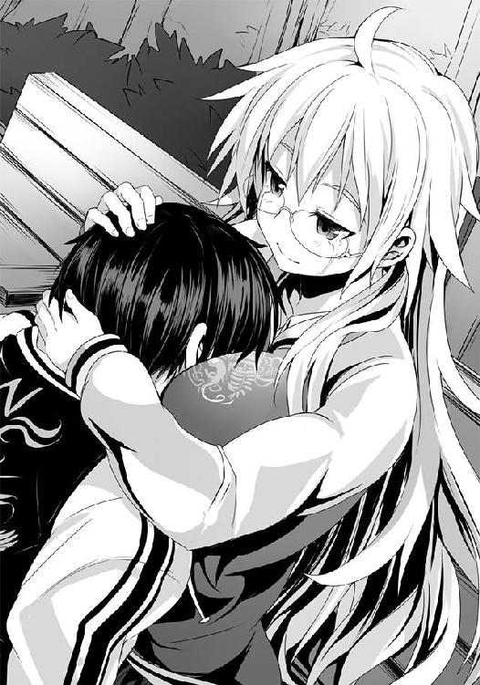
「きっと勝っても負けてもお前には辛い未来しかない。でも、それでいいんだよな、佐藤」
僕は彼女の胸の中で、頷いた。すると彼女は、わかった、と優しく口にする。そして「行ってこい佐藤」と言葉を続けた。ギュッと力強く僕を抱きしめながら。
「一生懸命戦って、いっぱい傷ついて......そしてまた、帰っておいで。待ってるから」
温かくて、柔らかくて、優しい......そんな著莪の言葉だった。
その時、僕の首筋に温かな何かが溢れ落ちたのを、感じる。
腕が解かれる。僕が瞼を開くよりも先に、著莪は僕の脇を抜け、歩いていく。その背を見やるも......彼女は振り返らず、スーパーとは違う方向へと歩いていく。
僕は彼女を見やりながら、首筋に手をやると......透明な雫が、指先にちょっとだけついた。
いろんな感情の果てに......背中を押してもらった、そんな、気がする。
「......著莪、行ってくるよ」
その雫を握り締めると、腹に力を入れ、僕もまた......彼女へ背を向け、独り歩きだす。
――さぁ、行こう。
この一歩一歩が、僕の道だ。愚かな道。スーパーへ、そして狼としての勝利、男としての敗北へ続く道。いいじゃないか。最高だ。誰もが行きたがらないこの愚道。進んでやろうじゃないか。雄々しく、猛々しく、誇らしく、胸を張り、毅然と駆け抜けてやる。
バカだと笑え。愚かだとなじれ。それがどうした。構うものか。
これが僕だ。これが、僕の生き方だ。
一番好きな人の涙を止められるのなら、僕はこの足を止めはしない。
愚かであることを厭わない。
突き進み、そして最強だと驕る天才をぶちのめし......そして、僕の哀れな恋に終止符を打ってやる。僕の手で、自らの拳で、色濃いピリオドを叩きつけてやる。
そして......最高の半額弁当を喰らうのだ。
世界で一番濃厚な勝利の一味が入った半額弁当、それを味わうのだ。
雫を握り締めた手は力が漲る。体にやる気が湧いてくる。進む足が速くなる。
さぁ行こう。スーパーへ。
友が、仲間が、敵が、弁当が......僕を、待っている。
●
ムートンブーツが浅く積もった雪と、解けて固まった氷をシャクシャクとかき氷でも食べるような音をたててかき分けていく。この季節ともなればさしたる雪はないが、それでも地面から白い化粧が消えるのはもう幾ばくかかかる。
もうすぐ、この感覚ともお別れだった。長い冬が終わるからではない。
春からは実家を出て、関東での生活だ。そうそう気軽には戻ってこられないだろう。
薄暗い田舎道。その先に見えてくるのは、煌々とした光を放つスーパーマーケット。その入り口の脇に、佇む長身の影があった。それは南の空を見上げたまま、白い息を吐く。
「あ......大厄の闘牛士。来てたんですね」
その長身の男は彼女――禊萩真希乃を見てくる。
「久しいな、ギリー・ドゥー。......あぁ、今日ばかりはこの店にしようと決めていた。約束を交わした、この店で」
「......今夜、ですもんね」
「あぁ。本当は対決の場に行くべきなのかもしれない。だが、俺はかの黒妖犬に託したんだ。そうした以上は、信じ、ただ、この地で祈るべきだと思った」
「わかります。あたしも......そうですから」
そう言って真希乃は笑う。大厄の闘牛士こと、秋鹿雅もまた、笑い返してくれる。
もうすぐ全てが終わり、全てが変わる。そう美しい声で闇夜の中より現れたのは、以前よりもやや太ってもう肥満体になっていた『東北のカナリア』だ。
「おや？ これはいい。僕であの夜の役者は、当のカペルスウェイトを除いて全員揃ったというわけだね」
カナリアは秋鹿と共に空を見上げる。南。きっと彼らの目には、希望を託した少年が最強に挑まんとするジジ様のスーパーが見えているのだろう。
真希乃もまた、いまだ見ぬそのスーパーを思い遣りながら空を見やった。
「......でも、全員じゃないです。争奪戦の最後に来た人、覚えてます？」
秋鹿は首を振るも、言ってから真希乃は彼が気を失っていたことを思い出した。
秋鹿の代わりにカナリアがポンと手を叩く。――あの変態か、と。
「そうです。あの人、佐藤さんのところに向かったみたいです。きっと自分が必要になるはずだから、って」
「......ヒーローショウ以外でアレが役に立つ時なんかがあるのかい......？」
言われてみて真希乃は考えてみるものの......確かに、何の意味があるのだろう？ 狼としての実力は正直なところ、並である。ヘタに加勢しようとすれば足手まといになるのは目に見えている。きっと、激励だろう。真希乃はそう思うことにした。
「......おっと、さらに追加ゲストのおでましだね」
カナリアがどこぞに視線を向けていると、少量とはいえいまだ雪が積もっているというのに、赤いカブがこちらに向かって走ってくるのが見えた。サラマンダーだ。秋鹿が鼻で笑う。
「何だ、火トカゲ。てっきり関東に下っていると思っていた」
停車したカブに跨ったまま、赤いヘルメットを脱ぐと、その下から燃えるような真っ赤な髪が現れる。押し潰されていたそれをサラマンダーは指先で摘まむようにして尖らせていった。
「オレが行って、カペルスウェイトの見せ場を奪っちゃマズイだろ？」
サラマンダーの本気とも冗談とも取れない台詞に、秋鹿たちは笑った。
「何にせよ、今宵を境に一つの時代が終わる」
カナリアもまた空を見上げながら、綺麗な声で詠うように言葉を紡いでいく。
「そしてまた、新たな歴史が綴られる。最強の枕詞を持つ者が誰になるにせよ、最強の名が失せるにせよ......」
決まっている。そう言って秋鹿は己の拳を握り締め、それを高々と掲げた。
「奴は化けてくれるさ。最強の狼へ。最強を越える次の最強の存在へ。そして希望の光に」
真希乃はその言葉に頷いた。秋鹿のその言葉を、何の疑いもなく信じられる自分が、好ましかった。
「はい、佐藤さんは勝ちます。きっと」
三人は南の空を見上げた。星々が美しく瞬き、細い月が笑っているかのようだった。
この空の果て。同じ星々の下、今、最強を打倒せんとする無数の狼が一つの店に集結しつつあるはずだ。魔導士の最後の戦いを観戦するため、奴を越えるため、半額弁当を獲るため......そして、スーパーの希望になるために。今宵、ついに――決戦の幕が開く。
●
三輪バイクのエンジンが唸りを上げ続けている。だが、アクセルを開ける手を彼は緩めなかった。峠を越す際、季節外れの吹雪に巻き込まれたせいで、かなりの遅れが出ているのだ。
「家での判断が功を奏したな。念には念を入れて良かったぜ」
彼はチラリと己の手首を見やる。手袋とスーツの袖、その隙間からは赤いラバー感のある素材が顔を出していた。そう、彼――企業戦士サラリーマン・レッドはすでに変身済みなのだ。
彼はこれからの予定を書いたメモ帳を懐から取り出し、運転しながらそれを見やる。
スーパーに到着して一匹のサラリーマン狼として対魔導士戦に乱入。かの少年がピンチに陥るであろうから、そこで颯爽と自分が介入、そこで周りが圧倒的なその力に驚愕する中......ネクタイを緩め、スーツを脱ぎ捨てる。さすれば弱きを助け悪を挫く正義のヒーローの惨状だ！
「おっと、まずい。参上の漢字が間違っているな。......まぁ、別に誰が見るわけでもなし」
レッドはメモ帳を懐にしまいこむと、運転に集中する。彼の愛車である、スーパーレッドファイヤーフェニックス参号に備えられている人工知能......という体にして取り付けているスマートフォンのナビ情報を確認。女の子ボイスが、すでに目的地に近いことを知らせてくれる。
「ジュリア、こちらレッド、了解した。心が燃えてきたぜ！」
なお、ジュリアはレッドが心の中で名付けた女の子ボイスの名前である。当然、そんなナビゲーションアプリでもなければ、声を当てた声優の名前でもなかった。
辺りを見渡せば田舎道だった風景も、すでに都会のそれになっている。すれ違う車から、そして歩道を行く人々からの視線も増えている。
隣を走っている貸し切りバスの窓からは部活の大会か何かの帰りらしい少年少女たちが幾人もテンション高くこちらを見やっていた。中にはスマホで写真を撮る者も少なくない。
当然だ、とレッドは思う。何せこのスーパーレッドファイヤーフェニックス参号は、原型を止めない程に外観をカスタムし、燃える炎をイメージした赤と黄色で飾りつけた最高にカッコイイマシンなのだ。しかも黄色の部分には高価な蓄光塗料を使用しているので外灯の当たらない薄暗い場所ではボンヤリと光を放つクールさだ。さらに、それに乗るのは黒髪とネクタイ、そしてスーツの胸ポケットには赤いハンカチーフが靡いている企業戦士サラリーマンである。これほどまでにカッコイイという言葉を具現化した存在など、そうはいない。
やはり都会はいい。北国ではさすがに三月とはいえ、防寒具なしで夜に走ると奇異の目で見られるが、関東ならそんな偏見がないのもいい。田舎者にはスーツの下にラバー的な変身スーツを着るとどれほど蒸れて暑いのか、理解出来ないのだ。
レッドは時計を見やる。少々まずいかもしれない。噂で聞いた半値印証時刻までもう幾ばくもない。しかしこのままでは制限速度を少々超えるが......えぇい、やむを得まい。子供たちの前だが......いや、子供たちの前だからこそ、時にはルールを無視してでも正義を成し遂げることの義務の重さを教えるために、ここは速度を上げるべきかもしれない。最近のヒーローものでも、そういうダークなところに踏み込みつつある。自分もまたそれを見習おう。
レッドは指を二本立て、子供たちにウィンクしながら敬礼のように手を振る。子供たちの口が「ヤベー！」「超ヤベー！」と言うように動き、バスの中のテンションはさらにアップする。
レッドは良い気分でさらにアクセルを開け、速度を上げる。守るべきは法よりも正義なのだ。耳を澄ませばあの少年の助けを求める声がある。
「今行くぞ、少年。ヒーローは少し遅れるかもしれないが、それまで持ち堪えてくれ......!!」
企業戦士サラリーマン・レッドは愛車を走らせながら行く先を見やる。
彼の目はすでに捉えていた。カッコイイ未来の自分の姿、そして――。
「......なん......だと......？」
――そして、すれ違ったトラックに引きずられている少女の姿を。
レッドは思わず振り返った。今、コンテナトラックの後部バンパーに青い縞々のマフラーが引っかかり、そのまま西部劇の拷問よろしく、引きずられている猫耳帽子を被った小さな女の子を見た気がした。......いや、見たはずだ。
幼少期よりテレビに齧りついて育ってきたとはいえ、田舎育ちのせいか視力が大人になった今でも両目共に２・０のレッドである。素早いアクションシーンを繰り返し見たことで鍛えられた動体視力を有する彼である。見間違えるはずがない。間違いなく、トラックに女の子が引きずられていた。しかも、笑顔で。うっすら風切り音に混じって「あれぇ〜？ ここってどこだろ〜、北区かなぁ〜？」という間延びした声まで聞こえたほどだ。
「まさか、そんな......事故だというのか!? 運転手はあの様子じゃ気付いているわけがない......だ、だが、俺が行かなければ少年は......!!」
レッドは悩んだ。少年のために今こうして東北の地より愛車をぶっ飛ばしてやってきた。だが、自分が行かなくとも少年は死にはしないだろう。しかし、あのトラックに引きずられている女の子はごく普通に、リアルに危ない。だが、自分を慕い、背中を見て育っているあの少年の期待を......助けを求める声を......裏切っていいのか......？
あぁ、聞こえる。自分を呼ぶ二つの声が！ 少年と少女の声！ 助けて、企業戦士サラリーマン！ 助けて、レッド!! あぁ、あぁ、あぁー!!
レッドはハンドルを放して頭を抱えたくなる衝動に駆られるも、さすがにそれこそ事故を起こすので堪えた。
「......まさかこんな選択肢を突き付けられるとはな。神様も酷なことをしてくれるぜ」
レッドはそっと人工知能ジュリア......スマホに手を伸ばした。
「ジュリア、目的地を変更する！ さっきのすれ違ったトラックを追うぜ!!」
【音声が認識出来ません。もう一度、目的地をお告げください】
「心配するな、ジュリア、少年なら大丈夫だ。アイツなら......きっと、もう、一人で戦える！ ......そうか、わかったぞ!! きっと俺はそれを奴に告げようと思ってこの地に来たに違いない!! ジュリア、ハイパー時空通信でアイツに伝えてくれ。もう俺に頼る時間は終わりだ。もうお前は自分の足で立てる。その心と力は与えた。立ち上がれ、自らの足で！ 戦え、自らの拳で！ その時、お前もまた一人の男に......いや、新たなるヒーローになるんだ!!」
【音声が認識出来ません。もう一度、目的地をお告げください】
「以上通信終わり！ 行くぜ、スーパーレッドファイヤーフェニックス参号！ 少女を救いに発進だ!! ジュリア、曲をかけろ!!」
【エラーです。音声ガイドを終了します】
レッドは愛車のスピーカーに接続されているＭＰ３プレイヤーのボタンを自分で押す。カスタム内容を発注する際に勢いで取り付けたものの、世間の迷惑になるとして使うのは車庫で整備する時だけだった大型スピーカーが唸りを上げる。曲は当然『JAM Project』のメドレーだ。
ブレーキと共にハンドルを切り、後輪を滑らせ、トライクを対向車線へ。アクセル全開。燃え上がるような熱い曲に合わせるように、エンジンが唸る。
先ほどすれ違ったトラックを追う。少女を救うために。
――誰かを救う。そう、それこそがヒーローの最大の目的だ。子供たちの夢を守り、正義を伝え、そして豊かな社会を育むのがヒーローの務め。とはいえ――どうせなら、女の子がいい。
それは誰もが思っているに違いない。男ならば、絶対的に女の子を救いたい。
きっと、あの少年だってわかってくれるはずだ。いや、彼ならばわかる！ むしろ彼もまたいずれ言うに違いない！ ――どうせなら、女の子がいい、と!! だから、これでいいのだ!!
「見えてきたぜ！」
トラックが、そして引きずられながらも「あぅ〜」と唸りながらも微笑んでいる少女が見えてくる。レッドはネクタイを解き、上着を脱ぎ捨てた。
「少女よ、今、助ける！ この企業戦士サラリーマン・レッドが君を救う!!」
世界を震わせんばかりの爆音でホットなミュージックを鳴り響かせながら、レッドは走る、走る、走り続ける――!!
●
・【速報】 変質者の無謀な大暴走？
午後八時半頃、街中を走っていたトラックにトライク（三輪バイク）が接触。その後、トライクはコントロールを失い、近くの廃屋に突っ込む事故が発生した。
軽傷を負ったトライクの運転手の男はヒーローショウ用と思しきおかしな格好をしており、「自分は正義の味方」「少女を救うために」とわけのわからないことを繰り返していたことから、薬物使用の疑いがあり、現在血液検査の結果を待ちつつ、警察署内にて取り調べを受けている。なお、事故現場近くを歩いていた少女にインタビューしたところによるとトラックが信号で止まろうとブレーキをかけた際に恐らく法定速度を無視していたであろうトライクがぶつかってきたとのこと。また、少女はその際に首に巻いていたマフラーが破れたとのことで、危うく人身事故になりかけていた模様。
今回の事件についてオタク心理に詳しい丸富大学社会心理学部部長ハインケル・加藤博士に意見を求めたところ、これは現代社会における極めて大きな問題の一端に過ぎないとし、事故ではなく今の時代が抱える闇が生み出した社会的事件として取り扱うべきではないかと述べた。
――集英通信ＷＥＢ版より一部抜粋
○
三月の夜風は、冷たく、春を遠くに感じさせる。それでも、僕の体は震えたりはしなかった。
人は道を見据えると、こんなにも悠然と歩み行くことが出来るものなのか。
この道が敗北しかない、自らの愚かさを証明するものでしかないのだとしても、己が望み、選び抜き......そして、多分世界で一番信頼している相手――著莪に背を押してもらって進むこの道は、今やその一歩一歩が誇らしかった。
もはや何も恥じることはない。当たり前のように胸を張ればいいんだ。
だから、行こう。
この愚道をひた駆けよう。何よりも、誰よりも、雄々しく、あの、セガのように。
僕は一軒のスーパーマーケットの前の駐車場で立ち止まり、それを見上げた。
煌々とライトアップされている店。ジジ様が君臨する戦いの野。決戦の場。
その自動ドアと僕を結ぶ直線の上に、白いニット帽を被り、同色のコートを揺らす白梅。そして、まるで狛犬のように、自動ドアの両脇に立つのはチェック柄のポンチョを纏うオルトロス。響いてくるバイクの音。それは駐車場に入ると共に失せ、一人の男がヘルメットを脱ぐ。二階堂。彼は僕の背後からゆっくりと手袋を脱ぎつつ、歩み寄る。
「これで」鏡の言葉を梗が続ける。「揃いましたわね」
一陣の風。揺れる髪と上着。でも、この中の誰一人として心を揺らすものはいない。
「いい顔をしていますね、佐藤君。決心はついたという感じですか」
白梅が店に背を向け、僕へと向かってくる。
「今が約束の刻です。己が役目を果たしてくれますね」
僕は頷き、あの時の言葉をそのまま口にする。
「魔導士は、僕が倒す」
白梅が満足げに、そして優しげに、まるで眩しいものでも見るかのように僕を見つめて頷いてくれるのが、自分でも驚くほどに嬉しかった。
「あら、佐藤さん。それはずるいですわ。......かの最強は、わたくしたちが倒しますわよ」
梗もまた微笑みながら言うと、鏡はいつもの疲れた顔で頷き、二階堂は鼻で小さく笑った。
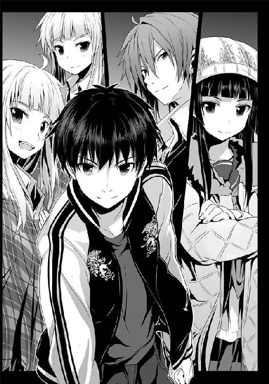
白梅の足は止まらず、僕の脇を抜け、そのまま歩き続けていく。
「店には寄っていかないのか？」
二階堂の言葉に、白梅は振り向きざま、そのサラリとした黒髪を後ろ手に払いながら微笑む。僕を、見つめながら。
「生憎と狼ではありませんので。後のことは、あなたたちと佐藤君にお任せします。......わたしは、少々やることが出来てしまいましたし」
白粉のとこか？ と僕が尋ねるも、白梅はらしくもなく曖昧な表情を浮かべただけで視線を僕から逸らし、その細い背中を見せるばかり。
多分、当たっているのだろう。白粉は薬物で散らすことにしたものの、薬の効きが悪かったらしく、結局手術になってしまい、いまだ入院中なのだ。
「佐藤君。ご存じないかもしれませんが、わたしは......ハッピーエンドが好きですよ」
何のこっちゃ？ と思ったものの、その真意を尋ねる前に白梅は夜の帳の向こうへと姿を消したのだった。
「んもぅ、白梅さんったら、ちょっと冷たいですわね。ついに決戦だというのに、応援してくださっても良いでしょうに。折角寒い中、ずっと待っていらしたのに、佐藤さんが来たらすぐ行ってしまうなんて」
「でも姉さん......何だかとても優しげな顔をしていたように見えましたけれど」
「きっと、それぞれの役割を理解しているんだと思う。大人なんだ、白梅の奴。ここにいても自分に出来ることはない、だから、いなくてもいい。......きっと、そう思ったんだと思う。それより......ん？」
スマホが震えていた。見てみれば......著莪からだ。タイトルは『言い忘れ』。
『魔導士は倒せるよ。気がついたんだ。アタシとお前は倒せる素養をすでに持っているって。得意と苦手、逆に考えろ。勝てるよ、きっと。佐藤、頑張れよ』
何だよ、アイツ。本当に......最高だな、まったく。あんだけバカだのなんだの言っておいて、最後は応援してくれて......そして、こんなまた......ったく。
次会ったら思いっきりおっぱいでも揉みしだいてやる。
何か返信しようと思ったけれど、モニター隅の時刻を見やると少々危うかったので、やむを得ず諦めた。
「そろそろ僕らも行こう。半値印証時刻が近い」
二階堂が横に来たのに合わせるように、僕もまた止めていた歩みを再開させる。迫る自動ドア。異界の門。この世界とこの世ならざる世界とを区切る透明な壁。伝承では、これを守っているのは地獄の番犬たるケルベロスだけれど、今宵はその兄弟であるオルトロスである。
「みなさん、勝ちますわよ。そして、今宵もまた共に夕餉を......ね♪」
自動ドアを見やっていた僕の前に梗は顔を差し込み、そんなことを小憎らしく言ってくる。ほんのりと頬を朱に染めているのは、寒い中で僕らを待っていてくれたからだろうか。
僕は笑って頷き、二階堂を見やる。彼もまた、頷く。......そんな遣り取りだけで僕の心の中にあった悲しみも苦しみも、怯えも、固すぎた覚悟も、何もかもが......ただ、ただ、充足感へと変わっていく。彼ら彼女らと共に囲む夕餉の光景が頭に浮かぶ。腹の虫が、湧き上がる。
全てはこの日、この夜、その夕餉のため――。
思い浮かぶ槍水先輩の笑顔。何百何千回と見つめた彼女の顔。彼女と過ごした夜。
そして、あの言葉。
――お前なんて......大っ嫌いだ。
耳に生々しく残るその言葉も、今は、僕の心を苦しくしなかった。
今、全てを終わらせてみせますよ、先輩。そう胸の内に呟く。そして付け足した。この仲間たちと、共に......と。
「勝とう。そして、共に喰おう」
僕らは互いの視線を交わし合うと、四人並んで自動ドアの前に立つ。
誰からともなく、腹が鳴る。透明な扉が開き行く。溢れてくる生暖かい風。そして――荒れ狂う空気。斬り付けてくるほどに鋭利なとんでもない数の視線と気配。
それを浴びながらオルトロスはその手に吸い付けるようにしてカゴを装備。双頭の獣としての姿を現した。
店内には狼たちが溢れている。二〇、いや、三〇はいるんじゃないかという数だ。その全員が......研ぎ澄ませてきていやがる。
いち早く状況を察した梗は目を禍々しく見開いて口元に微笑みを浮かべ、二階堂は顎を引いて店内を睨み、鏡は平然としていた。
そして、僕は......思わず、笑う。何だか、楽しくなってきやがった。
こんなにも大勢の狼が集うなんて。坊主も顎髭も茶髪もウルフヘアも、そして当たり前のように彼女の近くにジョニーと退魔師も......みんな、いる。まるでパーティ会場だ。
半数は見知った狼、もう半数は今宵初めてか、恐らく一度か二度ぶつかっただけの狼だ。......お、あのボルゾイみたいな奴もいるってことは猟犬群もいるんじゃないか。フルコースか。
これから地獄になるのがはっきりとわかる店内を僕らは歩き行く。突き刺さるような視線の中、オルトロスがいち早く腹の虫の加護を引き出し始め、おどろおどろしいほどのそれを辺りに発する。......雑魚が、黙る。警戒の視線をなおも向けてくるのは、幾度かオルトロスと戦ったことがある連中か、二つ名持ちの連中だけだ。
オルトロスの気配に隠れるようにして、僕と二階堂は潜伏に徹した。とはいえ、受ける警戒の視線は変わらない。......それもそうか。オルトロスと共に入店し、彼女らの気迫を受けても平然としている時点で知らない狼からしてもその目に僕らは異様に映って......っていうか、二階堂はともかく、僕の場合は毛玉のせいで有名になっているのかな？
僕らは歩み行く。まずは緑美しく、吸い込む空気さえ清浄さを思わせる青果コーナーだ。一昔前のＪ―ＰＯＰをオフボーカルにして代わりにチープな電子音をメロディラインに編曲した店内ＢＧＭ。エアコン、そして冷蔵設備の立てる鈍い音。店内のざわめき。至るところで鳴り響く腹の音、緊迫した空気......。まさに戦場。店内のそこかしこが最前線。戦いの火ぶたが切って落とされたらどうなるのか......想像すらつかない。
「よぅ、気合いは十分そうだな、ワン公ども」
これはこれは！ と、梗がテンション高めに前に出る。顎髭、そして唾でも絞りだそうとしていたのか、彼の横に並んでレモンを見やっていた坊主が微笑んで軽く手を上げた。
オルトロスがあの『国産うなぎ弁当』の件以来、僕らと同様に顎髭たちを贔屓にしているのは、今も変わらない。尻尾があれば左右に叩きつけるように振っているのが目に見えるであろう梗はもちろんのこと、鏡もまた、懐かしい友人にあったような顔をしていた。
「そちらも十分気合いが入っておりますわね。わたくしたちとの戦いの夜を彷彿とさせますわ」
「当然だ。ここはオレたちの縄張りでもあるんだからな。......悪いが掻っ攫うぜ、あの弁当」
それは楽しみだ。足を止めず彼らの後ろを行く二階堂が、ニヒルに言う。
梗は自分の台詞を取られたと思ったのか、両手を拳にして胸の所まで持ち上げると「んもぅ！」とちょっと不満げに言っていた。鏡がため息。
......そんな彼女らが、何とも愛おしさすら感じるほどに、かわいらしかった。
僕らの前からおっぱいが――違う、巨乳を揺らす茶髪がやってくる。
「今夜が、最後ね。魔導士も、そして私も」
彼女が関西の大学に進学するために引っ越してしまうのは聞いていた。今の言葉からするに、恐らく......もう、すぐなのだろう。寂しさを覚えずにはいられない。おっぱいに。
......あぁ、そうだ、彼女には言っておかないといけないことがあったな。
僕はオルトロスと二階堂を先に行かせ、茶髪の前に立った。
「あのさ、一つお礼を言っておこうと思うんだ。......一年前にもらった言葉が、魔導士の力を探る大きなヒントになったよ。ありがとう」
一年前？ と、彼女は首を捻るものの......しばらくすると思い出したのか、あぁ、とその唇に笑みを浮かべて、胸の下で緩く腕を組む。......おっぱいが僕に向かって差し出されるようにして強調されたので、揉んでもいいということなのかと思い、ついつい手が伸び......いや、冗談ですよ、冗談。無意識に手を持ち上げた途端にペシッと茶髪に叩かれたけども......冗談だよ、ホントだよ？
「私だって伊達に長くこの魔導士の元縄張りたる店で奮闘していないわ。見直した？ ......でも、お礼は勝ってからでいいわ。魔導士に、そして私に......ね」
僕らは頷き合い、そして互いの健闘を祈りながら、別れた。オルトロスたちの後を追う。途中であのボルゾイが殺気の籠った視線を向けてきたので、流し目でいなしてやった。
以前までの僕ならともかく、今はまともに相手をしてやる気にはなれないし、ダンドーがいるのならまだしも、彼らだけでは相手になりもしないだろう。
総菜・弁当コーナーへ。アブラ神のそこに比べると幾分穏やかとはいえ、揚げ物をはじめとした総菜の匂いが漂う、僕らがこの後死に物狂いで走り込む場......なのだけれど、どうしたことか。オルトロスと二階堂が、立ち止まっていた。
どうした？ そんな声と共に彼らに並んでその顔を見やれば......全員が驚愕の顔のまま固まっていた。その視線の先にあるのは......三割引シールの貼られた弁当がいくつか。
ジジ様の店では大人気のスタミナ弁当シリーズが二個、定番の幕の内弁当、焼き肉弁当......。
そして――。
それを見た時、僕もまたオルトロスたちと同じように固まった。
何ら変哲のない、当たり前のようにして、棚の奥まった部分にまるで忘れ去られたようにして置かれている一つの三割引弁当。
何度も見た、何度も味わったはずのこの店の人気弁当......それなのに......何だ、コレは。
知っているはずなのに、知らない。初めて見る、そう思わせる何かがその弁当にはあった。
「サバの味噌煮弁当......【極み】......だと......。何だ、この弁当は。いつものジジ様が作る最高の弁当......そのはずなのに、僕の腹の虫が、おののいている......!?」
頭ではない、腹が、驚愕しているのだ。何せ見た目には【極み】と値札にあるだけで、いつものそれと同じサバの味噌煮弁当でしかないはずなのだ。強いて言えばいつもは厚さ五ミリ程度の薄い玉子焼きとカマボコが、今回は一センチ以上になっていたり、ご飯の盛りが少々良くなっていたりするぐらいなもの。全然普通なのだ。
御飯、その上に均等に振りかけられたゴマ、柴漬け、玉子焼きとカマボコのゴールデンコンビ、少量の煮物......そして、サバの味噌煮。ややデカイ......？ 肉厚だ。そして客側に見せられている皮は煮込まれていながらもなお、日本刀のように美しい光沢を放っている。
普通だ、いや、もちろん普段からジジ様の店の弁当は全てが神がかっているのだけれど......それと同じもののはず。なのに、何故こんなにも腹の虫が過敏に反応しているのだろう。
わからない。頭では。だが......腹は、理解している。間違いないと確信している。自分を含めた世界の全てが虚偽であったとしても......それだけは間違いないと言い切れるほどに、腹は、腹の虫はわかっている。
――あの弁当は、おぞましいほどに、うまい。そして、確実に月桂冠になる、と。
空腹を思わず忘れるほどの衝撃に、僕は落ち着けと、己に言い聞かせる。恐らくずば抜けたことはしていないのだ。多分ちょっといつもより脂ののった大きめのいいサバを使用し、それに合わせて御飯も増量。バランスを合わせるためにか、それとも贅沢感を与えるためか玉子焼きとカマボコを増量させ......いや、それだけじゃないな。クソッ、目を凝らせ、ヨー・サトウ！ 真実は、目の前にあるんだ！
そうだ、サバの味噌煮もいつもとは少し違う。サバが違うだけじゃない。......そうか、よく見ればサバの身の上に、煮汁に入れたのとは別に、千切り生姜が散らされている。薬味の意味合いだ。そして、味噌煮ゾーンの片隅には庶民的な弁当コーナーではまず見かけることのない大きな梅干しが味噌の煮汁の中にある。サバの骨を柔らかくするために梅干しをサバ味噌には入れるものだが......あんな高価そうな梅干しをぶっ込んだとはな。形をとどめたものをあえて添えるということは、梅干しそのものが柔らかくする目的以上に、一つの具として成り立つほどのものであると言っているようなものだ。
そして何より驚くべきは、やはりそのサバの身か。大きな身のクセして、そのサバの薄い皮はほとんど破れていないという、信じられない丁寧な仕事をしている。グツグツと煮込まず、静かに時間を掛けて味を染みこませたのだと、見ただけで知れた。
腹の虫がおののく理由が何となく見えてくる。恐らく材料が多少豪華になったとはいえ、基本は今まで通りのジジ様のサバの味噌煮弁当なのだ。......だが、そのちょっとした＋αの積み重ねによって、ただでさえ月桂冠に至るのが当然のサバの味噌煮弁当が、さらなる上位の存在へと昇華している。そして、世界的にトップクラスに入るであろうこの店のサバの味噌煮弁当を過去に幾度も食べた身からすると......何とはなしに、その味が想像出来る。
それが......そのイメージが、僕の、腹の虫を刺激する――!!
あのほっくりとした身、パサつきも硬さもない、脂と煮汁のバランスが実に素晴らしくサバの身を包んでいたあの弁当......それを、さらに越える弁当。日本人にとって幸せの代名詞たるお米を、あの味噌という味わいで、青魚という素晴らしき食材で、そして神たる職人たちの技によって為された調理......そして、最後に振りかけられる勝利の一味。最強の打破という、恐らく最高難易度にして最大級の勝利の一味......それが最後に加わるであろうこの弁当......。
食べたい。この弁当を貪り喰いたい。その叫びにも似た渇望が腹の中で爆発する。腹の虫の加護。それは腹から体へ、そして肌を突き破るようにして店内に放たれる。それに呼応するように二階堂、そして今まで以上の気迫をオルトロスは発する。......だが、あのサバの味噌味をよく知る僕に比べると、その爆発力は若干低いようだった。
幾度となく口にした僕だからこそ、この弁当の真の凄さがわかるのだ。この一年、アブラ神とこのジジ様の店を縄張りとしてきたからこそ、この地に根を下ろし、かつ他の地域の弁当をも味わい比較してきたからこそ――ＨＰ同好会のメンバーとして戦ってきたからこそ、この弁当の本当の価値が理解出来る。
思えば、このサバの味噌煮という弁当が、全ての始まりだったのだ。
槍水先輩と出会ったのはアブラ神の店。けれど、魔導士に出会い、彼から狼とは何たるかを学び、そして......槍水先輩と初めて夕餉を共にし、彼女に心奪われたのは、全てこのサバの味噌煮という弁当が切っ掛けだった。
僕の初めての半額弁当、初めての月桂冠、初めての......勝利の一味。
それが今宵出るということに、少なからずの運命を感じるのは自意識過剰だろうか？ 全ての始まりにして、全ての終わりを告げるサバの味噌煮。
今宵、この弁当に勝利の一味を加え、口にする。僕はそれを運命だと自らに告げ、その遂行を絶対の約束として己に課す。
「行こう。いつまでもここで弁当に見とれていては狼として褒められたものじゃないはずだ」
僕は二階堂に肩を叩かれ、そしてオルトロスを引き連れて適当な島棚の前へと移動する。するとそれとなく黄色いジャケットを羽織り、フードまで被ったウっちゃんが当たり前のように近寄ってきて、僕らの中に交じった。
「ほら、佐藤くんももっと体を寄せて......私を隠して」
俯きながら小声で言う彼女に、僕らは訝しげな視線を向けるものの......あぁ、なるほどね。ジョニーが凄まじい形相で棚の陰からウっちゃん......というか、僕を見ていやがる。
「何かさ、最強はオレがもらう、オレこそがこの世界に君臨する王となるとか何とか......離れてもすぐに寄ってきてはそんなこと言ってきて、もう怖くて......」
そりゃマッチョな大学生が一六歳の女の子に夢を語りながら近づいてきたら怖いよな。
フードを被っているせいか、スーパーではいつもツンツンとしている彼女のウルフヘアも、今はその心情を表すようにシュンと元気がなかった。試しに彼女の前髪の一房をつまみ、いつもの高さにまで持ち上げてみるも、ふにゃ......とまたすぐ萎れてしまった。
「......マイ・スゥイート・ハニー・エンジェル・ガールの髪に......髪に触れ......オ、オレでさえ残り香しか......!! ぶち殺すぞ、あの変態野郎......!!」
ジョニーが歯ぎしりするようにして小さな声でそう漏らすのだけれど......いや怖いよ、いろんな意味で。何だよＭＳＨＡＧって。ウっちゃんの名前、どんどん進化してるぞ。もういっそマイクロソフトでも抱きしめてろよ。......あ、ハグはＨＵＧか。クソッ!! 今、うまいこと言えたと思ったのに!! 何だこの悔しさは!!
「......姉さん、慌ててアホ毛を寝かせるのはやめてください。見ていて哀れです」
「な、なななな何のことですの!? わ、わたくしはただ、ちょっと、その......」
そう言いつつ、何とはなしに梗が僕に頭を寄せてくるのだけれど......その動きはピタリと唐突に止まった。僕もまた彼女の頭に伸ばしかけていた手が完全に止まる。いや、完全じゃあない。......指先が、震え始めやがった。
冗談みたいに、世界が変わっていた。さっきまであったパーティ会場のようなざわめき、無数の思惑が絡み合って生まれる緊迫した空気、スーパーには普遍的に存在する楽しげな雰囲気......それら全てが、消え失せたのだ。店内ＢＧＭが明瞭過ぎるほどクリアに聞こえ、寒気を生むほどだった。店内の狼全員が、固まっていた。いきなり後頭部に銃口を押しつけられたような、喉にナイフを這わされたような......頭よりも先に体が、本能が、理解するあの感じだった。――ヤバい、と。
誰もが目を見開き、幾人かは僕のように指先......いや、ウっちゃんに至っては膝を震わせるほどに驚愕している。棚から顔を半分だけ出していたジョニーでさえ、その視線はもう僕にもウっちゃんにも向けておらず、見開いた目の焦点が定まっていない有様だ。
「......来たか」
僕は梗に伸ばしかけていた手を、その震える指先を押さえ込むようにして、握る。
震えを、止める。そして、ゆっくりと白色灯が眩しい天井を見上げ、瞼を閉じた。
己と腹の虫に問う。勝てるか、この脅威に。これほどまでにおぞましげに仕上げてきた最強に。答えは返ってこない。それで、いい。十分だ。誰よりも強い、だからこそ最強と名乗れる男を前に、勝てないと言わない己があるだけで、十分だ。
わからないってことは、即ち勝てる要素を含んでいる。ならば、上出来だ。
何も思うまい。ただただ空腹を想う。そしてあのサバの味噌煮弁当【極み】の見事さだけを、想う。それだけで、この逃げ出したくなるような圧倒的な静寂の中でも、震えはしなくなる。
店内中の狼が一斉にエントランスを見やるのを気配で感じる。それに数秒遅れて、僕もまた、ゆっくりと瞼を開き、そちらを見やった。自動ドアが開き、まず現れたのヒョロリとした長身ながら酷い猫背のアフロ頭――毛玉。彼が店内に歩みを進めてきて、その後方で一度自動ドアは閉まり......そして、再び開いた時、誰もが思う。化け物、と。
奴が店内に足を踏み入れる。ショートブーツが静かに、そして確かな音を立てていく。ファーの付いたコートを揺らしながら、革の手袋を装着しつつ、ゆっくりと。静寂......いや、粛然を極めたかのような店内を、三〇を越える狼たちの視線の中を、平然と。
彼、最強の狼である魔導士は弁当コーナーへ向かう途中、僕を見る。僕もまた、彼を見る。
発する気は以前のそれをはるかに上回るものであり、かつ、おぞましさを多量に含んでいるが......その原因は顔を見ればすぐにわかった。
「魔導士の奴、この数日、水と塩、そしてお情け程度のビタミン剤しか摂取してねぇんだ」
当たり前のように僕らのもとへやってきた毛玉が言う。
彼曰く、本当は客観的に展開を見ているつもりだったらしいのだが、魔導士がいつ倒れてもおかしくない有様だったので、昨日から付きっきりだったらしい。
魔導士の頬は痩け、長身痩躯だった彼の体はさらに細く、小さくなったかのようだ。そしてそうであるからこそ、彼の目は大きく見え、邪気を含むかのようなものになっていた。
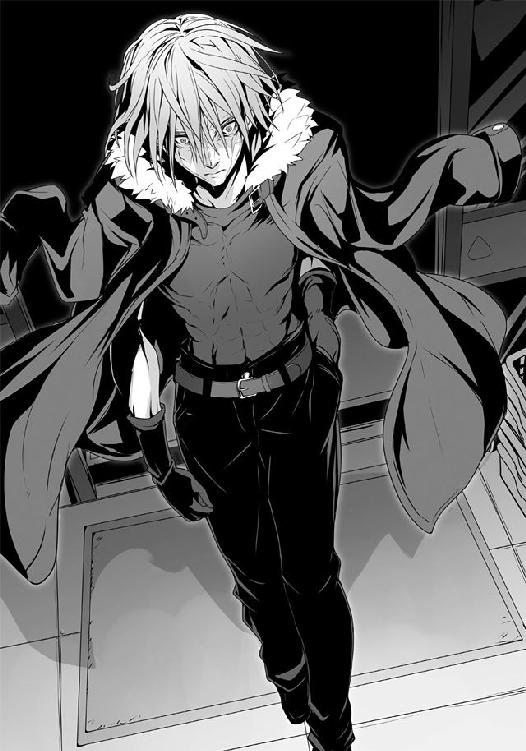
魔導士は僕らの横を素通りし、店内最奥に到達。その瞬間、粛然とした店内に、まるで嵐が吹き荒れたかのような......いや、津波と錯覚するほどの気迫が僕らを襲う。魔導士が飼っている腹の虫の雄叫びだ。ウっちゃんに至っては腰を抜かしそうになっていて、毛玉が慌てて支えたほどである。
「魔導士の奴、今でこそしっかり歩いちゃいるが、日が暮れるまでは重病人か、それ以下だったんだぜ」
「......そうか、全てを捨ててきたあの男は......もう、命すらも捨てようってのか」
「光栄に思いますわ。わたくしたちとの今宵のために、そこまでしていただける。......感謝。彼に、そしてそんな彼を打倒して食べる半額弁当を与えられるこの幸福に」
魔導士の存在に押し潰されたような店内にあって、最初に反発するように気迫を発したのは、梗だった。彼女は目を見開き、禍々しさでもって魔導士の背、そして弁当コーナーを見やる。それに間髪をいれる間もなく鏡が、そして二階堂もまた気迫を発する。押し寄せてくる脅威の中に、屹然と逆らう。
僕はといえば、まだ、黙っていた。頭の中を転がる様々な思考。それらが絡み合い、わけのわからない固まりとなっていた。......それを、一つ一つを解いていく。
彼との思い出、槍水先輩との思い出、弁当の思い出......それらを解き、ただただ純粋に弁当への想いと、そして空腹だけを磨くようにして高めていく。
「どうだい、魔導士。こいつらよりまだ氷結の魔女の方がいいか？」
毛玉がいやらしげに笑って、訊いた。
「仙は諦めた。もう、それはいい。臆病者が喰らえる半額弁当などこの世にはない。......問題は佐藤お前だ。今宵は約束の刻だ。......だというのに貴様それで勝てると想っているのか？」
地を這うような低い声がすぐ近くに聞こえ、僕は瞼を開く。魔導士が目前にやってきていた。
彼は僕ではなく、僕らの周りにいるオルトロスと二階堂、あとついでに震えているウっちゃんを見やっている。
ＨＰ同好会を捨てた、仲間を離れた、だからこそあの夜、魔導士は僕に目をかけたのだ。けれど、僕はお前と同じ道は歩まないと宣告した。恐らく彼が言いたいのは......それだけ言っておきながら、その程度なのか、ということだろう。
......まだだ。あと少し。最後の引っかかりが、空腹を邪魔している。
「......魔導士。約束は、覚えているよな」
僕が勝てば槍水先輩の気持ちを受け入れる。その約束。腹の虫の加護こそが意味を持つこの場にあって、邪な約束だった。でも、それが重要だった。
彼はそのぎょろりとした目で僕を見据えながら、頷いた。
それで僕は安心して瞼を閉じた。彼のそれによって頭の中にあった固まりは失せた。もう余計なことは何もない。余計な気持ちは全て......一言に集約された。〝勝てばいい〟。
全ての難しいことも面倒なことも何もかもがそれで解決する。勝てば、いいのだ。半額弁当をこの手に獲り、それを喰えばいい。共に拳を叩き合わせる仲間たちと共に。
瞼を開く。目の前の魔導士、そして......その彼の背後にある弁当コーナー、そのサバの味噌煮弁当【極み】を、未来を、仲間と共に囲む夕餉を......僕は、見る。
あのとろみのある味噌を纏ったサバの身をご飯の上に乗せ、かっ喰らうイメージが頭に湧く。そしてうまいと仲間に告げ、微笑み合うその姿を......妄想ではなく、確かな未来として、僕はイメージする。
唾が湧く。腹が鳴る。それは獣の雄叫びのようにして店内に響き、それと共に気迫が噴き出た。二階堂が続くようにさらに気迫を発し、オルトロスもまたさらなる力を発揮する。
ウっちゃんが、尻餅をつきかけ、後ずさりするようにして僕らから離れていった。
そして僕らに刺激を受けたように、店内のいくつかの場所から同様の覇気が上がる。最初はシーリーコート、顎髭、坊主。さらに、さらに、さらに......。
「......これでもまだ、もの足りないんですの？」
梗が目を見開いたまま、口元に挑発的な笑みを浮かべた。
「これほどの群狼の中で、あなたがいつまで最強だと驕ってられるのか......楽しみですわ」
三〇を越える狼たちの、腹の虫が奏でる協奏曲。その中で魔導士が辺りを見渡しながら微笑んだ。化け物そのものの気迫と形相でありながら、その笑みはどこか子供のそれのようだった。
魔導士は笑顔のままで僕らから離れていく。そして、それを待っていたかのようにして......スタッフルームの扉が開いた。半額神、ジジ様が一礼と共に降臨する。
彼はいつものように、まずは精肉コーナーの陳列を正すところから始める。当たり前の、毎日繰り返される光景そのままに。だからこそ、この店内の異様な雰囲気が際立った。
もうすぐ戦いの幕が開く。全てに決着をつける決戦の幕が――。
精肉コーナーに続き、卵、飲料水、パン......そしていよいよ総菜、弁当コーナー。ジジ様はいつも通りの仕事として、総菜と弁当の位置を直していく。
彼はサバの味噌煮弁当を中心に、他の弁当を護衛の騎士かのように配置した。
これらの作業が終わった時、店内空気の張りは頂点を迎えた。
肌が痛む。鼓膜を押し込まれるような圧迫感。共鳴するように高鳴る腹の虫。
全ては今宵のため。この一年は、これから始まる争奪戦のため。今ならば、そう思えた。
三〇を越える異常な数が集った、この場で、この刻に、全てが決するのだ。
「......感じるか。今、オレやお前たちは伝説の中にいるんだ。これから生まれる伝説の......」
銀面のサングラスを外し、その意外に精悍な顔つきを晒しながら、毛玉が言った。
ジジ様は当たり前のように、荘厳さをもって半額シールを貼っていく。残されていた三つの弁当に。そして、最後のサバの味噌煮弁当【極み】には、違う台紙の半額シール......ジジ様の店の月桂冠シール。それを、サラリと、今まで以上に当たり前に貼った。
あの弁当は見ている側にとっても、実に当たり前に、月桂冠となったのだった。
「この場の、この瞬間、最強の枕詞を巡る歴史の一ページが神の手によって綴られている」
毛玉は感極まった顔でそんな大それたことを口にした。
俯き、腹の虫との対話に集中していた二階堂が顔を上げる。
「違うな。......それを綴るのは神じゃない。今この店にいるオレたちだ」
「その通りですわ。神に従って歩くだけなんて......そんなもの」梗の言葉を鏡が継ぐ。「狼の生き方として間違っています。我々は、自らの欲したものを自らの手で掴み獲る、その力を持つ者です」
思わず僕の口元に笑みが浮かぶ。その通りだ、と思った。少し前まで、僕もまた運命を感じてしまっていたというのに、だ。いや、運命の有無に関してはどうだっていい。あってもなくてもいいんだ。......少なくとも僕らは、その結末を自らの手で書き換えられるだけの力を持っている。そう、思えた。
この運命の結末はどうなるのだろう、そんなくだらないことを考える意味なんてないんだ。
たとえ悲劇しか生まない運命であったとしても、それらを自らの拳と腹の虫の加護、そして仲間たちと共に退けられるだけの力を僕らは持っているのだから。
「......いい言葉だぜ、元ボス犬とオルトロス。覚えておこう。お前たちの誰かが勝利を掴んだ暁には大いに語らせてもらおう。......さぁ、時間だぜ狼。狩りの時間だ。狼煙は上がり、戦いの野は口を開く。かつては騎士と謳われ、狼へと姿を変えた半額弁当を求めしバカどもの宴が、今――」
毛玉はサングラスを掛けると、弁当コーナーを離れるジジ様と同じようにゆっくりとした歩みで僕らの前から去っていった。
僕は二階堂、そしてオルトロスらと視線を交わし、自然と頷き合った。
ジジ様がスタッフルームの扉の前で踵を返す。そして、店内に向かって一礼。
「――では」鏡の言葉を梗が継ぐ。「戦場で」
ジジ様、後ずさりするようにしてスタッフルームの扉を開き、その向こうへ。その扉が――今、閉まる。パタンという、呆気ない、聞き慣れた音。それが火蓋を切って落とす音だった。
地鳴りが響く。もはやそれは文字通りに店を揺らす。大軍の突撃を思わせる踏み切り音。湧き起こる雄叫びと腹の虫の唸り。店内ＢＧＭが掻き消され、日常の中心たるスーパーマーケットは瞬時に戦場へと姿を変える。
この人数では速攻を狙えるわけもないが、それでもあえて、普段のスタンスを不利な状況でも貫かんとした細身の狼が数匹駆けていく。
いいな、嫌いじゃないぜ、そういうの！ 駆け始めた僕は彼らの姿に嬉しくなる。
どう考えたって無理だ、無茶だ、滅茶苦茶だ。だが、それでも己の生き方を貫こうとする姿勢は最高だ！ たとえ開始一秒と経たずにジョニーが放ったカゴによって半数が転倒させられ、残りもまたボルゾイ率いる猟犬群によって薙ぎ払われたとしても、彼らは輝いていた。少なくとも、僕にはそう見えた。
「僕も行くぞ!!」
前を走っていた二階堂の肩に飛び乗るようにして足を掛け、そこから一気にジャンプ。二階堂が僕の跳躍に合わせて体を伸ばす。そのちょっとしたことで、僕は一人では得られぬ上昇力を手に入れ、衝撃を生むほどの勢いで天井に着地する。そして同様に、カゴを手にする鏡もまた、やや離れた位置で天井に着地していた。
地上では乱戦が形成......というより、もはや弁当コーナー前だけではなく、至るところで戦闘が起こり、店内全てが乱戦という有様だ。
僕は最前線に向けて、鏡は地上の姉を援護するためにか、やや離れた場所へ向け、互いに天井を蹴る。
迫る名も知らぬ狼たち。彼らが展開する乱戦へ向け、僕は落下速度を加えた拳を放つ。――直撃。その一撃は狼数匹を薙ぎ払ってもなお、止まらずに地上に達した。
僕の、そして鏡のカゴの一撃によって店内二箇所にて同時に爆撃音にも似た衝撃を迸らせる。
店がさらに揺れた。衝撃波で乱戦の中だというのに僕の周りにエアポケットが生まれるも、それは瞬時に消失する。後方からの圧力に負けて僕の周りの狼たちが否応なしに押し込まれてくるのだ。迫るポニーテールの狼。彼女はヤケクソになりかけていた顔に気迫を昇らせ、勝機を見出さんとして僕に迫る。長い足による突き飛ばすような前蹴り。いわゆるヤクザキックだった。僕は腰を捻るようにしてそれをギリギリでかわしつつ、彼女との間合いを詰める。そしてその蹴りの膝を掴むと同時に、彼女の軸足へ足払いを掛けた。僕は膝をなおも掴んだまま転倒する彼女の上に覆い被さるようにして、その鳩尾へ、地面に押しつけるような掌底を放つ。
かわし、掴み、払い、そして打ち込む......全てを滑らかに、一連の動作としてポニーテールの狼へと喰らわせた僕は、すぐさま掴んでいた膝を放し、弁当コーナーへと顔を向ける。
そこに......殺気。左右から。同時――上下段!?
さすがにしまった、と思った。足払いとハイキックが同時に左右から来た。視界の端に映るその顔は、顎髭と坊主。僕は舌打ちしながらも坊主のハイキックを腕で受け、顎髭の足払いはあえてわざとこれ以上ないというほどに見事に喰らってやった。綺麗なまでに決まったそれによって僕の体は上下を逆にするようにしてその場で回転する。
空中で体を小さく縮め、頭が真下へ来た際に地面に向かって掌底を放つと共に、縮めていた両足を天井へ向けて大きく伸ばす。その靴底が狙っていたのは奴らの顎だ。
僕からのカウンターに、坊主は真上にぶっ飛び、顎髭はわざと腰が抜けたように後ろへ倒れ、これをかわす。足払いが決まりすぎたことに違和感を覚えて警戒されたか。
そしてもう一つしくじった、と思ったのが今の僕の状態である。二人の顎への蹴り上げを確実なものとして考えていたのだけれど、顎髭の分がかわされてしまったがために、蹴りの勢いを打ち消せなかったどころか、引っ張られてしまい、上下逆さまで万歳しているかのような有様で空中へフワッと浮いてしまった。当然、背も腹も......何もかも、無防備である。
顎髭が雄叫びを上げ、落としつつある腰――重心を下半身の力を頼りに押し上げつつ、強引ながら力のこもった掌底を放ってくる。思わず見事、と言いたくなるような彼の気合いに、僕は強烈な一撃を覚悟した。
だが、彼の掌底は僕の体をかすめるに終わる。掌底より先に、僕の体を後方から迫っていたモヒカンの狼が邪魔だとして蹴り飛ばしたのだ。その結果、彼は僕の代わりに脇腹に顎髭の渾身の掌底を喰らってしまい、悲鳴すら上げられずに数人の狼を巻き込んでぶっ飛んだ。あれでは息が詰まって地獄の苦しみをしばらく味わうことになるだろう。
僕は蹴りを受けたことで吹っ飛び、転倒。そこに狼たちが踏みつけようとしてくるので地面に掌底を放って素早く立ち上がった。
周囲の狼たちの密度が急激に増す。押しくらまんじゅうでもするような揉み合いに、かつて戦った《ナックラヴィー》を思い出すも......アイツはさすがに来ていなかったはずだ。だが、同じようなこの状況は面白くない。間合いが近すぎて技を放つも何もない、ただ、圧迫されるだけなのだ。僕は前後左右を見失い、どちらが弁当コーナーだったかもわからなくなった。
野太い雄叫びが聞こえる。退魔師......ということは、奴がやっているのか？ そして、もしそうならば奴の声がする方向が後方。反対が弁当陳列棚か。
僕はまるで泥の中を泳ぐような状態で、弁当を目指そうとしたがのだが、やはり、進めない。恐らく物理的に僕が入り込める余地がないのだろう。
正直、いい状況じゃない。弁当に手が届かないというのはともかくとしても、ここで体力を使いたくはなかった。必ず、魔導士が僕の前に立ちはだかるはずだ。奴をぶちのめす体力は絶対に残しておかなければならない。
「佐藤、上へ行け」
その声は二階堂。声からするに僕の目の前で抱き合うようにしている巨漢とパーマ頭の二人の男の向こう側。二人の間から手が生えてくる。見慣れた二階堂の手。僕はそれを掴み、互いに引き寄せ合うと共に、それぞれの体を巨漢とパーマの間にねじ込んでいく。
そして、お互いの顔が見えたと同時に、二階堂は重心を落とす。
巨漢とパーマの腹に両腕を当てると二人の間を強引に広げ始めた。まるで閉じた扉を力ずくで押し開こうとするかのような、それ。二階堂の歯を喰い縛った口から呻きが漏れる。巨漢とパーマも腕をねじ込まれ、体ごと押しやられて苦しいのだろう。彼らは呻き、そしてその元凶である二階堂を攻撃し始める。それでも、二階堂は力を緩めはしなかった。
そうして出来た、僕の周りのわずかばかりの隙間。二階堂が叫ぶ。行け、と。
僕は飛び上がった。人々の頭上へ。押しつけられている連中の肩や頭の上に足を載せ、辺りを見る。......そこに、彼はいた。コートを揺らし、当たり前のように、まるで空中に浮いているかのようにして人垣の上にて佇み、弁当コーナーを見やっている......魔導士。
僕もまた彼の視線の先へ目をやる。弁当陳列棚前。そこには相変わらずおいしいところにいるウっちゃんが呻きながら奮闘しているが、大勢が密着しているせいで腕だけの遣り取りが続いていて、あれではそう簡単には決定打が生まれそうにない。
......後でいい。恐らく魔導士もまた、それを察したので静かにしているのだ。
僕は人々の頭上を駆けた。迫る魔導士。だが、彼の脇を僕は抜ける。まずは、退魔師だ。
かの地のスーパーにあった特殊な造りではないがために、どうしているのかと思えば......なるほど、そういうことか。オルトロスとジョニー以外にもカゴ使いがいたのだ。
乱戦後方からは退魔師、そして二人のカゴ使いが左右から......即ち、三方から押し込んでいる。彼らが徒党を組んだのか、たまたま結果としてこうなったのかはわからない。だが、やるべきことにさしたる差はなかった。三つのうちの一つでも崩せれば簡単に圧力がそこから逃げ、この押しくらまんじゅう状態は瓦解するはずだ。
「佐藤さん！ 鏡と共に！」
梗の声。僕が進み行くすぐ近くで鏡、そして茶髪が飛び出すようにして人垣の上へと現れる。僕らは目配せすらすることなく、乱戦最後尾にいる退魔師へと飛んだ。
僕と茶髪が先行する。乱戦を飛び越し、両腕を広げて人々を押し込んでいる退魔師の背後へ着地。退魔師、素早く腰を落として内股、さらに両手を拳の形にして胸の高さに。全身防御。
「ふははははははっ!! この私の鉄壁の守りの前ではあなたたちが束になっても意味はなし！ 私の敵は最強だけなのですよ!!」
退魔師が僕らに背を見せた状態のまま、笑った。全身防御への絶対の自信。――だが、それがどうした。僕と茶髪は着地した際に曲げた膝をそのままに、退魔師の股の間にそれぞれ足を差し入れ、内から外へ、左右同時に足払いを仕掛ける。そしてまさにそのタイミングで鏡が上空から飛来。縁を握ったカゴを退魔師の頭上に被せるようにして叩きつけた。
さらにそこから飛び込んできた勢いと己の全体重をかけて、退魔師を仰向けになるよう引きずり倒しにかかる。足払い、そして頭上からの引き落としだ。これにはさすがの退魔師、そして彼の全身防御とて対応出来ず、巨像が倒れるようにして、背後へと倒れ行く。
退魔師からぶら下がっていた形の鏡が、彼の巨体の下敷きになりかかる。だが、茶髪――シーリーコートが鏡の襟首を引っ張るようにして救出。
どうも。鏡は茶髪の善意でピンチをギリギリで脱したというのに表情一つ変えず、いつもの冷静な顔のまま一言述べ......そして、茶髪の体を踏み台として、再び人垣の上へと飛んでいく。
「私たちも行かなきゃ。ここは氾濫する」
茶髪に促され、僕らは倒れた退魔師の全身防御が解かれるより先に彼を踏み台とし、鏡の後を追うようにして人垣の上へ。
だが、狼たちの頭上に着地しようとしても、それはまるで雪崩を打ったかのように次々に後方へと流れていく。ダムが決壊したように、弁当コーナー左右からのカゴ使いの圧力に押されるようにして、退魔師が担当していたエリアから人が押し出されていく。
状況が落ち着く前に地上に降りると流される。僕と茶髪は下りのエスカレータを駆け上ろうとするかのように、押し流される人々の上を全力で走った。
「......腹が減ったな」
地を這うような低い声。しかし、聞こえてきたのは僕らの頭上から。......天井である。魔導士。彼が、まるで魔法でも使ったかのように、天井に張り付いていた。
......違う、張り付いていたんじゃない。驚異的な跳躍力で天井に自らを叩きつけるようにして飛び上がったために、体のベクトルがいまだ上へ向いているのだ。
彼が、飛ぶ。地上へ。弁当陳列棚前。その狙いは......ウっちゃんだ！
目を見開き固まっている彼女に魔導士の拳が迫る。
だが、それが叩きつけられる直前、ウっちゃんと魔導士の間に、ジョニーが飛び込んだ。カゴで防御する間もなく、ただ、両手を広げて二人の間へ飛び込んだのだ。
鍛え上げた彼の体に、魔導士の拳が冗談のようにめり込む。
次の瞬間、爆発的な衝撃が店内に迸り、直接拳を喰らっていない周囲にいた狼たちさえもそれによって空中へ跳ね飛ばされた。そして、そうならなかった狼たちもまたその衝撃に薙ぎ払われたかのように地面を転がる。
そうして、数秒前までは人でいっぱいだったエリアはまさに爆心地という有様へと成り果てた。最強を目指す無数の狼たちが、放射状に吹き飛ばされ、倒れているウっちゃんとジョニーを除けば、弁当コーナー前にはただ一人の男が膝を突いてるだけ。
そして鳴り響く、化け物の咆哮のような腹の音。その痩せ細った体からは想像も出来ないほどに巨大で、おぞましく、そして力強いそれ。
その光景に、音に、誰も彼もが腰を抜かしたようにして、息を呑んだ。
これが、最強。その全力。三〇を越える狼を一撃で散らし、黙らせたのだ。
「......来い」
膝を突いたまま、最強の狼、魔導士が言った。だがそれですぐさま折れた心を立て直せる者などそうはいない。が......そんな中、オルトロスが、動いた。
驚愕して固まっていた狼たちを避けるようにして、爆心地のエアポケットにそれぞれがカゴを手に走り込む。
「行きますわよ、鏡！ 今こそ!!」「はい、姉さん!!」
魔導士、しゃがんだ体勢からまるで足払いでもするかのようにしてジョニーとウっちゃんの体をいとも容易くオルトロスそれぞれに向かって蹴り飛ばす。オルトロス、これを跳躍でかわ――さない!? オルトロスはその二人を足場として上空へ飛び上がった。
天井技、それもあの国産うなぎ弁当戦の時に見せた、二人同時のそれ。
魔導士、立ち上がる。オルトロス天井へ着地。二人、同時に地上へダイブ。
カゴが振られる。獣の口が如く、魔導士に牙を剥く。カゴの小さな無数の穴から空気が迸り、重層な獣の咆哮が上がった。
だが、魔導士。その目に驚きも焦りもなく、当たり前のように飛び上がりながらの真上への蹴りを放つ。だが、傍から見ていれば魔導士の動きは二連撃なのだと知れた。
長い足からまず繰り出された蹴りの先は梗。それには回し蹴りのような回転がかけられており、それに引っ張らせるように身を任せ、その遠心力を乗せた拳を鏡に叩き込む算段だ。
オルトロスはそれを読んでいたのか、それともそうするしかなかったのか、梗はカゴを足先に喰らいつかせ、そして鏡もまた魔導士の拳をカゴに喰わせた。彼女らの、せっかくのダブルの天井技がそれで死んだ。そう思ったのだが......僕は信じられないものをそこで見る。
オルトロスは己の武器を捨てたのだ。互いの一撃がぶつかり合うのと同時か直前に、その手を放してしまった。
ほぅ。魔導士が初めて焦りと感心を含めた声を漏らす。
そこで僕は気がついた。オルトロスの落下しながらのエネルギーはまったく死んでいない。つまり、カゴを素早く魔導士の足と手に被せただけなのだ。一方の魔導士はカゴで防御されることを想定して技を放っており、言うなれば......彼の攻撃はスカッたのだ。
オルトロス、カゴを被せた際の腕の動きに身を任せ、そのまま空中で回転。落下の速度に、その回転によって生まれる遠心力、そして全体重を込めた二人の踵落とし。――炸裂する。技を放った後の無防備な空中の魔導士の両肩にそれぞれ決まる。魔導士が床に叩きつけられるも、両足を素早く地面に突き刺すようにしてかろうじて着地する。だが、彼の両腕は踵落としの衝撃にだらりと下がった。その彼の両脇で運動エネルギーのほとんどを魔導士に叩き込んだオルトロスが軽やかに着地。最強の狼を挟み、まるで写し絵のように二人共に同じ姿勢のままで、腰を落とす。美しさすら感じるほどに、綺麗なフォームで、衝撃に身動きの取れない魔導士を挟み......二人は、同時に掌底を放つ。左右からの挟み込みの、それ。
歴戦のカゴ使いでありながら、カゴを攻撃にも防御にも使わず、ただのフェイントに消耗させる......普通ではあり得ない戦術だった。自らの武器をあえて捨て、苦手とする素手でのコンビ技でオルトロスは最強に挑んだのだ。
決まる。誰もがそう確信しながら、オルトロスの挟み込みの掌底を唖然とした顔で見守る。しかし、ただ一人、魔導士だけはそうは思っていなかった。彼は掌底のために二人が力を込めた刹那に、あえて鏡の掌底へと自らぶつかっていった。一歩という距離はない。ただ、倒れるように鏡に体を寄せたのだ。わずかな動き。だが、それによって、完璧なタイミングが確実に崩れた。絶対の一撃であろう同時攻撃を、ただの強烈な二連撃の掌底へ変えてしまった。鏡の掌底が魔導士の腹に突き刺さり、一拍遅れてその背に梗の掌底が入った。その瞬間、反動で二人の靴底が床を滑り、煙を上げる。......だというのに、魔導士はなおも、倒れない。目は弁当を見ていた。彼の腹が、鳴る。オルトロスの二人が青ざめた。
倒れ始めた？ 一瞬、そう思えるような体を大きく使った非常に雑な、大振りの拳を魔導士は鏡に放つ。鏡、慌てて掌底を放った腕を引き、尻餅をついてかわす。魔導士は続けて梗へ蹴りを放つが、やはり大振りなそれではあっても、梗は受けることもせず、慌てるようにして飛びずさり、魔導士と距離を取った。
「見事......全てにおいて申し分ない。今宵がサバの味噌煮でなければどうなっていたか。だが、二度は通じない大技だな、双頭の犬」
尋常ではない技を放ったオルトロスに、そしてそれすらも凌ぎ、さしたるダメージを負った様子もない魔導士の姿に、狼たちは完全に毒気を抜かれて、唖然とするだけだった。
「さぁ、次だ。来い！ もっと俺を楽しませろ！ 俺に、勝利の一味を寄こせ犬ども！」
行くぞ。誰かが背後から僕の耳元に囁いた。見るまでもない。オルトロスの次は......僕ら、ツードッグスの番だ。犬の牙を舐めるなよ、魔導士。お前の望みをくれてやる。そして、教えてやるのだ。勝利の一味と敗北の苦味は紙一重だということを――。
●
月が笑っている。細い月が、嘲ている。シャム猫の口のよう。
槍水仙は誰も来はしない部室棟の五階の片隅、ＨＰ同好会の部室の窓から夜空を見上げていた。そうしていれば何もかもうまくいくということはない。だが、同時に何もかもが失敗するというわけでもない。
ただ、何かが手遅れになっていくような、そんな焦燥感だけは溜まる場所と時間。
そしてそれを意識する度に、槍水は歯を喰い縛るのだ。
――どうしろというのだ、どうすれば良かったのだ。
きっとどうにもならなかった。どうしようもなかった。
だから......こうしてここにいたとしても、許される......はずだ。
槍水は俯き、そして、円卓の窓際の席に座って少し、泣いた。
もうそろそろジジ様の半値印証時刻である。金城優という狼の最後の夜だ。わざわざ槍水の前に現れた毛玉の話が正しければ、佐藤も現れていることだろう。最近は彼と共に行動している二階堂、オルトロスもまた。いや、最強越えを狙う無数の狼も向かったはずだ。腕試し、そして最強の名を失わせまいとする使命感、そして......空腹から。
自分にはそのどれもがない。佐藤が部室を去ってからというもの、空腹すらどこかに忘れてきてしまった。桃からは無理にでも喰えとカロリーメイトゼリー（アップル味）を、蔓には手作りのちょっとした料理を食べさせられているのでかろうじて衰弱こそはしていないが、大分痩せている。でも、それでもなお、スーパーに行こうという気はしなかった。
あの場所が怖い。あの場所には全てがある。幸せも楽しみも......そして、悲しみの涙さえも。だから、嫌だった。この暗い部室で、ただ一人で閉じこもっているだけの方が、ずっとマシだ。
槍水は顔を上げる。窓を背負うその席からは、扉が見えている。もはやあの扉を開けるのは自分と......そしていまだ入院したままの白粉だけ。その白粉が来るのは早くても春休み明けだろう。いや、もしかしたら休みが明けてもこの部室には顔を出さないかもしれない。何せこの場所にはもう、臆病で、弱くて、背伸びばかりしていた自分しかいないのだから。先輩としてのメッキは剥がれ落ちてしまった。白粉が、何を好き好んでここに来るというのか。
「......そういえば白粉との約束......いや、今更、どうしようもないな」
もし、最強への挑戦という重荷を取り去った暁には......あの佐藤が部室から出ていった後に槍水が口にした言葉をきちんと本人に伝えてほしい、というものだった。
それを伝えたところで何かが変わるとも思えない。佐藤を傷つけた事実は、変えようがないのだ。白粉が何故そうまでして自分にそれを言わせたいのかは、わからない。
何もかもを失った。そのくせして、かの最強のように半額弁当だけを純粋に欲することも出来ないでいる。あれも欲しい、これも欲しいと雑念ばかりを抱いてしまい、彼のようにはなれない。だから、戦っても恐らくろくな勝負になりもせずに負けることだろう。
――なんだ......？ 槍水は円卓から顔を上げ、耳を澄ました。静かな夜、人気のない部室棟だからこそ、何者かが階段を昇ってくるのを感じる。白粉？ 佐藤？ 金城先輩？
白粉は登校していないのにこの時間に部室にだけ来るのはおかしい。後者の二人も、さすがに争奪戦を終えてここに来るには早すぎる......何より、来るわけもないのだ。でも、だけれど、もしかしたら、ひょっとしたら、願いが届いたとか......。しかしそんな槍水のかすかな希望はノックの音で消え失せた。ＨＰ部、そして同好会のメンバーは誰もノックなどしない。それは、この部室は言うなれば自分の家のようなものであり、古くは、騎士にとって旅立ちの場所であると共に還るべき場所であるからと、伝統として受け継がれてきたものだった。
誰だ？ 槍水は目元に涙がないのを確認してから、そう声に出した。
扉が開く。現れたのは暗い中にありながらもなお、艶を放つ黒髪を携えた白梅梅だった。
「やはりこちらでしたか。......お邪魔します、槍水さん」
白梅は室内に足を踏み入れると、手に持っていたニット帽を円卓の上に置く。
「......な、何だ、どうした。生徒会の仕事か？」
「まぁそのようなものです。プライベートでもありますけど」
立ち上がった槍水は白梅と円卓を挟んで相対する。白梅の真意がわからなかった。
ただ、整った顔、細い月の弱い光を受けて鈍く光る彼女の瞳の奥に......かすかな、怒りを感じる。もしかしたら白粉のことで、また非難しに来たのだろうか。
「多分、こうなるだろうとは思っていました。でも、もしかしたら、と思ってスーパーの前であなたを待っていたんですが......。いえ、そんなことより、どうして......槍水さんはこんなところにいるんです？」
「ここは......我がＨＰ同好会の部室だ。いて、何の問題がある。別にスーパーに行くかどうかは私の自由だ」
「我が、そして私の自由......ですか。我々ではなく」
失笑するように白梅が呟くので、さすがに槍水も苛立ちを覚え始めた。
「何だ、何が言いたい白梅。言いたいことがあるならはっきり言え」
「失礼。いつもご自分のことしか考えていないのではないか、と思えましたので。......少しでも他の人のことを慮ることはないんですか？」
やはり白粉のことだろう。監督不行き届きとしてまた責めに来たのか。
「まぁいいんですよ。わたしも、似たところがありますしね」
白梅が自嘲的な声で言うも、その意味が槍水にはイマイチよくわからなかった。
「佐藤君について何か噂、聞いています？」
「......佐藤がオルトロスらと共に魔導士に今宵戦いを挑む、とだけ聞いている」
「何故、彼が魔導士と戦おうとしているのか......おかしいと思いませんか？」
確かにおかしな話だった。佐藤は一時ＨＰ同好会を離れたと共に、スーパーをも離れた。それが......気がつくとオルトロスらと共にスーパーを駆けだし始め、打倒魔導士の急先鋒として名が上がっていたのだ。
「それ、わたしが発破をかけたんですよ。白粉さんを傷つけた、最強だと驕る男をぶちのめしてほしい......と。そして、わたしたちは似たもの同士だから、と適当な理由をつけて。復讐という気もありましたが、白粉さんの想いを遂げるためでもありました」
「......だから、それがどうしたというんだ」
「佐藤君は魔導士を倒すと言い切ったのですが、それでも恐らくかなり分の悪い勝負になるだろう、とある知り合いが言っていました。命を懸けてもなお、まだ、勝てないはずだ、と。......おや、噂をすれば」
白梅はコートから震えるスマホを取り出すと、長い指先で素早く操作する。
「狼の数は三〇強。月桂冠も出そうだ、とのことですよ。......最近知り合った人なのですが、なかなか便利ですね。毛玉、とかいう名でしたか」
「......白梅、お前は......何をしようとしている」
白梅が微笑む。その目に策略の気を感じなくもないが、それ以上に......女の槍水の目からしても見とれるほどに澄んだ瞳がそこにあった。
「取り立てですよ。つまり、約束を果たしていただこうかと。......槍水さん、白粉さんが約束しましたよね？ あなたの重荷を取り去ることが出来たのなら......あることを佐藤君に告げると、確かに約束したはずです。......それを果たしてください。今夜、すぐにでも」
だが......と、槍水が口にしようとするものの、白梅はこちらに喋らせずに声を発する。
「わたしが口にしてしまうのはお門違いというか、かなり酷いことかもしれませんが、彼のことなんて知ったことじゃありません。......佐藤君は、槍水さんのことが好きなんですよ」
......は？ 槍水の口からそんな言葉が漏れ、口を開けたまま、眉根を寄せ、そして固まった。
「やはり、気付いてあげられてなかったんですね。もう一度言います。佐藤君はあなたが好きなんです。そして、そんな想いを寄せ続けていたあなたは、すぐ隣にいながら、実はずっと他の人のことばかりを見ていた......その事実に彼は傷つき、部を離れた。先ほどあなたは我が部室とここを言ったように、この部室は彼にとって槍水さん、あなたとの思い出が染みこんでいますし、また同時に槍水さんと＝で結ばれているようなものでしょうからね」
「ま、待て、白梅......待ってくれ！ お前は何を言っているんだ!? 佐藤に、そんな気は......ない、だろう？ 何で、アイツが、私に......？」
「まぁ佐藤君はあんなですから、わかりにくいかもしれませんね。はっきりとも言わなかったはずです。......それは、ある意味では彼が純粋にあなたを好いていたからだと、そう思いませんか？ 子供のような、ただただ好きだという気持ちだけが胸にあり、そこから先の何かまでは求めてはいなかった。......いえ、もしかしたら勘違いだったのだとしても、あなたとこの部室で過ごす時間こそが彼にとっての至福であり、すでに満たされていたからあえてそれを壊す可能性を含んだ告白をしはしなかった。はたまた、そうであるからこそ、告白しようという考え自体が浮かばなかったのかもしれません」
槍水は頭が混乱していた。自分が？ 佐藤に？ まさか？ どうして？ いつから？ そんな素振りを彼はしていただろうか。わからない。わからない。
「まぁ、それは置いておきましょう。......それよりです。白粉さんは槍水さんと確かに約束したはずです。あなたから魔導士と戦わなければならないという重荷がなくなれば、佐藤君にきちんとあの時口にした言葉を告げる、と。当初白粉さんは自らの手でそれを為そうとしましたが、知っての通り失敗しました。......ですが、代わりに佐藤君が自らの手でそれを為しました。まだ勝負はこれからです。しかし、最後の夜だとした今宵、魔導士はもはやあなたではなく、鍛え上げた佐藤君とその他の狼たちを見つめています。......もう、あなたの背に、重荷はないはずです」
冷や汗が出た。確かに、その通りだ。今宵ジジ様の半値印証時刻に至ってしまえば、もう自分が魔導士と戦うチャンスは永久に失われる。即ち、もう戦わなくていいのだ。そして彼もまた自分を決して忘れることがなくなるだろう......自分を越えられたかもしれない二番手として。
槍水は左手で己の胸を掴み、円卓に右手を突いた。喪失感にも似た感情が押し寄せてくるが、しかし、これで助かった、もういいんだ、という安堵もそこにはある。
だが、代わりに最強への挑戦という重荷を、今、佐藤が担おうとしている......？
「......白梅......お前は、何故......？」
「白粉さんが自分を犠牲にしてでも成し遂げたかったことを代わりにしているだけ......失礼。嘘が混じりました。それだけではないですね。......その気持ちが第一にありますが、それに加えて......佐藤君が好きだからですよ。クラスメイト、または友人としてですけどね」
白梅は自嘲し、手で髪を後ろに払う。白い肌がわずかばかりに赤く見えたのは月のせいか。
「難儀な恋をしてしまった者同士だから、といったところでしょうか。どうしても自分を重ねてしまう。だから、何とかしてあげたい、そう思うのです。......まぁ、佐藤君が白粉さんを狙っていないとわかったのも大きいんですけど。ともかく、槍水さん、約束を果たしてください。......あぁ、そうそう、約束といえば......実は白粉さんのものとは別に、ちょっと妙な約束が一つ交わされていたのをご存じですか？ 最近スーパーに出られないようですし、先ほどの驚きようからして多分毛玉さんからも聞いていないと思うのですが」
「金城先輩が最後の夜はジジ様の店に出る、佐藤たちの挑戦を受ける......それ以外、か？」
「えぇ。......佐藤君と金城優。この二人の間で交わされた自分勝手な、都合のいい、まるで女性を物か何かのように軽んじた、虫酸が走るような約束ですよ」
苛立たしい、という顔つきをしながらも、どこかしたり顔。そのくせして部屋に入ってきた時からの綺麗な顔は何も変わっていない。複雑な人間......というより、白梅は大人の女の顔をしている。槍水はそう思いながら、彼女の言葉を待った。
「金城さんが佐藤君に負けたのなら、槍水さんを彼女にするそうです」
一瞬何を言っているのかよく分からず、槍水は困惑した。
「な、何故佐藤が勝つと私が佐藤の彼女になるという約束に――」
「違います。佐藤君が勝ったなら、金城さんが槍水さんを彼女にしてくださるそうですよ」
「な、何故......え？ そんな......ど、どういうことだ......？ どうして......」
槍水の混乱はピークに達した。意味がわからない。佐藤が自分を好いているということだけでもいっぱいいっぱいだというのに、わけのわからない約束でさらに意味がわからなくなる。
「おかしいですよね、佐藤君はあなたが好きなのに。自分が勝てば好きなあなたを金城さんに渡すというんです。何故だと思います？」
「や、やっぱり佐藤は私なんか好きじゃなかったんだろう。だから、いや、にしても......」
「いえ、佐藤君は間違いなく、今もあなたを好きでいます。そこは疑いようありません」
では......何故？ 槍水は頭痛を覚えながらも、声にならない声でそう呟いた。
「......あなたの涙を止めたいんですよ、彼は」
涙。......その言葉を聞いた時、槍水の記憶の奥底に沈んでいた何かが浮き上がってくる。
それはもう、随分と昔のこと......。
「一年ほど前、佐藤君、あなたに言ったそうですね。約束とまではいかなくとも、彼はいつもの調子で、それを口にしたはずです」
「......まさか......佐藤、あいつ......」
――目の前で先輩が泣いていたのなら、僕はあなたの脇を擽ってでも笑わせてみせますよ。
佐藤はあの時の約束とも言えない言葉を覚えていたのか。
そして、それを今、果たそうとしてくれているのか。
多分、そうだ。佐藤は、そういう奴だと、心の底から信じられる。――信じられる奴だった。
そんな彼に、出ていけと言った。大っ嫌いだと言ってしまった。
この一年、彼を騙していたような、そんな自分のために、今、彼は――。
吐き気を催すほどの後悔と申し訳なさが槍水の胸に溢れ、両手で円卓に手を突き、項垂れる。膝が、震えていた。
「しかしながら......何とも身勝手な話です。当人である槍水さんを無視して男たちだけで、そんなことを決めてしまう。男尊女卑とまでは言いませんが、とても――」
「......黙れ」
「何か？」
「黙れと言っている！ お前に、佐藤の何がわかる!! あいつは......あいつは......!!」
失礼しました、と白梅は驚くほど素直に引き、小さく頭を下げた。
「......自分の好きな人の幸せのために、自らは破滅の道を歩まんとする。そういうことでしょうね。......わたしが彼の立場だったら同じことが出来たかどうか、わかりません」
「佐藤は......本当に、今も......私を？」
「そうじゃなければ、命を懸けても分が悪い勝負に向かう理由が？ ......知っているはずですよ。槍水さん、ずっと側にいたんですよね？ それなら佐藤君がそんなにホイホイ好きな相手を変えられるほど、器用な人間じゃないということぐらい、わかりますよね？」
遣り取りの中で槍水は察した。白梅は、自分に何かをさせるためにここに来たのだ、と。
そうするように、自分を説得、そして誘導しようとしている意図を感じる。
だが、本来作為には付随するはずの悪意が感じられないのが不思議だった。
このまま長々喋っているのは性に合わなかった。佐藤が自分を好きだという衝撃もいまだ受け止めきれず、さらにそこに金城優が自分から他の狼に視線を移したという安堵と喪失感の入り交じった困惑、そして男たちの約束、さらにこの場に現れた白梅の意図への疑問が複雑に絡み合ってわけがわからなくなりつつあった。
だから、槍水は一度深呼吸し......そして、今一度真っ直ぐに白梅を見据える。
「私に......どうしろというんだ、白梅」
白梅はやれやれというように腕を組み、槍水を見返した。
「そうですね、強いて言うなら......勝てば、よろしいのでは？」
......何？ 思わず槍水は訊き返す。
「自分を物のように扱う憎らしき男たちをぶちのめし、あなたが最強の狼として君臨すれば......全て、丸く収まる。そう思いませんか？ 最強の座から転落する金城さんは今後もあなたを追いかけ、佐藤君は彼を倒さなくてはならないとする重荷から解放される。......無論、最強を狙う以上はそこを目指している佐藤君すらも倒す必要があるでしょうけれど」
「だが同好会会員同士は争え......そうか、アイツは、もう......」
また自分の言ってしまった心ない言葉が思い出され、槍水の胸を刺す。
あの退部届けは、ハンコを押した後、もう生徒会に提出してしまっているのだ。
「あぁ、すっかり忘れていました。卒業式後すぐに連絡しようと思っていたのですが......こちら、さすがにこれでは受け取れません。書き直していただけませんか？」
白梅の懐から現れた一枚の折りたたまれたボロボロの書類。そこにははっきりと槍水が履いているブーツの跡があった。それは、紛れもなくあの、佐藤の退部届けだ。
白梅は書類を手に、円卓をぐるりと回って、窓際に立つ槍水のもとへ。そしてそれを差し出しかけるものの、わざとらしくも思い悩んだ顔をする。
「しかし、これを返却してしまうと今宵佐藤君を倒せませんね。......仕方ありません。これで受理しま――」
槍水は白梅の手から書類を奪い取った。
「どうする気ですか、ＨＰ同好会会長の槍水さん？」
「......わかっているなら、訊くな」
槍水は覚悟を決めた。彼女は棚の中にある月桂冠フォルダを抜き取ると、その最初の一ページめを開く。そこには朽ちかけて黄ばむ紙に、力強い筆で書かれた文字。ＨＰ部の掟。
槍水は、そこに退部届けを押しつけ......二枚まとめて、破り捨てた。
壁に掛けられていた時計を見やれば......まさに今、ジジ様の店の半値印証時刻が始まらんとする時刻である。時間がない。だが、一つ問わねばならなかった。
「......私は今、お前の思惑通り、その手の平の上で踊っているのか？」
「まさか。全ては槍水さん自身の決断ですよ。......わたしはただ、報われぬ恋など一つでも少ないに越したことはない。そう思っているだけです」
その恋というのは、誰のものを指しているのか、槍水にはわからなかった。だが、考えている暇などもはやない。これ以上は時間が惜しい。コートすらもはやどうでもいい。
槍水がドアノブに手を掛けた時、白梅が呼び止める。彼女は微笑んでいた。
「槍水さん......あなたの涙を拭ってくれる人は誰ですか？ そして、あなたを本当に笑わせてくれるのは、誰ですか？ ......それを、ちょっとだけでも、考えてみてくださいね」
槍水は返事をせず、頷きもせずに白梅に背を向けた。
間に合え。祈りを胸に、槍水仙は部室、そして部室棟を飛び出した。
三月の夜。空気は澄み、風は乾き、肌は痛いほど。
だが、気にはしなかった。もはやそんなものどうでもいい。間に合えば、それでいい。
○
地上と上空から魔導士を挟む。地を這うように身を低くした二階堂が、そして天井からは僕が雄叫びを上げて魔導士に拳を放つ。これは、僕が囮だった。かつて秋鹿が言ったように、天井技は彼得意のエコバッグのような制御の手段がなければパワーはあっても軌道を読まれればかわしやすく、カウンターを喰らいやすい。だからこそ、フェイントたり得た。
魔導士が僕を狙えば、二階堂が叩き込めるはずだ。オルトロスの掌底にビクともしない魔導士である以上、正直二階堂の一撃でどうこうなるとは思っていない。当の二階堂もそうだろう。だが、確実に体力と、腹の虫の力を削れるはずだ。
だが、魔導士はそんな僕らの思惑を知ってか知らずか......微動だにせずに佇んだまま。二階堂の下から突き上げるような一撃が迫った瞬間になって、ようやく動く。彼は拳に足を掛けたのだ。二階堂の攻撃をそのまま踏み台とし、頭上すれすれにまで迫っていた僕のその拳にアッパーぎみの一撃を放つ。
ぶつかる拳。空気が弾け、衝撃波が僕らの体を震わせる。全身を真っ直ぐに伸ばした魔導士の体は、僕に衝撃を叩き込むと同時に、逆に僕の拳の衝撃を二階堂へと自分の体を経由させて逃がしやがった。
空中で体勢を崩す僕と、地上を転がる二階堂。魔導士はまるで浮き上がっているかのように、空中で両手足を伸ばした状態のままで静止する。そう、非常に中途半端な状態で、だ。
当然、それを見逃すほど、この場は緩くはない。まず動いたのはボルゾイ、そしてその配下の五匹の猟犬群。彼ら猟犬群が魔導士に飛びかかる。それは攻撃ではなく、抱きつき狙いだ。そしてボルゾイは、その脇を抜け、弁当へ手を伸ばす。
山原が仕切っていた頃はとても考えられない動きだった。
傍観者に成り果てていた他の狼たちもまた、猟犬群に引っ張られるように雪崩を打ってほとんど同時に、一斉に動いた。オルトロスはカゴを失い、回収しようとしているが、いまだ出来ずにそれに加われていない中......やはり最初に動き、機動性に優れたボルゾイが抜きん出ていた。意外なことにそのすぐ後ろに坊主と顎髭が喰らいついており、何気にしたたかな彼らもまたこの瞬間を狙っていたのだと知れたのだが......あれではボルゾイに先んじることはもちろん、彼を止めるのも間に合わないかもしれない。
立場は逆転し、魔導士に崩されて空中を漂う僕は今や傍観者という有様だったのだが......その状況が意外な手によって変わった。
五匹の犬に絡みつかれた空中の魔導士の手が伸びてきて、僕の足を掴んだのだ。
僕は魔導士の腕のパワーだけで弁当陳列棚へ向けて投げ飛ばされる。迫る、坊主と顎髭の背。肩を並べて走る彼らの体に手を掛け、それを後方へ引っ張るように腕を動かす。反動で僕はさらなる加速を得、そしてボルゾイの小さいというよりは狭い背に、迫る。
彼の後ろ腰のベルト、そこに僕は指をかけ、引っ張った。
僕ら二人は転倒しつつ弁当陳列棚の下部へとぶつかる。
迫り来ているであろう狼たちの波を意識すると同時に、頭上の陳列棚での弁当の配列を思い出す。ジジ様は月桂冠であるサバの味噌煮弁当【極み】を中心に陣形を組むような配置にしていた。......つまり、手前にはない。手を伸ばしても届かない。僕は立ち上がろうとしていたボルゾイの頭に手をかけ、それを手掛かりとして腰を上げ、弁当陳列棚下部を蹴ってあえて弁当に背を向けて上空へ。天井に達するものではなく、迫り来た狼たちの頭上に達するのがせいぜいではあったが、それでも場の全体を見渡すことが出来た。総数は二〇弱に減っているが、いまだ大軍というイメージは維持されている店内。一斉に動いている狼たちの波の中にぽっかりと空いているエアポケット。五匹の犬を床に寝かせつつ、その一体に足をかけてこちらを見やっている......魔導士。彼の目と、僕に向けられた指先が語る。――来い、と。
しばらくは弁当を獲れる奴は現れない。彼は、そう読んだのだ。
だから......それまで、お前の力を見せてみろ。そう言われた気がした。
「行くぞ、魔導士......！」
僕は狼の波の中に着地しようとするも、それはやめた。二階堂が僕の着地地点にて、待っていた。重心を落とし、掌底を放とうとする体勢に入っている。その視線の先は、魔導士。
僕は二階堂の前に、体を縮こまらせながら飛び込む。そして、彼が掌底を僕の靴裏に放った瞬間に、僕もまた体を伸ばし、水平に、高速で魔導士に飛び行く。
後はいい！ 僕は一応言っておく。二階堂は別に完全に僕とコンビというわけでもない上、彼にとって魔導士そして最強という枕詞はさしたる意味は持っていないのだ。
......ここから先は、僕の勝負だった。
いつもは頭上から叩きつける拳を水平に、同じほどのエネルギーを込めて魔導士に叩きつけんとするが、彼もまた拳を放ってくる。触れ合う攻撃。生まれる衝撃波。弁当を見つめていた狼たちの幾人かがそれに反応して振り返るのが視界の端に映った。
着地すると共に、僕は攻撃に出る。行くぞ。そう気迫を込め、やせ細った男を見やった。
大きく踏み込んでの中段からやや下段方向への右の掌底。バックステップでかわされるも、その掌底に体を引っ張らせ、側転するようにして、僕は左足による胴回し回転蹴りへと繋げる。斜めからの、袈裟斬りのようなそれもまた、魔導士は下がることでかわしてみせた。
通常この技は放った後に死に体となるものだが、地面に落ちる直前に体を縮こまらせ、いまだ維持している回転力をそのまま利用し、尻が床に触れた瞬間に上半身を一気に起こして、靴裏で床を捉え、しゃがんだ状態へと――次へ繋げられる体勢へと半ば強引に持っていく。
そこに魔導士の掌底が来る。これに、僕もまた掌底を叩きつけた。間合いが近過ぎて互いに押し込む形になる。どちらも吹っ飛ばず、腰を入れ、腕を伸ばすと共に、その分だけ僕らの靴底が煙を上げて床を滑る。傍からは互角に見えただろうが......パワーはやや魔導士の方が上なのを僕は手の平で感じていた。
「それで終わりじゃないだろう？ カペルスウェイト」
やはり強い。だが、まだお互いに全力じゃない。ここからだ。
掌底の打ち合いで未だ体が衝撃に震え、動けない。だが、僕は秋鹿の言葉を今一度思い出し、そして腹の虫に語りかける。
――もっとスーパーを活かせ！
あの時は総菜から弁当の味わいのヒントを得、渇望を得た。だが、今宵もそうであるようにジジ様のサバの味噌煮は総菜として出ることはない。ではどうする？ 簡単だ。......答えは、自分の中にある。
幾度も喰らったサバの味噌煮、その味。その喜び。それを今一度思い出せ......！
僕は瞼を一度ギュッと強く閉じる。先ほど見たいつもよりも大振りなサバの味噌煮を瞼の裏に描く。腹が減る。腹が鳴る。力が、湧く。......だが、もっとだ、腹の虫よ。意識が飛ぶほどに、空腹を寄こせ。僕を食欲の権化にしろ。もっと、もっと......もっとだ!!
触れ合っていた互いの右手の平。僕はそこからわずかばかりに体を前に倒し、彼の手首を掴むと同時に引く。彼我の距離が詰まる。そして、右手を引いた反動を頼りに腰を入れた左のフック。魔導士の脇腹狙い。かすめる。魔導士、密着するように踏み込み、フックの間合いを殺し、そして同時に僕が掴んでいた右の腕を曲げ、肘をこちらの顔面にぶち当ててくる。衝撃に視界が揺れる。鈍い痛み――クソッ、痛みを超越出来るまでに腹の虫の加護が強くないぞ!?
痛みを抱えたまま僕は仰け反り、魔導士を掴んでいた右手を放す。と、同時にそのままバク転へ移行し、その足先を蹴りとして魔導士の後頭部へ。足の甲ではなく、トレッキングシューズのつま先で狙う。入った。魔導士が倒れ――違う!? 魔導士があえて喰らったのだ。そして喰らうと共に覆い被さるようにして僕の顎へ左の掌底を放ってくる。喰らえば顎に一撃ではなく、頭頂部に床もぶち当たり......ノックダウンしかねない。
オルトロスの時といい、この男は自らへの痛みを恐れないというのか。向こうはサラマンダーほどに腹の虫の加護が暴走状態にあるわけではないはずだ。それなのに......。
掌底が、来る。ダメだ、受けるしかない。仮に意識を保てたとして、今の腹の虫の加護では痛みに身動きが取れなくな――。
「本気出す前にやられちゃダメじゃないの、ワンコ」
やれやれ、と言うかのような女性の声。茶髪――シーリーコート。僕、そして魔導士共に衝撃を受け、僕らは体を絡ませるようにして吹っ飛んだ。地面を数度跳ね回るも素早く床を蹴り、離れ、体勢を整える。だが、ダメージが濃く、僕は膝をついてしまった。
茶髪がその髪とコートと、そして胸を揺らしながら掌底の体勢を解くのが見えた。
「フフン。ま、取りあえず最強の狼に一撃叩き込んだっていう思い出はもらったわ。囮ありがとね、ワンコ。チャオ」
茶髪は微笑み、僕らに背を向けて弁当陳列棚、そしてその前での乱戦へと飛び込んでいった。きっと今の掌底は思い出作りじゃない。単に、僕を助けてくれたのだろう。
「言う通りだな。......いささか俺もお前も勝負に入り込み過ぎていたか。周りへの警戒がおざなりだった。しかし、佐藤......何故全力で来ない？ まさか、その程度であのサラマンダーと対等に渡り合ったというのか？ もしそうだとしたら、また毛玉の誇張か？」
サラマンダー戦の時は、それこそ意識が飛ぶような......身を燃やし尽くすほどに弁当を渇望した。秋鹿の時だって、そうだ。
だが、今は......最高の弁当がすぐ近くにあるというのに、それが湧かない。
思い出せ、イメージしろ。サバの味噌煮弁当だぞ？
クソッ......どうして......どうして腹の虫が、こんなにもおとなしいんだ？
魔導士が僕から興味を失ったかのように、狼が群れを成す弁当陳列棚方向に向かって歩き出す。その背は隙だらけではあるが、同時に〝来られるなら来てみろ〟という彼のメッセージが感じられた。あえて背を見せる、つまりは......舐められているのだ。
「もしそうならば、期待外れだな。以前の方がまだマシだった気すらする。......やはり、仙でなければ......いや、もう言うまい」
......やっぱり、そこなんだろうな。絶対、そうなんだろうな。何となくわかっていたんだ。
どうしたって、そうなってしまうんだろう。
これまでオルトロスたちと様々なスーパーを渡り歩いた時はほとんど気にならなかった。けれど、今宵、この場所、この敵を前にして、あのサバの味噌煮......どうしたって僕の意識には......槍水先輩の面影がちらつき、空腹に集中出来ないのだ。どこかで雑念が残る。それで......さらにもう一つ上の段階へ進めないでいる。もう、割り切れたと思えたのに......ここまで来ておきながら......最後の最後に、最高の弁当が足を引っ張るのか......！
僕はいつの間にか俯いていた顔を上げ、歩み行く魔導士の背を見やる。そして、その先で行われている狼たちの戦いを。二階堂が揉まれ、カゴを回収したオルトロスが猛威を振るうも、名も知らぬ地方から来たと思しき狼たちがそれに抵抗している。そのうちの二人はコンビではないが、カゴ使いだった。カゴとカゴ、あんな軽やかな樹脂製品なのに、ぶつかり合うそれらは鈍い音と共に衝撃波を生み、争奪戦の狼たちの体を揺らしていた。そして......その先に、弁当コーナー。たった十数歩の距離。だというのに、そこが今は果てしなく遠い。
ダメだ、今の僕ではもはや争奪戦に参戦出来たとしても......勝ちは見えてこない。様々な想いが、足を引っ張っていた。
僕は膝をついたまま、俯くと共に瞼を閉じ――かけた。それが止まったのは、歩み進んでいた魔導士が止まり、振り返ったせいだ。その目は、僕を......いや、僕の、後ろを見ている。
僕もまたその視線に促されるようにして、そちらを見やる。エントランス。閉じた自動ドア。その向こうにあるのは、夜の闇。彼が見ているのは......その先だった。
「まさか、お前が、来るのか......」
魔導士に遅れること十数秒、僕もまた、その気配を感じ取った。......来る。間違いなく、来ている。彼女が――いつもの、あの、圧倒的な気迫を纏って......やってくる。
自動ドアが開くと同時に、それは現れた。小柄なくせに、やたらと重々しいゴツイブーツの足音。息を荒らげ、この寒い三月の夜に、上着を纏わず、それどころか顎から汗を滴らせている彼女――氷結の魔女、槍水仙。
彼女の目は僕が初めて会った時のままに、鋭く、力強く、真っ直ぐに......僕、魔導士、そしてその先にある半額弁当を見ていた。
店内に走り込んできた彼女は、速度を落とし、歩み出す。一歩、また一歩と進むごとに荒かった息を鎮め、その体に蓄積されていた疲労を見事なまでに空腹へと変換していく。
体から滲み出る腹の虫の加護が、目に見えるようだった。
「......先......輩、何故......？」
「ははは......ようやく、俺の望みに応える気になったか、仙。そうだ、これが最後の夜だ！ そして最高の夜だ！」
「金城先輩、勘違いしないでくだ......勘違いするな、魔導士。私は、ただ約束を果たしに来ただけだ」
槍水先輩の黒水晶のような瞳が、膝をついたままの僕に向けられ......そして、真っ直ぐに歩いてくる。その彼女の真意がわからない僕は、ついた膝を上げることもなく、自然と体をそちらに曲げるだけ。傍からは姫に頭を垂れる騎士......または、主を前に居住まいを正した犬のように見えたかもしれない。
「佐藤......手間を掛けさせたな。これは、礼だ」
彼女の高い体温を感じるほどの距離。魔女の香り。彼女の――。
「槍水先ぱ――ッ」
僕の頬に......掌底が叩き込まれた。そのパワーたるや、首がへし折れかかるほどのそれ。
僕は魔導士の頭上を飛び越え、乱戦の中へと落ちていく。
「来い、佐藤！ お前が望んだままに、相手になってやる!!」
「......仙、お前は俺と戦いに来たはずだ。それとも前菜が必要か？」
乱戦の上から仰向けで地に落ちた僕を無数の足が踏みつけていく。
森の中から見上げた空のように、色濃い影の間から差し込んでくる光の中を二つの影が飛んでいった。森ならば鳥だろう。だが、ここは......。
――行きますわよ、鏡！ ――ですが、姉さん！ 彼女が来たということは、もしかすると――！ ――全てに勝つ。故にまずは姑息になろうとするわたくし自身を倒すのですわ！ 正々堂々あってこそ、初めて勝負が出来るというもの！ ――......はいっ、姉さん!!
無数の狼たちの雄叫びに紛れながらかすかにオルトロスの声が聞こえた気がした。何が起こっているのかわからないまま、僕は乱戦の中を這い蹲りながら、後方へエスケープする。
梗が空中から魔導士に襲いかかり、鏡もまたそれに続く。対する魔導士は......僕はそれ以上彼らの動きを見ていられなかった。何せ、目の前に底の高いブーツが見えていたのだ。
「這い蹲るのが狼か、佐藤？ ......立て」
顎先狙いの蹴り上げ。僕は幼年期より鍛えられた反射神経でそれを両手でつかまえるようにしてガードする。だが、両手で押さえたからといって勢いを殺せるわけではない。僕は先輩の足先に引っ張り上げられるように、その場にて直立する。そして、一八〇度開脚、真上に靴底を向けた彼女の足が今度は踵落としとなって、僕の頭頂部を襲った。かろうじて下がってかわしたものの、さっきの掌底といい、この一撃といい......先輩は、本気だ。
「最近とんと半額弁当にご無沙汰だったからな。......悪いが、いつも以上に今宵の私の技は冴えているぞ」
不敵な笑みを浮かべながらも、でも、どこか優しい目をした先輩。そのすぐ近くでは魔導士とオルトロスが信じられないほどの激しい攻防を始めたのが視界の片隅に映る。......でも、僕は目の前の先輩と見つめ合っていた。時間としては恐らく数瞬。周りは血で血を洗うような争奪戦。倒れ、地を蹴り、肉を叩く、そして雄叫びと戦慄きが入り交じる争奪戦というカオス領域にあって......僕は静寂を覚えた。
僕は、当たり前のように先輩を見ていた。そして、先輩もまた僕を見ていた。
すぐ近くにいる魔導士ではなく、彼女は、僕を......。
何をしにこの店に来たのかはわからない。もしかしたら魔導士のために、その望みを叶えるために来たのかもしれない。でも、それでもいい。彼女の瞳に涙はなく、今はその顔に微笑みがあるのだから。そして何より......今、彼女は......紛れもなく、僕を見てくれている。僕だけを見ていてくれている。それが、最高に嬉し――ぐぉッ!?
「何をボケっとしている。隙だらけだぞ、佐藤！」
顔面に、モロに正拳突きが......。
思わずよろめき、背後にいた巨漢の狼にぶつかり、また床を転がった。
「今宵、私は最強の座に就く。......佐藤も、魔導士も、オルトロスも、全てを退けてみせる。だから、来い、佐藤。......まずはお前だ」
僕はかすかに垂れてきた鼻血を指で拭いながら、立ち上がる。懐かしさに、笑っていた。
ここしばらく見ていなかった、強気な槍水先輩の姿が、嬉しかった。
そして、僕の中にあった変な固さがなくなり......いつもの調子に戻っていくのをはっきりと感じる。所謂、肩の力が抜けた、というやつだ。
「いいんですか、先輩。弁当まだ見てないでしょう？ ......それで僕に勝てますか」
「それぐらいハンデがないとな。何、後で見るさ。......さぁ、来い、佐藤！ この一年の成長を見せてみろ!!」
僕と先輩は笑顔を向け合い、そして......何の躊躇いもない、全力の拳をほとんど前動作なしで叩きつけ合った。衝撃波。ほぼ、互角。奥歯を噛みしめ、腕から全身に広がる衝撃に耐える。
先輩が拳を引き、もう一方の拳を放ってくる。こちらも同様に、応じる。また、衝撃波。一発一発が異様に鈍重な拳の応酬。ドンッ、ドンッ、ドンッという音を響かせるパワー勝負。
二発、三発......そして七発目に、事態が変わった。僕の放った右の拳を先輩もまた最初の一撃と同じように右の拳で受けようとした......ように見えた。だが、彼女の拳に触れた瞬間、それは手応えを失ってしまったのだ。代わりに彼女の素早い左の拳が僕の頬に喰い込んだ。
ぶっ飛ばされるも、すぐに床の上で体勢を整える。
......騙された。てっきりこのままどちらかがパワー負けするまでやるのかと思えば......先輩、まったく同じフォームで力を抜いてきやがったのだ。そして押し込まれた右腕から左腕に力を流して拳に......やってくれる！
僕は近くで背を向けていた狼の背に飛び乗り、天井へ。そこを蹴り、こちらを見上げている先輩へ拳を放つ。彼女はさも当たり前のように、それを受けることなく、僕を見つめたまま、乱戦の中へ。僕は拳を引き、体を回転させて地面に着地すると、彼女を追いかけて狼たちが群れるその場へと踏み込んでいく。
乱戦の外と違い、周りを囲まれている今の状況で、彼女は僕との間合いを詰めてくる。蹴り。受ける。続けて拳が来る。これも受ける。パワーはないが軽やかで、素早い。僕もまたそれに応じるように素早さを優先した拳と蹴りを放ち、乱戦の中で再びラッシュ。拳には拳で、蹴りには蹴りで応じていく。
互いに短く気合いの入った息づかいの中......声が、聞こえた。
それは......すまなかった、という、槍水先輩の声だった。
「お前が何のために......私と戦いたいと言ったのか......白梅から全て......聞いた。......お前が何を......思っていたのかも、全て......」
あいつ、することが出来たとか言っていたのは......槍水先輩の所へ行くことだった......？
一体な――ぜぇッ!?
僕の右の拳が弾き飛ばされた。重さよりも素早さに重点を置いたラッシュの中に、とんでもなく重い攻撃が混じってきた。
「お前が欲しかったのは、コレだ。くれてやる、佐藤。......私からのせめてもの礼だ！」
素早い技の中に、たまに混ぜ込んでくるヘビーな一撃。それが、凄まじかった。パワーがサラマンダーのそれを超えるといったわけではないのだが、速く軽い攻撃と思い込んでいるがために、予想とは格の違うパワーが叩き込まれると対処しようがないのだ。その結果体勢が崩され、数発喰らい、体勢を立て直した直後にまた重いのが来る。重いのが来ると思って身構えれば素早い攻撃には対処出来ない。これは......まともに応じてはいられなかった。
「どうした佐藤！ それで終わりか!? その程度で私や魔導士を倒せるとほざいていたのか!?」
蹴りが来る。僕はそれをジャンプでかわし、迫り来た彼女のブーツの先を蹴ってさらに上へ。人垣の肩に飛び乗り、前線に向かった。
かすかに乱戦後方、オルトロス二人が空中へ飛び上がっていくのが見えたが、二人と魔導士の戦いを気にしている余裕はなかった。僕は迫り来る最強と双頭の犬の攻防による衝撃波に背を向けて前線に飛ぶ。ふと、最前線近くにいた二階堂が、乱戦をかき分けるようにして後方へ駆けていくのが見えたが......それもまた気にしている余裕はなかった。
最前線に飛び込めるスペースはない。とはいえ、近くまで来られただけで十分だった。
僕は今一度サバの味噌煮弁当【極み】を見やる。そして腹の虫に語りかけた。......今なら、槍水先輩が僕を見ている今ならば、余所事なんて何も胸に浮かばないはず。だから......！
「ほぅ......あれが、【極み】......。何とも良さそうな弁当だな」
吸い込む息にエタニティの香り。近い。魔女の領域。どうやって移動してきたのか、僕の足下から槍水先輩が生えるようにして現れ、ようやく本気の空腹を覚え始めた胃袋に強烈な拳による一撃が放たれ、僕は乱戦中央に落下。たまたまいた坊主の服を掴むようにして体勢を整え、転倒だけは防ぎ、着地する。
中央に来て、争奪戦も佳境に入ってきたのを感じる。数は二〇を切り始めた程度だが、至るところで衝撃波が生まれ、店を揺らしていた。雑魚が減って、腕利き同士のぶつかり合いがそこかしこで起き始めているのだ。
特にキてるのはやはり後方からのもの。オルトロスたちが、最強を相手に踏ん張っている。
爆音が轟いた。数人の狼が宙を舞う。彼らが吹っ飛んだ爆心地にいたのは......氷結の魔女。今宵の月桂冠を目撃し、腹の虫が本領を出し始めたか。
意外なことに、彼女のすぐ脇にして弁当陳列棚を守るようにして退魔師が立っていた。その苦しげな顔からして、先輩の一撃を耐え凌いだのだろうが、それによって体が硬直してしまったらしく、手を伸ばせば届く距離だというのに微動だにせず、結局、再び迫り来た狼たちがその爆心地を人垣で埋めてしまうのだった。
陳列棚から離れた場所にいる僕へわざわざ先輩が来る。狼の行動として間違っている......何故だ？ オルトロスのはまだわかる。最強という越えねばならぬ壁......少なくとも彼を倒さねば今宵の弁当にありつけぬという感覚を抱いているのなら、矛盾なく最高潮の腹の虫を抱えたまま戦える。だが、先輩が僕に来るのは......？
坊主を吹っ飛ばして僕の目前に到達した槍水先輩はやや俯き加減に、口を開いた。それと同時に再び蹴りと拳のラッシュ。軽く素早い技の数々。その中のどれかが異様に重い。
「......白粉と約束したんだ。私の重荷が消えたのなら......佐藤が部室を出ていった後に、私が言った言葉を......いや、私の気持ちをきちんと伝えると」
彼女の声は淡々と、落ち着いていた。そのくせして攻防はこの上なく激しかった。
「今、私は最強を越えるということに何の苦しみも感じない。越えなければ、という意志を重いとも思わない。......だから、白粉との約束を果たそう。佐藤、お前に伝える」
僕はただ、拳と蹴りを受け、放ち、いなし、そして叩き込み合いながら「はい」と小さく口にした。まるでその一撃一撃がお互いの心を伝え合うかのように、攻撃は激しさを増していく。
「いつか、また私の大好きだった時間が戻ってくると......部が再建されるはずだと信じて、部を維持しようとした。だから、どうしても部員が必要だったから、お前たちを勧誘したというのはそう、間違いない」
重いのが来る。やはり、対処出来ない。だが、最初のそれよりは〝いずれ来る〟という心構えがある分、こちらの体勢は崩れずすぐに反撃に移れた。
......ようやくわかってきた。先輩の特殊さが。
彼女は、まったく同じフォームでその攻撃の強弱を自由に変えられるのだ。
必殺技などない、己の武器は柔軟性のある総合力の高さだと以前言っていた意味がようやくわかる。彼女の場合通常攻撃の全てが必殺技、もしくはそれを隠すためのフェイクなのだ。
だが、一つわからない。彼女は今までそんな戦い方をしてきてはいない。ただ、強く、当たり前の戦い方をしていたように思う。
「私は、確かにお前たちを騙していたのかもしれない。自分のことしか考えていなかったのかもしれない」
......そうか、当たり前の中に、密かに強力な攻撃――技を仕込んでいたのか。だからこそ、その本質を人に悟られず......対処法を編みだされにくい、そうことか！
そして、今、この技を隠すことなく放ってきているのは......僕に、教えようとしているんだ。
魔女の術を。僕が......それを望んだように。
「お前が言ったように......私はずっとあの部室で、去っていった金城先輩たちを待っていたんだ。いつか戻ってくるはずだと、そう信じながら」
これを攻略するにはどうしたらいい？ どうすれば......。
「だが......それは最初、春の間だけだ」
当てずっぽうで重いのが来るのを読み、僕は力の込もった一撃を放つ。それは先輩の拳を弾き、彼女の顔面に達し、その頬を激しく叩いた。しかし先輩は倒れない。引きもしない。むしろ、前に出て、距離を詰めてくる。
「いつの頃からだったかは覚えていない。お前たちが猟犬群の誘いを断って戻ってきた時か、私を騙して勝手にオルトロスを倒してうなぎ弁当を持ってきてくれた時か......わからない。だが、お前たちと一緒にいるにつれ......いつの頃からか、私はずっと待っていた。あの部室で......私が待っていたのは、お前たちだ、佐藤」
......先輩、そう言おうとした僕の脇腹に強烈極まる一撃が叩き込められ、体を〝く〟の字に折られる。そこに頭上から両手をひと塊にした振り下ろしの一撃が来る。そして間髪をいれずに叩き落とされた僕の頭を彼女の黒いストッキングに包まれた膝が待ち構え、頭蓋骨を割ろうとするかのような膝蹴りに、意識が飛びかかる。......だが、飛ばない。意識はかろうじて持ち堪え、体勢を整える。僕の額が裂け、血が噴き出した。
「お前の退部届けは、部の掟の書と共に破り捨ててきた」
え？ と僕は思わず彼女の言葉に呆気に取られ、また一撃を喰らう。だが、不思議と、痛くはなかった。衝撃に体が震えるだけ。さっきの強烈なコンボのダメージすら薄れていく。
「......だから！」
意識が飛びつつあるわけじゃない。感覚はむしろ冴えていっている。
ラッシュを仕掛けてきた先輩の目尻に、小さな透明の雫があるのが見えるほどに......。
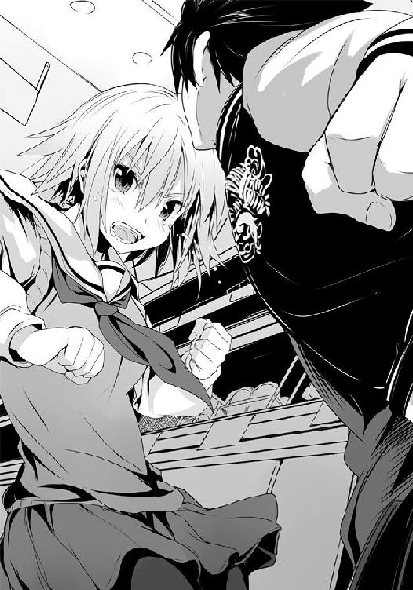
その瞬間、僕にはわかった。彼女は......先輩は、ミスをした。
最強の座に就くと言った彼女は、大きなミスを――しでかした。
僕の額から流れる血が両目に入る。
世界が赤くなるのと、先輩の目尻から雫が零れるのは、ほぼ、同時だった。
「――だから!!」
勝とうというのなら、本当に最強の座に就こうというのなら......またあの言葉を口にすればいいんだ。彼女は、それだけで少なくとも僕を倒せる。けれど、彼女は――しくじった。
間合いを詰めた彼女の０距離掌底。攻撃が迫るのを肌で感じながら、僕は瞼を閉じる。今まで食べてきた半額弁当が、その味が、その喜びと共に側にあった槍水先輩の笑顔が、走馬灯のように僕の脳裏を駆け抜けた。無数の感動があった。バカみたいに笑って、喜んだ。そんな一年という時間が......今、一つの塊となって僕の胸を打つ。
僕は胸に引っかかっていた何かが外れたのをはっきりと感じた。
今までどうしても邪魔になっていた雑念という名の首輪が外れ、ただ、野生に戻った腹の中の獣が、ありったけの咆哮を上げた。
「帰ってこい、佐藤！ 私たちの部室へ！ またうまい半額弁当を、一緒に喰おう!!」
――先輩、その言葉だけで、僕は......あなたを越えられる。
彼女の掌底を弾くことも、かわすこともせず、ただ、受け入れた。
そして......同時に僕もまた密着状態からの、ありったけの力を込めた掌底を放つ。
僕の人間としての理性が飛ぶ直前......最後に見たのは、僕の掌底を喰らいながら微笑む槍水先輩の、穏やかな顔だった。
●
コンビで行動する時の最大の欠点、それはサラマンダーにも指摘されたが......しかし、どうしようもなかった。妹を捨てて逃げることも、今まで以上の攻撃に出ることも、出来はしない。
「俺の攻撃は全てカゴ技で受け流す......カゴの柔軟性そして取っ手を握った際に衝撃を回転エネルギーに変換させられる特性を活かせば確かに可能。俺を攻略するに十分な戦術だ。たった一度、以前に当たっただけだというのに、きちんと〝受け〟に重点を置きつつ戦闘を展開したのは評価に値する。......だが、二人組というのがまずかったな。実際には互いを利用し合うツードッグスの方が狼の関係性としては理想的だろう」
「......余計な説法ですわ、最強さん」
「最初にカゴ使いがカゴを捨てるという荒技はやれても、相方を捨てることまでは出来なかったか。思えば、あれがお前たちのピークだったな。技もそうだが、腹の虫の加護も、俺に仙のもとへ行かせまいとするあまりに鈍っただろう？」
梗は唇を噛みながら、正面に相対する男を見やる。最強の狼、魔導士。そして彼の両手から下がる妹と二階堂の顔を。二人ともにグッタリと意識のないままに頭を掴まれ、顔だけを床から持ち上げられているという有様だった。
前回戦った時は今回のような〝コンビ潰し〟をされなかったが故に、分断させられることを警戒していなかった。こちらが一度戦ったことで対魔導士戦を計画したように、彼もまた、一度は下した相手とはいえ、より効率よく、より完璧に撃退しうる戦術を考えていたのだ。その勤勉さ、周到さ......それもまた最強たる所以か。
せめて二階堂が介入しなければ......。彼の勇ましさが足を引っ張った。
鏡のピンチを察して前線から駆けつけてくれた彼。だが、その狼としての行いというよりは単なる男としての行動は、オルトロスの足を引っ張り、結果魔導士の手から鏡は抜け出せなかったどころか、二階堂自身すら彼の手に落ちてしまった。
誰もが最善を尽くそうとして行き着いた悪い状況というのは、得てして最悪なもの。今回はまさにそれだった。こうなってしまっては梗一人ではどうしようもないのだ。玉砕覚悟で意地を通すしかない。身を引くことは無理だ。プライドが、それを許さない。
覚悟を決め、重心を落とした......その時だった。弁当陳列棚方向、乱戦のど真ん中。爆発が起きた、と肌が感じる。物理的な現象ではない。これは......覇気。
梗は視界から瞬時に色味が失せていくのをゆっくりと感じた。全てがスローモーションのように世界が遅くなる。そんな中を、魔導士共々その方向へ顔を向ける。
狼たちを弾き飛ばしていた。その原因を作った何かが、来る。
ったく、手間をかけさせるんだから!! 苛立ちを含んだ女の声がして、上空から何者かが梗と魔導士の方へ背を向けて飛来する。茶色の長い髪。まるで木々を薙ぎ倒しながら進んでくる土砂崩れのような衝撃波の前に立ち塞がった彼女は腰を落とし、それを抱きかかえるように腕を伸ばす。――信じられぬパワーと速度でぶっ飛ばされてきた、氷結の魔女だった。
仙!? と、魔導士が声を上げる中、茶髪が魔女の体を受け止める。だが、その靴底が粉塵と煙を上げる。勢いが止まらない。彼女らの後ろは魔導士と梗の二人だけ。そして、その先には真っ直ぐに伸びる島棚で囲まれた通路......とはいえ、あの勢い......ヘタをするとレジかその向こう側まで行きかねない。当然そこにあるのは荷造り台の他、コピー機や電子レンジ、畳まれたダンボールコーナー、そして窓だ。
全てがゆっくりとした世界で、梗の頭に通路を吹き飛び、レジを、そして荷造り台を飛び越え、窓を突き破る彼女らの姿が思い浮かんだ。
スーパーを守ろうとする狼としての本能が梗を彼女らに向けて飛翔させる。茶髪の背に抱きつくようにして、魔女の体を押さえ込む。肌が触れればなおのことわかる。その体に叩き込まれたエネルギーの強さ。両足の踏ん張りだけでは足りない。梗は、両足を床にこすりつけながら、左腕で彼女らを抱くようにして、右手のカゴを床に突き刺すようにしてブレーキを掛けた。それでようやく、十数メートル、レジ近くに到達した段階でようやく......止まる。
梗は茶髪共々、どこか微笑んでいるようにすら見える意識ない魔女の上にもたれかかるようにして、倒れた。
飛びそうな意識の中、梗は驚愕に目を見開いてこちらに顔を向けている魔導士を見やる。彼は両手に掴んでいた二人の頭を放し、店内最奥を見やった。
そこにいるのは......掌底の構えをし、燃えるような目をした、佐藤。カペルスウェイト。その全身から、煮立った油を連想する、危険を孕むほどの熱――腹の虫の覇気が溢れ出していた。
「如何にしてあの大厄の闘牛士を打倒したのかと思ったが......なるほど、これは......これならば......。仙、お前の役目はまさに今終わった。あの男をこの場に用意するのが、お前の......」
誰もがあまりの衝撃に呆然として固まる中、佐藤――カペルスウェイトが構えを解く。
「素晴らしいぞ、佐藤。まさに今のお前ならこの俺に対抗し......なに？」
魔導士が飛ぶようにして走りだす。佐藤が、魔導士を見ることもなく弁当へ向かって飛んだのだ。当然その狙いは弁当奪取。魔導士はどこかで自分に向かってくると思って油断していた。だからこそ、チャンスだと佐藤は......いや、あの様子はもはやそんな計算はしていないのか。
狼だから、腹が減っているから、ただ、弁当へ向かった。それだけだ。
佐藤が二匹の狼を吹き飛ばし、最前線に到達した際に魔導士が追いついた。その背後に迫り、回し蹴りを繰り出す。佐藤はそれを見ることもなく首を捻ってかわし、さすがに弁当へ背を向け、振り返る。そして陳列棚下部を蹴るようにして魔導士との距離を一気に詰めた。
居合いのような右の手刀、続けて左の掌底。魔導士、下がってかわす。そこへさらに佐藤は空ぶった右の手刀を滑らかに掌底へ変換、引き絞った強烈なそれを放つ。さすがにかわせない魔導士はこれに拳をあてがうも......パワー負けした。最強の男の拳が、弾かれたのだ。しかし佐藤の掌底もまた狙いがブレ、下方へ落ちる。引っ張られた佐藤の頭が下がるのにタイミングを合わせ、魔導士が弾かれた手を拳に固めて佐藤の後頭部を狙う。佐藤、下方へ向かった掌底に全身を任せ、やや崩れた前宙へ。回転することで迫り来た拳をかわし、その回転力をそのまま胴回し回転蹴りへ。魔導士、かわされた拳をすぐに引き、頭上から来たそれをガードする。
佐藤が、吠えた。そこで梗は目を見張る。魔導士が頭上で腕を掲げるようにして蹴りを受けてもなお、佐藤の動きは止まらなかった。普通ガードされればどんな連続技とてそこで動きが止まる。だが、止まらない。佐藤、ガードされた足と魔導士の腕を支軸とし、さらに回転するようにして魔導士の上へ体を持ち上げた。そしてもう一方の足で彼の腕を下へ押すようにして蹴りつけ、佐藤、天井へ。魔導士が反動に負けて膝をついた。
傍から見ている梗にとって、それは不思議な光景だった。上下逆の姿でありながら、お互いに相手を見つめながら地面と天井に同じ体勢でしゃがんでいる。だが一方は力を溜め込み、もう一方は力を失った結果、その体勢になっているのだ。
佐藤、飛ぶ。強烈な拳を放つも、魔導士は自ら床に転がってこれをかわした。
「エコバッグの用意もなしに、お前にその技は扱いこなせないぞ、佐藤！」
佐藤すぐさま身を捻って足から激しく着地。店を揺らす。床に落ちた衝撃をその身に溜め込みながら......間髪をいれる間もなく掌底へと技を繋ぐ。佐藤の連続技はまだ終わっていなかった。
一体何連繋げたのか、梗にはもはやわからない。通常どれだけ考えられた連続技であっても必ず止まる。どんな人間でも必ずスタミナが切れるからだ。ゆったりとした技ならともかく、打撃の連続となれば必ずどこかで切れる。佐藤はそれを腹の虫の加護で補っている。それはわかる。だが、それにしても、佐藤の技は延々と続き、かつ、その全てが強力だった。
上から下へ叩きつけたエネルギーを見事水平方向に変換し、解き放った佐藤の掌底は、魔導士もかわしきれなかった。魔導士、しゃがんだ体勢のまま、両腕を交差させるようにしてガード......したというのに爆音が轟き、衝撃が迸った。彼の体はビリヤードの球のように弾け飛ぶ。
魔導士、吹っ飛ばされつつも行き先をコントロールし、驚いて固まっていたカゴ使いの狼の一人に体をぶつけて動きを止める。そして着地と同時に佐藤に向かって接近、蹴りを繰り出す。
さすがの佐藤も今し方の連続攻撃の直後で足が固まっており、これをかわすことなく両手でガードして受けるのだが......そのガードはやはり弾き飛ばされ、蹴りが佐藤の体に叩き込まれ、吹っ飛んだ。
全体の力はまるで腹の虫の化身のような今の佐藤の方が上だ。だが、技はまだ魔導士が一枚上を行っている。
サラマンダーのように初めから力に頼り切った戦い方をしてこなかったおかげで小回りが利いているので、奴に対するのと同じ攻略法を取られたところで問題はないだろう。だが、今のままでは勝てもしないはずだ。魔導士の最強という壁はそれだけ高く、厚い。
梗は自分の腕の中にいる、幼い少女のような顔で眠る魔女を見やる。
佐藤の心はいまだに彼女に向いている。それがわかっていながら、彼女が来店した際にあえて二人の時間を作ってあげたくて、鏡を引き連れ、無理をした。それが自分の首を絞めるかもしれないというリスクを承知した上で、やるべきだと信じた。女として。
そして、そうだからこそ、オルトロスでは魔導士に痛打を与えるには至らなかったのかもしれない。行為は同じでも本当に弁当を獲るために必要だと腹の底から信じられたのなら、また違った結末があったことだろう。
全ては後の祭り......いや、仮に過去に戻れたとしても、きっと自分は同じ選択をしたはずだ。
「やるべきことをやったまで......とはいえ、鏡、二階堂さん。ごめんなさいましね」
鏡が倒れ、自分もまた力を使い果たした以上、もはや、今宵は成り行きを見守るしかない。
だがそうなのだとしても、梗は最後に一つだけやっておこうと決めた。
「狼さんたち！ ボサッとしていてはいけませんわ！ 今こそチャンス!! 佐藤さんと魔導士さんが潰し合っている今こそ!!」
狼たちが一斉にハッとした。目の前の激しすぎる攻防戦に、誰もが見とれてしまい、自分たちが何のためにここにいるのかを忘れていたのだ。
彼らは〝チャンス〟という言葉に勇気づけられ、また、動き始めた。
「これで......わたくしの出来ることは全てですわ。佐藤さん、後は......あなた次第。混戦の最中に、魔導士の術の謎を解かなければ......もう......」
梗は瞼を閉じ、俯いた。
「......きっと誰もが望みを叶えられる結末なんてないんですのね。だから......せめて佐藤さんの望みだけでも......」
それが自分の望みと重なれば、どれほど素敵なことだろうか。
梗は瞼を開くと口元に寂しげな笑みを浮かべ、穏やかな寝顔を見せる槍水の頬を撫でた。
そんな時、ふと、梗は気がつく。誰もが佐藤と魔導士、そして半額弁当に意識を集中する中......赤いフードを被った何者かがいつの間にか店内にいるのを。
顔は見えなくとも、フードから覗くその髪と姿に、梗は覚えがあった。
〇
梗の言葉で場が再びうねるようにして動きだした。固まっていた狼たちが再び動きだし、同時に一度はやられて離脱していたウっちゃんやジョニーなんかも再度駆けだしている。
そして、僕もまた梗の言葉と魔導士の一撃によって理性が返ってくる。煮えたぎるような腹の虫の加護はそのままに、意識が戻ったのだ。
このままでは勝てない、そう判断した腹の虫が僕の人格を呼び戻したかのようだった。
乱戦の中央にいる僕へ、魔導士が向かってくる。弁当よりも戦いに魅入られていれば隙も出来ようものだが、彼の意識はしっかりと弁当に意識を向けているようだった。まだ獲られない、そう確信しているからこそ、僕へと向かってきている。
彼を攻略せずして、今宵の半額弁当はない。それは確信していた。だから僕もまた彼に向かおうとするのだけれど......そう考えていたのは彼らも同じだ。
顎髭と坊主、さらにはウっちゃんが――組んだ。前者二人が魔導士を挟み込むようにして同時に攻撃を繰り出し、頭上からウっちゃんの跳び蹴り。チャンスとばかりに僕も加わろうとしたのだが、その視界が格子状の影に遮られる。
カゴ。頭上から。後ろへ引き倒されそうなその技には覚えがある。ジョニーだ。
「てめぇらだけがこのスーパーの主役じゃねぇんだよ!!」
ジョニーの雄叫びを聞いて、僕は思わず笑顔になる。梗の発破は〝魔導士が動けない今なら弁当を獲れる〟という意味だったのに、彼らはそれを逆に捉えたのだ。梗はそれを狙ってはいなかったのだろうが......何とも面白くて、愛らしい連中だと思わずにはいられない。
彼らは、梗に〝魔導士には勝てねぇんだから、さっさと弁当かすめ獲れ〟と言われたように取ったのだ。だから、僕と魔導士に来た。場の流れを見やればあのボルゾイをはじめとした幾人かは弁当へ、残りは全て僕と魔導士を狙ってきているというおかしな状態になっていた。
――そのジャージ野郎の言う通りだ！ ――ここは、オレたちの縄張りでもある!! ――好き勝手してんじゃねぇぞ!! ――私を倒してから弁当を獲ってみせろ!!
声が上がる。僕らを取り囲む無数の狼たちの雄叫び。
「喰らえ変態!! マイ・スゥイート・ハニー・エンジェル・ガールへ捧げる必殺の――!!」
いや、それいつもの技だろ、ジョニー。僕は胸の内でそう笑いながらあえてカゴの圧力には逆らわずに、むしろ背後へ自ら飛ぶようにして倒れる。バク転、そしてその状態からのジョニーのこめかみへの蹴りを放ち、奴を吹っ飛ばす。顔を上げたところにデカイ拳。今度は退魔師だ。僕はそれを外方向へいなしながら、その腕に沿うようにし自らの体を踊るように回転させて間合いを瞬時に詰め、彼の鳩尾に肘打ちを放つ。一瞬早く彼は全身防御を発動してダメージを防ぐも、僕は間髪をいれる間もなく０距離からの両手掌底へと繋げる。銅像のように固まっている退魔師をそのままの姿で、魔導士の方へと押し飛ばしてやった。
魔導士は左右からの坊主と顎髭の攻撃を見事にかわすどころか、カウンターをそれぞれに打ち込んだのだが、上空から来ていたウっちゃんの攻撃はされるがままに頭へ喰らう。......が、ジョニーの攻撃にドン引きしていたのか、彼女のそれはただの跳び蹴り以下のものであり、魔導士の髪を乱しただけでウっちゃんの方が逆に弾かれて乱戦の中に落ちていった。
うるさいものだな。魔導士はそう呟き、全身防御の態勢のままで床を転がってきた退魔師の体に足を掛け、上空へ飛ぶ。天井へ着地し、真っ直ぐに僕狙いで拳を放ちながら飛んでくる。
僕は迎撃の態勢に入った。彼の一撃の破壊力を知っている狼たちはさすがに介入しようとはせず、爆心地となる僕の周囲から遠ざかった。
飛来するタイミングを見計らい、バックステップ。そして魔導士が間合いに入る直前に、拳を構えて僕もまた飛び上がる。落下する魔導士の横っ腹に一撃叩き込まんとする。
だが、魔導士はまさにその名の通り魔法を使ったかのようにして、空中に止まってかわす。
魔導士は拳にしていないもう一方の手をコートのポケットに手を入れ、それでまるで翼を広げるようにして空気を上着の中へ入れ、エアブレーキをかけたのだ。
僕の拳は空振り、魔導士の攻撃だけが僕の頬に叩きつけられた。ブレーキをかけた以上パワーはそれほどでもないが、それでも激しく僕は床に叩きつけられる。
そこに周りにいた狼が一斉に駆け寄ってくる。どんな狼であろうが、床に倒れれば踏みつければいいのだ。大体それで、文字通りに潰せる。
当然のように狼たちの足が来る。そしてその頭上からは魔導士もまた、来る。
彼の術が炸裂し――狼たちが弾け飛んだ。
「そんなつまらない終わり方をするな、カペルスウェイト。さぁ、立て。宴はまだ、終わらせはしない。犬どもも、ようやく牙を思い出したようだ。お楽しみはこれからだぞ！」
目の前に立つ魔導士が子供のような笑顔で僕を見下ろしていた。
その笑顔に応じるように、僕もまた笑みを浮かべ、立ち上がり......そして、いつだったかのように、魔導士と僕はごくごく自然に、背を合わせた。
「「さぁ、来い!!」」
著莪ほどに気楽でなく、二階堂ほどに馴染まず、槍水先輩ほどに信頼出来はしないけれど......背に感じる彼の存在は力強かった。たとえ他の狼が束になって僕らだけを襲ってきたとしても負けるわけがないと、断言出来るほどに。
なるほど......これじゃ、槍水先輩も腰巾着になってしまうはずだ。そんな悔しさをほのかに覚えつつ、僕と魔導士は包み込まんとするかのような狼たちの猛攻をその技の数々で薙ぎ払っていく。今の僕と、魔導士の術の前では凄腕と言ってもいいはずの彼らとて、烏合の衆に近い。あっという間に数が減っていく。僕らが倒した者もいれば、これは倒せぬとして奪取に切り替える者......どちらにせよ、再び僕と魔導士の戦いに介入しようとした狼の大半はあっという間に失せていった。
そう僕が思ったと同時に、やはり来る。敵は味方、味方は敵。それが、この場だ。
背後からの魔導士の側頭部狙いの肘打ち。僕は頭を下げてかわすと共に、後方へ蹴りを放った。受けられる。そしてお返しとばかりに、魔導士のフックが来る。僕はガードするのだが......やはり、ダメだ。ガードした腕が弾かれ、腹部にフックが突き刺さってしまう。
「どうした？ 俺以外には調子いいくせに、がっかりさせるな」
彼の挑発を含む言葉を受けながら、僕は今一度彼の能力を考える。きっとどこかしらに術が仕掛けられているのだ。最強たる所以の何かが――。
ぶっちゃけ対処法は一応わかっていた。パッドフッドたちが受けに重点を置いたことからしても、魔導士の術は攻撃にのみあると見ていい。彼らのような能力のない僕の場合、攻撃を受けずに全てかわせばいいのだが......当然彼の技はサラマンダーのように大味でもない上、僕は白粉のように小柄でも俊敏性に特化してもいなかった。かわし続けるのには無理がある。
現状わかったことは攻撃に攻撃を当てて打ち払う分には問題ないのだが、これも引き分けには持っていけても勝ちには成り得ない。どうしたって彼の攻撃に合わせようとすればこちらはアクティブさを失ってしまう。......そんな中で、唯一可能性があるとすれば......あれしかない。
僕は、腹をくくった。そして、その腹から伸びる魔導士の右手首を左手で掴む。
行くぞ、魔導士。行くぜ、腹の虫――!!
僕は雄叫びを上げる。腹の虫の加護を最大限に引き出し、そして左手で掴んだ魔導士の腕を引き寄せながら、右の拳を魔導士の腹に叩き込む。さらにもう一発、さらに、さらに――！
魔導士はそれを左腕でガードしつつも、蹴りを放ってくる。僕は、無視する。
蹴りの衝撃に震えながらも、その痛み、その苦しみは、全て意識から追い出した。ただ、ひたすらに右の拳を魔導士に向かって放ち続ける。
パッドフットに喰らわされたこの拘束技。力と体格に差があれば一方的だが、そうでなければ必ず反撃を喰らう。逆に言えばそれを受け入れる覚悟があれば......確実にこちらの攻撃をぶち込める。痛みを、苦しみを受け入れ、その何割かを魔導士に送り返す。分の悪い勝負。けれど、確実に魔導士の体力はこれで削り取れる。
魔導士もこちらの思惑に気がついたのか、拳を顔面に喰らいながらも間合いを詰め、僕に掴まれていた彼の右手を再びフックとして送り込もうとしてくるも、さすがにそれは腹に突き刺さる直前で止めてみせた。
魔導士はすぐさまプランを変える。彼は身を捻るようにしてこちらに背を向け、背負い投げの要領で空中に僕を投げ飛ばす。さすがにこうなってしまうと僕も手を放さざるを得なかった。
攻撃というよりは振り払っただけのそれだったので、僕はすぐさま床に着地し、次の戦法に打って出る。床に落ちていたジョニーのカゴを拾い上げると共に、弁当へ向かって飛び込もうとしていたカゴ使いへ蹴りを放って吹っ飛ばし、そいつが握っていたカゴをも奪取。
左右の手それぞれでカゴの縁を握り、魔導士に迫る。上下から挟み込む。《大顎》の技だ。
魔導士、かつて槍水先輩が見せたように頭上に上げた両腕で輪っかを作るようにしてカゴを両肘で受け、下方からのそれを持ち上げた片方の靴底で受け止める。そして、残ったもう一方の長い足で僕の顔面を狙ってきた。当然、予想の範疇。僕は両方のカゴから手を放し、迫り来たその足を抱きついて捕まえ、そのまま床へ転がるように飛ぶ。魔導士もまた転倒。
奴の足を放して立ち上がった僕は即座に拳を放つ。倒れたままの魔導士の顔面へ。
魔導士、ガードせずにこちらの胸ぐらを掴み、そして身を屈めるようにして僕の側頭部に膝蹴りを叩き込んでくる。大したダメージはないが、同時に僕の下段突きも力を失ってしまった。
それはカウンターというよりは攻性防御といったところか。
僕はよろめきながらも、立ち上がる魔導士から距離を取らなかった。拳が来る。防御したってダメなら――僕はその腕を掴み、背負い投げへと持っていく。
――だが、しくじった。目算では捉えたと思ったのに、魔導士の腕は僕の手をかすめるだけだった。
僕の背中から横にずり落ちるようにしてサイドへ魔導士がエスケープ。掴み損ねた彼の腕は僕の顎を上方へとしたたかに平手で打ってきた。視界が、思考が......揺れる。
......無理か、やはり、ダメなのか。奴の術を解き明かさずに、勝利は出来ないってのか。
ぐらぐらする視界の中に映る魔導士は、まるで目の前に聳える巨大な山であり、僕はそれを見上げている感覚になっていた。
これを登り切らなければゴールなんてない。先輩とうまい弁当なんて喰えやしない。そう考えると、挫けそうになる。腹の虫だけは行けと叫ぶ。
だが、果てしない。その気持ちが心と膝を折ろうとする。
「どうした!? 今の一連の動きは良かったぞ！ もう終わりか!? 持てる全てで挑んで来い！ お前が狼として学んだ全てをぶつけてこい！ お前が化けられる全てで挑んでこい!!」
僕が化けられる全てというのは、結局のところ僕が戦ってきた狼たちのことだろう。彼らとの戦いが僕を育てた。だが、彼のようなわけのわからない能力者とは戦っていないのだ。
やはり、勝てないのか。負けるしかないのか。
......僕が何に化けようと最強の狼が扱う術には敵わないのか――。
揺れる視界の中、魔導士の拳が迫り来る。
そこに見えるのはやはり、巨大でそのどこもかしこもが断崖絶壁の山。そして、僕の胸に、今まで戦ってきた無数の狼たちの顔が、技が、痛みが、その戦いの全てが蘇る。
いろんな狼がいた。良い奴もいれば、虫酸が走るような奴もいた。
そして無数の戦いがあった。それらは......無駄だったのか。
迫る拳に、僕は瞼を閉じた。
腹の虫の加護で鋭敏化した肌感覚で拳を感じる。すぐ、そこに迫っている。
「諦めるな佐藤!!」
馴染みのある女の声が聞こえた気がした。それが誰であるのか、今の状況では思いつかない。
だけれど、それは間違いなく僕が知っている声......誰だっけ？
走馬燈のように、幾人もの女性の狼の顔が頭を過る。気がつくと男の狼たちもまた......。
そんな時、ふと、思う。
オルトロスや二階堂、彼女らとの夕餉も、一緒の行動も、最強の前では無意味だったのだろうか？ 違う！ 彼女らとの時間は無駄でもなく、無意味でもなかったはずだ。
そう、彼女らだけじゃない。今まで戦ってきた全ての狼たちは、彼らとの戦いは――!!
瞼裏にすら浮かぶ魔導士の脅威。巨大な山。それを見上げる自分。けれど横を、そして後ろを見れば......そこには、今まで共に歩んできた無数の狼の姿が、ある。
彼らが、彼らとの戦いの記憶と経験が、挫けそうな僕を支え、そして僕の背を押している。交わしてきた言葉と拳が、今、僕の中にある。
まだ、終わりじゃない。僕の中にいる彼ら、彼女らの力はこの程度じゃないはずだ。
そうだろう、みんな。まだ出来ることがあるに決まっている。
たとえ自分の力を信じられなくとも、戦ってきた強敵たちならば、信じられる。
思い出せ、僕が強いと感服した狼たちを。
その中で、誰なら魔導士を倒せる。誰との戦いなら......。
ふと......著莪が笑っているように思えた。
大丈夫だ、と言っているような、そんな気がした。そしてまだまだこれからだ、と。
......そうだよな、著莪。まだ、終わりじゃない。
僕らが挑戦するのを諦めたりしたら......それこそ、終わりなんだ。
僕は瞼を開く。肌で感じていたよりも、ずっと近くに魔導士の拳があった。それを出血している額に喰らい、そしてそのままジョニーの時と同じようにバク転へ繋げ、そして彼の顎先を蹴り上げようとするのだが......やはり魔導士の一撃は重い。バク転は綺麗にいかず、僕は無様に床の上を転がるだけだった。
チカチカする視界の中、瞼を閉じて立ち上がった。
「まだだ。まだ......終わりじゃない。終わらせない。僕の戦ってきた全ては......まだ、終わりじゃない！」
張れる策は全て巡らせ、試せることは全て試す......そして最後はありったけの〝自分〟を叩きつけるのだ。
考えろ。答えはあるはずなんだ。著莪はメールで言っていた。
――アタシとお前は倒せる素養をすでに持っている。得意と苦手、逆に考えろ。
その言葉を僕は疑わない。きっと答えはもう僕の中にある。
さらにオルトロスは、戦いの中でそのための準備を僕に仕込んでくれたのは、間違いない。
考えろ。先ほど戦った槍水先輩は、お前の欲しかったのは、コレだ、と言った。
あの時、大っ嫌いと言われた日、僕は彼女に何を要求した？ 思い出せ。
......そう、僕は魔導士を倒すために、戦ってほしいと......そう告げたのだ。
そして彼女は極端なほど、数撃で察せられるほどに、わかりやすく、技を放ってくれた。
あれは同じフォームで、同じ速度で、技の強弱を自由に変化させられる、というものだった。
魔導士も同じ？ いや、魔導士はその全てが同様に強い。強弱に差はなかった。では、何だ？ 槍水先輩の技と魔導士の技......どこかに共通点があるはずだ。
答えは自分の中に、先輩の技、得意と苦手を逆に、槍水先輩の技......。僕は自らの記憶の箱をひっくり返し漁る。先輩の技は同じ攻撃のようであって別の攻撃......僕の得意なもの――運動、シューティングゲームとアクションゲーム。苦手なもの――興奮した白粉、寮の地下室、そして音ゲー......。
――来る。閉じた瞼越しに、魔導士の攻撃が迫ってくるのがわかる。
顔面狙いの蹴り。答えを見出せぬまま、僕は瞼を開く。
......その瞬間、光が見えた気がした。
目前には蹴りが迫っていた。それこそ視界の全てが靴底で覆われるぐらいの、それ。
強烈なエネルギーが込められているのがわかる。だが――。
「そうか。......今、ようやく、わかった」
答えは、僕の中にあった。魔導士の能力ではなく、それを越えるための手法を、僕はすでに経験していたのだ。僕は魔導士の蹴りを喰らって吹っ飛びながら、即座に立ち上がり......そして、弁当陳列棚へ向かって駆けた。
「力勝負は終わりだということか、カペルスウェイト!?」
......勝つためさ。僕は小さく唱え、そして陳列棚前にいた狼たちを薙ぎ払っていく。
全員が腕っ節で勝負というよりは機動性に特性を持つ狼たちである以上、真っ当な攻防は得意というわけではないのだろう。簡単に、弾き飛ばしていける。
そこに空から介入してくる魔導士の蹴り。僕はそれを見つめ、そして......受け止めた。
自分でも予想以上に滑らかに体が対応する......オルトロスがさりげなく混ぜ込んでくれていた対魔導士戦の特訓の成果だった。
目を見張る魔導士の足を掴み、下へと引っ張り落とし、倒れたところへ拳を放つ。また、彼は僕の胸ぐらを掴み、膝を側頭部へ打ち込んでくる。だが、僕はその膝を見やり、そして、腕で受け止めながら魔導士の顔面に拳を叩き込んだ。
すぐさま他の狼たちが僕らを呑み込むようにして襲いかかってきて、僕は吹き飛ばされた。
......どうしても、魔導士と戦うとなると通常のそれに切り替えるまでに数撃を喰らわざるを得ないのが、辛いところだった。
だが......いける。ゴールが見えた。
僕は予感する。この争奪戦は、あと数十秒で終わる――。
魔導士がどうやってその技を身につけたのかはわからない。生まれながらの特性か、それとも戦いゆく中で意識的に身につけたものなのか、はたまた僕や彼女のように普通に生活してきた結果持ってしまった特性なのか。
槍水先輩のは恐らく魔導士を見つめ続けたが故に、自分の独自性に考慮しながら身につけた技のような気はした。だが、魔導士のそれは果たしてどうやったのだろう。
何にせよ、これほどまでにシンプル極まる技が魔導士の術の正体だというのは驚きだった。
僕は顎先から滴る汗と血を拭う。赤い視界の中、陳列棚の前は死屍累々として意識ない狼たちの体が、決戦跡のごとく積み上げられていた。
その大半は、僕が倒した相手である。さすがに体力をかなり消耗したが、十分だ。タネの割れた魔法を相手にするには......十分だ。
「......そうか。ようやく俺の術に到達したか、カペルスウェイト」
魔導士がなおも飄々とした様子で弁当棚前に立っていた。
「僕一人じゃ、無理だった。......大勢の狼と戦ってきたこと、そして、槍水先輩がたった一人ででもＨＰ部をそれまで通りに活動させようとしたこと......そして、僕が古いタイプのセガファンだったこと......すでに魔導士の能力に気付いていたオルトロスがさりげなくそれ用に僕を鍛えていてくれたこと......。全ては綱渡りのような偶然が紡いだ結果だ」
「だが、術が知れたところで......勝てるか、この俺に」
恐らく魔導士はあの術をメインに据えながらも、槍水先輩同様柔軟な対応力で最強に昇り詰めてきたのだ。だからこそ、自信が今も崩れたりはしない。
「僕は一度、似てはいないけれど、同じ攻略法が通用する狼と戦っている。先輩に連れていってもらった、北の土地で。まぁ、その時は負けたけどね。でも......今回は勝つよ」
僕は駆ける。脳裏を過る、禊萩真希乃――ギリー・ドゥーの姿。迫り来る魔導士。彼の拳を、僕は見る。狼ならば誰もが有する肌の感覚を、そして無意識化での計算を捨てる。
魔導士の拳を僕は左腕でガード。最強の狼からの重い一撃を受けきると同時に、僕はフックのような、横合いからの右の拳を放つ。魔導士はこれをかわすが、そこに僕は体を回転させて追撃として左の裏拳を放ち、これを当てる。だが、同時に僕の腹に膝蹴りが叩き込まれた。
「さすがに、見えていない攻撃は防げないようだな」
魔導士が距離を取りながら、笑った。
「どうしても反射神経で応じるしかないからさ。......当然、そうなるさ」
魔導士の術の正体――それは、リズムを意図的に崩せる力だった。人間は意識しないところで自然とあらゆる物事にリズムをとり、そしてまた共振するように、それに合わせようとする。
だからこそ複数人で歩いていれば自然と足並みが揃うし、誰かが殴りかかってきたら、いつ衝撃が来るタイミングなのかを無意識に読み、合わせてしまう。だが、魔導士はそれをほんのわずかにずらせるのだ。一瞬というにも短い時間、早めるか、遅めるかが自在に出来る。たったそれだけ。同じ間合い、同じ攻撃で、直撃するタイミングだけが違うという、同じフォームで力の強弱だけが違う攻撃を可能とした槍水先輩と似て非なる、絶技である。
攻撃が直撃する――つまり、インパクトの瞬間、受け手は必ずガードした腕や足に力を最大限に入れる。逆に言えばその前後はガードの状態は完璧からほど遠い有様になっているのだ。
腹の虫の加護により神経が鋭敏化している状態ならば、その精度は機械の比ではなく、即座に攻撃に移るためにも迅速に防御に力を入れ、迅速に抜く。それを誰もが自然としているのだ。
「僕の従姉がアンタと良い勝負したっていう理由がずっとわからなかったんだ。......でもさ、今ならわかるよ。アイツはフォームや状況、肌の感覚から相手の攻撃リズムを読んでなんていなかったんだ。全て反射神経で応じていた。だからこそ、いい勝負が出来た。まさに得意と苦手が逆......。僕らオールドタイプのセガファンの多くは......音ゲーが苦手だからさ」
セガゲーだからとアーケードでたまに遊んでも、大抵は二人して悲惨な結果を叩き出すものの、著莪は僕よりもリズム感が悪かったのを覚えている。そんな彼女だからこそ、魔導士の術に対抗出来たのだ。反射神経が尋常ではないほどに鍛え上げられている彼女だからこそ、先読みせずに状況を見てから行動出来た。そして、リズム感が悪いから、初めから攻撃のリズムやテンポに合わせることをしないでいられたのだ。......そしてそれは、僕も、同様だった。
「......普通の狼なら、きっとタネが割れたところで、すぐには対処出来ないだろう。リズム感を意識して捨てるなんて、そう容易くはない」
「自分は天才だとでも？」
魔導士が笑うように言うので、僕もまた笑った。
「いや、そうじゃない。......僕は、一人じゃなかったんだ。いろんな人との関わりがあって、今、ここに到達している。そうだ、こうして戦っている今も、僕は孤独を感じていない。これまで戦ってきたみんなの力が、今、僕の中にある。だからこそ――」
魔導士が、来る。僕はそれを見つめ、受け、そして激しく応戦する。
ラッシュの中で、魔導士が口を開いた。
「何が......言いたい」
金城優は最強になるために部を辞めた。孤独が強さだと知ったから。共に夕餉を囲む仲間はもとより、全てを捨てて、ただ半額弁当のみをひたすらに欲した。
サラマンダーのように、絞り出すようにして勝利の一味を味わおうとしたのではなく......それしかないようにして強さを手にした。
そして、今ならわかる気がした。何故魔導士が槍水先輩に戦えと執拗に迫り続けていたのか。
――孤独は最強を生み、同時に、最強は孤独を生んだ。
誰もいない頂上で、一人でいることに彼は耐えられなくなったのだ。
だから誰かが楯突くのを、喰らいついてくるライバルを求めた。そいつと戦っている間だけ、本当に強い相手と向き合っている間だけ......彼は孤独ではなかったのだから。
僕の妄想だろうか。そうかもしれない。でも、時折見せてきた彼の子供のような笑顔、そして今は受け止められるこの重く強烈な彼の攻撃を感じていると......あながち間違いでもないんじゃないのか、そう思うのだ。
だから、言おう。間違っていて、赤っ恥を掻いてもいい。大したことじゃない。いつものことさ。だから......僕は思い切って伝えよう。
「魔導士、僕がいる。もう、僕がいる。......お前の敵は、ここにいる！」
魔導士のガードを弾き飛ばし、僕の拳が奴の顔面を叩く。彼はよろめくものの、即座に蹴りで応じる。目で、計る。受ける。......そして、魔導士の体力と腹の虫の底が見えた。ガードが緩くなり始めたのもそうだが、攻撃のパワーが明らかに落ち始めていた。
「何を言っている!? ......何が、言いたい!?」
「僕が言いたいことは、一つだけだ!!」
僕たちは違う道を歩んだ。弁当を得んがために、全てを捨てた彼。
一方、僕は......そう、僕はあの夜、彼と約束したんだ。全てを掴んだままで行く、と。
だから僕は、アンタの手も掴んだままで......行くんだ。
「もう、お前は孤独じゃない。......来るなら来い、相手になってやる。いつだって、どこのスーパーでだってかかってこい。――僕がお前の敵になる!!」
ラッシュを仕掛けていた魔導士の目が不意に見開かれ、僕を見た。
掌底が来る。これを両腕を交差させ、受けるも、押し込まれて、僕は弁当陳列棚へ後ろ腰をぶつける。
魔導士が迫る。その顔には何とも複雑な表情が浮かんでいた。悦びも哀しみも苦しみも餓えも笑顔も、そしてその中には......これが最後の一撃だとするメッセージ。拳が、来る。
僕もまた拳を作り、腕を引く。そしてその時、視界の端にあの、うまそうなサバの味噌煮が入る。日本刀のように美しく照明を照り返すサバ。それが身を沈める味噌の煮汁。あぁ。カマボコも、玉子焼きも、ご飯も何もかもが......！
口内に噴き出る涎。胸に溢れる思い出。
そして脳裏を過る、共に夕餉を囲む仲間たちの笑顔――。
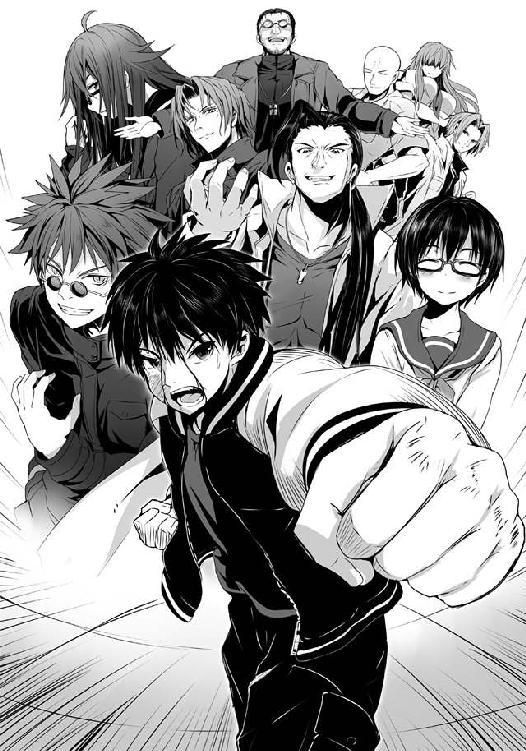
「この最強の枕詞を手にしてから言え！ カペルスウェイト!!」
僕にとって、最強なんてものはどうだっていいんだ。
ただ、僕は、あの毎日のように、当たり前のように、みんなで笑い合えた放課後が......一緒においしいねって笑い合えた食事の時間が......それを取り戻したいだけだったんだ。
不安も絶望も、もちろん涙もなく、ただ、毎日が楽しかった......あの日々を。
――またうまい半額弁当を、一緒に喰おう!!
「槍水先輩、これが......僕の返事です」
脳裏を駆け抜けるこれまで食べてきた弁当、どん兵衛、ソイジョイやカロリーメイト、勝利と敗北の味。そして思い浮かぶ拳を交わした狼――友と呼べる誇らしい僕の敵たち。
戦ってきた全てが今、僕の中にある。だから、わかる。今だからわかる。スーパーに孤独などない。スーパーに集う狼に、孤独なんてないんだ。全てが、ここにある。
今、僕はその想いを拳に詰め......そして、放つ。
技でも術でも、何でもない。戦術と呼べるものすらない。
ただ、思いっきり解き放った一撃の拳。
力と、腹の虫の加護と、そして......ありったけの想いを詰めただけ。
受け取れ、魔導士。道を誤った賢人。これが――全てだ。
●
『終わったようですよ、全て。......何もかも』
その報せを白梅から聞いた白粉花は、大きく息を吸い、そして星空へ向けてゆっくりと吐き出した。
現場で何が起こったのか、それを全て聞くよりも先に、白梅の口調、そして......あのスーパーというフィールドにおける佐藤たちのことを考えれば......きっと、全てが理想的な結果となったのだと、白粉は感じ、そして、それを信じた。
計算の結果の未来予測ではない。信頼が生んだ、白粉の予想だった。
今宵の星空はとても澄んでいて、綺麗だった。辺りにある民家よりもずっと大きな病院の屋上だから、というのもあるのかもしれない。街の光害が少ないのだ。
「......ありがとう、梅ちゃん」
『いいんですよ、白粉さん。わたしもまた、やりたいことをやったまでですから』
白粉はスマホを耳に当てたまま、体で夜風を感じた。
半天を羽織っていても、身に染みる冷たい風。
けれど、心は満ち、そして電話を通した梅との沈黙さえも、温かに感じられた。
白梅が展開を話してくれる。魔導士の能力を聞くにつれ、なるほどという気がした。何事もそうだが、基本に忠実ながら、そこへほんのわずかに何かを組み込む......それが、一番強い。
戦い方を読まれたら終わりといった弱点がないからだ。だが、それは些細なことだろう、という気がした。佐藤のように――拳が放たれてからそれに対応することを考えるに――〇・一秒、いや、〇・〇数秒単位での反応は白粉には無理だし、それを為せる狼も恐らく全国でもそう多くはないだろう。......とはいえ、金城の力の本質はそこではないのがまた......。
「ねぇ、梅ちゃん。天才と呼ばれる人間にとって、この世界ってさ......そんなにつまらないものなのかな」
半額弁当以外の全てを捨ててしまえるほど、呆気ないものなのだろうか。
この世界は毎日のように苦しいことがあって、ほんのわずかな喜びがたまに落ちている、その程度のものでしかないというのは白粉にもわかる。中学までの時は、間違いなくそうだった。
でも、そうだからといって捨てようとは思えなかった。今は、考えもしない。
『さぁ、わかりません。でも、世界の価値は人それぞれですよ。スポーツや娯楽以上の何ものでもないテレビゲーム、音楽や壁画のアート......生きていく上で必要のない、それでいい結果を出したとして実際には何ら価値がないようなことに熱中する人は世の中に大勢いて、彼らはまるでそれが素晴らしいものであるかのように語ります。......そう、わたしが半額弁当争奪戦に価値を見出せない一方で、白粉さんや佐藤君たちのように、命を懸ける人さえいるように。......同じ空の下であっても、世界は生きる人それぞれに無数の姿を見せているのかもしれませんね』
「梅ちゃんにとって、世界って......どう？」
『捨てられるものではありません。白粉さん......たちに、会えましたから』
梅は相変わらずこちらが恥ずかしくなるぐらいに嬉しい言葉を言ってくれる。
白粉は直接会っていないのに、眼鏡を掛け直して自分の照れを誤魔化した。
『でも、金城優という人も、同じだったのではないかという気はします。価値あるものを捨てた、だからこそそれで得た渇望の全てを半額弁当に注ぎ込み、あれだけの力を手に入れたのではないでしょうか』
魔導士が捨てた世界の価値とは一体何なのだろう。
ひょっとしたら、それはＨＰ部という場と、槍水仙をはじめとしたかつての仲間たちだったのではないだろうか。価値あるからこそ、捨てた時の反動が大きく、彼を最強の頂へ押し上げた......そう考えれば全てに辻褄が合うような気がする。
全てを失うことで強さを手に入れた金城優に対し、全てを掴んだままで歩もうとした佐藤洋。
この対戦カードは、まさに対魔導士戦として考えた場合これ以上はないだろう。
何せ、佐藤の存在そのものが、魔導士の強さを打ち消す効果を持っている。
佐藤が魔導士の前に立ち塞がった時、かの最強はライバルの登場により孤独を失い、その拠り所としていた力の根源を失ってしまったのだ。
そうなれば、あとは彼の経験と技での、一匹の狼としての勝負。前者はともかくとしても、後者もまた打ち破られたとあっては......どうしようもない。考えられる手段としては周りにいる狼を利用、または共闘することだったが、それは佐藤が対ギリー・ドゥー戦で行ったというのと同じ、皆殺しの戦法を用いてしまったが故に封じられた。
「......そっか。もし周りの狼と共闘したとしても、それはそれで彼の孤独はさらに打ち消されて......どのみち......」
『はい？ 何ですか、白粉さん』
思わず自分の思考が漏れていたのに気がつき、慌てて「何でもない」と弁解した。
魔導士はもう、孤独ではない。そんな彼は、次にどうするのだろう？ もう、それを維持し続ける理由もないはずだ。そうなれば、やはり......。
「......あ。梅ちゃん、あの......さ。えぁっと、結局、その......今というか......槍水先輩って、どうなったの？」
『あぁ、それですか。実はまだ、わかりません。......ただわたしが思うに......』
〇
『そういやさ、結局なんやかんやで忘れてたんだけど、お前アタシのおニューな眼鏡買いに行く約束、超絶無視したよね？ 来週でいいけど、目当てのヤツ、ワンランクアップしたから』
椅子に座った途端にスマホが震え、画面にはそんな今どうでもええがな、という著莪からのメールが表示されていた。
こっちはもうボロボロで、とてもじゃないが返信する気にすらなれない。購入し終えた弁当を円卓の上に置くので精一杯だってのに。
魔導士戦の反動は予想以上で、手に提げていたレジ袋の重みでさえ、倒れかねないレベルだった。五階分の階段を昇っていた時とか、マジで重力に殺意を抱いたほどだ。
また、スマホが震えてメールの着信を知らせる。
『申し訳ありません。今宵は、お誘いいただいたのにそちらにお伺いすることが出来ませんの。妹が、いよいよ二階堂さんからのお返事を貰うというのでどうしても、場の雰囲気の関係上、やはり二人＋わたくしという感じがベストだと思いまして。今宵は、本当にごめんなさい。この埋め合わせは後日、この一七歳というギリギリアウトな未成年の体と心を最大限に活用しいｐｊｆｋまそいふぁｃｋｐｆはぽういｓｏＤ』
......何、コレ？ ねぇ、梗......。
『先ほどの姉のメール失礼しました。止めようとしたのですが、送信されてしまったようです。申し訳ありません。ただ、姉のメールにあったように、今宵、私たちは佐藤さんからのお誘いを辞退させていただきます。すみません』
っつぅか、マジか!? みんなと一緒に喰おうと思って......頑張ったのに......。
僕は思わず椅子にもたれかかるようにして脱力した。呆然とする僕の眼差しの先には、細い月が浮かんでいて、何だかそれが今の僕を笑っている神様の口元のように見えてきた。
半額弁当を手に入れた夜はいつも部屋の最奥である窓際の、月明かりが降り注ぐ席に座るのだけれど、今日ばかりはそこに行く余力すらなかった。部屋に――ＨＰ同好会の部室に辿り着いたと同時に腰が抜けたのだ。
半額弁当を床にぶちまけるわけにはいかないとして踏ん張ったのと......彼女に支えてもらえたことで、何とか入り口に一番近い席までたどり着けていた。
「どうしたんだ、佐藤？ 誰からだ？」
そう言って、槍水先輩は、僕の肩から顔を覗かせるようにしてスマホを見やった。
「何だ、オルトロスの奴ら、来ないのか」
「ウっちゃんとか、茶髪にも断られましたし......誰も来ないですね、これじゃ」
正確にはウっちゃんには怖いと言われて逃げられ、茶髪は意識のない坊主と顎髭二人を放置するのもどうかと思うと言って、野戦病院の有様になっていたスーパーの休憩室に残ったのだ。
だから真っ当に僕が部室に誘って断られたのはオルトロスたちと、魔導士だけである。
魔導士は捨てた場所に興味はないとして、ボロボロの体でカロリーメイトのゼリーを買い、公園に向かった。......今頃、この星空の下で、夕餉を取ろうとしているはずだ。
「......そうか、残念だな。ならば、弁当、もう温めてしまってもいいだろう。佐藤、今のお前の体には栄養が必要のはずだ」
槍水先輩はどこかよそよそしい口調で言うと、僕の弁当を持って電子レンジへ。
ターンテーブルが回り出す。ウォーンと唸りを上げ......部室にうまそうな匂いが漂いだす。
僕はその音、その匂いを楽しみながら......部室を見回した。わずかばかり離れていただけなのに、どこもかしこも......何もかもが......懐かしい。
そう、電子レンジを覗き込む先輩の後ろ姿さえも。
幾度めか、スマホが震えた、そしてまたメール。著莪から。タイトルは『言い忘れ２』。
『お疲れさん。 カッコ良かったよ』
その短い文面を見た時、あの魔導士との打ち合いの記憶が蘇った。
もしかして......著莪、いたのか？ あのスーパーに？ ......行かないって言ってたくせに。
そうじゃなかったら、終わったかどうかなんてわからないだろうし......格好良かったって......何より、あの時、心折れそうになった時に誰かが僕を呼んだ声って、ひょっとして......。
でも、だとしたら何で黙って現れて、来たことも黙って......。
チン、と音が鳴る。弁当が温め終わった、その音だ。僕はスマホをしまった。
「......うむ、これはいい弁当だ。ジジ様の匠の技がふんだんに投入されているのが蓋越しにすら感じられる」
円卓に置かれる今宵の夕餉。半額弁当......月桂冠サバの味噌煮弁当【極み】。
全ての始まりにして、全ての終わり。ここから始まり、ここに至った......か。
先輩はグラスと麦茶を用意し、注いでくれた。......一人分、だけ。
「先輩、もう、いいですよ。もう......大丈夫ですから」
「......いいのか？ 行ってしまっても」
僕は弁当を見つめ、彼女がどんな顔をしているのか、見るのは避けた。ただ、彼女が纏った香水、カルバンクラインのエタニティのすっきりとした甘さのない香りを感じるだけ。
「言ったじゃないですか、先輩。スーパーに哀しみの涙なんていらないんだって。そして......先輩が泣いていたら、脇をくすぐってでも止めてみせるって。......行ってください。魔導士が......金城が待ってます」
「......受け入れてくれるかな、今更だぞ」
「もちろん。僕と魔導士の約束がなくたって......本当は大丈夫だったんですよ。もう彼に孤独は必要ないんです。きっと先輩と同じように、アイツも先輩をずっと......」
別に彼がスーパーを離れるから、というわけではない。
彼にとって、槍水先輩はきっと凄く大事だったのだ。だからそれを捨てることで力を手に出来た。そして頂点を極めたが故の孤独の中で助けを求めたのが......彼女だったのだ。
槍水先輩が強かったからというのもあるのだろう。だけれど、きっと、彼の心が求めたのもまた彼女だったから......そう、僕は信じていた。
そして今宵の結果の通り、孤独での最強はあり得ない。それがはっきりした今、魔導士は道を変えるはずだ。孤独である必要のない道へ。だから......。
「行ってください。先輩」
僕のすぐ後ろに立つ彼女は長い長い沈黙の後、大きく息を吸い、そして、吐いた。
「......わかった。お前にはいつも世話をかけるな。いつかきっと、恩は返す」
今までかけてもらった先輩からのものに比べれば大したことないですよ。そう軽口を叩きたかったけれど、僕は開いた口をすぐに閉じた。......鼻声になってしまいそうな気がしたから。
サバの味噌煮のそれも、先輩の香水も、段々と薄くなっている。息もし辛くなっている。まずい。ヤバイ。バレるな、今は、まだ......。
「......ありがとう、佐藤」
先輩はそう言い残し......僕から離れていく。
待って、そう口から出そうになるのをなけなしのプライドで抑え込み、今すぐ振り返って手を伸ばせば......と情けないことを考えてしまうのを、割り箸を握ることで僕は堪えた。
これでいい、これで良かったんだ。ここに至るために、全てがあった。
僕はひたすら胸の中で繰り返す。
槍水先輩、秋鹿、白梅、そして魔導士......交わした全ての約束が今、結実する。何もかもが、うまくいったんだ。悔しがるな、後悔するな。笑って、誇らしく、弁当を喰おうじゃないか。
このジジ様の最高の半額弁当を――この部室で、たった一人で。
絶対の勝利を意味する、月桂冠を。
背後で扉が開き、そして......閉じた。部室に残ったのはボロボロの僕と、うまそうな匂いを放つ月桂冠。そして......彼女の残り香だけ。
「......さようなら、先輩」
僕は鼻声で言って、真っ暗な天井を見上げた。我慢していた涙が、目尻からこぼれ落ちていくけれど構わなかった。どうせ、見ているのは月だけだから。
勝利して負けた。愚道を駆け抜け、ここに至った。後悔は、ない。間違いも、ない。
生を享け、セガを好きになり、そしてここに至るまでの全てにおいて......間違いなんてなかったんだ。
強いて言えば......一人で今、夕餉を喰らうことだけが、ちょっと残念だってだけ。
「いや、いいんだ。これで。何もかも。......だから、さぁ、喰おう。――いただきます!!」
さぁ、喰うぞ！ 月桂冠だ!! 待ちに待った夕餉の......時間......。
何故、涙はこぼれ落ちていくのか。何故、望んだ全てを成し遂げたのに、僕は......今......。
くそぉ、ダメだな。完全に鼻が詰まって......これじゃせっかくのサバ味噌の味わいが楽しめない。僕はスカジャンのポケットの中にあったティッシュで鼻をかむ。そして、沈み込んでいきそうな己の心に活を入れるために、瞼を固く締め、大きく息を吸う。
弁当の匂い、先輩の残り香......まるでいつもの夕餉時のようだった。
一緒に並んで座り、互いの弁当を見せ合い、そして満面の笑みで箸を持ち......その夜の戦いを振り返り、どんな狼がいたとか、どんな戦い方をしたとか、話題は尽きなくて......半額弁当は果てしなくおいしくて......。
そして、先輩からの味見をもらい、時には先輩から僕に言うのだ。彼女は――。
「まずお前が喰わないと味見を貰えないだろ。早く喰え、佐藤」
――声が、した。頭の中に響く妄想の類ではない。
鼓膜が、その鈴の音のような軽やかで、美しくて、耳に心地良いその声を......捉えていた。
僕は閉じていた瞼を開き、振り向こうとするのだけれど......その前に、僕の首に巻き付いてくる二本の腕。背中と、頬に感じる温もり。そして......彼女の香り。
僕は、魔女の領域に包まれた。
「......せ、先輩......？」
その時、わかった。扉は開き、確かに閉じた。けれど、そこにあるはずの遠ざかっていく足音は――なかった。そして、部屋に漂っていたのは残り香じゃなかったのだ、と。
彼女に後ろから温かに、柔らかに、抱きしめられながら、それが......わかった。
彼女は、そこにいた。
「いつからだ、佐藤。いつから......その......私を？」
「......ずっと、ずっとです。あの時、初めて僕が獲った半額弁当を......一緒に食べた......あの夜から......ずっと......」
「そうか。気付いてやれなくて......すまなかったな」
「で、でも......どうして......？」
「誰かを追いかけるのはもう、疲れてたんだ。でも、踏ん切りがつかなかった。今夜は、いい機会だ。......それに、白梅に訊かれたんだ」
――あなたの涙を拭ってくれる人は誰ですか？ そして、あなたを本当に笑わせてくれるのは誰ですか？
「その二つの問い、どれだけ考えてみても胸には一人の名前しか思い浮かばなかった」
「......槍水先輩......それって」
「もう、何も言うな。ただ、半額弁当を喰えばいい。......おかしな奴だな。どうした、何でまた泣くんだ。......お前は言っただろう。スーパーに悲しい涙はいらない。ただ、幸せだけがあれば......それでいいと」
頬に感じる、彼女の頬。髪。温もり。気持ち......。
それを感じる僕は、もう、箸を握った手を震わせ、涙を流すばかり。
彼女の手がそっと僕の右手に伸び、重ねた手で箸を取る。
そして、柔らかなサバの身に箸先を沈め、すくい取る。ふんわりと柔らかで、脂をまとった身。それを一度味噌の煮汁につけ......そして、僕の口へと持ってきてくれる。
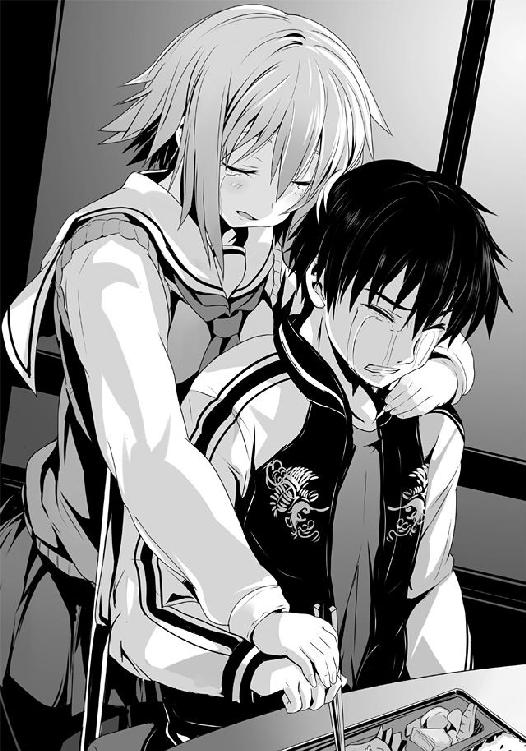
「佐藤。......あーん」
わななきそうな口を開ける。箸が、サバが、僕の口内へ。
......うまい。うまいと思う。鼻が詰まって、味がわからない。
でも、確かに、はっきりと......幸せの味がした。
「おかしな顔をしているぞ、佐藤」
潤む視界に映る、唇が触れてしまいそうな距離の彼女の顔。微笑んでいた。
大人びていて、優しさだけのある、そんな微笑みだった。
ただ一つ、その黒水晶のような瞳に、かすかな潤みがある以外は。
「先輩......好きです。大好きです」
「ん、私もだ、佐藤。......大好きだ」
いつだったか、同じような遣り取りをしたのを思い出す。
あれは、さらりとした、どうでもいいような、幸せな遣り取りだった。
今もまた、そうだ。けれど、あの時とは違う。どうでもよくない、全てが大事な、遣り取り。
「なぁ、佐藤。一つだけ訊かせてくれ。......お前はこれからもずっと一緒に、私とこうして夕餉を食べてくれるか。そして、私を......笑わせてくれるか」
それはきっと......世界で一番簡単な問いかけだった。
エピローグ 新たなる狼たち
「行くぜ、今宵の半額弁当は俺たちのものだぁ!!」
モッ君とマナミ
一九時四八分、『彼ら』は一軒のスーパーの前に立っていた。
『彼ら』は春の夜風に髪を揺らしながら、ライトアップされるスーパーの看板を見上げる。
「ここか！ あの最強の始祖、《アーサー》が治めているスーパーってのは!?」
短髪の小柄な少年が満面の笑みを浮かべ、握り拳を作った。その横で少年より少しばかり大きい女の子が、その腰にまで届きそうなサイドテールを犬の尻尾のように震わせる。
「そして、ここはあの狼の縄張り。烏田の二年の先輩......何て言ったっけ？」
「フン、何であれ、二つ名に犬の名が付けられている狼だ。恐れるに足らんというものよ！」
「けど、そいつが......倒したんでしょ？ 魔導士っていう、外国行っちゃった先代の最強」
「だが、その直後に幾度もボロ負けしたらしいし、結局偶然勝てただけっつぅ話だぜ？ おかげで魔導士なき今、我こそが最強だと名乗りを上げる連中が各地のスーパーでわんさかだ。まさに戦国時代、まさに群雄割拠。特にこの烏田高校の周辺のスーパーは、前回の最強を倒した犬をとりあえずぶちのめして、手っ取り早く名を売ろうって連中が毎晩のように現れるから激戦区らしいぜ！ くぅ〜っ、腕が鳴るぜぇ!!」
「烏田高校に進学して良かったね。中学時代、家から半径五〇〇メートル以内は敵無しって言われた、実質最強同然のモッ君ならすぐに名を上げて、有名になれるよ！」
「その通りだマナミ！ よっしゃ、入学して一発目にしてこの地でのデビュー戦、行くぜ！」
そう言って『彼ら』――モッ君とマナミは天下統一を目指し、狼たちがアブラ神と呼ぶ男が君臨するスーパーへと足を踏み入れた。
自動ドアが開いた瞬間に衝撃波のような圧力を感じ、マナミはモッ君の腕にしがみつく。
凄まじいほどの緊張を孕んだ空気に、足が固まって身動きが取れなかった。
「......おい、嘘だろ。まだ争奪戦も始まってもいないってのに、こんな......。しかも、何だ、あのイケメン従えているアイツら......まさか!? 実質ほぼ最強に位置するっていう......《オルトロス》じゃねぇのか!?」
「ちょっ、ちょっと、モッ君！ あっち、あっちのお菓子コーナー見てよ！ あそこでサイバー菓子見てる金髪の綺麗な人って......《湖の麗人》って呼ばれてる人じゃ......。しかもその横にいるそばかすの子って、特徴からすると《ジャック・ザ・リッパー》......？」
「何だこの魑魅魍魎が跋扈するかのような店......マジか!? いきなり猛者のオンパレードで......噂以上じゃねぇか!? ほ、他にどんな化け物がいやがるってんだ!?」
「えっと......もう、さすがにいな......アレ？ えりかちゃんだ？ ......ほら、モッ君。あそこ、和菓子コーナーにいる、後ろ寄りのツインテールの女の子。私のクラスメイトの淡雪えりかちゃんだよ。......ひょっとして、狼だったのかな？」
「......おい、何の冗談だよ。そのえりかって奴の隣にいるひょろっとした眼鏡の......丸富の制服着てる奴......ありゃ、《ギリー・ドゥー》だぞ......」
「うっそ!? あんなひ弱そうな子が......オルトロスと激戦の末に、その夜の月桂冠を手に入れたっていう......。でも、ギリー・ドゥーってスポーツ特待生だから、週に一、二回しかスーパーに現れないって噂だったのに......それが、何でこの地のデビュー戦で出てきちゃうの!?」
行くぞ、マナミ！ そう言ってモッ君は震える手で幼馴染みの手を握り、店内に進む。
......が、とても弁当コーナーまで進むことが出来ず、彼らは一度心身を落ち着けるために飲料水コーナー前にて足を止めた。
「信じられねぇ、あの缶詰コーナーんとこのジャージ野郎はいいとしても、横の黄色いパーカのウルフヘアの女子さえ、何だあの気迫。......クソ、広部蘭さん、俺の心を癒すと共に力を。そして将来は嫁に......！」
モッ君は飲料水コーナーのジャワティストレートを見やる。ボトルにはキャンペーン中のシールポップが貼りつけられており、そこではイメージキャラクターとして、元アイドルにして今は世界的な女優になりつつある広部蘭が微笑んでいた。モッ君の理想の女性である。
広部蘭の微笑みはいつだってモッ君に勇気を与えてくれるのだ。
「......大丈夫だ、俺たちは中三の一年間、あの猛者と戦って鍛えてきたんだ。あの実家から五〇〇メートル、高校横のスーパーを縄張りとする、あの......！ だから、大丈夫だ。俺たちより強いのは、あの《変質者》こと石岡勇気さんだけなんだ!!」
モッ君が一人でブツブツ呟いている中、彼の手を握るマナミの目は静かに自動ドアから入ってくる影を偶然捉えた。それはマナミと同じ烏田高校の制服を着た、小柄な少女だった。
マナミが校舎内で一度見かけた時、とても優雅で優しい生徒会長の白梅梅と一緒にいたのを覚えている。雰囲気から察することは出来ないが、その凄まじい過去は噂で知っていた。
「モッ君、アレ、見て。ほら......前最強を血みどろにまで追い込んだっていう《幽霊》だよ。......見えないよね、あんな小柄でかわいらしい感じなのに」
あ、と顔を上げて淡雪えりかとギリー・ドゥーがその幽霊のもとへと駆けていく。
「あれ、白粉先輩、お一人なんですか？ 他の先輩たちは？」
「えぁっと、今、来ると思いますよ。何かゲームで良い勝負になっちゃったみたいで、あたしだけ先に来ちゃいました。......あ、著莪さん！」
「んぉ？ あ、花とえりか......あとなんだ、地味ぃ〜に真希乃もいるんじゃん。相変わらず気配ないなぁ、お前」
湖の麗人に真希乃と呼ばれたギリー・ドゥーは困ったように眉を八の字にして微笑み、肩をすくめてみせた。
「......あ、噂をすれば、ホラ。来ましたよ」
幽霊がエントランス方向へ指を差すと、自動ドアが開き、二つの影を店内に招き入れた。
それらから発せられる気迫も凄かったが、それ以上に店内の狼たちが一斉に発したそれの方にマナミは度肝を抜かれた。誰も彼もが警戒し、緊張している。マナミやモッ君が怯えてしまうような魑魅魍魎のような連中ですら、その状態なのだ。驚きを通り越して唖然としてしまう。
その影こそが、モッ君とマナミが今宵勝負を挑まんとしていた相手なのだが......あまりに格が違うと、即座に知れた。
黒いストッキングに包まれた両足と、それが履くゴツイブーツがやけに印象的な女の狼。肩口までをあえてワイルドに見えるようにと整えている髪。そして宝石でもはめているような、瞳。......噂に聞いていた通りの、前最強の弟子にして、次の最強という噂もある名うて――《氷結の魔女》。
そして彼女の隣を歩く男こそ前最強を打ち破りしかつての《変態》、そして《ツードッグス》の片割れ......しかしてその実体はどんなものにでも変幻しうる全てを内包する黒妖犬。一度は最強に手を掛けし猛者。烏田高校二年、ＨＰ同好会所属、佐藤洋。《カペルスウェイト》。
「ど、どうしようモッ君!? 何だかよくわかんないうちに地獄の化け物オールスターバトルみたいになっちゃってるよ!?」
「う、うるせぇ、マナミ！ 黙ってろ!! 大丈夫だ、アイツらはどうせ潰し合うんだ。いつも通りに漁夫の利狙いで行けば......きっと！ きっと!!」
弁当を確認することすら忘れ、震え始める二人をよそに......その刻は訪れてしまう。
スタッフルームの扉を開き、中からエプロンを身につけた逞しい男が現れ、店内に向かって一礼。最後の騎士にして最強の始祖アーサー、そしてこの店の半額神であるアブラ神である。
彼の太い指がシール台紙を取り出し、総菜と三割引きの弁当を半額へと昇華させていく。いつもならば心躍る光景に、モッ君とマナミは全身を使ってダンスするかのように震えていた。
これからあの伝説的とすら言っていい化け物たちと拳を交わすのだ。半額弁当を本当に獲れるのか。というより生きてこの店を出られるのか、マナミにはわからなかった。
「マナミ、大丈夫だ。聞いたことがあるだろ。狼にとって......敵は味方、味方は敵。どんな相手であれ、恐れることはない。強力な味方だと思えってな......！ 信じろ、勝機はある!!」
「そ、そうだよね。モッ君を信じるよ、私！ 頑張ろうね！」
マナミはギュッと幼馴染みの手を今一度握り締め、心を一つにして、その刻を待った。
アブラ神の足音がスタッフルームへ向かっていく。
不自然にクリアに聞こえる軽やかな店内ＢＧＭ。そして、アブラ神の一礼と共に......それは訪れた。スタッフルームの扉が閉じる音。開戦の狼煙。
地鳴りのような踏切音、狼たちの無数の雄叫び。モッ君もまたそれらに負けじと声を張る。
「行くぜ、今宵の半額弁当は俺たちのものだぁ!!」
激流のような猛者の攻防が早くも展開する、弁当陳列棚前。
そこに若き狼たちは空腹だけを頼りに飛び込んでいく。
それは明日の夜も、そしてきっとその次の夜も同じように。
彼らの腹が空き、そしてうまい弁当を求める限り......その戦いは決して終わることはない。
需要と供給、これら二つは商売における絶対の要素である。
これら二つの要素が寄り添う流通バランスのクロスポイント......その前後に於いて必ず発生するかすかな、ずれ。
その僅かな領域に生きる者たちがいる。
己の資金、生活、そして誇りを懸けてカオスと化す極狭領域を狩り場とする者たち。
――人は彼らを《狼》と呼んだ。
著者紹介
アサウラ
１９８４年生まれ。北海道出身。東京在住。
大学在学中に第５回スーパーダッシュ小説新人賞に応募した「黄色い花の紅」で大賞を受賞、デビュー。
「ベン・トー」シリーズが「このライトノベルがすごい！ ２０１１」（宝島社）で第５位にランクインし、大ブレイク。
柴乃櫂人（しばの・かいと）
１９８１年生まれ。大阪出身。東京在住。
ゲーム会社に所属しニンテンドーＤＳの大ヒットＲＰＧ「ルミナスアーク」などのキャラクターデザインを手がけたのち、フリーに。
「ベン・トー」シリーズのコミカライズで漫画家デビューも果たす。
集英社ｅスーパーダッシュ文庫
ベン・トー 11
サバの味噌煮弁当【極み】２９０円
著者 アサウラ
(C) ASAURA 2014
２０１４年１月29日発行
この電子書籍は、集英社スーパーダッシュ文庫「ベン・トー 11 サバの味噌煮弁当【極み】２９０円」
２０１３年11月27日発行の第１刷を底本としています。
発行者 鈴木晴彦
発行所 株式会社 集英社
東京都千代田区一ツ橋２丁目５番10号
〒１０１−８０５０
［電話］
０３−３２３０−６０８０（読者係）
制作所 株式会社デジタルディレクターズ
本作品の全部また一部を無断で複製、転載、改竄、インターネット上に掲載すること、および有償無償に関わらず、本データを第三者に譲渡することを禁じます。なお個人利用の目的であっても、コピーガードを解除しての複製は、法律で禁じられています。